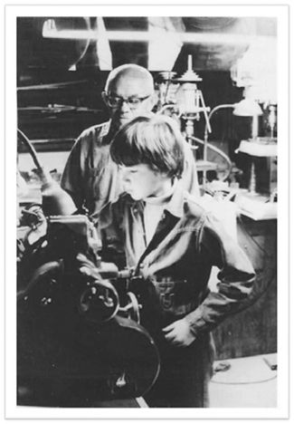

| MAKERS―21世紀の産業革命が始まる | |
| クリス・ アンダーソン | |
| NHK出版 (2012) | |
ＭＡＫＥＲＳ 21世紀の産業革命が始まる
カーロッタ・アンダーソンへ
MAKERS : The New Industrial Revolution by Chris Anderson
Copyright 2012 by Chris Anderson
All rights reserved.
装幀 トサカデザイン（戸倉 巌、小酒保子）
ＭＡＫＥＲＳ 目 次
第１部 革 命
発明革命
僕がメイカーになるまで／ジーン、セックス・ピストルズ、インディーズの始まり
新産業革命
ウェブ世代がリアルワールドに目を向けるとき。
団結するメイカーズ／もの作りは国家の基本／ＤＩＹ製造業／スプリンクラー、ふたたび／そのほかすべてのものに
未来の歴史
マンチェスターとイギリスの家内工業に起きたことは世界を変えた。
それはふたたび世界を変えるだろう。
革命がもたらすもの／第二次産業革命／第三次産業革命？／マンチェスターの過去と未来
僕らはみんなデザイナー
だれでも上手にデザインできる時代がやってきた。
モノのロングテール
大量生産品に飽きて自分だけのものが欲しくなったら？
破壊的なデザイン／工業化された手作り品／幸福の経済学／モノはデジタルな情報になる／モノの世界をリミックスする／スモールバッチ
第２部 未 来
変革のツール
３Ｄプリンタは、なんでも生み出す魔法の杖になる。
デスクトップ工房 四種の神器／ただ軸が三つになっただけ／ホームブリュー・プリンティング・クラブ／ゲートウェイ・ドラッグ／リアリティ・キャプチャ
オープンハードウェア
顧客が製品開発を手伝った上にお金まで払ってくれる？
そう、ビットを与えれば、アトムが売れる。
クリス・アンダーソン流「家内工業」／メイカーから一〇〇万ドル企業へ／黒字にしよう。そんなに難しいことじゃない／オープンデザインの力／コミュニティの作り方／堀のない城／模造者を味方につけるには
巨大産業を作り替える
自動車産業は、製造業の中の製造業。
もしこの巨大産業を変えることができるなら、なんだって変えられる。
二〇世紀の発明家の物語／メイカーズの自動車作り／あらゆるパーツのデザインコンテスト／いままでの日曜大工とどこが違うの？／デトロイトの西（ふたたび）
オープンオーガニゼーション
もの作りの革新は会社組織の革新から。
ぜったいＣＥＯになりそうもない人／ジョイの法則は正しい‥オープンな製造モデル／オープンなサプライチェーン／メイカー企業は雇用を創出できるか？／地の利を比べる／メイカー的工場
メイカーズの資金調達
製造の終わりと販売の始まりの境界線はどこにあるのだろう？
メイカー市場には、境界など存在しない。
裏ベンチャーキャピタル／メイカー多国籍企業／資金調達の未来／社会資本／なんちゃって銀行／お金の賭かった人気投票／工業化された手作り品
メイカービジネス
趣味を本物のビジネスに。
志高き愛好家／レゴのロングテール／アトムとビットの究極の組み合わせ
クラウド・ファクトリー
もの作りがオンライン化すると、すべてが変わる。
ＤＩＹバイオロジー
メイカーの究極の夢、それはプログラムできる物質を作ること。
自然の造形物はみなそうだ。
製造業の未来 西側先進国は復活できる。
二一世紀の工房 さあ、メイカーへの第一歩を踏み出そう。
■やってみよう！ ＣＡＤ入門編
■やってみよう！ ３Ｄプリンタ入門編
■やってみよう！ ３Ｄスキャン入門編
■やってみよう！ レーザーカッター入門編
■やってみよう！ ＣＮＣ装置入門編
■やってみよう！ エレクトロニクス入門編
［巻末］原注
※本文中、（ ）は原注、〔 〕は訳注を表す。
また、［ ］内数字は巻末に注があることを示す。
本文中の書名については、邦訳のあるものは邦題のみを、ないものは逐語訳に原題を初出のみ並記した。
発明革命
僕の母方の祖父、フレッド・ハウザーは、一九二六年にスイスのベルンからロサンジェルスに移住した。祖父は熟練した機械工で、スイス人の機械工の例にもれず、時計職人の気質が染みついていた。運良く、黎明期にあった当時のハリウッドもまた、撮影機や映写システム、それに発明されてまもない音響用磁気テープの技術を必要とする、時計職人にはちょうどいい業界だった。祖父のハウザーは、ＭＧＭスタジオで録音技師の仕事に就き、結婚して娘（僕の母）ができると、ウェストウッドから少し脇に入った地中海風の小さな平屋に落ち着いた。あたりのどの家にも、表には青々と繁った芝生があり、裏には車庫があった。
祖父はただのサラリーマン技術者ではなかった。アマチュア発明家でもあったのだ。夢のような装置を思い浮かべ、スケッチを描き、それを設計図に落とし、試作品を作っていた。車庫を作業場に改造し、創作のための工具を少しずつ揃えていった。ボール盤、帯のこ、糸のこ、グラインダー。そして極めつけは、プロ向けの大きな旋盤だ。この魔法の装置に熟練工の手が加わると、鉄やアルミの塊から、カムシャフトからバルブまで精巧な機械部品が生み出された。
祖父の初期の発明は、本職、つまりテープ送りのさまざまな仕組みから発想を得たものだった。だが、祖父の関心は、しだいに前庭の芝生に移っていった。燦々とふりそそぐカリフォルニアの太陽と、完璧な前庭への住民たちの執着は、スプリンクラー設備の業界にバブルを引き起こした。ハリウッドが栄えるにつれ、どの庭にも散水の設備が敷かれるようになっていった。マイホーム所有者は、仕事から帰ると誇らしげに給水栓をひねり、水圧で上昇するローターや、多方向に水が噴き出すノズルや、カチカチとリズミカルに回転しながらきれいに四方に散水するインパクト式スプリンクラーヘッドにうっとりしたものだった。ただひとつ難点があるとすれば、そうした装置の作動に人の手が必要だったことだ。ささいなことだが、まずは給水栓をひねらなければならなかった。もしそれが、なんらかの時計仕掛けでできるとしたらどうだろう？
一九四三年に申請された、特許番号二三一一一〇八番、「給水栓の順次開閉方式」が、祖父の出した答えだった。それは、電子時計で給水栓を開閉する自動スプリンクラーシステムだった。斬新だったのは作動方式で、照明のタイマーや温度調節器に、いまもこの方式は使われている。時計の文字盤のような円盤の縁に五分間隔で穴が開き、ピンが穴にささるとソレノイドと呼ばれる電子部品が作動して、給水栓のオンとオフが切り替わった。それぞれの穴はスプリンクラーシステム内の異なる支流に対応していて、ピンの位置によって水の出る場所が変わった。その組み合わせで、庭全体――前庭、裏庭、ベランダ、車寄せ――を管理できる仕組みになっていた。
祖父は、作った試作品を自宅の庭で試すと、すぐに特許を申請した。そして特許の審査中に、これを市場に出そうと模索した。ここに二〇世紀型工業モデルの限界があった。
かつて、アイデアだけで世界を変えるのは難しかった。画期的なネズミ捕り器を発明したとしても、数百万個の単位で製造できなければ、世界は振り向いてくれない。マルクスの言葉どおり、製造手段を支配する者が、権力を持つのだ。祖父は自宅の作業場で自動スプリンクラー装置を発明することはできても、工場を建てることはできなかった。商品化するには、製造企業に興味を持ってもらい、自分の発明のライセンスを供与しなければならなかった。企業を説得するのは並大抵のことではなかったし、発明家は自分の発明をコントロールするすべを失うことになった。製造手段を持つ者が、なにを作るかを決めることができたのだ。
だが、祖父は幸運にめぐまれた――ある程度は。当時の南カリフォルニアは、拡大中の家庭用スプリンクラー設備産業の中心地だったこともあり、祖父の必死の売り込み努力が実って、ムーディーという会社が祖父の自動スプリンクラー装置のライセンスを受けてくれることになった。そして、一九五〇年にムーディーレインマスター・シリーズとして発売された。週末にビーチに行っているあいだも、自動的に庭の水撒きをしてくれる、マイホーム所有者の助け舟という宣伝文句だった。販売は好調で、その後デザインはますます洗練されていった。祖父は、一九七〇年代にパテントが切れるまでずっと、ロイヤリティを受け取っていた。
それは、千にひとつのサクセスストーリーだった。ほとんどの発明家は、作業場で汗水流して働いても、製品は一度も世に出ずじまいだったのだ。祖父は、そのほかにも少なくとも二六の特許を取得していたが、商業的に成功したのはこれだけだった。一九八八年に亡くなったときまでに祖父が受け取ったロイヤリティの総額は、ほんの数十万ドル程度だったと思う。僕は、まだ子供だった一九七〇年代に、ムーディーを買収したハイドロレインという会社を祖父と訪れたことを憶えている。祖父が発明したスプリンクラーの最後のモデルが製造されるのを見るためだった。会社の人たちは祖父を「ミスター・ハウザー」と呼び、うやうやしく接していたけれど、祖父がなぜそこにいるのかまったくわかっていないのは見え見えだった。祖父から特許のライセンスを受けた彼らは、製造しやすく、コストがかからず、見た目もいい、自社独自のスプリンクラーシステムを作り上げた。そのスプリンクラーは、祖父の試作品とは似ても似つかないもので、祖父の最初の走り書きと試作品ほどの違いがあった。
当時はそれが当たり前だった。ハイドロレインは、何万ユニットの単位で商品を製造し、競争の激しい市場の中で価格とマーケティングを競っていたのだ。一方、祖父は、期限切れ間近の特許を持っているだけの、車庫を改造した作業場で働く小柄で年老いたスイス移民にすぎなかった。祖父は工場の人間ではなかったし、そこで必要とされてもいなかった。ハイドロレインの工場から帰る途中の高速道路で、フォルクスワーゲンに乗ったヒッピーらしき若者が、祖父の運転がノロすぎると怒鳴っていたことを憶えている。一二歳だった僕には、それが悔やしかった。祖父の姿は二〇世紀の資本主義のヒーローにはほど遠かった。むしろ、現実世界に居場所をなくした、よろず職人にしか見えなかった。
だが、祖父の物語は悲劇でもなんでもない。実際には、その時代にはめずらしいサクセスストーリーだったのだ。僕の記憶の中の祖父は幸せそうで、祖父にしてみれば贅沢な暮らしをしていた（祖父は絵に描いたようなスイス人技術者で、おしゃべりをするよりも鉛筆を動かしている方が心が休まるような人だった）。義理の祖母（僕の祖母は早くに亡くなっていた）は、特許料が不満だったらしく、祖父が強く交渉しなかったと愚痴っていたが、僕は祖父がそこそこに正当な対価を得ていたのではないかと思っている。どの点から見ても、祖父は成功した発明家だった。祖父が申請した数多くの特許を彼の他界後に僕が見直したところ、オーブンや口述筆記用の録音再生器といった多くのアイデアの中で実際に商品化されたのは、あとにも先にもスプリンクラーだけだとわかった。
どうしてだろう？ それは、祖父が発明家であって、起業家ではなかったからだ。この違いこそが、本書の核になっている。
かつて、起業家になるのは大変なことだった。産業革命時代の偉大な発明家やビジネスマン、たとえば蒸気機関の生みの親であるジェームズ・ワットとマシュー・ボールトンは、賢いだけでなく、特権階級だった。起業家のほとんどは、支配階級出身か、運良くエリートに仕える立場にいた。以来、歴史の大部分のあいだ、起業といえば、街角に食料品店を開くことか、地元でなにか小さな商売を営むことか、ごくまれに、突拍子もないアイデアでひと山当てようとすることを指していた。その場合も、大金持ちどころか一文無しになってしまうのが関の山だった。
ところが、いまの僕らは、なんの苦もなくウェブの恩恵にあずかっている。アイデアとラップトップさえあれば、どんな子供でも世界を変える企業の種を生み出せる――マーク・ザッカーバーグとフェイスブックはそのいい例だし、彼に続けとばかりに創業された、何千ものウェブ企業もそうだ。もちろん、失敗することもあるだろう。だがその代償は、クレジットカードの支払い滞納くらいのもので、生涯にわたる汚名や貧困ではない。
ウェブのすごさは、それが発明だけでなく生産の手段をも民主化したことだ。事業アイデアがあれば、ソフトウェアのコードを組むだけでそれを商品化できる（それに、近頃では、たいしたプログラミングの技術も必要ない。必要なことはすべてオンラインで学べる）――特許もいらない。しかも、キーボードをひと押しするだけで、グローバル市場にいる数十億人の消費者に、それを出荷できるのだ。
たくさんの人が利用して気に入ってくれるかもしれないし、くれないかもしれない。きちんとした事業計画がある場合もあれば、そうでない場合もあるだろう。夢見た先に富があるかどうかはわからない。けれど、大切なのは、発明家から起業家への道のりは、もう存在しないといえるほど縮まったということだ。
実際、Ｙコンビネーターのようなインキュベーターは、まず最初に起業家を創造し、それからアイデアを生み出している。彼らの「起業塾」は、パワーポイントの簡単なプレゼンテーション程度の審査をするだけで、頭の切れる若者を受け入れる。入塾が認められれば、起業家予備軍は予算とホワイトボードと机が与えられ、三週間以内に投資に値するなんらかのアイデアを生み出すよう求められる。
参加者のほとんどはそれをクリアする。彼らがもともと優秀だからではあるが、ウェブの障壁がそれだけ低い証拠でもある。この六年のあいだに、Ｙコンビネーターは三〇〇社に資金を提供してきた。たとえば、ループト［Loopt］、ウーフー［Wufoo］、ゾブニ［Xobni］、ヘロク［Heroku］、ヘイザップ［Heyzap］、そしてバンプ［Bump］といったベンチャーだ。驚くべきことに、その中の数社（ドロップボックス［Dropbox］やエアビーアンドビー［Airbnb］）には、いまや数十億ドルの企業価値がある。僕の勤めるコンデナストも、そのうちの一社を買収した。それが、月に二〇億ページビューを超えるサイト、レディット［reddit］で、三代目となる経営チームは二〇代そこそこの切れ者たちだ。経営陣の中には、これがはじめての仕事で、頂点に立った経験しかない若者もいる。
とはいっても、これはビットの世界、つまりデジタルワールドでのことだ。ウェブは、ビットを解放してきた。ビットは作るのにも、運ぶのにもお金がかからない。それは願ってもないことだ。質量のないビットの経済は、文化から経済まであらゆるものの在り方を根本から変えた。おそらく、それは二一世紀の際立った特徴だといえるだろう（僕も、このことについて数冊の本を著した）。ビットは世界を変えたのだ。
しかし、僕らはアトムの世界、つまり、場所やモノの存在する現実の世界に生きている。情報産業がいくら巨大になったといっても、世界経済の中ではまだ脇役でしかない。シティバンクとオックスフォード・エコノミクスによると、広義のデジタル経済は、およそ二〇兆ドルの売上規模があるという［１］。同じ調査で、ウェブを含む経済全体はおよそ一三〇兆ドルの規模と推定されている。アトムの世界はビットの世界より少なくとも五倍は大きいのだ。
ウェブのモデルが草の根からのイノベーションを促し、起業と経済成長を加速させる様子を、僕たちは見てきた。同じようなモデルが数倍の規模を持つリアルなモノの経済にどんな影響を与えるか想像してほしい。いや、想像するまでもない――もうそれは始まっているのだから。僕が本書で言いたいのは、そのことだ。いま、メイカームーブメントから生まれた数多くの起業家たちが、ＤＩＹ精神を産業へと高めつつある。もし祖父が生きていれば、今日のオープンソースとオンラインでの共創を喜び、メイカームーブメントに共感したはずだ。きっと、誇らしく思ったに違いない。
一九七〇年代に、僕は祖父と最高の夏休みを何度か過ごした。東海岸の自宅からロサンジェルスまで旅して、祖父の作業場で手を使ってものを作ることを覚えた。ある年の春に、祖父は四サイクルのガソリンエンジンを僕と二人で作るとみんなに宣言し、そのための製造キットを注文した。
僕がその夏ロサンジェルスに着いたときには、もうその箱が待っていた。模型なら何度も組み立てたことがあったので、番号のついた部品と組み立てマニュアルが入っているものと思い込んで、僕は箱を開けた。そこにあったのは、大きな金属の塊が三個と、動力部分のエンジンらしき鋳物だった。そのほかに、大判の設計図が一枚、幾重にも折りたたまれて入っていた。
「部品はどこ？」僕は聞いた。「その中だよ」祖父は金属の塊を指さした。「自分で部品を抜き出すのさ」それこそ、僕らがその夏にやったことだった。設計図を頼りに、金属の塊を切断し、穴を開け、砕き、まるで彫刻家が大理石の塊から作品を削り出すように、固い真鍮や鉄から、クランクシャフトやピストン、ロッド、ベアリング、バルブを抜き出した。旋盤の上で回る鉄の塊から出てくる、ひげのような鉄くずが足元を埋め尽くす頃には、工作機械と熟練工の手（僕のではなく祖父の手だ）が生み出す奇跡に僕は心から驚いていた。僕たちが、マジックのように金属の塊を精密部品に変えたのだ。自分たちがミニ工場になったようで、作れないものなどない気がした。

しかし、成長するにつれて、僕は祖父の作業場に寄りつかなくなり、もの作りへの情熱を忘れていった。コンピュータのせいだ。パソコンの第一世代の例にもれず、僕は、祖父が作り出すどんなものよりパーソナル・コンピュータに夢中になった。僕はプログラミングを学び、鉄ではなくコードで作品を創作するようになった。マイクロプロセッサーの力を解き放つことに比べれば、作業場でものをいじることがつまらなく思えたのだ。
二〇代の頃、僕に第二次ＤＩＹブームがやってきた。一九八〇年代のはじめに、僕はワシントンＤＣに住んでいて、ＤＣはアメリカのパンクロック運動の聖地のひとつだった。郊外に住む白人の若者たちが、マイナー・スレットやティーンアイドルズといったバンドを組み、教会の地下で演奏していた。僕は楽器も弾けず、たいして才能もなかったが、時代の興奮に飲み込まれ、パンク系のいくつかのマイナーバンドで演奏した［２］。すべてが新鮮だった。
エレキギターとアンプさえあればガレージバンドが組めた。だが、一九八〇年代のパンク現象に特有だったのは、こうしたバンドが演奏以外の活動を行っていたことだ。出版にも手を出した。コピー機が一般に普及し、「ジーン」といわれるＤＩＹ雑誌が店や劇場で配られたり、郵送されたりしはじめたのだ。プロ用のスタジオを使わなくても、四トラックの安いテープレコーダーがあれば、自分たちで音楽を録音し、編集できた。ビニール盤レコードの小規模なプレス工場があちこちに立ち上がり、シングル盤やＥＰ盤が少量生産され、通販や地元の商店を通してそれらが流通された。
これがＤＩＹ音楽産業の始まりだった。メジャーレーベルが独占していたツール――録音、製造、宣伝――は、個人の手に移った。その後、マイナー・スレットやフガジを中心とする何組かのバンドが独自のインディーズレーベル、ディスコードを立ち上げた。数百タイトルのアルバムがプロデュースされ、このレーベルはいまも存続している。音楽性を曲げなくてもレコードが発売でき、大量に販売する必要も、ラジオで流してもらう必要もなくなった。彼らは、ファンを見つけた。というより、実際にはファンの方が口コミで彼らを発見したのだった。彼らの音楽は店舗ではめったに手に入らなかったため、こうしたマイクロレーベルに注文葉書きが殺到した。「知る人ぞ知る存在」であることが本物の証しだと思われ、このカルチャーがアンダーグラウンドで世界中に広まり、それが今日のウェブ文化の素地を作った。
僕らのバンドも、ご多分にもれず、ひととおり全部やってみた。カラーコピーのチラシ、ジーン、四トラックテープ。そしてインディーズのアルバム。結局有名にはなれなかったけれど、そんなことはどうでもよかった。僕たちは昼間は普通に仕事をしていたが、自分たちが素直に新しいと信じることをやり、ファンを集めてライブを開き、自分たちのインディーズ音楽をひっさげてニューヨークやそのほかの都市でツアーまで組んだ。今日のオルタナティブ・ロックのルーツはここにあるといっていい。
二〇代も半ばになる頃には、自分に特別な才能があるわけではないことはどう見ても明らかで、僕は音楽を諦めた。失った時間を取り戻すために僕は大学に戻り、ともかくいちばん難しそうな物理学を専攻することにした。たいして物理が得意だったわけではないが、おかげでインターネットの誕生に立ち会えた。おそらくみなさんも憶えておいでだろうが、インターネットは研究室、とりわけ高価な機材を備えた大規模な物理学の施設を利用する世界中の研究者たちが、お互いをつなぐ手段として始めたものだった。
大学を卒業し、いくつかの物理学の研究室を転々としたあと、僕は科学雑誌のネイチャー誌とサイエンス誌の記者として働きはじめた。どちらの雑誌も学術研究の世界で読まれていて、読者はインターネットの初期のユーザーたちだった。このことが、僕の第三次ＤＩＹブームにつながった。それは、一九九〇年にスイスの物理学研究室、ＣＥＲＮで生まれたウェブだった。世界初のウェブサイトが公開されたほんの数カ月後にそれを目にした僕は、最高のタイミングで最高の場所にいた自分を、ありえないほど幸運だと思った。新たな媒体の誕生を目撃し、そこに参加するだけでなく普及にひと役買えると思ったのだ。
科学の世界で仕事を始めてからいまのワイアード誌の編集にいたるまで、デジタル革命が僕のキャリアになった。パンク時代のＤＩＹムーブメントで身近になった創作のツールは、ウェブ時代には、普通の人が利用するデスクトップパブリッシングへと進化し、その後ウェブサイトやブログに変わり、いまではソーシャルメディアとなった。インディーズのビニール盤は、ユーチューブの音楽ビデオに変わった。四トラック録音機はプロツールスとiPadの音楽アプリになった。ガレージバンドは、アップル社の音楽ソフト「ガレージバンド」になったのだ。
それから三〇年後のいま、僕の想いはふたたび祖父の作業場に戻っている。それは、ただ懐かしいからでもなければ、デジタル革命に対する僕の見方が変わったからでもない。むしろ、デジタル革命が、工房、つまりリアルなものが作られる場所にやっと到達し、そこにもっとも大きな影響が現れると思うからだ。工房の姿が変わるだけでなく（最近の工房はかなりおしゃれだが）、普通の人たちが「普通でない」工具を使ってこれまでにないことを実現できるようになるのだ。
僕らはみんな作り手だ。人間は生まれながらのメイカーズで（お絵かきや積み木やレゴや手作りおもちゃに夢中になる子供を見るといい）、もの作りへの愛情は、多くの人々の趣味や情熱の中に生きている。それは、工房やガレージやおたくの部屋の中だけのことではない。料理が大好きな人は、キッチン「メイカー」で、オーブンがその工房だ（家庭料理はなによりのごちそうじゃないか？）。植物が好きな人は、ガーデン「メイカー」だ。編み物、裁縫、スクラップブック作り、ビーズ編み、クロスステッチ――どれも、もの作りだ。
こうした創作活動を通して、数百万の人々が自分のアイデアと夢と情熱を表現している。しかも、ほとんどの場合は自宅にいながらにして可能だし、それは都合のいいことだ。だが、ウェブ時代のもっとも根本的な変化のひとつは、オンラインでの共有がデフォルトとして定着したことだ。なにかを作るときには、ビデオ撮影する。撮影したら、投稿する。投稿したら、友達に宣伝する。オンラインで共有されたプロジェクトは、他者のひらめきとなり、コラボレーションのきっかけとなる。一人ひとりの作り手が世界中でつながったとき、ムーブメントが生まれる。それまでひとりで作業していた数百万のＤＩＹ実践者が、突然みんなで協力し合うようになるのだ。
こうして、共有されたアイデアは、さらに大きなアイデアに成長する。共有されたプロジェクトは、グループ全員のプロジェクトとなり、ひとりの人間が見るどんな夢よりも大きなものになる。そうしたプロジェクトは、製品や、ムーブメントや、産業の萌芽にすらなりえる。たとえイノベーションを起こそうと思わなくても、「パブリックな空間でもの作りを行う」だけで、イノベーションのきっかけになるかもしれない。それがアイデアの特性だ。アイデアは、シェアされると拡散する。
ウェブの世界では、これが繰り返されてきた。シリコンバレー発のグローバル企業の第一世代はガレージで起業され、数十年かけて規模を拡大した。いまでは、学生寮で始まったビジネスが、創業者の卒業前に大企業になっている。その理由は明らかだ。コンピュータが人間の潜在能力を増幅してくれるからだ。コンピュータは創造のための力を人々に授けるだけでなく、アイデアを素早く広め、コミュニティや市場やムーブメントさえも作り出す。
同じことがモノの世界で起きている。僕らは確かにコンピュータ画面からなかなか離れられないが、それでも現実世界に生きていることに変わりはない。食べるもの、住む家、着る服、乗る車。都市と庭園。オフィスと裏庭。すべてがアトムでできている。ビットでなく。
アトム対ビットの概念は、ＭＩＴメディアラボの学者たちの研究と共に生まれてきた。メディアラボの創立者であるニコラス・ネグロポンテがはじめてこの概念を提唱し、今日ではニール・ガーシェンフェルドと、ＭＩＴセンター・フォー・ビッツ・アンド・アトムズによって大きな注目を集めている。アトム対ビットを単純に言い換えれば、ソフトウェア対ハードウェアともいえるし、情報技術とそれ以外のすべてともいえる。しかし、あらゆる日用品に電子機器が組み込まれ、モノ同士が結びつき、いわゆる「モノのインターネット」化が進むいま、アトムとビットの境目はあやふやになりつつある。本書でもそのことについて触れている。だが、本書ではさらに一歩進んで、それが製造業、つまり世界経済の原動力をどう変えているかを見てゆこうと思う。
「工場」という言葉の意味は変わりつつある。ウェブがビットのイノベーションを民主化したように、３Ｄプリンタやレーザーカッターといった、新しい種類の「ラピッド・プロトタイピング」（迅速な試作品作り）の技術が、アトムのイノベーションを民主化しつつある。ここ二〇年の変革はものすごかったって？ それはまだ序の口だ。
もし祖父のフレッド・ハウザーが一八九八年でなく一九九八年に生まれていたとしても、おそらく自分の作業場を持ち、ユニークなアイデアをあれこれといじくり回していたはずだ。ガレージを改造した作業場の中で、ただひとつ違う点があるとすれば、コンピュータとインターネット接続が加わることだ。だが、そこには天と地ほどの違いがある。
祖父は、ひとり黙々と熱中するかわりに、おそらく世界中にいる同じくらい熱心な発明家のコミュニティの一員となっていただろう。すべてをゼロから発明しなくても、他者の成果の上に自分の成果を積み重ね、数十年かかることを数カ月で成し遂げたはずだ。特許を取るかわりに、コミュニティの仲間と同じように、設計図をオンラインで公開していただろう。
デザインをいよいよ製品化するときには、大企業に頼み込んで自分の特許をライセンスしてもらう必要はない。自分で製品を作れるからだ。どんなものでも数十個から数万個の単位で作ってくれる会社にデザインのファイルを送るだけでいい。完成品を顧客に直接送ってもらうこともできる。デジタルなデザインファイルならロボットが製造できるため、設備費用を九割以上も節約できる。ウェブサイトを立ち上げれば、流通業者を探すまでもなく、グーグル検索を通して利用者がやってくる。セールスマンは必要ない。
なにが言いたいかというと、祖父は、ただの発明家ではなく起業家になっていたはずだということだ。それが本書のテーマでもある。ここ二〇年間のオンラインの歴史は、過去に例のないイノベーションと起業の爆発的な増加の歴史だ。いま、それが現実世界で起きるときがきた。しかも、その影響は、オンラインよりもはるかに大きい。
これこそ、いまの僕らに必要なものだ。アメリカと他の西欧諸国の大半は、雇用危機の真っただ中にある。先進国の経済成長の源泉は、いまや生産性の向上しかない。つまり、労働者ひとり当たりの生産量を増やすということだ。それは確かに結構だが、少ない人数で同じ量もしくはより多くの仕事ができるなら、人を減らす方が合理的だ。不況のあとに業績が上向いても、いきおい雇用は回復しない。生産性は向上しても、数百万の人々は失業したままになる。
その最大の原因は、二〇世紀の主な雇用創出源だった欧米の製造業（製造業こそ、世代全体を中流階級へと押し上げる道だった）が、もはや雇用を生み出していないことにある。アメリカやドイツの工業生産はいまも拡大しているが、労働人口に占める工場労働者の割合は、歴史上最低を記録している。オートメーションもその一因だが、グローバル競争のために小さな工場が消えているせいでもある。
オートメーションの流れはこれからも続く――大手製造業が先進国で操業していくには、そうするしかない（第８章をご覧いただきたい）。だが、中小企業の役割は大きく変わるだろう。スタートアップ企業がテクノロジー業界におけるイノベーションの原動力であるように、またアングラが新しい文化の原動力であるように、起業家や個人発明家のエネルギーと創造力は、製造業を再構築し、その過程で雇用を生み出すようになる。
中小企業は、これまでもアメリカ国内における最大の雇用創出源だった。だが、イノベーティブな企業はまったくといっていいほど存在せず、ほとんどが地元の商売――クリーニング店、ピザのフランチャイズ、街角の食料品店など――に限られ、成長の見込めないものばかりだった。「メイカームーブメント」が生み出す最大の力は、小規模でもグローバルになれる能力だ。職人肌でありながら革新的。ハイテクながら低コスト。小さく生んで、大きく育てる。そしてなんといっても、世界が望む製品、古い大量生産モデルに添わないためにこれまで世に出なかった、優れた製品を作ることができるようになる。
コリイ・ドクトロウが数年前に出版した偉大なＳＦ小説『メイカーズ（Makers）』［３］に、僕も、またこのムーブメントの中にいる数えきれないほど多くの人々も、想像力を刺激された。その中で、彼は、こう描いている。「『ゼネラル・エレクトリック』『ゼネラル・ミルズ』『ゼネラルモーターズ』といった社名の企業はもう終わっている。富を全員で分け合う時代がやってきた。頭のいいクリエイティブな人たちが、それこそごまんと存在するちっぽけなビジネスチャンスを発見し、そこでうまく儲けることになる」
新産業革命が幕を開けたのだ。
新産業革命
ウェブ世代がリアルワールドに目を向けるとき。
二〇年間のイノベーションの歴史を二つの文章で表してみよう。これまでの一〇年は、ウェブ上で創作し、発明し、協力する方法を発見した時代。これからの一〇年は、その教訓をリアルワールドに当てはめる時代。
本書はこれからの一〇年についてのものだ。
ウェブがどれほどすごいといっても、リアルワールドに比べるとまだちっぽけな存在だ。経済規模にしても（電子商取引は売上全体の一割に満たない）、僕らの生活における位置づけにしても、小さなものでしかない。デジタル革命は、ほぼ画面の上だけで起きてきた。もちろん、僕らはスクリーンが大好きだ。ラップトップ、テレビ、携帯。しかし、人は家に住み、車を運転し、オフィスで働いている。モノに囲まれ、そのほとんどは製造業の産物だ。製造業は、過去一〇〇年のあいだにあらゆる点で姿を変えているが、ひとつだけ変わらないことがある。ウェブと違って、すべての人に開かれてはいないことだ。大量生産には技術と設備と投資が必要になるため、製造業は、大企業と熟練工にほぼ独占されてきた。
それがいま変わりはじめている。
どうしてだろう？ もの作りがデジタルになったからだ。いまや、モノはスクリーン上でデザインされ、デジタルファイルとしてオンライン上でシェアされる。これまでの数十年間に工場や工業デザインの会社で行われてきたことが、個人のデスクトップや工房でも行われるようになりつつある。
デジタルに移行することで、産業にさまざまな根本的変化が訪れる。小売から出版まで、あらゆる業界でそれが起きてきた。最大の変化は、ものごとを行う手法ではなく、それを行う主体に見られる。一般的なコンピュータでものごとを処理できるようになると、だれでもがそれを行えるようになる。いままさに、製造業でそれが起きている。
いまでは、発明や斬新なデザインを思いついたら、製造サービスサイトにファイルをアップロードして、望みの個数だけ製品を作ってもらうこともできるし、３Ｄプリンタのような高機能の卓上デジタル工作機器を使って、自分で作ることもできる。未来の起業家や発明家は、アイデアを製品にしてもらうために、大企業のお情けを乞う必要はない。
ウェブ世代にとっては、工房で試行錯誤するよりも、デジタルなファイルがすぐに現実のものになる方がいいに違いない。同時に、デジタル世代はスクリーンを超えた人生を心から欲しはじめている。バーチャルにデザインしたものを、あっという間に日常の世界で手に取って使えるものに作り上げる喜びは、ピクセルの世界では味わえない。「リアリティ」を追求すれば、かならずリアルなもの作りに行き着くのだ。
これはただの憶測でも願望でもない――産業革命に匹敵するほど勢いを増しているムーブメントの中に、それはありありと感じられる。しかも、ウェブの普及に勝るスピードで、これが起きている。
いま、世界中におよそ一〇〇〇カ所の「工作スペース」――みんなで共有する工作施設――が存在し、驚くべき速さでその数は増えている。上海だけでも、一〇〇カ所の施設がオープンしている［４］。工作スペースの多くは地元の愛好家が開設するものだが、中には会員制スポーツクラブのようなチェーン店形式のものもある。それが、コピー・印刷チェーンのキンコーズの元経営幹部が始め、キンコーズのようにどこでもだれもが使えるような工房を目指している、テックショップ［TechShop］だ。また、手作り品の職人のためのウェブ市場、エッツィー［Etsy］の盛り上がりを考えてみてほしい。二〇一一年には、このサイト上でおよそ一〇〇万人の売り手が、五億ドルを超える取引を行った［５］。サンマテオのメイカーフェアには、自分の作品をシェアし、ほかの作り手から学ぼうと、毎年一〇万人が訪れる［６］。世界中で同じようなメイカーフェアが年に二、三〇回は開かれている。
このムーブメントの力を認めたオバマ政権は、二〇一二年のはじめ、今後四年間で一〇〇〇カ所の学校に、３Ｄプリンタやレーザーカッターなどのデジタル工作機械を完備した「工作室」を開くプログラムを立ち上げた［７］。工作の授業の復活ともいえるが、今回はウェブ世代のためにアップグレードされている。しかも、このプログラムは、低賃金の工場労働者の育成を目的とするものではなく、新世代のシステムデザイナーや製造業におけるイノベーターの育成を狙って政府が資金を投入する、先進的なもの作り構想の一部でもある。
また一方で、メイカームーブメントの中のもうひとつの潮流である「オープンハードウェア」の動きは、オープンソースがソフトウェアの世界にもたらしたのと同じことを、今度は物質的なモノの世界に起こしている。現在ほとんどのウェブサイトを走らせているリナックスのＯＳから、ファイアーフォックスのウェブブラウザまで、オンラインのプログラマーコミュニティがあらゆるものを生み出してきたように、メイカーたちの新たなコミュニティは、電子機器、科学装置、建築物、そして農耕具までも作り出している。いまでは、数百万ドルの売上規模を持つオープンハードウェア企業が数多く存在する（僕の会社、３Ｄロボティクス［3D Robotics］もそのうちの一社だ［８］）。中には、アルドゥイーノ［Arduino］のマイコンボードのように、数百万個以上も売れている製品もある。グーグルも、このムーブメントに加わった。アンドロイドＯＳで作動する数億台の携帯電話やその他の機器に接続できるオープンハードウェアの電子機器をリリースしたのだ。
はじめはカルチャーの変化だと思われたこと――新しいプロトタイピング・ツールへの興奮と、オンラインの現象を現実世界に持ち込みたいとの思い――が、いまや経済を変えつつある。メイカームーブメントは産業の様相を変えはじめた。起業家の感性が産業に入り込み、趣味から小さな企業が生まれている。
何千というメイカーたちは、キックスターター［Kickstarter］をはじめとする「クラウドファンディング」サイトを通して、プロジェクトの資金を調達している。二〇一一年だけでも、およそ一万二〇〇〇の有望なプロジェクト（デザイン、テクノロジー、そしてアート系まで）が、およそ一億ドルを調達した［９］（二〇一二年にはその額が三億ドルに到達しそうだ［10］）。ベンチャーキャピタリストもこの流れに参加し、二〇一一年だけでも、キックスターター、３Ｄプリンタを製造するオープンハードウェア会社のメイカーボット［MakerBot］、そして３Ｄ印刷サービスのシェイプウェイズ［Shapeways］にそれぞれ一〇〇〇万ドルを、さらに別のメイカー向けプラットフォーム、クァーキー［Quirky］には二三〇〇万ドルを投資している［11］。
産業用製品デザインやエンジニアリング分野の世界最大手企業の中にも、拡大するメイカー市場に軸足を移している企業がある。オートデスク［Autodesk］、ＰＴＣ、３Ｄシステムズといった業界大手は、アマチュア向けや子供向けのデザインソフトを無料で公開し、消費者がアップロードしたデザインを３Ｄプリンタで出力するか、レーザーカッターで成形するサービス部門を設けている。ひと世代前にＩＢＭが企業向けメインフレーム（汎用大型コンピュータ）からパーソナル・コンピュータに移行したように、産業デザイン企業は、その未来が普通の人々にあることに気付きはじめた。そこで、プロ向けから一般消費者向けへと戦略を転換しつつある。
そう、メイカームーブメントがついにやってきたのだ。
このムーブメントは、始まってからまだ七年足らずだが、すでに、パーソナル・コンピュータの黎明期のように加速している。あの当時、ホームブリュー・コンピュータ・クラブの一員だったガレージ発明家が一九七七年に世界初の家庭用デスクトップコンピュータ、アップルを製作し、これがデスクトップコンピューティングと新産業の開花につながったのだった。
メイカームーブメントの始まりは、ギークの必読書で知られる伝説の出版社、オライリーが二〇〇五年に創刊したメイク（Make）誌や、シリコンバレーで第一回目が開催され〔二〇〇六年〕、いまや世界中の人が集まるようになったメイカーフェアだといっていい。次の節目になったのは、二〇〇七年に発売された史上初のオープンソースの卓上３Ｄプリンタ、レップラップ［RepRap］だ。これが、より一般ユーザー向けのメイカーボットにつながった。メイカーボットの３Ｄプリンタは、メイカー世代の想像力を刺激し、デスクトップ・ファブリケーションの驚くべき未来像をかいま見せてくれる製品だ。それはちょうど、三〇年前に誕生したはじめてのパーソナル・コンピュータと同じ存在なのだ。
では、メイカームーブメントとは正確にはなにを指しているのだろう？ それには、伝統工芸からハイテク電子機器まで、さまざまなもの作りの活動が含まれるが、大半は昔から存在しているものだ。しかし、少なくとも本書でいう「メイカーズ」には、これまでとは違う点がある。まず、メイカーズはデジタルツールを利用して画面上でデザインし、デスクトップの工作機械でもの作りを行う。次に、ウェブ世代のメイカーズは当たり前に自分の作品をオンラインでシェアする。もの作りのプロセスにウェブ文化とのコラボレーションを持ち込むことで、メイカーズは、これまでのＤＩＹには見られなかったほどの大きな規模で、一緒になってなにかを作り上げている。
ウェブによる「ネットワーク効果」のものすごさを、僕らはこの目で見てきた。人々とアイデアがつながると、その輪が拡大し、好循環を引き起こす。多くの人がつながると、より価値のあるものが生まれ、それがまたより多くの人を引き寄せ、それが繰り返されるのだ。フェイスブックやツイッターはもちろん、いま成功しているオンライン企業のほぼすべての成長をあと押ししているのは、この好循環だ。メイカーズは、ＤＩＹムーブメントをオンライン化することで――つまりパブリックな場でもの作りを行うことで――巨大な規模のネットワーク効果を生み出している。
つまり、メイカームーブメントには、三つの大きな特徴がある。その三つのすべてが、これまでとは違う、新しい流れだと僕は考えている。
１ デスクトップのデジタル工作機械を使って、モノをデザインし、試作すること（デジタルＤＩＹ）。
２ それらのデザインをオンラインのコミュニティで当たり前に共有し、仲間と協力すること。
３ デザインファイルが標準化されたこと。おかげでだれでも自分のデザインを製造業者に送り、欲しい数だけ作ってもらうことができる。また自宅でも、家庭用のツールで手軽に製造できる。これが、発案から起業への道のりを劇的に縮めた。まさに、ソフトウェア、情報、コンテンツの分野でウェブが果たしたのと同じことがここで起きている。
いつの時代にも、職人や発明家は存在した。だが、デジタルへの転換は、アイデアや発明を形にし、販売することのすべてを変えたのだ。
世界中のガレージ職人よ、立ち上がれ！
今日のメイカームーブメントは、一九八五年のパーソナル・コンピュータ革命と同じ位置にいる――あの頃のガレージ現象は、体制への草の根からの挑戦だった。当時と同じようにいま、工業技術が突如として個人に開放されたことで、想像力が限りなく刺激され、これまでとはまったく違う未来像が描かれるようになってきた（本書もそのひとつだ）。メイカームーブメントのリーダーたちは、ジョブズの情熱をいまに受け継いでいる。彼はパーソナル・コンピュータの中に、ただの起業のチャンスではなく世界を変える力を見ていた。
言っておこう。ジョブズは正しかった。
実際、ジョブズ自身も、メイカーとしての出自が人生に大きな影響を与えた。これが一九七七年のアップルの発売につながった、とスティーブン・レヴィはワイアード誌に書いている［12］。
ジョブズの父親、ポール――高校中退の機械工――は、作業机の一部をスティーブのために割き、ものの作り方や、それをいったん分解してまた作りなおすやり方を教えた。ジョブズはシリコンバレーのエレクトロニクス企業で働く隣人から、この分野のことを学んだ――たとえば、テレビが突然家庭の中に現れた魔法の箱ではなく、人間が苦労を重ねて作り出した設計物であることを教えてもらった。「一見かなり複雑そうなことでも、探求と学習を通して理解できると知ったことは、大きな自信になった」とジョブズは語っている。
後に、ジョブズとアップルの共同創立者、スティーブ・ウォズニアックは、ホームブリュー・コンピュータ・クラブに参加し、そこでデスクトップ機器――当時のパソコン――の将来性を直感した。パーソナル・コンピュータは人々の生活だけでなく、世界を変える可能性があることに気付いたのだ。
この点で、彼らはスチュワート・ブランドに感化されていた。ブランドは六〇年代はじめのヒッピーとＬＳＤ文化を背景に登場し、シリコンバレー初期のビジョナリーたちと共に「コンピュータの解放」を謳ってテクノロジーを奨励した。コンピュータは、ドラッグにはできないやり方で、人々の精神と才能を解き放つとブランドは考えていた。
伝記『スティーブ・ジョブズ』［13］の中で、ウォルター・アイザックソンは、ブランドを今日のメイカームーブメントの起源だと指摘している。
ブランドはホールアースと名付けたトラックストアでクールなツールや教材を移動販売していたが、１９６８年、販路を拡大するためホールアースカタログの発行を開始する。創刊号の表紙は宇宙から見た地球の有名な写真に「ツールへのアクセス」という副題が付いたものだった。その背景には、「技術は人間の友となり得る」という考えがあった。創刊号の最初のページにブランドはこう書いた。
「自分だけの個人的な力の世界が生まれようとしている――個人が自らを教育する力、自らのインスピレーションを発見する力、自らの環境を形成する力、そして、興味を示してくれる人、誰とでも自らの冒険的体験を共有する力の世界だ。このプロセスに資するツールを探し、世の中に普及させる――それがホールアースカタログである」
この後ろには、「確実に動作する計器や機構に私は神を見る......」ではじまるバックミンスター・フラーの言葉が続いていた。〔井口耕二・訳／講談社〕
ホームブリュー・コンピュータ・クラブは、このような信条のもとに設立され、ジョブズとウォズニアックも、ここで初代のアップルコンピュータにつながるアイデアを話し合っていた。今日、その信条は数百という工作スペースに受け継がれ、二一世紀のツールを使って、各地の社会経済に同じような革命的な変化をもたらそうとしている。
国力を維持しようと思えば、製造の拠点を持たなければならない。今日でもアメリカ経済の四分の一は、ものを作ることで成り立っている。それに流通と小売の売上を加えれば、経済全体のおよそ七五パーセントにもなる。サービス経済は好調だといっても、製造業が消えれば、国民全員が銀行員か、マクドナルドのアルバイトか、旅行会社の添乗員にならなければいけない。マスコミはソフトウェアと情報産業ばかりに注目するが、そこから生まれる雇用は人口のほんの数パーセントにすぎない。
僕たちが「オンラインの世界に生きている」と言う人もいるが、日常の出費や生活となると、それは誤りだ。僕らはモノに囲まれたリアルワールドに生きていて、食べ物や服、車や家が欠かせない。人間の脳だけが身体から切り離されてタンクの中で生きるようなＳＦ的未来が訪れない限り、それは続く。ビットの世界は刺激的だが、経済のほとんどはアトムでできている。
とはいえ、人件費の高い西側先進国で製造業を続けることはますます難しくなっている。低賃金のアジアに工場労働職が大量流出したため、アメリカ国内の製造業の雇用は、絶対数でも総労働人口に占める割合でも、この一世紀のあいだ下がりつづけている。しかも、海外移転の流れに逆らう企業は、なかなか熟練工を見つけることができない。いまの世代は製造業を職業として選ぶことなど考えていないからだ。アメリカの中流階級を生み出した製造業は、衰退の一途にあるように見える（それが間違っていることは本書にも書いたが、このままでは見かけのリスクが現実になる可能性がある）。工場労働は、退屈で、危険で、先がないように思われるのだ。
だが、いまなら方向を変えることができる。大勢の従業員を抱える昔の大工場に戻るのではなく、新しい製造業を作るのだ。ウェブに近い形の、草の根的な、各地に分散された、起業家精神にあふれた製造業を。
フェイスブックやその他の注目度の高いデジタル企業が大学寮で生まれたことで、そこそこに通用するソフトウェアのアイデアさえあれば、ウェブではだれでも会社を立ち上げて成功できるといわれるようになった。オンラインには事実上、参入障壁が存在しないからだ。ラップトップとクレジットカードがあれば、それだけで起業できる。
しかし、製造業はこれまでずっと、まったく別物だと思われていた。もの作りにはお金がかかる。しかも、機械操作からサプライチェーン管理まで、すべてに装置と技術が必要だ。莫大な初期投資が求められ、失敗すれば倉庫に売れ残りの在庫を抱えることになる。参入コストの低いオンラインでは許される失敗も、もの作りの世界では破滅を意味する。アトムには重さがあり、失敗すれば重い結果を招く。ウェブサイトを閉鎖しても、だれも気付かない。だが、工場を閉鎖すれば、多くの人が職を失い、工場所有者は残りの人生をずっと負債に苦しめられることになりかねない。
少なくとも、以前はそうだった。だが、この数年のあいだに、驚くべきことが起きた。リアルなもの作りのプロセスが、デジタルな創作のプロセスに似てきたのだ。有能な少数の人々がインターネット接続とアイデアだけで世界を変えるというイメージは、製造業にも当てはまるようになってきた。
どうしてそうなったのだろう？ なぜなら製造業自体がデジタル化し、ネットワークでつながり、ますますオープンになってきたからだ――まさにウェブのように。大企業の生産ラインもメイカーボットと同じ言語を使うため、作り手の選択肢が広がった。その結果、グローバルな製造業はいま、数個から数百万個まで、どんな単位でも製品を生産できる。カスタム化と少量生産はもう無理なことではない――実際、それこそが未来なのだ。
たとえば、ピカサ［Picasa］やアイフォト［iPhoto］といった、おそらくみなさんもすでにご自分のパソコンで利用しているような画像管理ソフトを思い出してほしい。それらのソフトには、家庭用プリンタに出力するか、印刷や製本までしてくれるプリント店のサイトに画像をアップロードするかを選べるメニューがある。家庭用の３ＤデザインのＣＡＤソフトにも同じ機能がある。ＣＡＤソフトでデザインしたものを、「ローカル出力」する（自宅の３Ｄプリンタか、その他のデスクトップ工作機械で試作品を一個作る）か、「グローバル出力」する（製造サービスの会社に送って、一定の個数を生産してもらう）かをユーザーは選ぶことができる。外注を選んだ場合には、クレジットカードか請求書の手続きが加わるだけだ。みなさんがすでに利用している画像印刷のサービスとまったく変わらない。
この機能――「ローカル」に製造するか、「グローバル」に製造するかを自由に選べること――が、とてつもなく重要なのだ。この単純なオプションこそ、三世紀分の産業革命をクリックひとつに凝縮したものだ。もしカール・マルクスが生きていたら、顎が床に着くほどあんぐりと口を開けて驚いたに違いない。「生産手段を支配」しているのは、いまや個人（みなさん自身！）で、普通の人がマウスのクリックひとつで工場を動かせるのだ。アマチュアと起業家の違いは、ソフトウェアのオプションひとつまでに縮まった。一個作るか一〇〇〇個作るかは、どちらのオプションをクリックするかと、いくら支払えるか（またはクレジットカードに載せるか）だけの問題なのだ。
オートデスクのフリーＣＡＤソフトである１２３Ｄにも、そのオプションは備わっている。「作成」タグの下に、家庭でのプロトタイピングか、外注かを選ぶオプションがある。プログラム中の「ウィザード」で、２Ｄで出力するか３Ｄで出力するか、製品の形質と費用によってどの素材にするか、既製品を組み合わせるならサービス店が注文を代行するかどうかなどを選ぶことができる。ポノコ［Ponoko］のような企業は、すでにこのサービスをオンラインで提供し、デスクトップのツールとグローバルな製造ラインを結ぶウェブリンクの役割を果たしている。その行き着く先は、ユーザーが「作成」ボタンを押せば、なんでも作れるようになるプログラムだ。いまや、機械工場の専門技術をソフトウェアのアルゴリズムが再現するようになっている。
祖父の自動スプリンクラー装置のことを憶えておいでだろうか？ そして、もしそれをいま発明していたら、その製造過程がどう違っていたかを僕が頭の中で実験していたことを。いまならば、特許を取ることも、製造企業にライセンスを供与することもなく、その過程で自分の発明の支配権を失うこともなかっただろう。祖父自身がスプリンクラーを製造し、ただの発明家ではなく、起業家になれていたはずだ。
そこで、想像はほどほどにして、僕は実際に挑戦してみることにした。現代の「メイカー」モデルを使って自動スプリンクラー装置をふたたび開発することにしたのだ。
言っておくが、僕はスプリンクラー開発には決して向いていない。まず、わが家の芝生は奥行きが一〇フィートで幅は四フィートしかない（バークレーヒルズに住んでいるのだから仕方ない）。手入れは庭ばさみで充分だ。僕自身はガーデニングにまったく興味がないし、芝生に足を踏み入れるのは年に一度、恒例の子供たちのにわか「キャンプ」体験のために庭に小型テントを設置するときだけだ。妻はガーデニングのプロで、鉄壁の構えで花壇を守っている。彼女の領地でスプリンクラーの実験ができないことは、はじめから火をみるより明らかだった。
だが、祖父の最大の発明品が自動スプリンクラー装置だったので、家族の伝統を引き継ぐためには、どうしてもスプリンクラーでなければならなかった。そこで、まともな芝生とスプリンクラーを持つ友人に相談し、園芸店に行き、ガーデニングのサイトを読みはじめた。スプリンクラーの発明家兼起業家になるには、どんな問題を解決しなければならないかを知るためだ。
成熟産業を改革するには、アイデアを公開して外部の意見を取り入れることがいちばんだ。そこで僕は、いくつかの基本的な質問を投げてみた。この質問は、改革用ツールキットといってもいい（実際、どんな製品にもこれが応用できる）。
１ もしその製品がインターネットにつながると、なにがどう良くなりますか？
２ もしデザインがだれにでも改変できるとすれば、どう改善されるでしょう？
３ 特許使用料がなければ、値段はどのくらい下がりますか？
すると、祖父の知恵どころか、巨大産業が半世紀以上かけて蓄積したイノベーションをはるかに超える、優れたスプリンクラーができることがすぐにわかった。まず、市場で販売されているスプリンクラーはすべてプロプライエタリ〔仕様や規格・技術などの情報が公開されず、改変や再利用ができない製品〕で、インターネットにつながったとしても（ほとんどのものはつながっていなかったが）、利用料を払わなければならなかったし、できることも製造元が許可することに限られていた。同じ製造元のセンサーしか取り付けられず、その会社が提供する使い方でしか利用できなかった。その上、値段が高かった。総設置費用は軽く数千ドルにのぼり、たいていはコンサルタントが必要だった。
さて、ここでスプリンクラー改良大作戦を想像してみよう――これを、「オープンスプリンクラー」と呼ぶことにする。
まず、携帯電話でスプリンクラーを簡単に操作できるようにする。スプリンクラーをセットするのを忘れて休暇に出かけてしまったら？ そのためのアプリがある。暑い日にイチゴ畑の土壌湿度を仕事中に知りたいと思ったら？ ポケットの中を探ってみるといい。
翌日雨が降りそうだから、今日は水を撒かなくていいとスプリンクラーが察知できたら？ もちろん、それ専用の高価なシステムを買うことはできるが、その場合には受信料を払わなければならない。それに、専用のシステムよりも精度の高い地元の天気予報のデータソースがあったとしたら、ご愁傷様というしかない――専用システムの情報を使いつづけるしかないからだ。だったらそれも、フリーで、オープンにしようじゃないか。
暗号のように難解なメニューを読み解くために、わざわざマニュアルを開かなくてもいいとしたらどうだろう？ オープンスプリンクラーなら、使いやすいグラフィックインターフェースを備えた、シンプルなウェブサイトを立ち上げることができる。僕らの作ったコントロールパネルが気に入らなければ、ほかにもたくさん選べるインターフェースがある。自分用のインターフェースを作るよう勧めているコミュニティのおかげだ。
というわけで、あっという間にレシピが完成した。インターネットにつながる、お手頃価格のオープンスプリンクラーのできあがりだ。
もちろん、想像だけならだれでもできる。では、それをどう実現したらいいのだろう？
僕の経営するロボティクス会社では、アルドゥイーノというオープンソースのマイコン基板を使用している。アルドゥイーノは、使い勝手のいい手頃な価格のプロセッサーで、自由な開発環境を提供してくれる。センサーや作動装置を簡単にプログラムに取り入れることができるので、だれでも手軽にコンピューティングとモノの世界をつなぐことができる。これが、「フィジカル・コンピューティング」、または「エンベデッド・コンピューティング」と呼ばれるもので、その例は身近にあふれている。家庭にあるほとんどの電子機器は、温度計から目覚まし時計、ステレオ、電子レンジ、携帯音楽プレーヤーまで、すべてがこれで動いている。自動車には数十個のエンベデッド・コンピュータが搭載されている。違いは、それらがクローズドでプロプライエタリなことだ。一方、アルドゥイーノはだれもが簡単に使え、改変できるよう設計されている。コーヒーが入ったことをツイートしてくれるコーヒーメーカーから、どこからでも電話で操作できるペットの自動餌やり器まで、いま起きつつある「モノのインターネット」ムーブメントの大半は、ウェブにつながったアルドゥイーノ基板の電子機器の上に積み上げられてきた。
僕は、スプリンクラーの制御に、自分がいちばん詳しいアルドゥイーノのマイコンを使うことにした。そうすれば、そのほかのさまざまな目的にアルドゥイーノを使っている人々の巨大なコミュニティを巻き込むことができるし、彼らなら、インターネットやありとあらゆる種類のセンサーとの接続に関して知らないことはないからだ。希望的観測だが、アルドゥイーノを使えば、僕の仕事の大半は終わったも同然だ。
ちょっと調べてみたところ、僕の希望的観測は間違いではなかった。実際、アルドゥイーノを利用したスプリンクラーの活発なサブカルチャーらしきものが、すでに存在していた。点滴灌水の制御や土壌湿度の監視、さらに植木鉢の方角調整といった、無数のプロジェクトが進行中だったのだ。なぜそんなにたくさんのプロジェクトが存在しているのだろう？ たいていのプロジェクトは、単に二種類のギーク的な情熱――ガーデニングとコンピューティング――がひとつになったものだが、実は、こうしたプロジェクトの中には、水耕栽培の庭師たち、つまり高品質の大麻を栽培している人たちが進めているものもある。従来のスプリンクラーの製造業者には入り込めない市場が存在しているのだ。
それでもまだ改善できる部分は多く、僕は同好の士を見つけた。ひとりは、マサチューセッツ大学教授で、どこにでもある格安の汎用給水栓にアルドゥイーノをつなぐ方法を発見したルイ・ワング。もうひとりは、最先端の「ガーデンボット」プロジェクトを立ち上げた、アンドリュー・フリュー。あとは、このコンピュータ制御のガーデニング技術をインターネットにうまく接続できれば、商売が始められるというわけだ。試行錯誤を数カ月重ね、高機能の試作品ができあがった。僕らのスプリンクラーはウェブに接続され、あらゆるオンラインの天気予報にもつながり、家庭内インターネットからスプリンクラーのコントローラーボックスへ無線で接続でき、給水栓やセンサーがいくつあっても管理できるシステムになった。
発明の段階はひとまずこれで終了。僕の祖父もここまでは自力でたどり着いていた。だが、いまと昔とで違うのは、その次の段階だ。祖父は、自分の発明を特許で守るしかなかったが、それには弁護士と大量の書類仕事が必要で、お金も時間もかかった。僕らの場合は、オープンソースのライセンスのもとで、すべてをオンラインで公開する。祖父は、特許のライセンスを受けてスプリンクラーを製造してくれる企業を探さなければならなかった。僕らは、ただ製造業者に電子化されたデザインを送り（僕は以前にも外注した、アドバンスド・サーキットを選んだ）、金型を作ってくれる業者に筐体のＣＡＤデザインを送り、その金型を射出成形業者に送って製品を少量だけ作ってもらうだけで済んだ。
僕らの試算によると、ウェブ接続され、簡単にプログラミングでき、携帯電話で操作できる「オープンスプリンクラー制御ボックス」を、そこそこの利益を見込んでも一〇〇ドルで売り出せそうだった。これは、同じような機能を持つスプリンクラーシステムの三分の一から五分の一の値段だ。研究開発がただで（オープンソース・コミュニティに感謝しよう！）、その上、特許費用もかからなければ、たとえ少量生産でも、プロプライエタリ製品を下回る価格を打ち出すのは難しくない。
実際には、それよりも安くできた――いまでは七九ドル九五セントでオープンスプリンクラーキットが手に入る。ルイ・ワングは電子基板の製造を業者に外注し、必要な部品を集め、ウェブストアを立ち上げて販売した。それにかかった費用を全部合わせても、五〇〇〇ドルにもならなかった。ほんの小遣いというほどは安くないが、特許取得のために祖父が支払った弁護士費用よりは、ずっと少ない金額だ。ライセンスを受けた企業が商品を市場に出すために費やした金額は、その一〇〇倍は下らないだろう。
なにがいいたいかというと、こんなめちゃくちゃに安い費用で起業ができるということだ。これならクレジットカードの利用限度額の範囲内だし、かつて製造ラインを立ち上げるのにかかった費用に比べれば、とるに足らない金額だ。
いずれにしろ、今後数年のあいだに、僕ら以外の新規事業者たちが、インターネットを核とするオープンイノベーションモデルを使ったプロジェクトを立ち上げて市場に参入し、その過程で、スプリンクラー業界は変化していくだろう。新規参入者たちは、僕らの成果を利用するかもしれないし、もっと優れたデザインを思いつくかもしれない。ただし、真のイノベーターは、スプリンクラー装置業界の大手企業ではないことは間違いない。むしろ、ウェブのモデルを使ったスタートアップ企業がイノベーターとなるだろう。いまや、起業家への道は、祖父の時代とはまったく違うものになったのだ。
スプリンクラーに限らず、どんな製品や産業にも同じことがいえる。この文章を執筆中の三〇分間にも、ウェブで管理されるさまざまな分野のハードウェアプロジェクトの記事がフィードされてくる。馬の管理プロジェクト（厩舎に備え付けたセンサーで馬の出入りを追跡する。確かに農場経営者には必要なものだろう）、自宅の室温調整、生物学研究室の遠心分離装置、気象観測所。ペンタゴンの調査グループ――国防総省国防高等研究事業局（ＤＡＲＰＡ）――やゼネラル・エレクトリック（ＧＥ）といった大規模な組織もまた、オープンイノベーションを利用して、軍事用無人飛行機からスマートプラグまで、あらゆるものを生み出している。
もちろん、新産業革命は、オープンイノベーションによるものとは限らない。伝統的なプロプライエタリ製品の開発も、３ＤプリンタやＣＮＣ（コンピュータ数値制御）装置といった、同じデスクトップの工作機械の恩恵を受ける。こうした新しいツールは、フォード自動車の内装からイケアの台所用品まで、世界的大企業の社内イノベーションを加速させている。後ほど紹介するように、たとえば、ＧＥではメイカー的な従業員のコミュニティによるイノベーションの手法を使って、プロプライエタリ製品を開発している――オープンイノベーションといっても、すべてがオープンである必要はない。欧米の中規模製造企業は、デジタル製造技術を利用することによって、かつては多くの人手と、桁外れに高価な装置や工作機械を必要とした作業を自動化し、中国の安い労働力に対抗できるまでになっている。
こうした動きには、共通の背景がある。人々がこれまでにないツールを使って協力し、製造革命を生み出していることだ。二一世紀の産業構造は、二〇世紀とはまったく違うものになるだろう。世界的な大企業によるトップダウンのイノベーションではなく、アマチュアも、起業家も、プロも含めた、無数の個人によるボトムアップのイノベーションが、いままさに生まれている。初期のＰＣ愛好家からウェブコミュニティの参加者まで、ビットの世界では個人がイノベーションを起こしてきた。いま、アトムの世界で、ふたたび同じことが起きる条件は整った。しかも、その規模はより広く、深いものになるはずだ。
未来の歴史
マンチェスターとイギリスの家内工業に起きたことは世界を変えた。
それはふたたび世界を変えるだろう。
一七六六年、ランカシャーの織工だったジェームズ・ハーグリーブスは、友人を訪問中に偶然、倒れた糸車がそのまま回りつづけているのを目にした。傾いていても動きを止めないその仕組みを見たとき、ハーグリーブスの頭の中に、あるアイデアがひらめいた。紡錘をずらりと一列に並べ、同時に何本もの綿糸を紡ぐ装置だ。彼は家に帰ると、余った木を削り、紡錘がベルトと歯車に連動する機械をこしらえはじめた。そして何度も改良を重ねた末、一台で八本の糸を同時に紡ぐことのできる、ペダル式のジェニー紡績機を発明した（ジェニーとは、ランカシャーの方言で、機械を指す言葉だった）。
ジェニー紡績機は、ひとり当たりの生産量をいきなり八倍に拡大し、さらに難なく拡大できそうだった。しかも、それはほんの始まりにすぎなかった。
紡績機そのものは、なにも新しいものではない。古代エジプト人もはた織り機を使っていたし、中国でも紀元前一〇〇〇年には絹織物機が存在した。一一世紀には手動の糸車が中国とイスラム圏で使われるようになり、一五〇〇年代には足踏み式の紡績機が発明されている。おとぎ話には、かならずといっていいほど糸車が登場する。
初期の紡績機は産業革命につながらなかったのに、ハーグリーブスの発明は、後に出現した蒸気機関やさらに複雑な機械式織機と共に、産業革命につながった。それはなぜだろう？ 歴史家たちは何世紀も意見を戦わせているが、いくつかの理由については一致している。まず、初期の紡績機に使われていた絹や毛糸や麻と違い、綿はだれにでも手の届く大衆品だったことだ。綿は世界でもっとも安く、手に入りやすい繊維で、大英帝国の貿易の拡大によってインド、エジプト、その他の新世界から大量の綿花が入ってくるようになると、さらに手に入れやすくなった。
次に、ベルトと歯車で動くジェニー紡績機は、動力を中央の一点から供給することで、何台でも並列で同時に動かせるようにできていた。はじめは人力に頼っていたが、同じ原理ではるかに強力な動力――まずは水力、そして後に蒸気――を使って、さらに多くの紡錘を動かせるようになった。言い換えれば、それは、規模の拡大を可能にする機械だった。人力よりも強力な動力の恩恵にあずかれるようになったのだ。
さらに、その時期も場所も最適だった。一七〇〇年代のイギリスでは、知のルネッサンスが進行していた。一連の特許関係の法律や政策を通して、職人たちに発明を促すだけでなく、発明をシェアするインセンティブが与えられていたのだ。
歴史家のウィリアム・ローゼンが、二〇一〇年の著書、『世界でもっとも強力なアイデア（The Most Powerful Idea in the World）』［14］に記したように、
イギリスでアイデアが財産の一種だと認められたのは、歴史の必然だった。金、土地、そのほかのあらゆる伝統的な形式の財産は、その総量におのずと限りがあるのに対して、潜在的に価値のあるアイデアの数は限りない（とやっとわかったのだった）――産業革命は、なにより発明の革命だった。発明の数が爆発的に増加したばかりか、発明のプロセスそのものが劇的に変わったのである。
一七七〇年六月、ついにハーグリーブスは特許を申請する。特許番号九六二番。一六本の糸を同時に紡ぎ、引き出し、撚ることのできる、新型のジェニー紡績機への特許だ。しかし、試作機を作ってから特許申請までに時間が空いたために、特許が与えられたときには、すでにほかの人たちもジェニーを使っていた。そのため、特許権を行使することは難しい状況だった。その上、ジェニーは敵を作っていた。
当初、生産高を何倍にも拡大してくれる魔法のようなジェニー紡績機は、当然ながらハーグリーブスの故郷ランカシャーの紡績職人にはあまり歓迎されなかった。それまで何世紀ものあいだ、ギルドの生産調整によって守られていた職人たちは、紡績機を毛嫌いしていたのだ。生産性の向上によって糸の価格が下落しはじめ、地元の紡績工の不満が膨らんでくると、何者かがハーグリーブスの家に押し入り、二〇台もの紡績機に火をつけた。ハーグリーブスは、綿靴下産業の急拡大で綿糸の需要が伸びていたノッティンガムに逃れた。その数年後の一七七八年にハーグリーブスはこの世を去ったが、発明によって幾ばくかの収入を得ていたものの、とても金持ちとはいえなかった。
この時期、アメリカ大陸内のイギリス植民地は、独立と戦争を宣言していた。一七七六年にジェームズ・ワットが蒸気機関を発明した。この二つのタイミングがまったく一致したのは偶然だとしても、これらの出来事は関連している。イギリスは、植民地から資源を搾り取るだけでは、帝国を維持してゆくのがますます難しくなることを自覚しつつあった。政治や軍事への経済負担が相対的に低い自国内において、生産高を上げる必要があったのだ。栽培と収穫の機械化は、イギリス農家の生産高をすでに大きく押し上げていた。農作物を加工して世界中で販売できる製品にする機械の発明は、力による覇権から、貿易による覇権への転換をイギリスに約束するものだった。だが、はじめに大きな影響がみられたのは自国内で、まもなくイギリスの社会経済環境は一変し、数百万の国民の生活水準は大幅に向上した。
では、「産業革命」とは、正確にはなにを表すのだろう？ 歴史家たちは、一八世紀終わりの驚くべき成長率の変化に気付いて以来、このことについて議論してきた。工場の誕生による製造と貿易のブームが経済を変えたことは当時からわかっていたが、その影響の大きさはすぐには認識されなかった。というのも、ひとつには統計があまりなかったからだ。だが一七九〇年代までには、その影響は誰の目にも明らかになっていた。人口は爆発的に増加し、歴史上はじめて、地主階級や、王族や、エリート以外の人々に、富が広がっていった。
一七〇〇年から一八五〇年のあいだに、大英帝国の人口は三倍になった。一八〇〇年から二〇〇〇年のあいだに、インフレ調整後のひとり当たりの収入は一〇倍になった。それは、有史以来、未曾有の出来事だった。この社会革命は、イギリスの各都市で急激に拡大していた工業化となんらかの関連があることは明らかだと思われた。しかし、なぜ機械化が人口増加につながったのか、なぜ生活水準を急激に向上させたのかは、ずいぶんあとになるまでわからなかった。
もちろん、工場以外の要因もある。農業モデルの改善、たとえば「コモンズの悲劇」を防ぐための牧草地の囲い込みなども、大いに関係している。その上、天然痘の予防接種や医療の発達により、幼児の生存率が上がったこともある。しかし、工業化の影響はさらに大きなものだった。
僕たちは、工場といえばウィリアム・ブレイクの詩に描かれるような、「人間性を奪う暗黒の場所」を連想し、労働者や土地を害するもののように思っているが、実際には工業化は保健衛生の向上をもたらした。農村部から工業都市へと人口が流入するにつれ、人々は土壁の小屋から、湿気や疾病を遮断するレンガ造りの建物に住むようになった。大量生産の安い綿の洋服や品質のいい石のおかげで、もっとも貧しい人々でさえ、清潔な衣類を身に着け、より衛生的な生活を送れるようになった。綿は毛織物より洗濯も乾燥も簡単だったからだ。しかも、収入が増えたために、栄養価が高くバランスのとれた食事をとれるようになり、都市への移住のおかげで、医者や学校やそのほかの共有の資源を利用できるようになった。工場労働にはさまざまな悪い面があったにしろ、工場の近くに住むことのメリットの方がはるかに大きかった（もちろん、工場労働は過酷で、労働者は劣悪な環境のもとで長時間労働を強いられた。だが、統計からは、農場労働はさらに過酷だったことがわかる）。
この時代以前と以後とでは、人々の生活に驚くほどの大きな違いがある。寿命の延びや生活水準の向上を人々が期待するようになったのは、ここ数百年のことだ。それ以前には、ものごとに大きな変化はなく、数千年にわたって劣悪な状況が続いていた。イギリス貴族（もっとも多くの記録が残っている）の平均寿命は、一二〇〇年から一六〇〇年までのあいだに一歳と延びていない［15］。しかし、一八〇〇年から今日までに西欧の白人男性の平均寿命は三八歳から七六歳と二倍に延びている。最大の要因は、乳幼児の死亡率の減少だ。それを除いても、平均寿命はこの期間に二〇歳近く、つまり人類史上まれに見るほど、大幅に延びている。
その理由には、さまざまな変化が挙げられる。衛生環境や医療サービスの向上。都市化。そして教育。だが確かなのは、人々は豊かになるにつれ、より健康になったということだ。そして、機械によって、とりわけ、ものを作る機械によって人々の能力が増幅されたために、豊かになれたことも間違いない。もちろん、人類は先史時代から道具を使っていたし、火、農耕具、家畜、品種改良などの「テクノロジー」は、蒸気機関と同じくらい画期的な技術だという見方もあるだろう。だが、農耕技術は、より多くの人に、より簡単に食べ物をもたらしたにすぎない。ものを作る機械、洋服から交通機関までを製造し、人々の生活の質を上げてくれる機械には、それとは違うなにかがある。
ひとつには、世界中の人々がこうした製品を欲しがったために、貿易が発達したことがある。貿易の発達は、国の比較優位性を推し進め、国々は自分たちがもっとも得意なことに集中し、足りないものを輸入するようになった。このことが、全員の生産性を押し上げた。その結果、成長が加速した。マンチェスターの綿工場で起きたことが、世界経済の上でも起きたのである。
「産業革命」という言葉は、フランス人外交官、ルイギヨーム・オットーが、一七九九年にはじめて使ったものだ。彼は手紙の中で、フランスでそれらしきことが起きていると書いている（「革命」は当時の流行語だった）［16］。一八〇〇年代半ばに資本主義を批判してマルクス主義への流れを作ったエンゲルスもまた、産業の変化を指して「革命」という言葉を使っている。そして、イギリスの経済史学者アーノルド・トインビーが、この産業の変化がなぜ世界経済に重大な影響を与えるのか、という一連の有名な講義を行ったことから、一八〇〇年代の終わりには、この言葉が広く知られるようになった。
しかし、本質的には、「産業革命」とは、寿命や生活水準、居住地域と人口分布などの、あらゆることに変化を及ぼし、人々の生産性を劇的に拡大する一連のテクノロジーを指すものだ。
たとえば、一八五〇年頃、工場（はじめは「製造場」と呼ばれていた）の誕生と同時に、蒸気船や鉄道といった新たなテクノロジーの波が押し寄せ、輸送分野にも生産性の向上がもたらされた。一八六〇年代には、鉄鋼の大量生産を可能にするベッセマー法が開発され、金属製品が大量生産されるようになり、ついには組み立てラインが誕生した。
歴史学者の多くは、化学産業、石油精製、内燃機関、電気製品の発達といった製造業の変革が起きたこの時代を、「第二次産業革命」と呼んでいる。一八五〇年から第一次世界大戦の終わり頃までがその時期にあたり、Ｔ型フォードの組み立てラインが完成したのもこの頃だ。Ｔ型フォードの組み立てラインには、互換部品の大量備蓄と、ベルトコンベア方式が導入され、以前とは逆に、労働者は定位置につき、そこに自動車が流れてくるようになった（労働者それぞれは、単一の作業を繰り返した）。
完全な工業経済となったいまでは、過去の二度の産業革命がどれほど社会を変えたかが、忘れられている。生産性の向上ばかりに目が向くが、それが人々の日々の営みの中でどんな意味を持つかを考えてみるべきだ。狩猟から農耕に移行すると、ひとりで多くの人々を食べさせていけるようになった。人間は、ほかのほとんどの動物の習慣、つまり一匹が自分と子供たちだけに餌を与えるという習慣を打ち破り、それぞれがもっとも得意なことを行う、分業を始めたのである。その結果、余暇が生まれ、人々は余った時間とエネルギーを使って、街を作り、貨幣を発明し、読み書きを覚えた。
ジェニー紡績機とその後続機が生み出したのは、歴史の転換点であり、経済環境の劇的な変革だった。それは、種としての人類を、行動よりも知を基盤とする生き物へと引き上げた。筋肉よりも頭脳により大きな価値が認められるようになったのだ。その過程で、人間はより豊かに、健康に、長寿になり、人口は爆発的に増加した。革命とは人々の生活への影響度によって測られるべきであり、その意味で産業革命は空前の出来事だった。
手作業から機械への移行は、余暇を生み出した。より少ない人数で、衣食住にかかわる生活必需品を生産できるようになったため、より多くの人々が必需品以外のことに時間を割けるようになり、それが文化を形成していった。アイデア、発明、学習、政治、芸術、そして創造性。こうして近代が幕を開けた。
作家のヴェンカテシュ・ラオは、もっとも変わったのは時間の使い方だと言う。機械が作業を速め、少ない時間でより多くが生み出されるようになった。それで、余った時間を仕事や遊びに使えるようになった。産業革命が生み出したのは、なににも増して長時間の余暇であり、それが近代を象徴するほぼすべてのものの発明につながった。四〇〇年前は、周囲のほぼ全員が生存のための必需品、すなわち衣食住回りのものの生産にかかわっていた。それが、いまでは逆に、必需品の生産にかかわっている人は周りにほとんどいない。
蒸気機関の最大の功績は、新天地の植民地化を助けたことではなく、時間の植民地化を始めたことにある。シュンペーターの唱える成長［経済学者のヨーゼフ・シュンペーターが唱えたイノベーションと起業の増加に関する理論］とは、時間ではなくアイデアによって促されるものだと誤解する人は少なくない。だが、余ったエネルギーから生み出されたアイデアは、さらなる時間を生み、その一部が次のアイデアを生むために費やされることで、さらに時間を生む。そこに好循環が生まれるのだ［17］。
情報の時代を第三次産業革命だと言う人たちがいる。製造業におけるオートメーションと同じように、コンピューティングとコミュニケーションもまた、「能力増幅装置」だ。ただしそれは、筋肉ではなく、頭脳の力を増幅させる。そして既存産業の生産性を上げるばかりか、新しい産業を創り出す。目の前の仕事を速く片付けることを可能にし、新しいことを始める時間を生み出すからだ。
だが、はじめの二つの産業革命の真の影響を身近に感じられるまでには、数十年をかけて一連の技術がひとつに結びつくことが必要だったように、今回もデジタルコンピューティングの発明だけでは充分とはいえない。初期の商業用メインフレームは、企業と政府の経理や統計の仕事の一部を肩代わりした。初代のＩＢＭのＰＣは、秘書の仕事のいくつかをこなした。だからといって、世界は変わらなかった。
コンピュータが、本当の意味で僕らの文化を変えはじめたのは、それがネットワークにつながったとき、最終的にはすべてのネットワークのネットワークであるインターネットにつながったときだった。それでも、究極の経済的インパクトが感じられるようになるのは、ソフトウェアによって様変わりしたサービスの分野ではなく（多くのサービスが様変わりしたけれど）、二度の産業革命と同じ領域、すなわちもの作りの世界が変わったときだろう。
一九五〇年前後の情報時代の幕開け、一九七〇年代後半から一九八〇年代はじめのパーソナル・コンピュータの開発、そして一九九〇年代のインターネットとウェブの出現は、確かに革命だった。しかし、それは製造業を民主化し、その能力を増幅することではじめて、「産業」革命となる。それが、いまやっと起きはじめている。第三次産業革命とは、デジタル・マニュファクチャリングとパーソナル・マニュファクチャリングが一体となったときにこそ起きるもので、それがメイカームーブメントの産業化だといえる。
もの作りのデジタル化は、既存の製造業の効率を高めるだけではない。それは、作り手の数を劇的に拡大している――既存の製造企業に加えて、多くの「普通の人々」が起業家になりつつあるのだ。
みなさんにも、すでにおなじみではないだろうか？ まさにこれが、ウェブで起きたことだ。当初、ウェブはテクノロジー企業と大手メディアによって支配されていた。彼らは既存事業を改善するためにウェブを使っていただけだった。しかし、まもなくソフトウェアとハードウェアが発達し、普通の人々にもウェブが身近になると（つまり、民主化されると）、みんなが自分のアイデアや専門知識やエネルギーをそこに注ぎ込むようになった。いまでは、ウェブのかなりの部分は、アマチュアやセミプロ、そしてテクノロジー企業や大手メディアの従業員以外の人によって、成り立っている。
「無重力経済」、つまり情報、サービス、知的財産といった、形のないビジネス（「足の上に落ちても痛くないもの」から成る経済）は、なにかと話題になりやすい。しかし、現在、ビット経済の大部分を占めるのはこの形のない情報産業で、大きいといってもまだアメリカのＧＤＰの五分の一にすぎない。そのほかのすべての産業、たとえば、サービスセクターのもっとも大きな部分を占める小売業は、ものを作り、運び、売る活動にほかならない。したがって、もの作りのプロセスを変えることはなんであれ、実態経済に大きな影響を与える。それが、本当の革命につながるのだ。
さて、ここでマンチェスターに戻り、現実世界でそれがどのように起きる可能性があるかを考えてみよう。
マンチェスターは、かつて急激に繁栄し、その後苦痛ともいえるほどゆっくりと衰退してきた都市として知られている。いまでは、工業博物館と閑散とした倉庫街に、失われた過去が残っているだけだ。世界的な衣料メーカーの煙突が誇らしげに並んでいた世界一の産業都市の名残りが、そこにある。偉大な都市にはそれぞれ、栄華を極めた時代がある。ノーザンクォーターには、ビクトリア様式のレンガ造りの大きな倉庫や以前工場として使われていた建物がいまも数多く残り、改修を重ねてきたこうした建築の中に、マンチェスターのかつての栄華を見ることができる。
第一次産業革命がマンチェスターで起きたのはなぜだろう？ マンチェスター以外にも、バーミンガムや、ランカシャーの田舎町など、工場が存在した街や地域はあった。しかし、マンチェスターには、決め手となるいくつかの地の利があった。まず、余剰地がふんだんにあり、建築法もゆるやかだったので、工場と、労働者のための宿舎を建てることが可能だった。建物が多く、規制も厳しいリバプールのような港町では、それは難しかった。また、川や水路に近く、水車を動力とする工場に水力を供給することができた。中でも、大西洋にそそぐマージー川は川幅が広く、原材料と完成品の輸送が比較的簡単に行えた。さらに、その後鉄道が多方面につながり、イングランドやウェールズのあちこちから石炭が運ばれるようになっていた。
一八〇〇年代の中頃に、マンチェスターは頂点を極めた。イギリスでは綿はほとんど栽培されていなかったが、マンチェスターは「コットンポリス」と呼ばれていた。大量の綿花が、海の向こうのはるか彼方から運ばれて、奇跡の機械によって姿を変え――梳かれ、固く紡がれ、精密に染められて――糸や布地や洋服になっていった。そしてこれらの製品が、同じ水路や陸路を経て世界中の市場に送られた。それは、未来を予告するものだった。グローバルなサプライチェーン、比較優位性、そしてオートメーションが、これという特徴のない街を、世界的な繊維貿易の中心地に変えたのだ。
新しい製造機械もさることながら、材料の供給網も重要だった。工場の規模拡大と効率化には、安価な原材料が大量に必要だった――エジプトやアメリカ大陸で採れる綿だけでなく、アジアからの染料と絹、さらに鉄鉱石や石炭などの鉱物資源も必要になった。帆船が蒸気貨物船に変わり、蒸気機関車が発明されたことの影響は、こうして工場内でも感じられた。サプライチェーンの各段階が効率化されたことで、機械化の影響が目に見えるものになったのだった。
絶頂期のマンチェスターの運河は、第一次産業革命における情報伝達のチャネルだった。製造だけではなく、流通にも効率が求められた。いくつかの小規模な運河の計画は一八九四年にマンチェスターシップ運河として実を結び、貨物船が、四〇マイル〔六四キロ〕内陸のマンチェスター港まで航行することが可能になった。それは最高の組み合わせだった。工場拡張の余地のある内陸部の都市でも、巨大運河のおかげで港町と同じくらい効率良く貨物が船積みできるようになったのだ。また、一方では鉄道によって陸路が切り拓かれていた。マンチェスターは、世界初の都市間鉄道網、リバプール・アンド・マンチェスター鉄道の終点となった。
その結果、マンチェスターの製造産業は、世界中の羨望の的になり、あらゆる企業がそのモデルを真似ようとした。そして、地元の工場にとっては残念なことに、模倣は難しくなかった。マンチェスターの企業は、衣類を売りながら、それを製造する機械も売りはじめていた。Ｊ＆Ｒショロックやプラット・ブラザーズといった技術力で有名な企業は、世界中に機械を輸出していたので、それらはそっくり模倣され、改良され、コモディティ化された。一九〇〇年代には、フランスにもアメリカにも、巨大繊維工場が存在するようになっていた。他の都市がマンチェスターの技術的な優位性に追い付くと、繊維産業の中心は、綿花の原産地に近い地域、特にアメリカ南部に移っていった。
マンチェスターの繊維業界は、高級品への移行を目指して、おなじみの長い道のりを歩むことになった。よりファッション性の高いデザイン、高品質、ブランド品の洋服、そしてさらなる技術革新を追求したのだ。こうした試みは確かに奏功し、安価なライバル製品の出現により一夜にして業界が消えてなくなる危機は避けられたが、そのかわり、マンチェスターの繊維産業は一世紀を超える長い時間をかけて衰退を続けることになったのだった。一九五〇年代までには、空っぽの工場が目立つようになり、マンチェスターはイギリスの失われた工業力の象徴になっていた。
一九八〇年代になると、マンチェスターは倉庫の中身よりも空き倉庫でのレイヴパーティで知られる都市となっていた。一九八〇年代のＵＫのポストパンクシーン（ジョイ・ディヴィジョン、ニュー・オーダー、ハッピー・マンデーズ、そのほか多数）を支えたのは、マンチェスター発の音楽レーベル、ファクトリー・レコードだ――それは、ビクトリア様式の元工場内にできた、一連のクラブから始まった。マンチェスターは衰退してゆく製造業のシンボルになった。暇を持て余した若者が生み出す音楽シーンは、産業革命の発祥地に残された空っぽの場所に存在する、高い失業率と生きることへの絶望感の表出だった。
一九九六年、ＩＲＡ（アイルランド共和軍）が爆弾を積んだトラックを市の中心地に乗り捨てた。警告の電話のおかげで、爆発が起きたときには人々は避難していたが、十数棟の建物が深刻な被害を受けた。この出来事が、マンチェスターの転換点となった。長年の衰退と幾度もの復興計画の失敗のあと、建物の建て直しが変化のきっかけになったのだ。悲劇のおかげで、この抑圧された地域に全国の関心が集まり、それが市の中心地を考え直すチャンスになった。
街の再構築は、いま着々と進んでいる。現在のマンチェスターの中心は、スピニングフィールズだ。ここは、一八八〇年代には大規模な繊維工場が立ち並んでいた地域で、各工場では一万五〇〇〇名もの女子工員がはた織り機やミシンを操作していた。今日、スピニングフィールズは近代的なオフィスとショップが並ぶ地域となり、有名ブランド店や目を引く建物が軒を連ねている。あるブティックでは、工業都市の歴史にちなんで、二階分を割いた高い窓に、数百台の古いシンガーミシンを芸術的にディスプレイしている。店内の洋服は、もちろんほとんどが中国製だが。
スピニングフィールズの数ブロック北にあるのがノーザンクォーターだ。この場所にあった繊維倉庫のいくつかは、内部が取り壊され、有名デザイナーの手でオフィススペースとして改修されて、いまではウェブ企業、ゲーム開発業者、グラフィック製作会社が入居している。ここは、デジタルハブとしての再生を願うマンチェスターの見本といったところだ。産業革命の原動力となったデザインとエンジニアリングの技術は、まだこの場所に存在し、その技術をメディアや娯楽、マーケティングに応用できるだろう（とはいえ、まだ先は長い。いまのところ大部分のスペースは空いていて、入居している企業は多額の政府助成金を受けている）。
さらに数ブロック北にある、ニューイズリントンと名付けられた地区（ロンドンのおしゃれなイズリントン地区にちなんでつけた地名だろう）を歩くと、マンチェスターの復興はあやしく思えてくる。ここにはほとんど廃墟しかないからだ。ビクトリア時代の工場は、空っぽの廃屋となり、屋根は陥没し、窓ガラスはとうの昔になくなっている。歴史的建造物に指定されているために、取り壊すことはできず、（指定の要件を満たすために）外側の構造だけを残して近代的な建物に改装するには、費用もリスクも大きすぎる。それで、建物は荒れるに任され、堕ちた帝国を思い出させる遺物として、いまも残っている。先頃の不動産バブルのあいだには、投資家の目に留まった物件もあったが、それらが失敗に終わったことは明らかだ。建築現場はフェンスで囲まれているが、実際には、ほとんど建築は行われていない。過去と未来のあいだで時が止まったその場所は、引き延ばされた「現在」の中で、労働者のいない、砂利とほこりばかりの、生を失った巨大工場といった印象を周囲に放っている。
それでも、このポスト工業時代の風景の中に、希望と成長の芽がいくつか見える。そのひとつは、マンチェスターの運河の岸沿いにある、元コレラ病院に隣接する工場跡地だ。ここに、巨大なモダン建築がある。それぞれの階が下の階と少しずれた構造で、各層に塗られた赤と茶とピンクのアクセントカラーが、不思議な調和を生んでいる。ここが「チップス」と名付けられたのは、建築家がフレンチフライ（チップス）を積み上げながら、建物の形をあれこれと考えたかららしい。この建物は、現代の仕事と生活と遊びの場のモデルとなるよう設計された。三層建ての上層階はコンドミニアム、下層階はレストランやショップが入るようにデザインされ、中層階はオフィスのための空間になっている。
しかし、不動産バブルの崩壊で、この界隈の建築工事のほとんどは中止され、この建物周辺のレストランやカフェの計画もほとんどなくなり、仕事場の中に住みたいという人もそう多くはいなかった。そこで、所有者はこのビルを空のままにしておくよりも、マンチェスター復興のきっかけになりそうな実験をやってみようと決めたのだった。この場所を、未来のもの作りの研究所として、地元の製造業協会に提供したのである。それが、イギリス初のファブラボであるファブラボ・マンチェスターになった。
ファブラボは、特別な工房だ。ニール・ガーシェンフェルド教授が運営するＭＩＴセンター・フォー・ビッツ・アンド・アトムズ――ガーシェンフェルド教授の人気講座「（ほぼ）なんでも作る方法」から生まれた研究所――によって一〇年ほど前に開発されたモデルが、そのきっかけとなった。それぞれのファブラボには（本書の執筆中、一七カ国に五三のファブラボがある）、基本的なデジタル工作ツールが少なくとも一式は備えられている。レーザーカッター、カッティングプロッタ、家具用の大型ＣＮＣ旋盤、回路基板用の小型ＣＮＣ装置、基本的な電子機器、そしてときには３Ｄプリンタもある。中には伝統的な工作機械、たとえば金属旋盤やボール盤が設置されたラボもあるが、たいていは小規模な試作品作りのためのツールが中心だ。
ファブラボ・マンチェスターは、金曜と土曜は無料でだれにでも開放されている。僕の滞在中の金曜には、いつものように地元の大学生が建築物や家具の模型作りに励み、芸術作品やデザイン学校の課題製作のために、休みなくレーザーカッターが使われ、機械音が穏やかに響いていた。無料利用日にここで行われたプロジェクトは、全員がシェアできるようオンラインで公開することになっている。それ以外の日には、会員は施設利用料を支払い、プロジェクトを共有せず自分だけのものにしておくこともできる。
正直なところ、この工房を、新たなイギリスの製造業の萌芽と考えるのはまだ早い。利用者の大部分は地元の学生で、そこで作られているのは、デザインや工作の授業でよく作られるようなものだ。いまのところ、ここから注目のスタートアップ企業が生まれた例はない。アメリカのテックショップのような工作スペースとは違い、ここは起業家が刺激し合う場所ではない。ラボの管理者のヘイドン・インスレーは、この実験を、どちらかというと創造性を解放するためのものと考えている。「個人に、どんなものでも作る力――さらに大切なのは、改良する力――を与えるのが、このラボです。ここにいる全員が、アイデアを持っています――わたしたちは、それを形にするお手伝いをしているのです。大切なのはデザインで、製造そのものではありません」
イギリス製造業のサクセスストーリーがいまも続いていることを考えれば、インスレーが楽観的になるのもわからないではない。繊維産業と製陶業はとうに廃れたとはいえ、イギリスには大手の航空産業が存在し（旧ブリティッシュ・エアロスペース、現在のＢＡＥシステムズは、世界第二位の防衛関連企業だ）、自動車デザインはいまも世界的に有名だ。ダイソンのように、洗練されたデザインと一段高い技術力によって、掃除機や扇風機などの成熟しコモディティ化した市場でも、消費者にプレミアム価格を支払ってもらえるような、革新的な家電企業もある。マンチェスターの大学は、イギリスのどの都市よりも多くのエンジニアを生み出している。技術はそこにある――ただその出口が見つからないだけなのだ。
ファブラボ・マンチェスターでレーザーカッターにかじりついているドレッドヘアの学生が、次のダイソンかもしれない。ラボにあるツールの多くは、個人にも手が届くほど安くなったので、ひとりで黙々と仕事をすることもできる。ファブラボはすでに数百ものプロジェクトを生み出してきたが、これはまだほんの始まりだ。だが、ひとつだけ確かなことがある。マンチェスターは、かつて世界を変えるものを作り出した。この街では水に、空気に、歴史の中に、それが編み込まれている。ファブラボでふたたび同じことが起きるかもしれないと、僕たちはいままた夢見ることができるようになった。マージー川のほとりで、機械がふたたび音をあげはじめている。
しかし、以前といまではいくつかの大きな違いがある。第一次産業革命は、天然資源と交通インフラの備わったマンチェスターのような都市でしか起こりえなかったが、新しいメイカームーブメントはどこででも起きる可能性がある。ファブラボ・マンチェスターは、歴史を振り返る意味もあって、外側は古い繊維工場だが、壁の内側の工具とテクノロジーは、ロンドンの高層ビルにあっても、改修された田舎の納屋にあってもおかしくない。しかも、それらを利用する「メイカー」たちは、さらにさまざまな場所に分散していて、自宅からデザインのファイルをアップロードすることもできる。現代のもの作りに、「場所」はますます無関係になりつつある――場所よりも、アイデアが重要なのだ。
しかも、大規模工場はもう必要ない――煙突からもくもくと立ち上がる煙や、コンテナ車ほど大きな鉄製ピストンの時代は終わったのだ。分散されたもの作りの新しい世界では、小さな企業でも大きく花開くことができる。皮肉なことに、これは産業革命のきっかけとなった時代への回帰ともいえる。ジェニー紡績機は、製造工場ではなく家内工業を創り出すことで、世界を変えた。まさに、家内工業は、強力な経済の原動力になれるのだ。
いわゆる家内工業（もともとは「家庭内システム」または「職場外システム」と呼ばれていた）の始まりは、何本もの糸を同時に紡ぎ、糸車数台分の働きを一度にしてくれるペダルのついた木製の機械だった。この機械は、比較的簡単に作れ、安く手に入り、テーブル一個分のスペースに収まった。ある意味で、当時の「デスクトップ装置」だったのだ。
ジェニー紡績機は家庭内で使われ、一台で何人分もの仕事をこなしたので、歴史上はじめて、外で働くよりも家で働く方が収入が多くなった。男性も女性も家で働けるようになったことで、子供と過ごす時間が増えて家族の絆は強まり、その上、地主に頼る必要もなくなった。また、ギルドの徒弟制度を経ずに起業家になれる道が、普通の人に開かれた。周辺に工場が増えたあとも、こうした家庭内起業家への外注は広く行われていた。小規模製造の技術によって熟練した職人の生産量は何倍にも拡大していたからだ。
機械の普及によって、イギリスでは大多数が農業に従事していた時代が終わった。農耕機械があれば、全員で働かなくても畑を耕すことができるようになったため、畑に出ない人たちは家の作業場で働いた。まもなく、紡績機に続いて、木製のはた織り機や編み機が家庭で使われるようになった。
そうした仕事は、土地にも地主にも結びつきのないものだった。家庭内で働く人たちは、より自立し、経済的な先行きを自分でコントロールできた。しかし、地主から解放された反面、今度は需要と供給という市場の力と向き合わなければならなくなった。買い手である大手製造企業は、常に安い価格を追い求め、そのために調達先を変更することも少なくなかったからだ。
農作業よりもたいして賃金が良かったわけではないが、少なくとも労働者は自分で時間を管理できた。それは起業家につながる道だったが、本当に差別化されたイノベーションを生み出すまでには至らなかった。ほとんどの家内工業は、大企業に労働力を提供するものでしかなく、企業にとっては新しい生産設備への投資を避けたり、少量の注文や一般的でない注文に合わせた装置の変更を省くためのものだった。それは家内生産ではあったが、家内イノベーションではなかったのだ。家内工業の労働者は、常に産業資本の言いなりだった。
産業革命には、「人間性を奪う」暗い巨大工場のイメージがつきまとうが、実際には、家内工業の拡大こそ産業革命の重要な役割を担っていた。それは、製造業を象徴する工場よりも、ある意味でメイカーたちが主導する新産業革命に近いものだった。家内工業は、分散された生産の手段であり、少量の単位で柔軟にものを作ることによって、集中化された大工場を補完していたのだ。
それはまた、家族全員にちょうどいい仕事を与えることで、家族のつながりを強化することになった（いいか悪いかは別として、大勢の子供も働いていた。それは、イギリス史のこの時代の特徴である人口の爆発的増加の一因にもなっている）。大工場に惹きつけられた若者が、都市の工業団地に住む一方で、家内工業は郊外に広がっていった。また、当時は機械化が難しく、とても高価だったレース織りなどの高度な職人芸は、家内工業によって価値が高まり、技術が継承されていった。
家内工業は、一九世紀の半ばになっても繁栄していた。たとえば、一八三〇年代の終わりに、カーライルのディクソン綿工場が、周辺の州に散らばった三五〇〇名の手織り職人を雇っていたことや、その一〇年後には、ベルパー郡に四〇〇〇機の編み機が散在し、それぞれに仕事が与えられていたことが記録されている。一八七〇年代には、鎖製造会社のエリザ・ティンスレーがイングランド中部地方の二〇〇〇人の家内職人に仕事を外注していた［18］。第一次産業革命のピーク時でさえ、家内工業の労働力は広く分散されており、小企業の数は大企業よりもはるかに多かった。
では、今日の「メイカー」的な小企業とは、どんなものだろう？ いまどきの家内工業の大半は、エッツィーでものを売っているような人たちだ。コンピュータで操作できるカッティングプロッタを使って、マックブック用のおしゃれなステッカーを作ったり、クラシックカー用の特別な交換部品を販売したりしている。産業革命時代の職人たちと同じように、たいていは大工場で作らないものを作っている――数百万人というマスマーケットではなく、数千人のニッチ市場に目を向けているのだ。アイデアがおのずとさまざまな場所に分散されているように、作り手もあちこちに散らばっている。土地の安い場所に生産を集中して巨大なサプライチェーン網を持つハブアンドスポーク方式とは正反対だ。
「メイカー」たちは、少なくともはじめのうちは、自宅のガレージや工房で、たいていの場合は家族の手を借りて、作業を行っている。彼らは少量生産の味を生かし、手作り感や職人の質を大事にしている。デスクトップの工作機械だけを使って、数百から数千個に限って生産するのだ。
これが、メイカームーブメントの核になるもうひとつの原則だ。二〇〇年以上前のジェニー紡績機と同じように、新製品をデザインし、作り出すテクノロジーは、いまやだれにでも手の届くものになった。大規模な工場に投資する必要もなければ、アイデアを形にするために大量の労働力を集める必要もない。新製品の生産は、もはや限られた者たちだけのものでなく、みんなに開かれた機会になったのだ。
現代のメイカー的家内工業は、市場への販路を支配する工場に品物を納入するのではなく、自分のウェブサイトで、またはエッツィーやイーベイ［eBay］といった市場を通して世界中の消費者に製品をオンラインで直接に販売する。一九世紀の職人と違って、工場からの注文を待つこともなく、独自の製品を発明し、自分だけのマイクロブランドを築こうとする。安い労働力が優位となるコモディティ市場の中で価格を競うのではなく、イノベーションで競争する。独自のデザインを開発し、大量生産品を意識的に避けるような限られた顧客に向けて、プレミアム価格で販売することもできる。
さて、未来の話に戻ろう。いま僕らが目にしているのは、新しい時代の家内工業への回帰だ。新たなテクノロジーは、人々にふたたび生産手段という力を与え、草の根からの起業と分散されたイノベーションを可能にした。ソフトウェアから音楽まで、ウェブを通してあらゆるものの創作手段が民主化されたことで、学生寮から大企業が生まれ、寝室からヒットアルバムが生まれた。民主化されたデジタルなもの作りのツールは、明日のジェニー紡績機になるだろう。そして、ジェニー紡績機が打ち破ったギルドにあたるのは、まさにそのマンチェスターで成長し、過去三世紀を支配した工場モデルそのものかもしれない。
僕らはみんなデザイナー
だれでも上手にデザインできる時代がやってきた。
僕が高校生だった一九七〇年代の終わり頃には、技術家庭科の中に、工作の授業があった。それがなぜ必修課目だったのかは、よくわからない――僕たちはワシントンＤＣの郊外に住んでいて、周りに工場もなく、同級生の親はたいてい弁護士か役人だったからだ。だが、工作道具――帯のこ、丸のこ盤、ボール盤など――の使い方を学ぶことは、二〇世紀半ばのアメリカにおける教育の一部だったのだ。いたずらっ気のある男子は手裏剣を作った。本当のワルは、マリファナ用の水パイプを作った。僕はお粗末なマガジンラックを作ったが、僕が家を出るまで、両親はそれを使ってくれていた。工作中に指を一本も失わずに済んだのはラッキーだったというほかない。そのあいだに、女子は家庭科の授業を受け、裁縫や料理や植栽を学んでいた。それもまた、形を変えた工作とＤＩＹの教育だった。
僕は自宅でヒースキット社の電子キットを組み立てていた。はんだごてを使って何週間も針金や部品と格闘するはめになったが、それでもアマチュア無線機やステレオのアンプを手に入れるには、これがいちばん安かった。化学セットには本物の化学薬品が入っていて、すごくわくわくした（いまどきの化学セットには、重曹に毛のはえたような代物と、長々とした法律用語の警告しか入っていない）。改造車や手のかかる車を持っていた奴らはみな、週末になるとスパナを手にボンネットの中をのぞき込み、出力を上げたりメカをいじりまわしていた。「ものをばらばらにして、仕組みを調べること」は、子供の仕事みたいなもので、僕らは身近な部品を利用して夢のマシンを作ろうとし、組み立てた装置が実際に使えることもあった。
一九八〇年代と九〇年代あたりから、自分の手でものを作ることへの情熱は薄れはじめた。まず、製造業の仕事は、中流層の仲間入りを果たしてそこに留まるための安全な道ではなくなった。製造業の雇用が縮小するにつれ、工作室には職業訓練所としての魅力もなくなった。それにとってかわったのが、キーボードとスクリーンだ。ＰＣが導入され、高給な仕事にはみなＰＣが使われた。学校のカリキュラムは、「シンボリック・アナリスト」、つまり情報関係の仕事に就くホワイトカラーになるべく子供たちを訓練する方向に転換された。工作の授業のかわりに、コンピュータの授業が始まった。一九九〇年代の学校予算の削減が、それにとどめをさすことになる。工作の先生が引退すると、かわりの先生はほとんどこなかった。工具は売却されるか、倉庫にしまいこまれた。
アジアからの輸入電子機器は、品質でも値段でも、ヒースキットのパーツに勝るようになった。抵抗器、トランジスタ、コンデンサといった電子部品は、中身の見えないマイクロチップや集積回路に変わり、はんだ付けの技術など必要なくなった。電気製品には、「分解禁止」の警告ラベルが貼られ、使い捨ての箱になった。ヒースキットは、一九九二年にキット事業から撤退した［19］。
自動車は、素人にも扱えるキャブレターとディストリビューターキャップから、素人には扱えない燃料噴射装置や電子点火システムへと進化した。機械部品は半導体に置き換えられた。メンテナンスがいらないかわりに、ボンネットの中をいじりたくても、自分に修理できるものや改造できる部分はほとんどなくなった。せいぜいオイルとオイルフィルターを交換するくらいしかできなくなった。主要部品は密閉されガチガチに保護されるようになったが、消費者は、故障がなくメンテナンスも不要なら、喜んでそれを受け入れた。
教育予算の削減で工作の授業が姿を消した頃、女性の社会進出と男女平等の原則が浸透し、家庭科の授業も廃止された。子供たちは、スパナと帯のこのかわりに、コンピュータとビデオゲームと共に成長することになった。もっとも優秀な若者たちは、ソフトウェアに魅了され、オンラインが創り出す無限の世界に引き込まれていった。そして彼らが、いま僕らの生きているデジタル時代を作ったのだった。
こうして世界はアトムからビットに移行した。この変革は、三〇年ひと世代にわたって進行中で、それに逆らうことは難しい。
しかし、「技術家庭」がカリキュラムから削除されて三〇年が経ち、アメリカの製造業の大部分が海外に移転したいま、やっとまた自分の手を動かす理由ができた。デスクトップの工作ツールが本格的に普及しつつあるいまこそ、高校教育に「もの作り」の授業、しかも昔の工作の授業ではなく、「デザイン」を教える授業を復活させるときだ。
現在、学校ではコンピュータの授業の中で子供たちにパワーポイントやエクセルの使い方を教え、美術の授業で絵画や彫刻を教えている。だが、もし第三の選択肢があったらどんなにいいだろう。デザインの授業だ。スケッチアップやオートデスク１２３Ｄといった、３ＤのフリーＣＡＤソフトの使い方を教えてくれる授業を想像してみよう。それまでさんざんスケッチブックに描いてきた建物や空想上の建築をスクリーンに描く子供たちが出てくるだろう。ビデオゲームのように精巧な風景や車両を描き出す子供もいるかもしれない。また、中には機械を発明する子もいるはずだ。
デザインの教室に数台の３Ｄプリンタかレーザーカッターがあれば、なおのこと素晴らしい。こうしたデザインソフトには、「作成」メニューが付いている。子供たちは自分がスクリーンに描いたものを実際に作ることができる。頭の中で夢見たものを手にすることが、子供たちにとってどんな意味を持つかを考えてみてほしい。「メイカー」世代は、こうして生まれることになる。次世代の製造業の起業家は、こうして育てられるのだ。
「デスクトップパブリッシング」が主流になって二〇年が経ち、いまでは産業機械に「デスクトップ」という言葉が付くようになった。二〇年前と同じく、これには衝撃的なインパクトがある。デスクトップ３Ｄ印刷。コンピュータ制御によるデスクトップルーティング／フライス／機械加工。デスクトップレーザーカッター。コンピュータ制御のデスクトップ刺／織物／キルティング。さらに、デスクトップ３Ｄスキャン、つまり物質の世界をデジタル化する「リアリティ読み取り装置」。デスクトップ工作の行き着く先は、デスクトップ製造業だ。
では、「デスクトップ」という言葉のなにが、それほどの大騒ぎに値するのだろう？ コンピュータの歴史を思い出してみてほしい。一九七〇年代の終わりまで、「コンピューティング」といえば、ひと部屋をまるまる占めるようなメインフレームコンピュータと、冷蔵庫サイズのミニコンピュータのことを指していて、それらは政府と大企業と大学にしかなかった。技術者たちは、コンピュータが普通の家庭にも普及するようになるだろうと以前から予測していた――ムーアの法則によって、つまり価格の低下と性能の向上が続くことで、いつかかならずその日はやってくるはずだった。それでも、家庭でコンピュータがどう使われるようになるのかは、だれにも想像できなかった。当時のコンピュータの使い道といえば、国勢調査の集計や企業経理、科学的シミュレーションの運用、核兵器の開発など、大規模で重大な演算処理だったからだ。だとすると、なんのためにコンピュータが家庭に必要なのだろう？
そこで、ＩＢＭからＡＴ＆Ｔのベル研究所まで、さまざまな企業が、社内の精鋭を集めて、未来の家庭でどのようにコンピュータが使われるかを議論し、なけなしのアイデアを打ち出した。みんながこぞって予測した利用法は、レシピの管理だった。実際、一九六九年にハネウェルは一万ドルもする「キッチンコンピュータ」（正式名は「Ｈ３１６据え置きモデル」）を発売し、ニーマン・マーカスのカタログの表紙にこの製品が取り上げられた。それは、スタイリッシュなデザインで、まな板まで内蔵していた（これが実際に売れた記録はない。なにしろ料理人自ら入出力スイッチを駆使してデータを入力し、二進法で点滅表示されるレシピを読み取らなければならなかったからだ）。
しかし、アップルとその後のＩＢＭのＰＣ発売を機に、本物のパーソナル「デスクトップ」コンピュータが普及しはじめると、次から次へとさまざまな用途が現れた。仕事のための表計算とワープロ機能から、まもなくビデオゲームや通信といった娯楽に用途は広がった。それは、大企業の精鋭たちがついに個人向けの用途を編み出したからではなく、人々が自分で新たな用途を見つけたからだった。
その後、一九八五年にアップルは世界初の本物のデスクトップレーザープリンタ、レーザーライターを発売し、これがマックと共にデスクトップパブリッシング現象を生み出した。それは、これまで決して結びつくことがないと思われていた二つの言葉、「デスクトップ」と「パブリッシング」がひとつになった驚くべき瞬間だった。よく知られていることだが、アップルのプリンタはマックよりも処理能力が高かった。なぜなら家庭用より一〇倍は値のはる商業用プリンタ向けに開発されたポストスクリプト言語を読み取る必要があったからだ。スティーブ・ジョブズはマックのデスクトップパブリッシング一式が、商業用プリンタと同じ能力を持つどころか、それを超えることを目指していた。そして、なにがなんでもそれを実現しようとした（その結果、アップルのプリンタは七〇〇〇ドルという高価格で発売された上に、小さな事務所で何人もの人がプリンタを共有できるような新たなネットワーク技術が必要だった）。
思い出してほしいのは、当時「パブリッシング」といえば、どこをとっても製造業を意味していたことだ。巨大なロール紙とインクの缶が印刷工場に鉄道輸送され、できあがった印刷物は何台ものトラックによって市場に運ばれていた。「新聞の力」は、当時の巨大な輪転機から生み出されていた。いまも存在する新聞組合は、工場内でブルーカラー労働者が山積みの紙を運び回っていた時代の名残りなのだ。
しかし、デスクトップパブリッシングによって、小規模な印刷がだれにでも可能になった。自宅で数部だけ試し刷りをしてみて、大丈夫ならファイルをフロッピーに入れてプリントショップに持っていき、大量に印刷してもらうことができるようになったのだ。家庭用のデスクトッププリンタも、巨大な工業用印刷工場と同じ言語（ポストスクリプト）を使用していた。もちろん、はじめからだれにでも手の届くものでなかったことは確かだが、そのうちに高品質のデスクトップ・カラープリンタがより安く、より使いやすくなった。いまでは一〇〇ドルを切るまでになり、ほとんどすべての家庭にある（キラーアプリとなったのは、ニュースレターやちらし作りではなく、デジタル写真だった）。
工場から飛び出したパブリッシングは、すべての人に開放された。しかし、本当の変化が見られたのは、紙の上ではなくオンラインで「パブリッシング」をするという考え方だった。情報発信の力を与えられた人々は、ニュースレターを印刷するだけでは満足しなかった。そしてウェブが現れると、「パブリッシング」は「ポスティング」となり、だれでも世界に向けて発信できるようになったのだ。
ウェブに投稿するだけでも、以前なら工場を占拠するほどの設備が必要だった。いま、みなさんのパソコンは、倉庫ほどの大きさのサーバー施設とシームレスにつながり、一瞬で大規模な演算処理を可能にしている。ちょっとしたグーグル検索に工業規模の演算が必要だとは思いもしないだろうが、ほんの数十年前までは、これほど大量のデータを検索するには数百万ドルのスーパーコンピュータが必要だった。グーグルのサーバー施設を一度でも見たことがあれば、工場との比較がそれほど的はずれでないことがおわかりだと思う――それは、市街地の一ブロックほどの広さを占める。そして、いまやあらゆる人にそれが開かれ、自分たちの考えを公開し、または検索することができるようになったのだ。しかも、すべて無料で。
そんなわけで、いまみなさんの手の中にそれがある。二〇世紀最大のメディア帝国が産業機械を使って行っていたことを、ラップトップの操作ひとつでできるようになった。ついこのあいだまで、世界最大規模のコンピューティング施設は政府や巨大企業や研究所のためのものだった。いま、それがみなさんのために動いている。それこそ、「デスクトップ」が果たした役割だ。
つまり、いまの３Ｄプリンタは、二五年前にジョブズのマッキントッシュとレーザーライターがいた場所にいる。初期のレーザープリンタと同じように、現在の３Ｄプリンタもまだ高価で、使いにくく、万人向けではない。なにがキラーアプリになるかも、見当がつかない。それでも、これがレーザープリンタよりも短期間のうちに、より良く、より安くなることだけは確かだ。３Ｄプリンタが、先代の２Ｄツール、つまりすでに家庭にあるインクジェットプリンタと、機械的にも電子的にもあらゆる基本的なテクノロジーを共有しているからだ。根本的に違うのは、使用する液体（インクではなく、液状プラスチック）と高さを出すためのモーターだけだ。
二五年前と同じように、いまの初期ユーザーにも戸惑いはある。デスクトップパブリッシングが普及しはじめた頃、世界中のユーザーは、フォントや、文字詰めや、段組みやアンカーなんてことは、なにも知らなかった。それまで数世紀にわたって使われてきた出版用語やテクニックをひと晩で学ぶことになったのだ。はじめは書体がごちゃごちゃになったりもしていたが、創造性もまた大きく開花し、それがいまのウェブにつながった。
デスクトップの工作ツールが普及しはじめたいま、デスクトップパブリッシング時代と同じように、アマチュア世代は、突然わけのわからない工業デザインの専門用語やテクニックに出くわすことになった。今回は、「単語送り」や「行端揃え」ではなく、「メッシュ」、「Ｇコード」、「ラスター」、「フィードレート」などだ。だが、心配することはない――必要なことはすぐに覚えられるし、そのうち子供たちは五年生のデジタル工作の授業でこうした技術を教わるようになるだろう。パーソナル・コンピュータ革命の初期にも、素人にはちんぷんかんぷんなことが多かった――「ピクセル」、「バイト」、「ＲＡＭ」――けれど、いまではそうした細かいことはだれも気にしない。ひとつには、テクノロジーが成熟したおかげで、ユーザーは自分の手をわずらわすことがほとんどなくなったせいだ。
だから、メイカームーブメントにも同じことがいえる。いま、デスクトップに並びはじめた工業用の高度なツールの可能性に、多くの人が心を奪われている。もの作りに関する耳慣れない言語やなじみのないテクノロジーは、ギークを惹きつけて離さない。彼らは夢中になってこの奇妙な新しい世界を探求している。しかし、それはまもなく表舞台に現れる現象の、最初の波にすぎない。これらのツールがインクジェットプリンタ並みに普及し、だれにでも使えるようになる日は、それほど遠くないはずだ。そして、歴史が繰り返すなら、それはひと世代前のマイクロプロセッサーよりも短期間で、世界を変えることになるだろう。
いまや、僕らはみんなデザイナーだ。だれでも上手にデザインできる時代がやってきたのだ。
モノのロングテール
大量生産品に飽きて自分だけのものが欲しくなったら？
つい先日の土曜日、下の二人の娘たちが、ドールハウスを模様替えしたいと言い出した。二人は普段、ザ・シムズ３で遊んでいる。ザ・シムズとは、バーチャルなドールハウスのようなビデオゲームで、ユーザーは、あれこれ目移りして困るほど数多くの種類からお好みの家具を選んで家を作り、その中で住人（シムズ）が生活する様子を楽しむことができる。ひとりの娘は、ジムやＡＶルームのついた、いまどきのキャリアウーマン風の家を作った。もうひとりの方は、シンプルデザインの家電やモダン家具を置き、角ばったプールのついた、一九六〇年代風のテイストに飾りつけた。
二人はお約束のビデオゲームの時間が終わると、今度は実物のドールハウスを同じテイストに模様替えして遊びの続きをしたがった。デジタルの世界ではできないことはなく、手に入らないものもない。そこで育った子供ときたら、だいたいこんな調子だ。ザ・シムズの中では、数百種類もの家具の中からよりどりみどりなんだから、リアルな世界も同じで何が悪い？ といった感じなのだ。
だけど、現実はそんなにうまくはいかない。少なくともいまのところは。
娘たちは、まず、当然僕のところにやってきて、新しい家具を買ってほしいとせがんだ。僕はとりあえず（「ダメ」と「お誕生日まで待ちなさい」と言ったあとに）、どんなものがあるかくらいは調べてみることにした。オンラインでチェックすると、すぐに三つのことがわかった。ドールハウス向けの家具は高い。あきれるほど種類が少ない。子供たちが気に入るような家具は、どれもドールハウスに入るサイズではない。娘たちには可哀そうだが、やっぱりダメ。
そのとき、うれしいことに、娘たちは家具を自分たちで手作りできるかと僕に聞いてきた。わが子のＤＩＹ魂を一瞬喜んだものの、過去の苦い思い出が頭をよぎった。子供たちと工作を始めると、数時間も経たないうちに父親はひとり作業場に取り残され、折れた木切れや工作用ナイフの切り傷を呪うことになる。よしんば一週間かけて最後までやりぬいたとしても、過去の例に従えば、できそこないの自家製木工家具はドールハウスの屋根裏に収められ、階下の既成品とは一緒に置いてもらえない。
しかし、いまなら３Ｄプリンタがある。それがメイカーボットのシングオマティック［Thing-O-Matic］だ。おかげで、今回の結末はいつもとは違った。まずは、３Ｄデザイン共有サイトのシンギバーズ［Thingiverse］を訪れた。すると、そこはザ・シムズと同じ世界だった。フランスのルネッサンス風から、『スター・トレック』に出てくるような近未来風のものまで、ありとあらゆる家具が揃っていて、ダウンロードし放題だった。僕たちは、すごく繊細なビクトリア様式の椅子とソファを取り込み、クリックひとつでそれをドールハウスにぴったりと収まるサイズに縮小し、「作成」ボタンをクリックした。二〇分後には、それが手の中にあった。無料で、お手軽で、リアルな世界よりもはるかによりどりみどりで、アマゾンでさえこれにはかなわない。これからはもう、ドールハウスの家具を買うことはないだろう。
自分がおもちゃ会社の立場だったらと思うと、ぞっとする。
本書の執筆中に、コダックが倒産した。処理の手間のかかる有料のフィルムから、自宅のインクジェットプリンタで印刷できる無料のデジタル写真への転換の犠牲となったのだ。安いプラスチックのおもちゃの製造業者なら、この話に自らの未来の姿を見るようではないだろうか？
もちろん、物質的な「モノ」は２Ｄ画像よりも複雑だ。いまは、メイカーボットで使えるプラスチックの色は数種類しかない。仕上がりは型押しのプラスチックほど良くないし、細かい色使いも中国工場の塗装機械や染め抜きの精巧さにはとてもかなわない。
だがそれは、いまの３Ｄプリンタが、昔のドット式プリンタのようなものだからだ。一九八〇年代のドット式プリンタを憶えているだろうか？ 音がうるさく、白黒の粗い文字しか印刷できなかった――黒のインクリボンに極細のピンを打ち付けていたプリンタは、電子タイプライターに毛のはえたような代物だった。しかし、ほんのひと世代後のいまでは、プロの印刷屋とそう変わらないほど解像度の高い、多色刷りの、静かで安いプリンタがある。
では、一〇年か二〇年後の未来に時計を早送りしてみよう。３Ｄプリンタは、速くて静かになり、プラスチックから木材から食品まで、さまざまな種類の素材を使えるようになるだろう。インクジェットプリンタのように、多色のカートリッジを備え、どんな色の組み合わせでもプリントできるようになるはずだ。いまある最高のおもちゃ工場よりも、なめらかな表面の製品を作ることができるだろう。３Ｄプリンタでその物体に電子回路を印刷することもできるかもしれない。あとはバッテリーがあればできあがりだ。
産業が民主化され、企業や政府やその他の組織によって独占されていたものが普通の人々の手に移るとき、変革が起きる。
それは、おなじみの光景だ。音楽業界にしろ新聞にしろ、無数の新規参入者によって独占産業が解体されたのは、ついこのあいだのことだ。参入障壁が低くなれば、だれでもかれでもそこに入り込んでくる。
それが民主化の力なのだ。民主化されたツールは、もっともうまく活用できる人の手に渡ることになる。人にはみな、それぞれの欲求や得意分野、それにアイデアがある。だれもが道具を使って自らの欲求を満たし、自らのアイデアでそれを改良できるようになれば、人々は全員で道具のさまざまな使い道を見つけていくだろう。
インターネットが出版、放送、通信を民主化した結果、あらゆるデジタルな活動に人々が参加するようになり、参加者のすそ野も爆発的に広がった――これがビットのロングテールだ。
いま、同じことが製造分野で起きている――それが、モノのロングテールだ。
僕のはじめての著作『ロングテール』はまさにこのこと――ニッチ文化への転換――を書いた本だが、それは主にデジタルな世界での出来事だった。二〇世紀の大部分のあいだ、音楽、映画、書籍などの商品は、そのものが持つ多様性や選択肢が表に現れてこなかった。それは、従来の流通システム、たとえば物理的な店舗の面積や、放送局のチャンネルの数や、大型複合映画館の収容能力に、おのずと限界があったからだ。だが、こうした商品が、無限の「陳列スペース」（ほかに適当な言葉を思いつかないので）を持つデジタル市場で手に入るようになると、そこに需要が生まれた。ブロックバスターによる独占は終わったのだ。マスマーケット文化は、ロングテールを持つマイクロマーケットに変わった。近頃の若者に聞いてみればみんな頷くだろう（いまどきは全員がインディーズなのだ！）。
つまり、人間は、二〇世紀の市場が思っていたよりもずっと多様だったのだ。僕らが若かった頃、店舗での品揃えが限られていたのは、当時の小売業の経済合理性によるもので、人間の嗜好に幅がなかったからではない。人はみな、異なる欲求とニーズを持つ、唯一無二の存在だ。インターネットには、物理的な市場にはない、僕たち全員の居場所がある。
それは、もちろんデジタルな商品だけに限らない。インターネットはまた、消費者向けの物質的なモノの市場のすそ野も広げた。ただしそれは、流通革命によってもたらされたもので、製造革命によるものではなかった。
物質的なモノの品揃えが限られていたのは、二〇世紀に特有の三つのボトルネックがあったからだ。この三つの関門を無事くぐり抜けた品物だけが、消費者の手に届くことになっていた。
１ 大量生産に見合うこと
２ 大量流通に見合うこと
３ 消費者の目にとまること（広告、または最寄り店舗での販促を通して）
アマゾンが良い例だが、ウェブを利用すれば、２と３の関門は難なく突破できそうだ。
まず、発見の手段が検索に変わったことで、これまで実店舗に置かれなかったようなレアな品物を見つけることが可能になった。
次に、アマゾンやその他の流通業者は、以前は集中配送倉庫を使っていたが、その後、多くの業者に配送を委託することで倉庫機能を分散させていったため、どんな実店舗よりもはるかに多くの品物を掲載できるようになった（昔のカタログ通販のようなものだが、紙のカタログと違い、ページ数には制限がない）。
そうしているうちに、イーベイが中古品で同じことを始め、ウェブの専門小売店が次々と立ちあがり、最終的にはグーグルがそれらを集約することで、なんでも見つかるようになった。ウェブは、商品のロングテールを表に出して、デジタルのロングテールに匹敵するものにしたのだ。２と３のボトルネックは、いまではほぼ解消されたといっていい。
では最初のボトルネックはどうだろう？――まず、多様なものを「作る」という点では？ ウェブはその点でもいくらか助けになってきた。ウェブによって「拡散した需要」を集約できる（つまり、ある一カ所の実店舗に置くには需要が少なすぎるものでも、世界中の需要を集約すればそれなりの数が見込める）なら、これまでの大量流通の基準に満たない商品でも、製造業者は市場を見つけることが可能になる。オンラインでグローバル市場に販売すれば充分な需要が見込めるため、より多くのニッチ商品が製造されるようになってきた。
だがこれは始まりにすぎない。思い出してほしいのだが、本当のウェブ革命は、豊富な品揃えから品物が選べるようになったことではなく、僕たちが自分のためにものを製造し、それをほかの人たちも利用できるようになったことにある。デジタルカメラの普及は、ユーチューブに掲載される動画の爆発的増加につながった。デスクトップのデジタルツールは、音楽、出版、ソフトウェアの創造に同じ役割を果たした。才能さえあれば、だれにでも、どんなものでも作れるようになった。強力なツールと流通手段が手に入ったおかげで、参入障壁はなくなった。企業の後ろ盾や学歴がなくても、才能と情熱があれば、聴衆を見つけられるようになったのだ。
ウェブの場合、その対象となる「モノ」の大部分は、以前もいまもデジタルな形式での創造性と表現だ。たとえば文章、画像、動画、それに類するもの。それらは、工業製品と競って消費者の財布を取り合うことはないが、時間は取り合う。ブログは本とは違うけれど、結局、娯楽と情報の一手段であることには変わりない。この一〇年間に起きた最大の変化は、人々がプロのコンテンツのかわりにアマチュアのコンテンツを楽しむようになったことだ。フェイスブック、タンブラー［Tumblr］、ピンタレスト［Pinterest］、そのほかの似たようなありとあらゆるサービスの台頭は、二〇世紀の商業的コンテンツ企業から、二一世紀のアマチュアコンテンツ企業へと人々の関心が大きく移った証拠にほかならない。
いま、物質的なモノにも、同じことが起きている。３Ｄプリンタや、そのほかのデスクトップのプロトタイピング・ツールは、カメラや音楽編集ツールと同じ役割を果たす。おかげで、だれでも自分が楽しむためのものを創作することができる。バブル・ドットコムを創業したウェブ起業家のルーファス・グリスコムが言うように、「これは、アマチュアのルネッサンスなのだ」。
そしていままさに、世界中の工場が開かれつつある。デジタルなデザインとクレジットカードさえあれば、だれにでもウェブベースのオンデマンド製造サービスが提供されはじめたのだ。それは、まったく新しいクリエーターの層がもの作りを行うことを可能にした。工場を建てたり、会社を作ったりしなくても、試作品を製品化できるようになったのだ。製造業は、いまやウェブのブラウザからアクセスできる「クラウドサービス」のひとつとなり、だれでも必要なときに必要な分だけ、巨大な工業インフラのほんの一部を利用できるようになった。工場の運営は、だれかがやってくれている。僕たちはただ、必要なときだけそれを利用すればいい。グーグルやアップルの巨大サーバー施設にアクセスして、画像を保存したりメールを処理したりするのと同じことだ。
学者みたいに言うならば、グローバルなサプライチェーンが「規模にかかわらず利用できる」ようになった、つまり、大企業にも個人にも、ガレージ発明家にもサムソンにもサプライチェーンが開放されたということだ。わかりやすく言うと、ものを作ろうと思ったら、それを妨げるものはなにもない、ということになる。いま、製造の手段は人々の手の中にある。『リーンスタートアップ』の著者、エリック・リースが言うように、「製造手段を所有しているかどうかは、問題ではない。製造手段の借り手であることが重要なのだ」。
こうしたオープンなサプライチェーンは、一〇年前のウェブパブリッシングとｅコマースにあたるものだ。アマゾンからイーベイまで、ウェブはニッチな需要のロングテールを表に出すことになった。いま、民主化された生産ツールは、供給のロングテールをも可能にしている。
「モノのロングテール」は身近にある。実はもう何年も存在していたが、いまほど規模が大きくなかっただけだ。ものすごく興味のある分野をひとつ選んで、オンラインで検索してみるといい。クラシックカーが好きなら、往年のＭＧロードスターはどうだろう？ ブラウザを何度かクリックすれば、かなり特殊な製品のサプライヤーたち、たとえば何十年も製造されていない車種向けに、交換用のボンネットワイヤーだけを作りつづけているような業者の世界が見つかる。それとも、ネックレスをちょっと引っ掛けておくジュエリー掛けを探しているなら？ まずはクレート・アンド・バレルのサイトをのぞいてみるかもしれないが、五回もクリックしたあとにはエッツィーにたどり着き、テキサスの金細工職人から、はるかに素敵でユニークな（しかも、値段だって決して高くない）ジュエリー掛けを買うことになるだろう。多様性を妨げていたものはなくなったのだ。
「職人」ムーブメントと手作り嗜好の盛り上がりによって、このような特殊な品物への需要がいたるところで生まれることになった。ブルックリンには手作りピクルスの専門店がごまんとある。ここバークレーでは、職人さんが作るこだわりマスタードがブームになりつつある。ウォルマートでさえ、一〇〇種類を超えるマスタードを店に置いている。石臼挽きのオーガニックマスタードだけでも何種類もあるほどだ。究極のサプライチェーンと倫理観の高さでライバルに差をつける、チョー［TCHO］のような地元のチョコレートメーカーもある。「オーガニック」や「フェアトレード」を謳うのは簡単だが、実際にカカオ豆からそれを始める企業はどれだけあるだろう？ ガーナから豆を直接買い付けているだろうか？ カカオ摘み農民の名前を知っているだろうか？ そうしたことを大切に考える人たちにとって、自分の仕事にとことんこだわる職人の仕事に勝るものはない。
では、大量生産などはなから考えていない人々やコミュニティが作ったニッチな品物は、なにが違うのだろう？
まず、はじめから買い手を選んで作られたニッチな商品には、高い値段をつけることができる。オートクチュールのファッションや、高級ワインがいい例だ。独自のテイストを持つ専門品は好き嫌いがはっきりするものだ――自分にとっては最適でも、それ以外の人にはまったく向かない。だが、本当のファンは、自分にぴったりのものを手に入れられるなら喜んで高い値段を支払う。テイラーメイドの洋服から、高級レストランまで、自分だけのものにはそれだけの価値がある。
これこそ、デザイン会社のｉマテリアライズが「特注品の力」と呼ぶものだ。万人向けの大量生産品が支配する世界の中で消費者の目を引くのは、全員のニーズを満たすものではなく、個人のニーズを満たす商品だ。特注自転車は乗り心地がいい。そうした手作り品は、まだいまは金持ちだけに許されるものだ。しかし、製造工程が複雑になってもコストが変わらず、短期生産にも簡単に対応できるデジタルな製造手法を使えば、どうなるだろう？
機械を動かすのがコンピュータなら、ひとつひとつ違う商品を作っても、コストは変わらない。あなたへの個人的なメッセージが付いたカタログか雑誌が送られてきたことはないだろうか？ それは、かつての大量生産用の機械――印刷機――がデジタルな個別生産の機械に置き換わり、デスクトップのインクジェットプリンタを少し大きくしただけのようなものが使われるようになったからだ。スーパーで売っている、凝ったデコレーション付きのケーキも同じことだ。そのデコレーションは、ロボットアームによって施される――つまり全部のケーキに同じデコレーションをしても、一個一個デコレーションを変えても、かかる時間は変わらない――ため、個別化の費用はかからないが、消費者にはその方がより価値が高いと思われるために、スーパーはいつもより高い値段をつけることができる。同じ商品を大量生産しなければもとがとれないような高価な専用の機械を使う古いモデルは、しだいに消えつつある。
ニッチ商品は、たいてい企業のニーズではなく、人々のニーズから生まれる。もちろん、一定量を生産するには会社を興さなければならないが、そうした人々は自分たちのルーツを守ることに力を注ぐ。そんな起業家がよく口にするのは、まずコミュニティに役立つことがいちばんで、利益はその次でいいということだ。消費者から転身した情熱的な起業家が作る品物は、効率的な大量生産品にはない、手作りの味わいが感じられるものが多い。
これはある意味で、アダム・スミスが『国富論』で唱えた、効率的な市場を支える専門化の行き着く姿だともいえる。人は自分がもっとも得意なことだけを行い、それをほかの人が作る品物と交換すべきだ、と彼は言った。効率的な分業によって社会全体の生産性が上がる――得意分野の交換が成長につながる――ため、ひとりの人間、またはひとつの街がすべてを行うべきではない、と考えたのだ。一八世紀にうまくいったこのやり方は、二一世紀にはもっと効果的だろう。いまではどんな専門品を作る人でも、原材料のグローバルなサプライチェーンを利用し、完成したニッチ商品を世界中の消費者に届けることが可能になったからだ。
およそ三〇年前、ＭＩＴのマイケル・ピオリとチャールズ・セーブルの二人の教授は、『第二の産業分水嶺［20］』の中でこの転換を予測していた。二〇世紀の製造業経済を定義づけていた大量生産（人と製造を隔てた「第一の産業分水嶺」）は、当然の帰結でもなければ、もの作りにおけるイノベーションの終わりでもない、と彼らは主張した。
歴史的条件がもう少し異なっていたら、クラフト的技術と柔軟な設備を組み合わせ、それを生産体制の基盤とした企業こそが、現代の経済社会の中で中心的な役割を果たしたことであろう。その場合には、大量生産体制が製造業の全分野を制覇するということも起きなかったはずである。もしこの機械化されたクラフト的生産体制が普及していたとすれば、今日隣人たちとはなんの関係ももたずに存在している大量生産の企業が独立の組織を成すのではなく、特定のコミュニティと深い関係をもつ製造業が一般的に成立しているはずである。〔山之内靖、永易浩一、石田あつみ・訳／筑摩書房〕
いままさに、デジタルなデスクトップ・ファブリケーションは、ピオリとセーブルの二人が夢見た、一種の「機械化された手工業」を生み出した。それは、一〇〇年前に大工場が市場から駆逐したミシンや地元の工具店への回帰ではない。ハイテクなデジタル工作技術の上に成り立つ現代のメイカームーブメントは、普通の人々が大工場を思いのままに利用して、欲しいものを作ることを可能にしてくれる。それは、場所ではなく嗜好によって分かれたニッチ市場の需要を満たす、ローカルな発明とグローバルな生産の理想的な組み合わせだ。こうした新しい生産者たちに共通しているのは、大量生産時代にありがちな、金太郎飴のような万人向けの製品を作らないことだ。反対に、彼らは、まずひとりだけに向けたものを作り、そこからどれだけ多くの消費者が自分たちの興味や情熱や独自のニーズに共感するかを探し出す。
面白いのは、そうした高度の細分化が、かならずしも利益を最大化するための戦略ではないことだ。むしろ、意義の最適化、といった方がいいかもしれない。アダム・デビッドソンはニューヨークタイムズマガジンで、これを中流階級以上の基本的欲求が必要以上に満たされた、豊かな国家がたどる自然の進化だと書いている。
なるほどと思うのだが、いま注目を浴びている「幸福の経済学」によると、人間はある水準まで満ち足りると、高給でもやりがいのない仕事より、給料は劣っても（といっても生活が保障されれば）やりがいのある仕事を、むしろ積極的に選ぶという。シカゴ学派のエリック・ハーストの研究では、起業家の半数は、金儲けのためだけでなく幸福を追求するために起業するという［21］。
さらに興味深いのは、キットの組み立てにしろ、オンライン上でのクリエーターの支援にしろ、消費者には、自分が創造に手を貸したと感じる製品をより高く評価する傾向があることだ。これが、研究者のあいだで「イケア効果」と呼ばれるもので、これが言われはじめたのは、はるか以前の家政学ムーブメントの時代にさかのぼる。デューク大学の行動経済学者ダン・アリエリーとその同僚たちは、論文の中でこう述べている。
アメリカの専業主婦の家事負担を軽減し、生活を簡単便利にしようという国民的なトレンドに乗って、一九五〇年代にインスタントケーキミックスが発売された当初は、拒否反応が起きた。ケーキミックスはお手軽すぎて、主婦の労働や技術が過小評価されると感じた人がいたからだ。その後、食品会社は、レシピを変え、ミックスに卵を加えるようにした。この変更だけが商品の大ヒットにつながったわけではないにしろ、手作業を加えることが成功のカギになったと思われる［22］。
イケアの家具を使った実験では、参加者が自分で作ったイケア家具を買う場合と、自分以外のだれかが作ったまったく同じ家具を買う場合の値段を比較した。自分で作ったイケア家具を買う場合は、そうでない場合より六七パーセントも高い値段をつけることがわかった。レゴのセットでも、紙の折り紙でも結果は同じだった。どんな場合でも、自分が骨を折ったものにはより高い金額を支払う。これが、「メイカーズ・プレミアム」と呼ばれるものだ。それは、コモディティ化に対する究極の対抗策ともいえる。
どんな分野でもいいので、ニッチ市場をひとつ取り上げて、新しい作り手について調べてみるといい。マウンテンバイクの部品、クラシックカーのアクセサリ、携帯電話のおしゃれなカバー、そのほかのガジェット――あらゆる分野で、オンラインで商品を販売する新しいマイクロ起業家の波が見られる。市場はそれぞれ違っても、この新しい作り手たちに共通するのは、彼ら自身が市場にないものを欲しがっていた消費者だったことだ。市場にあるものに満足できなかった彼らは、自分でより良いものを作ったのだ。ひとつ作れば、もっと簡単にいくつも作れるようになる。そうやって、もっとも情熱的な消費者の中から小さな企業が生まれた。
では、デジタルな世界の「職人らしさ」とは、どんなことだろう？ イタリア人建築史家のマリオ・カルポは、二〇一一年に出版した『アルファベットとアルゴリズム（The Alphabet and the Algorithm）』［23］の中で、「ひとつひとつみな違うことが、手作り品のしるしだ」と言っている。テイラーメイドのスーツを注文したことのある人なら、当たり前だと思うだろう。しかし、彼はこう続けている。
「いまでは、手工業の時代に当たり前だと思われていた以上に......それとまったく同じ差別化のプロセスを、あらかじめ組み込み、プログラムし、ある程度までデザインすることができる。多様性はいまや自動化されたデザインと生産プロセスの一部となっている」
ウェブを考えてみるといい。わたしたちが目にするウェブは、それぞれ違うものだ。たとえばアマゾンのようなウェブの大規模小売店を訪れると、各ユーザー向けにカスタマイズされた店頭ページが現れ、その人にとっていちばん興味がありそうなものを、アルゴリズムが表示してくれる。コンテンツが同じ場合でも、広告はそれぞれ違う。ソフトウェアが僕らの過去の行動を分析し、未来の行動を予測しているからだ。僕たちはウェブ検索を日常的に使っているが、ユーザーによって検索ワードは異なり、同じ検索ワードでもユーザーの履歴によって違う結果が表示される。
カルポは言う。「これこそがグーグルを超優良企業にした、黄金の法則だ。従来の機械を使う環境では障害でさえあった多様性は......新たなデジタル環境における資産に変わった――まさに、なによりも儲かる資産のひとつになったのだ」
とはいっても、オーダーメイドのスーツや農家直送品は、はるか昔から身の回りにある。昔といまで、なにが違うのだろう？ 簡単にいえば、ＤＩＹ文化がウェブ文化に出会ったことだ。そして、二つの文化の交差点にデジタルなデザインがある。つまり、物質的な製品が、まずはじめにスクリーンの上で生まれるということだ。
アップルストアに入って、周囲を眺めてみるといい。店内に並べられたつややかに輝く製品――美しいデザインに形作られたアルミや高品質プラスチック、そして電子回路――はすべて、まずスクリーン上で生まれる。ナイキストアにも同じことがいえる。自動車ディーラーもそうだ。
形ある製品はますます、デジタルな情報になっている。プリント基板製造に使われるＣＮＣフライス盤や表面実装装置といったロボット機器によって、情報は形あるモノになる。デザインとは、自動化された製造装置への指示を伝える情報なのだ。ある意味で、ハードウェアはいまではほとんどソフトウェアといってもいい。製品とは、知的財産がどこにでもある素材を借りて形になったもので、ガジェットの中の半導体を動かしているのはコードであり、製造装置を動かしているのは３Ｄのデザインファイルなのだ。
モノが情報になるにつれて、それらはますます情報として取り扱われるようになる。だれとでもコラボレーションでき、オンラインで世界中と共有され、編集され、再発見され、無料で譲られ、もし秘密にしたければ、そうすることもできる。アトムが新たなビットになるのは、要するに、アトムがビットのごとく振る舞えるように作られるようになったからだ。
その結果生まれたのが、人気テクノロジーブログ「レプリケーター」の著者、ジョゼフ・フラハティーが「アトム版ムーアの法則」と呼ぶ現象だ。もともと、ムーアの法則とは、インテルの共同創業者だったゴードン・ムーアが提唱した、単位当たりの処理能力は二四カ月おきに二倍になるとした予測で、一九七〇年代以降のコンピュータ業界を象徴する原理だった。「学習速度が倍々で伸びる」ことによって成長が乗数的に加速するというわけだ。半導体研究の分野では、かなり頻繁に（およそ三年ごとに）ブレークスルーとなる発見があり、先行する技術の上に発見が効率良く積み重ねられていくために、進化の速度は猛烈に加速する。
では、すべての産業がそれほどのスピードで進化しないのはなぜだろう？ それは、半導体が、科学研究における歴史の中で、まだ比較的新しい分野だからだ。半導体は、二〇世紀初頭の量子力学と材料科学の発明の上に成り立っている。この時代には、まったく新しい物理学の領域につながるさまざまな驚くべき発見がなされてきた。それでも、あのリチャード・ファインマン博士の有名な言葉、「原子レベルにはまだ発展の余地がある」のとおり、僕らはまだそれを解明しはじめたばかりなのだ。
では、もの作りの分野にこれが当てはまるだろうか？ 新しい物理学ほど壮大ではないにしろ、製造技術はムーアの法則がもたらしたテクノロジー――コンピュータ、デジタル情報、インターネット、そしてなによりも、つながりあう人々――を組み合わせたものだといえる。
この変化の重大さに気付かなくても不思議はない。外から見れば、もの作りのプロセスがそれほど変わったとは思えないだろう。祖父は紙の上にデザインを描き、作業場で試作品を手作りしていた。一方、僕はＣＡＤソフトでデザインし、ファイルをデスクトップの工作機械に送ることもできるし、遠くの業者に送ってロボット装置に試作品を作ってもらうこともできる。だが、どちらも最終的に試作品を手にすることには変わりない。僕のやり方が、それほどすごいのだろうか？
その答えはデジタル情報の特性にある。一見、それはほんのささいな違いに見える。物質的なモノをシェアするか、物質的なモノのデジタルな記述をシェアするかの違いだ。いずれにしろ、実際にものを作る作業が必要なら、その指示がどんな形式でもかまわないのでは？
しかし、この数十年で明らかになったことがある。デジタルであることは大きな違いなのだ。もちろん、デジタルなファイルはだれとでも共有でき、何度コピーをしてもほぼコストはかからず、品質も劣化しない。だが、それより重要なのは、コピーやシェアと同じくらい簡単に変更を加えられることだ。僕らはリミックス文化の中に生きている。あらゆるものは過去のなにかにヒントを得て生まれ、創造性は独創的な作品の中にだけではなく、既存の作品の新たな解釈の中にも発揮される。これまでもずっとそうだったが（ギリシャ人は、物語の原型は七つしかなく、あらゆる物語はそのいずれかの細部を変えたものにすぎないと言う）、いまほどそれがお手軽にできる時代はない。アップルが音楽ファンに「取り込み、編集し、焼き付けよう」と唱えたように、いまはオートデスクが「取り込み、修正し、製作しよう」（モノを３Ｄスキャンで取り込み、ＣＡＤプラグラムで修正し、それを３Ｄプリンタで出力しよう）と高らかに謳っている。
デジタルなファイルをだれでも「編集」できることが、コミュニティを動かす原動力になる。それはコミュニティへの招待状なのだ。なにかをゼロから発明しなくてもいいし、独自のアイデアがなくてもかまわない。コミュニティに参加して、だれかのアイデアやデザインを全員で改良すればいいのだ。自分でゼロから作り出すよりも、デジタルなファイルに改良を加える方がはるかにたやすいので、だれでもコミュニティに参加できるようになる。
祖父は孤独な発明家だった。それは彼が特に孤独を好んだからではなく、簡単にシェアできる手段がなかったからだ。この僕も人付き合いがいい方ではないが、デジタルな媒体を使っているから、自然とシェアするようになってきただけだ。シェアするところに、コミュニティができあがる。そしてコミュニティがもっとも得意とするのがリミックス――どんな個人や企業よりも速く、製品の多様な可能性を探り、さまざまな改善や拡散のプロセスを探ること――だ。
デジタルな製品デザインとは、完成品のあるべき姿を描いたものではなく、作り方を数式化したものだと考えてみよう。これは比喩ではない――それがＣＡＤプログラムの実際の機能だ。スクリーン上に３Ｄの物体を描くとき、コンピュータは、実際に一連の幾何学式を描いている。この数式が、物体をどんな大きさにも、どんな媒体でも、たとえばモニターの画素や、３Ｄプリンタから出力されるプラスチックによってであれ、再現する。この数式はいまではモノの形だけでなく、その物理的な特性――軟らかいか硬いか、電気を通すか、断熱性があるか、つるつるかざらざらか――までも、描くようになっている。
そう、いまでは、なにもかもがアルゴリズムなのだ。グーグルがアルゴリズムを使って各ユーザーに違う検索結果を表示するように、アルゴリズムは消費者ごとに製品をカスタマイズすることができる。
99ティーポットプロジェクトで、建築家のグレッグ・リンはＣＡＤソフトでティーポットを一個デザインし、それをソフトウェアにリミックスさせてさらに九八個のデザインをした。それぞれにカーボン製の鋳型を作り、チタンをその鋳型の中で爆発させてひとつひとつ違うティーポットを作り上げたのだ（一個の金額は最高五万ドルなので、実用品というよりは芸術品だが、製品そのものと同じぐらいプロセスも興味深い）。
リンは、プロジェクトのポイントをこう説明した。このような形状のばらつきこそ、現代のデザイナーの核になるものだ、と。二〇〇五年のＴＥＤでのスピーチの中で、彼はＢＭＷが直面するデザイン上の問題について話をした。ＢＭＷでは、三万ドルの３シリーズから七万ドルの７シリーズまで、常に多くのデザインを取り揃えている。ＢＭＷの車はどの車種もすべて「ＢＭＷらしく」見えなければならない。つまり、統一感が必要だ。その反面、７シリーズは３シリーズの倍以上の値段に見合うだけの高級感がなければならない。だから、あまり似すぎていてもだめだ。他社の７シリーズに近いものでないといけない。
では、「ＢＭＷらしさ」を決める要素とはなんだろう？ 「７シリーズらしさ」にはなにが必要なのだろう？ それはマシンの仕様だけではないだろう――言葉では言い表せなくても、見ればすぐにわかるような、独特の外観があるはずだ。数十年前には、それを作る能力こそがデザインの匠の証しだったし、デザイナー個人の感性が会社の顔になるようなＢＭＷやアップルといった企業では、いまもそうだろう。しかし、今日のほとんどの企業では、アルゴリズムがその役割を担っている。ソフトウェアがますますデザインのプロセスを動かしているのだ。デザインの大枠は人間の目によって作られるが、細かい部分やカスタマイズは、一定の規則に従ったコードによって描かれ、その規則は素材の特性や製造効率によって決まる。しかも、コードは複数の人々のあいだでリミックスされ、バリエーションは無限に広がる。
カルポはその意味をこう説明している。「アルゴリズム、ソフトウェア、ハードウェア、そしてデジタル工作機械は、現代のプロダクトデザインの新しいスタンダードだ......対象物に同じ型を押し当てる機械式の型押しと違い、アルゴリズムによる成形は表面や全体の外観を変化させ、ひとつひとつを別のものへと変形させる」
どこかで聞いたことがないだろうか？ これは、ウェブ販売の最初の波が訪れた一〇年前に約束された「マス・カスタマイゼーション」の再来だ。オンデマンドで商品が生産できるのなら、オンデマンドでデザインしてもいいじゃないか？ 少なくともファンの好きなようにカスタマイズするオプションを与えてもいいのでは？ 一〇年前にデルがカスタムＰＣ（ＢＴＯパソコン）で成功を収めると、自動車から洋服まで、なんでもこのやり方で製造販売される時代が来るかと思われた。
ところが、そうはならなかった。少なくとも、みんなが期待したほどには。たとえば、自動車を選ぶ主な基準は信頼性だ。製造工程の中に変動要因が増えれば、その分、歩留まりを保つのが難しくなる。顧客の体型の完璧な３Ｄデータがなければ、（その上、着こなしの好みを感じ取る超能力でもない限り）、洋服をぴったりに仕上げることはできない。いまだに男性が店で股下の寸法を測ってもらうのは、そのためだ。
いま、マス・カスタマイゼーションのお手本とされているのは、わりとどうでもいいようなものだし、ずっと前からあったものだ。ナイキのＩＤシューズ（既存モデルの上に新しいパターンをデザインできる）。チョコの上に好きなものをプリントできるカスタムＭ＆Ｍチョコ。まあ、そういった類いのものだ。裏面に名前を彫ったiPadは、とても産業革命とはいえない。
デルでさえ、いまはほとんどマス・カスタマイゼーションを行っていない。二種類か三種類のメモリ、ＣＰＵ、ハードディスク、ビデオカードのオプションが選択できる標準モデルしか選べない。もし、いちばん人気の組み合わせ（デルが「古き良き工程で」大量生産するモデル）を選ばなければ、配達まで二週間は待たされることになる。自動車も同じことだ。カスタマイズが増えれば、品質のばらつきも増え、在庫の見通しも立ちにくくなることがわかったからだ。限りなくオプションがある方がいいか、安くて信頼できてすぐ手に入る方がいいかと問われれば、消費者はたいがい安全な大量生産品を選ぶ。
また、消費者がオンラインで自分だけのものをデザインするビジネスの事例は、「マス」といえないものばかりだ。スレッドレス［Threadless］（Ｔシャツ）、ルル［Lulu］（自費出版）、カフェプレス［CafePress］（マグカップや小物）や、それと似たようなビジネスが流行っているが、みなどちらかというと創造性を表現するためのプラットフォームで、マス・カスタマイゼーションの模範例ではない。これらのサービスは、Ｔシャツやマグカップや書籍といった、おなじみのプラットフォーム上での少量生産を消費者に提供しているだけのことだ。
ここでこれ以上「マス・カスタマイゼーション」についてつつき回すのはやめておこう。新しいもの作りのモデルは、「ニッチ製品にとってのマスマーケット」に対応するものだ。一〇〇万個（マス）でもなく、一個（マス・カスタマイゼーション）でもなく、一万個の単位でもの作りを考えてみよう。グローバル市場に参入して顧客を見つけるために、商品を大量に販売する必要はもうない。ウォルマートの棚に並べなくてもいいのだ。ソーシャルメディアや口コミをフォローしてこだわりの商品をオンラインで買うような、目の肥えた消費者に向けて、ｅコマースを利用すればいい。
自身の著書『ＦＡＢ』［24］において、一〇年前にメイカームーブメントのほとんどを予知していたＭＩＴ教授のニール・ガーシェンフェルドは、二〇一一年のメイカーフェアにおけるスピーチで、自身のひらめきをこのように述べている。
デジタル・ファブリケーションを普及させるキラーアプリは、パーソナル・ファブリケーションだと気がついたのです。ウォルマートで買えるものを作るのではなくて、買えないものを作るために使われるのだと。
それは、ちょうどメインフレームからパーソナル・コンピュータへの転換のようなものです。その二つは用途が違ったのです――パーソナル・コンピュータは在庫や給与管理のためのものではありません。それは、電子メールからビデオゲームまで、個人的なことのために使われます。パーソナル・ファブリケーションについても、同じことが言えるでしょう。
ブロガーのジェイソン・コトケは、この新しい起業家層――つまり、需要が分散されたニッチ市場でグローバルに展開する家内工業をなんと呼ぶべきか、頭を悩ませた。「ブティック」では大げさすぎるし、「インディーズ」ではなにか違うような感じがする。ほかにも「工芸家、職人、オーダーメイド、クラウドレス、スタジオ、アトリエ、ロングテール、アジャイル、盆栽企業、個人商店、スモール・スケール、スペシャリティ、アナトミック、ビッグハート、ＧＴＤビジネス、道場、ハウス、お寺、同人、ディスコビジネス」など、いろいろな人があれこれと名前を挙げてくれた。だが、どれもこのムーブメントを正確に言い表していないように思えた。
そこで、彼が提案したのが、「スモールバッチ」という、バーボンの製造によく使われる言葉だ。蒸留酒の世界で、この言葉は職人が手をかけて作り出したことを意味する。だが、もっと幅広い意味で、市場規模よりも製品の品質を重視するビジネスを指すこともある。彼らは、大衆受けすることよりも、自分にとって思い入れのあることを商売にしている。だれにでも製造と流通が可能になったいま、それが、現実的な選択肢になってきた。ウォルマートに気を遣わなくても成功できるようになったのだ。
資金調達も装置も必要とせず、アイデアがすぐに製品化されるようになったことで、無数のガレージ発明家の潜在能力がひとつになって、グローバル市場に解き放たれようとしている。昔は「ラップトップを持った人が三人集まればウェブのスタートアップができる」と言われた。いまではそれがハードウェア企業にも当てはまる。ＭＩＴ教授のエリック・フォン・ヒッペルが言うように、「ハードウェアはますますソフトウェアのようになりつつある」。
ウェブは、オープンで草の根的な、コラボレーションに基づく産業モデルの将来像を映す鏡だ。いま、現実世界でその革命が起きている。
変革のツール
３Ｄプリンタは、なんでも生み出す魔法の杖になる。
「紅茶。アールグレイ。ホット」
宇宙船エンタープライズの船上で熱い飲み物が欲しいとき、ジャンリュック・ピカード艦長なら、こうつぶやくだけでいい。この船にある「レプリケーター」が、必要な原子を集め――カップも含めて――、紅茶を入れ、あとは飲むだけにしてくれる。艦長にとってそれはまったく普通のことで、僕たちが電子レンジを使っているような様子だ。僕らの台所にある電子レンジが原子を振動させて熱を生み出すように（一九五〇年代には、それも考えられないことだった）、レプリケーターは、夢のようなエネルギー技術を使って――といっても『新スタートレック』の中では詳しい解説はなかったが――原子を自己組織化し、食べ物や飲み物に変える。
これはＳＦだが――実際、不可能な話ではない。工業用の３Ｄプリンタが作動しているところを見れば、少し空想を働かせるだけで、未来のレプリケーターの原型を思い描くことができる。原料容器の中には、まだ形になる前のどろどろとした液体樹脂が漂っている。その中にレーザーが稲妻のように射し込み、パターンを描いていく。形ができあがり、樹脂の槽の中からオブジェクトが出てくる。まるで、なにもないところから魔法でポンと生まれたようだ。
夢物語はほどほどにしよう――分子の自己組織化からは、まだ僕らはほど遠いところにいる。少なくとも、なにかの役に立つまでにはまだ到達していない。３Ｄプリンタは一度にひとつの素材だけしか使えない。素材を組み合わせたければ、複数のプリントヘッドを使うか、そうでなければ、家庭用のインクジェットプリンタでカラーカートリッジを入れ替えるように、素材を入れ替えるしかない。３Ｄプリンタの解像度がおよそ五〇マイクロメートル（健康な髪と同じ細さ）なのに対して、自然の造形物はそれより一〇〇〇倍も精巧で、数十ナノメートルというなめらかさだ。それに、３Ｄプリンタには自己組織化の機能などまったくない。原始的なレーザーの力で粉末や液体樹脂を固めるか、プラスチックを溶かして細い線を描くことによって、ものを作っているだけだ。
だが、言いたいことはわかってもらえるはずだ。頭の中で想像したものをコンピュータに描くと、機械が現実の形にしてくれる。ボタンを押すと、ものが目の前に現れる（最終的には）。アーサー・Ｃ・クラークが言ったように、「極度に進化したテクノロジーは、マジックと見分けがつかない」。いまはそれにかなり近づきつつある。
■３Ｄプリンタ ３Ｄプリンタは、みなさんがすでにお持ちのデスクトッププリンタにかなり近いものだ。従来のレーザー（またはインクジェット）プリンタは２Ｄだ。２Ｄプリンタはスクリーン上のピクセルをドットに転換し、インクかトナーで平面の媒体、普通は紙の上に描く。だが３Ｄのプリンタはスクリーン上の幾何学図形を取り込み（ハリウッドでＣＧ映画を作るときに使われるのと同じようなツール）、みなさんが手に取って実際に使えるオブジェクトに転換する。３Ｄプリンタには、溶融プラスチックを積み上げてオブジェクトを作る方式もあれば、液体または粉末の樹脂にレーザーを照射して固めて立体を成形し、原料容器の中からオブジェクトを浮かび上がらせる方式もある。また、ガラス、鉄、ブロンズ、金、チタン、ケーキ飾りの糖衣など、さまざまな素材を使えるものもある。３Ｄプリンタならフルートを作ることも、食べ物を作ることもできる。インクジェットプリンタが紙の上にインクを噴き出すように、３Ｄプリンタは「足場」の上に幹細胞を噴き出すことで、生きた細胞から人の組織を作ることにも成功している。

■ＣＮＣ装置 ３Ｄプリンタが「足し算」方式でものを作る（層を積み上げていく）のに対して、ＣＮＣ（コンピュータ数値制御）ルーターやフライス盤は、３Ｄプリンタに使うのと同じファイルから「引き算」の方式でものを作る。簡単にいうと、ドリルを使ってプラスチックや木や金属の塊からものを削り出す。また、さまざまな特殊用途のためのＣＮＣ装置もある。刺しゅうやパッチワークキルト用の装置。（シルクスクリーン用の）サインやビニールカッター。工芸用の紙や繊維カッターなどなど。木製の家具が作れるような、大きなテーブルほどのＣＮＣ装置もある（工業用になると倉庫ほどの大きさのものや、飛行機の機体サイズのオブジェクトを切り出せるものもある）。
■レーザーカッター 新しいデスクトップツールの中でもっとも人気のあるのがレーザーカッターで、そのほとんどは２Ｄの装置だ。プラスチックや木や金属の板の上に、強力なレーザーでどんな複雑な模様でも正確に描き出す。ＣＡＤソフトで３Ｄのオブジェクトを２Ｄのパーツに分解し、レーザーカッターで切った素材をぴったりと組み合わせて、合板の恐竜模型のような３Ｄのオブジェクトを作ることもできる。
■３Ｄスキャナー パン容器ほどの小さな３Ｄスキャナーでも、「リアリティ・キャプチャ」ができる。いまあるものを３Ｄスキャナーで取り込めば、オブジェクトをゼロから描かなくてもいい。３Ｄスキャナーは、レーザーかそのほかの光源を照射してあらゆる角度からオブジェクトを取り込み、ビデオゲームのキャラクターやＣＧ映画を作るのと同じ手法で無数の多角形（ポリゴン）から３Ｄの画像を作る。ソフトウェアが作った画像を、ユーザーは好きなように修正できる。初心者がよくやるのは、自分の頭部をスキャンし、各パーツを誇張して自分の頭のフィギュアを３Ｄで出力する実験だ。
３Ｄ印刷といえば、最先端のテクノロジーで、高級なデザインショップやギークたちだけのものと思われているかもしれない。けれど、あまりに身近すぎて気付かないだけで、すでに３Ｄプリンタの恩恵を受けている可能性は充分にある。
たとえば、矯正用のカスタムメイドのマウスピース。少しずつ型を変えたマウスピースを連続的に装着することで、段階的に歯の位置をずらし、数カ月かけて歯列を矯正することができる。この方法だと、歯科技工士が現在の歯列をスキャンし、ソフトウェアが最終的な理想形までの中間の位置を数学的にシミュレーションしてくれる。そして、その中間の歯列がプラスチックのマウスピースとして３Ｄプリンタで出力され、各マウスピースを二週間から三週間装着すれば、歯並びがその位置にずれてくれるというわけだ。
みなさんがこれまで買ったどんなガジェットの試作品にも、身近にある新築の建物の構造模型にも、３Ｄプリンタが使われている。カスタムメイドの人工装具にも３Ｄプリンタが使われる。もし運良くみなさんの歯医者さんがその場でかぶせものを作ってくれるとしたら、それはその医院にある３Ｄプリンタで作って（エナメルを塗布して）いるからだ。人の顎全体をチタン製のものに置き換えることも行われている。
いまでは、ワールド・オブ・ウォークラフト〔世界でもっとも有名なＭＭＯＲＰＧ（大規模多人数同時参加型オンラインＲＰＧ）〕の特製フィギュアやＸボックスライブ〔マイクロソフトが提供するオンラインコミュニティ〕のアバターを買うこともできる。東京に行くと、頭部をスキャンして、かなりリアルな自分自身のアクションフィギュアを作ってもらえる（そんなに気味悪がらなくても大丈夫）。
商業用の３Ｄプリンタで使える素材はいまのところ数十種類しかなく、ほとんどは金属かプラスチックの一種だが、そのほかのさまざまな素材も試されている。研究者は、木材パルプからカーボンナノチューブまで、めずらしい素材を実験していて、このことからも、３Ｄプリンタの可能性の大きさがわかる。電子回路を作れる３Ｄプリンタもあり、ゼロから複雑な電子機器を生み出すこともできる。液状の食品、たとえば溶けたチョコレートや砂糖などを押し出して、３Ｄプリンタでカップケーキを装飾する人もいる。
大規模なものでは、たとえば３Ｄプリンタでコンクリートを出力し、多層階のビルを作ることもできる。いまのところは、ビルと同じ大きさの３Ｄプリンタが必要になるが、そのうちセメントトラックに３Ｄプリンタが組み込まれ、建築家が描いたＣＡＤ設計図を読み込み、それに従って、位置情報を認識しながら、どの場所にどれだけのコンクリートを置くかを自動的に判断するようになるだろう。
一方で、その対極に向けて研究を進めているエンジニアたちもいる。分子レベルでの３Ｄ印刷だ。現在では、３Ｄで印刷された不活性素材を足場として、その上に患者自身の細胞の層を重ねる「バイオプリンタ」が存在する。細胞が配置されると、それらが組織に成長する。すでに、研究室の中では膀胱や腎臓などを使った実験が行われている。幹細胞を使って「プリント」すると、その組織から動脈と内部構造が形成されるようになる。
３Ｄ印刷の未来像は、とてつもなく壮大なものだ。３ＤのＣＡＤソフト大手の一社、オートデスクのＣＥＯ、カール・バスは、コンピュータ制御によるもの作りの普及は、これまでの大量生産と同じ規模の変革をもたらすだろうと言う。３Ｄ印刷は従来の消費者向け商品の製造方法を変えるだけではなく、どんなサイズにも対応できる。生物学分野の極小なものから、家や橋のような大きなものまで作ることができるのだ。
バスは、ワシントンポスト紙に投稿したエッセイの中で、この新しいもの作りの手法の、なにがそれほど従来と違うのかを説明している。
高品質の品物を少量だけ生産し、手頃な値段でそれを販売できるようになれば、経済は破壊的な影響を受ける。そしてここに、アメリカの製造業の未来がある。
３Ｄ印刷のようなコンピュータ化されたもの作りのプロセスは、コストをかけずに複雑さと品質を実現してくれる......これまでの紙のプリンタは、ただの円もモナ・リザも、同じく簡単に印刷できた。３Ｄプリンタにも同じことがいえる［25］。
デザインの立場から見ると、これは革命的だ。デザイナーは製造過程について気にする必要もなければ、知る必要もない。コンピュータが勝手に機械を動かしてくれるからだ。同じデザインを、金属でも、プラスチックでも、段ボールでも、砂糖でも、形にすることができる（役に立たない素材もあるだろうが、とにかく選択肢はある）。「歴史上はじめて、製品デザインは製造から切り離された。それは、製品を作り出すのに必要な情報がすべてデザインに組み込まれているからだ」バスはそう語った。
その上、３Ｄプリンタが普及し、特注品やカスタム品の少量生産に利用されるようになれば、もの作りの方法もよりサステナブルになる。ローカル生産が増えれば、輸送コストが非常に安くなるか、ただになる。必要な量しか材料を使わなくて済むため、廃棄物がほとんどなくなる。カスタム品なら、それに価値を認め、なるべく長く使おうという気になる。自分のためだけに作られた品物は、使い捨てになりにくい。それぞれに思い入れがあるからだ。
フォーブズ誌の発行人、リッチ・カールガードは、３Ｄ印刷は「二〇一五年から二〇二五年のあいだに世界を変えるテクノロジーになるかもしれない」と言う。
３Ｄ印刷は、もの作りの経済を、大量生産から、３Ｄプリンタを使った小さなデザインショップによる職人モデルへと回帰させる可能性を秘めている。言い換えると、もの作り、リアルなもの作りが、資本集約型の産業から、芸術とソフトウェアのようなものへと移行するかもしれないということだ。そして、この流れは、創造性に優れたアメリカに味方するに違いない［26］。
とはいえ、３Ｄ印刷やその他のデジタル製造技術には、できないこともある。規模の経済が働かないことだ。一〇〇〇個作るのも、一個作るのも、単位当たりのコストに違いはない。だが、逆にそこが利点でもある。ひとつひとつ違うものを作っても、同じものを数個だけ作っても、コストが変わらないのだ。
それは、反復と標準化が有利に働く大量生産とは正反対だ。３Ｄ印刷は、個別化とカスタム化に味方する。デジタル生産時代のなにがいいかといえば、大量生産とカスタム生産の二つの選択肢を持てることだ。お金をかけた手作り品しかない、という状況に陥らずに済む。マスとカスタムのどちらも自動化され、生産手段として現実に使えるようになったのだ。
ゴムのアヒルを一〇〇万個作るなら、射出成形に勝るものはない。一個目のアヒルは、金型を作るのに一万ドルかかるかもしれないが、その後は数が増えるごとに初期費用を償却するだけになる。一〇〇万個目にかかるのは数セントの材料費だけだ。逆に、３Ｄプリンタで同じものを作ると、一個目は時間と材料の費用を入れて二〇ドルで済む――ものすごい節約になる。だが、残念ながら一〇〇万個目もコストは変わらない――数が多いから割引というわけにはいかないのだ。
ゴムのアヒルを一個ずつ３Ｄ出力する場合と（一個作るのに一時間ほどかかる）、一分もかからずに一ダース以上をまとめて射出成形する場合を比べると、数百個作るなら、機械の償却費用を入れても射出成形の方が安くあがる。小ロットの生産なら、いまではデジタル生産に分がある。大量ロットなら、昔ながらのアナログ生産がまだいちばんいい（次の図表に示したとおり）。
だけど、ちょっと考えてみてほしい。数百万個単位ではなく、数百個単位で作った方がいいものがどれほどあるかを。ひと世代前まで、「モノのロングテール」を実現する唯一の手段は、手作りしかなかった。だが現在ではデジタル工作機械が製造工程を自動化し、最小ロットでもほぼ完璧な品質のものができあがる。大量生産の基準を満たせず、これまでまったく市場に存在しなかった商品や、手作りしかないために手が届かないほど高価だったニッチ商品が、いま、手の届くところにある。
デジタル生産は、これまでのもの作りの経済をひっくり返すものだ。大量生産の場合、コストの大半は機械への初期投資で、商品が複雑になればなるほど、また変更が多ければ多いほど、コストも膨らむ。デジタル生産は、その逆だ。従来のもの作りではコストのかかるものが、無料になる。
１ 多様性はフリーになる ひとつひとつ違うものを作っても、全部同じものを作るのとコストは変わらない
２ 複雑さはフリーになる 手間のかかる小さな部品がたくさんついた、精巧な細工が必要な品物も、３Ｄプリンタなら、平らなプラスチックの塊と同じコストで作ることができる。コンピュータはただで何度でも計算してくれる。
３ 柔軟性はフリーになる 生産が始まったあとで商品に変更を加えようと思ったら、指示コードを変えるだけでいい。同じ機械でそれができる。
その実例は、３Ｄ印刷以前にもある。「標準化されたプラットフォーム」を使って、おなじみのものを少量だけカスタマイズするモデルは、すでに身近なものになっている。Ｔシャツやそのほかの簡単な衣類、マグカップ、ステッカーといった類いのものだ。スレッドレスやカフェプレスなどは、これらの品物にカスタム印刷を施すことで、巨大なビジネスを創り出した。このビジネスを可能にしている技術は、３Ｄ印刷ではなく、複雑な形や素材に施すことができる２Ｄ印刷の技術だ。だが、いずれにしろ、その効果は変わらない。つまり、大量生産には向かないものの市場が拡大することだ。
スレッドレスとカフェプレスへの注文のほとんどは、数ダース単位だ――一個でも、数千個でもない。それでも、全部を積み上げると、このロングテールはものすごい数になる。カフェプレスには二〇〇万人のユーザーがいる。二〇一〇年の売上は一億二八〇〇万ドル、利益は一五〇〇万ドルにものぼる［27］。株式公開の申請も行い、上場後には数十億ドルの時価総額になるといわれている。Ｔシャツやマグカップのカスタム印刷にしては、悪くないじゃないか。
ここで、３Ｄプリンタに――未来予想者や工作ショップの運営者たちの想像をかき立てた、この奇跡の機械に――話を戻すとしよう。３Ｄプリンタはどんな仕組みで動くのだろうか？
３Ｄプリンタとは、基本的には三軸ＣＮＣ装置の一種だと考えてもらえばいい。コンピュータで制御される二つのモーターがプリントヘッドを前後左右（Ｘ軸とＹ軸）に動かし、もうひとつのモーターが、オブジェクトをのせたトレーまたは台座を上下（Ｚ軸）に動かしながらプリントを行う。
インクジェットプリンタのカートリッジを替えるときに中を覗き込めば、たくさんの部品が目に入る。インクジェットは２Ｄプリンタ、つまりＸ軸とＹ軸しかないプリンタだ。プリントヘッドを前後に動かすモーターは、３Ｄプリンタに使われているものとほとんど同じだ。インクジェットの場合には、ローラーを使って紙をもうひとつの軸の方向に送っている。全体のコンセプトは、どちらもまったく同じだ。コンピュータがデザインをモーターへの指示に変換し、正確な位置に素早く材料を押し出す。３Ｄプリンタも仕組みは同じだが、ただモーターの数が多く、インク以外の材料も出力できるというだけだ。
たとえば、メイカーボットの３Ｄプリンタは溶かしたＡＢＳ樹脂を小さな穴から絞り出し、それを多層に積み上げる。これが熱溶解積層法（ＦＤＭ）と呼ばれる製法だ。また、ハイエンドの３Ｄプリンタは、レーザーを使って槽の中の液体樹脂を固める（光造形法、またはＳＬＡと呼ばれる）方法か、選択的レーザー焼結法（ＳＬＳ）で、粉末のプラスチックや金属やセラミックの層を固めている。レーザー加工の装置は、さまざまな種類の素材に対応し、解像度も高いが、プラスチックを押し出す家庭用の３Ｄプリンタに比べると値段が高い。ある意味で、紙のプリンタでも、オフィスではレーザー、家庭ではインクジェットと棲み分けられているのと同じことだ。
３Ｄプリンタは、「加算系（足し算方式）」のテクノロジーだ。下から層を重ねてものを作っていく。それとは逆に、ＣＮＣルーターやＣＮＣフライス盤などのコンピュータ制御装置は、「減算系（引き算方式）」だ。回転工具を使って素材を削ったり、切ったりする。足し算の工程では、ものがあるべき場所に素材を積み重ねる。引き算の工程では、ものがあってはいけない場所から素材を取り除く。
３Ｄプリンタで印刷する場合、ソフトウェアがＣＡＤファイルを読み取り、最小限の材料と最短時間でそれを作るにはどうするかを計算してくれる。たとえば、人間の頭部の像を作るとしよう。外郭はそのままでも、利用する素材によって、それぞれ厚みは違ってくる。ソフトウェアが、最小限の材料で充分な強度が保たれるように計算してくれるからだ。
頭の中は見えないので、そこまで作る必要はない。だが、内部構造がなければ、頭部像は壊れやすくなってしまう。そこでソフトウェアが、最小限の材料で最大の強度が生まれるように、頭の中に蜂の巣状の構造を作り出す（外部の３Ｄショップに製作を委託するときには、だいたい材料の使用量と機械の利用時間に応じて料金を支払うことになっている）。
ソフトウェアは、できる限り薄く対象物を横に「薄切り」して、いくつもの層を作り、プリンタに出力を命令する。スライスされた各層は、ヘッドをＸ軸とＹ軸方向に動かす一連の指示となり、プリンタはその指示に従って素材を押し出したり、粉末や液体樹脂にレーザーを照射する。出力すべき場所でヘッドが動くにつれ、スライスされた層全体がなぞられていく。その際、ヘッドの移動距離が最短になる経路をソフトウェアは選んでいる。
ある意味で、これは、三〇年近く前にデスクトップパブリッシングの流れを決定づけた、ポストスクリプト言語と同じコンセプトだ。つまり、視覚的に理解できる言語（当時ならデスクトップパブリッシングにおける言葉やフォント、いまならスクリーン上に３Ｄで描かれたもの）を、コンピュータに理解できる機械言語に置き換える方法なのだ。それが、今日Ｇコードと呼ばれるもの作りのためのプログラミング言語だ。もともとは工業用プリンタへの命令言語として開発されたポストスクリプトがいまではデスクトップ機器にも使われているように、機械工場のために開発されたＧコードがいまでは家庭で使われている。
３Ｄプリンタは、一枚の層を描き終わると、ＧコードがＺ軸のモーターに指示を出してヘッドを数十分の一インチだけ持ち上げる。するとヘッドが次の層をふたたびなぞり、素材を薄く重ねてゆく。そうやって幾重にも層が重ねられ、最後にものができあがる。
液体樹脂を固めるタイプの３Ｄプリンタでは、ものの形ができあがるにつれて、実際には槽の中に沈んでいく。すると、沈んでゆくオブジェクトを覆う液体の層をそのたびにレーザーが固める。これなら、解像度は数十ナノメーターとかなり細かく、人間の細胞程度の微細な構造をも作り出すことができる。そのほかに、プラスチックの薄い膜のあいだに糊を入れて重ね、プリンタヘッドが各層の形を切り出す方式のものもある。いずれにしろ、基本となるコンセプトはみな同じだ。物理的にできる限り薄くスライスした層を重ねることで、ものができあがっていく。高品質のプリンタでは、その層が目に見えないほど薄い。
レーザーによる粉末焼結式プリンタの利点のひとつは、トレーの中にぎっしりと詰まった未固化の粉末が、熱が冷めるまではたわんだりしやすい突起部分を支える役割を果たしていることだ。プリントが終わると、オペレータがものを取り出し、余分な粉をブラシで掃う。溶解プラスチックを押し出す方式の３Ｄプリンタでも同じことができるが、その場合は二番目のヘッドが粉末またはそれ以外の使い捨て材料の層を作り、突起部分を下から支柱で支えるようになる。
製造にかかるこうした計算はなにかとややこしく聞こえるが、実際にはすべて自動的に行われる。その様子はまるで魔法のようだ。それがデジタル生産の魅力なのだ。機械がどんな理屈で動くのか、どうやって最短経路を描くのか、知らなくてもいい。ソフトウェアが全部やってくれる。３Ｄプリンタがものを作るのに必要な情報はすべて、ＣＡＤデザインの中にある。
一九八〇年代に産業用工作機械の業界で生まれたこれらのテクノロジーは、この一〇年のあいだに、ちょうどＰＣと同じように一般の人々のあいだにも広がってきた。その様子を見たければ、地下鉄に乗って、ブルックリンの三番街に行き、普段なら素通りしてしまいそうな鉄の扉をノックしてみるといい。目印は、扉についた大きなＱＲコードだ。少し待っていると、ルーズ感のあるおしゃれな若い男性が扉を開け、中へと招き入れてくれる。
ここが、メイカーボットの巣窟、ボットケイブ［Botcave］だ。
このビール工場の跡地で、ブリー・ペティス、ザック・スミス、そしてそのほかのハードウェアエンジニアたちが、世界初の家庭用一〇〇〇ドル３Ｄプリンタを製造している。メイカーボット製の「シングオマティック」プリンタは、レーザーを使わずに、〇・三三ミリの細い溶解ＡＢＳプラスチックの糸を絞り出し、ものを作り上げる。原料の色も豊富に取り揃えている。
ほとんどの産業用の３Ｄプリンタは、見たところ医療機器のような味もそっけもないものだが、メイカーボットのプリンタには、たいていオーナー仕様のデコレーションが施され、ビビッドカラーの文字が躍り、オーナーの愛が注がれているのがわかる。僕は、黒地にオレンジの文字を並べ、青いＬＥＤを付けた。暗い部屋でこれが動いていると、うっとりするほどかっこいい。
メイカーボットは、箱から出してすぐに使える、普通の３Ｄプリンタだ。それは、デジタルファイルからプラスチックの部品を作ってくれる。いますぐに特殊なギアが欲しい？ デザインをダウンロードして、自分で作ればいい。いま持っているものを、ちょっといじりたい？ それをスキャンして、グーグルからダウンロードしたスケッチアップのソフトウェアでパーツを書き換え、レプリケーターＧのアプリにアップロードすればいい。数分もしないうちに、新しいものが手に入る。アトムを「取り込み、編集し、焼き付け」るのだ。
メイカーボットはもっともシンプルな３Ｄプリンタのひとつだ。モーターは四個だけ。Ｘ軸、Ｙ軸、Ｚ軸上を動かすモーターに加えて、四個目のモーターはＡＢＳ樹脂を熱で溶かし、作業用トレーまで運ぶためのものだ。メイカーボットの外枠は、レーザーカッターで切った合板を合わせたもので、プラスチック製の歯車の一部は別のメイカーボットのプリンタで作られている。内部の電子機器には、アルドゥイーノ基板が使われている。
また、無駄にＬＥＤがたくさん付いているのも、メイカーボットの特徴だ。なぜかと聞かないでほしい。メイカーボットはただの道具ではないのだ。それは、遊びのためのもの。革命的な作品。動く彫刻。政治的声明。それは、どきどきするほどかっこいい。
自宅のインクジェットプリンタに、そんな思い入れを抱くことは絶対にないはずだ。
商業的な製造ツールとＤＩＹムーブメントから生まれる製品との違いは、ここにある。「メイカー」たちは、製品と同じくらい、それを作り出す過程に思い入れがある。メイカーボットは、コミュニティによってデザインされ、あなたがその名前を知る人や、素晴らしい先見性を持つ人たちによって生産され、オーナーのパーソナリティがそこに吹き込まれる。だからこそ、メイカーボットは特別な一品なのだ。メイカーボットを買うことは、ただプリンタを買うことではない。文化の変わり目を一等席で目にするチャンスを手に入れることなのだ。オープンソースとは、単なる効率的なイノベーションの手法ではない――ファンにとっては、民主主義や資本主義に匹敵するほど強力な信仰体系といってもいい。
メイカーボットの哲学は奥が深い。レップラップの３Ｄプリンタ（スマートで華奢なデザイン）、アルドゥイーノのマイコン基板、ＣＡＤファイルを指示に転換して３Ｄプリンタの三個のモーターを制御する一連のソフトウェアなど、歴代のオープンソースのプロジェクトの上にこれが築かれているからだ。ここでいう「オープンソース」とは、なんでもオープンにすることだ。電子部品、ソフトウェア、商品デザイン、製品仕様やマニュアル、それからロゴまでも。メイカーボットのほぼすべてが、コミュニティによって開発されたか、その中のだれかが自主的に作ったものだ。それは、知的財産権を放棄することで、コミュニティの支持と善意による強力な保護が得られる、輝かしい実例だ。
僕がはじめてボットケイブを訪れたのは二〇〇九年で、メイカーボットが立ち上がった数カ月後のことだった。レンガの長い壁に囲まれた部屋に、九回目の出荷となるメイカーボットが入った箱がずらりと一〇〇個並び、その中にキットのパーツがひとつずつ入れられていく（すでに注文していた僕は、その中のひとつ――製造番号四〇〇番――が自分のところに届くと知り、わくわくした。それ以来、僕はこのプリンタを多用し、いまは後継機のシング・オ・マティックに買い換えている）。次の出荷のための部品も棚に並べられて、外枠となる薄い合板の束を切るレーザーカッターの音が響いていた。
メイカーボットのクリエーターたちは、身をもってサプライチェーン・マネジメントの現実を学んでいた――最後の部品が中に収まるまでは、どの箱も出荷できない。それなのに、予定どおり到着しない部品があったり、到着しても不良品だったりする。メイカーボットには数百の部品が必要だが、その中のひとつでも欠けると出荷できないのだ。
僕が目にしたやり方――大量の箱が何週間も並べられたままで、完成を待っていた――ではなく、すべてを余分に発注し、いつも全部の部品を手元に確保しておくこともできる。掛け金の高い保険、と考えればいい。僕が訪れたとき、メイカーボットはすでに三〇万ドル相当の部品を在庫として抱えていたが、それでも主要部品に欠品があった。部品在庫にこれだけの資本が拘束されるのは、かなり痛い。スタートアップであれば、なおさらだ。そこで、それまで研究開発にありったけの力を注いできたこのチームは、退屈だが研究開発に劣らず重要なこと、つまり部品の安定的な供給と、需要予測に目を向けた。従来の製造業にかかわってきた人には当たり前のことだろうが、彼らオープンソース・ハードウェアのハッカーたちにとって、それは未知の領域だった。革命を起こすのは、こうした既存の体制の外にいる人々だ。
これまでに五二〇〇台を超えるメイカーボットが販売され（売上総額で五〇〇万ドルを超える）、コミュニティのメンバーそれぞれがこのマシンを使って新たな利用法や改善のための新しいツールを考案している。たとえば、最新のプリントヘッドの解像度は〇・二ミリになっている。回転工具をヘッドに取りつければ、プリンタがＣＮＣルーターに早変わりする。プリンタのサイズを拡大して、二倍の大きさのものを作れるようにした人もいる。
メイカーボットはこれまでに、事業拡大のため投資家から一〇〇〇万ドルを調達している。アマゾンの創業者、ジェフ・ベゾスも投資家のひとりだ。しかし、中国企業を含むさまざまな低価格の３Ｄプリンタメーカーと競争していくには、追加の資金が必要になるかもしれない。いまはキットとして販売されているが（組み立て済みのものを買うこともできる）、メイカーボットにしろ、他社のプリンタにしろ、そのうち大量生産され、さらにお手軽な価格になるだろう。使い方も簡単になる。市場は最初の五〇〇〇台から五万台へと拡大し、テクノロジーに通じた新しもの好きの人たちから、なにかかっこいいものを作りたい人たちへとユーザー層も移行するだろう。
一方で、ヒューレット・パッカード（ＨＰ）のようなプリンタ大手企業は、様子見を決め込んでいる。いまのところ、ビジネス顧客向けに値のはる３Ｄプリンタを販売しているだけだ。だが、どこかの時点で、おそらく今後二、三年のあいだに、ウォルマートやコストコで一〇〇万台単位で販売されるような３Ｄプリンタが主流になるだろう。そのときにはＨＰやエプソンの恐るべき規模の経済が発揮されるに違いない。３Ｄプリンタは九九ドルになり、一家に一台の時代がやってくるだろう。
３Ｄプリンタは確かに衝撃的だし、いつかは究極の「なんでも製造装置」に進化してゆくだろうが、メイカームーブメントで現実に重宝されるのは、目立たないレーザーカッターだ。どこの工作スペースに行っても、レーザーカッターの列は一日中作業が途切れず、順番待ちの人が並んでいる。レーザーカッターは、シンプルでだれにでも使えるため、デジタルツールの中でみんながいちばんはじめにこの装置を使う。だから、メイカーたちはレーザーカッターを、デジタル・ファブリケーションへの「ゲートウェイ・ドラッグ」と呼んでいる。
ほとんどのデジタル工作機械と同じく、レーザーカッターもＣＮＣ装置の一種だ。この場合は、コンピュータがモーターを制御して、平面上で照射力の強いレーザーを動かす。レーザーは、細い線を描いて板状の素材（合板から、プラスチック、薄い金属板までなんでも）を焼き切るか、照射力を変えることで、エッチングのように溝を彫る。
レーザーカッターの人気は、その使いやすさにある。３Ｄのデザインを描く必要はなく、アドビ［Adobe］のイラストレーターなどの２Ｄのデザインソフトで画像を描けばいい。２Ｄならだれでも描ける――紙に書くのと同じ要領だから。そして、描くことができれば、あとはレーザーカッターが勝手に切断してくれる。電動のこぎりを使っていたような作業にはもってこいだ。速くて、安くて、静かなレーザーカッターは、プロトタイプ作りを始めるには理想的な道具だ。
レーザーカッターは２Ｄのツールだが、３Ｄのものが作れないわけではない。専用ソフトを使えば、立体的なものを平面に分解し、別々に切り分けて、それらがつながるように小さな差し込み用の凹凸もつけ、強度もある簡単な組み立てキットにしてくれる。木製の恐竜の骨格の組み立てキットを見たことがあれば、それこそレーザーカッターの作品だ。
数十社もあるサービスショップ、たとえばポノコやポロル［Pololu］では、ユーザーが２Ｄのファイルをアップロードすれば、エラーをチェックして、レーザーでの切断に適した材料選びを手伝ってくれる。全部のパーツが一平方フィートの合板かプラスチック板に収まれば、コストは一五ドルしかかからない。そして、一週間後には注文したパーツが自宅に届く。
もう少し大きくて厚みがあるものや、平らでないものを切りたければ、ＣＮＣルーターか、フライス盤が必要になる。これらはＸＹＺの三軸で動く点では３Ｄプリンタと同じだが、材料を積み上げるのではなく、反対に切り取るものだ。レーザーカッターと違って、ＣＮＣルーターは正確な深さに削り出すので、３Ｄのオブジェクトをひと作業で作ることができる。さらに最先端の「五軸」で動く工業用ＣＮＣルーターになると、切断ヘッドが人間の手のように曲がったり、回転したりして、ななめの角度から切り込みを入れることもできるし、熟練した彫刻家のように金属を削ることもできる。しかも超人的なスピードでそれをこなしている。
僕はＭｙＤＩＹＣＮＣというデスクトップのＣＮＣ装置を持っているが、値段は五〇〇ドルで、お手頃なドレメルの手持ちルーターを切削用に使っている。この装置を使って、発泡スチロールを切り取り、子供たちと卓上戦争ゲームの背景を作っている。ユーザーのお気に入りのテレビゲームの地図を卓上サイズに変換してガラスの天板の下に埋め込む商売からヒントを得たのだ（ＨＡＬＯシリーズの背景がいちばん人気らしい）。しょっちゅう作っているわけではないが、子供たちのためにはいい教育になる。ドレメルのルーターをレーザーに変えて、レーザーカッターのように使うこともできる。
最近になって台所の食器棚を付け替えてもらったことがあるとしたら、そのときにはおそらくショップボットと呼ばれる少し大型のＣＮＣルーターが使われた可能性が高い。イケアで家具を買ったなら、それは工場のＣＮＣ装置を使って作られたものだ。みなさんが乗っている車の試作品を作るのには、ひと部屋分もあるようなＣＮＣ装置を使って発泡スチロールから車体を切り出したはずだ。そして、もっと大きな倉庫ほどもあるＣＮＣ装置なら、飛行機の胴体を切り出すこともできる。切り出されたものは、グラスファイバーで機体を作るための型として使われる。
ここまで紹介したデジタルツールはみな、ビットをアトムに転換する機械だ。では、その逆はどうだろう。アトムをビットに転換するのは？ 白紙の状態から、３Ｄでものを描くのは難しい。すでに存在するものの中から、自分の欲しいものに近いものを選んで、それに手を加える方がずっと簡単だ。
このプロセスを、リアリティ・キャプチャと呼ぶ。どんなものでも（なぜだか、最初は自分の頭を取り込む人が多い）、スキャンすることによって、表面の形がドットの集合体に置き換わる。ドットの集合体は別のソフトウェアによって多角形の網に変換され、ちょうどＣＧアニメの登場人物を描くためのワイヤーフレームのような画像ができ、それをスクリーン上で操作したり、修正したりできるようになる。
工業用の３Ｄスキャナーなら、レーザーがものの形をなぞり、表面の点の位置をカメラが捉えてくれるが、もっと安上がりな方法もある。オートデスクが提供する１２３Ｄキャッチという無料のオンラインサービスなら、普通の写真（さまざまな角度から撮ったもの）をアップするだけで、クラウドベースのソフトウェアがそれを３Ｄ画像に変えてくれる。ユーザーはその画像に手を加え、３Ｄプリンタで印刷することができる。iPad上で使えるバージョンもある。
自分で３Ｄスキャナーを作ることもできる。ポケットプロジェクターで、対象となるものに縦横の格子線（構造光）を投射し、高解像度のウェブカメラでそれを撮影する。ものを回転させて、ウェブカメラですべての面と方向から撮影し、投射される光のパターンの変化によって形状を読み込むことができる。
ウェブカメラをラップトップやスマホに組み込んで、これを行おうという研究プロジェクトもある。ソフトウェアが、ユーザーに指示して対象物を回転させたり、別の面を映させたりして、ソフトウェア内で物体を描くのに足りない部分を埋めるようにする。こうした「スキャンの指示」機能があれば、ユーザーはコピーしたいものに携帯電話をかざすだけで、あとは指示に従ってものの周りを回り、数カ所を拡大し、印刷ボタンを押すだけでいい。するとその複製が、おそらく色付きで、自宅の３Ｄプリンタの中に現れるだろう。
そうなれば、未来の可能性は明らかだ。僕らは現実をコピーできる。少なくともハリウッド映画の小道具くらいには、現実に近いものができる。その解像度は、今後高まってゆくだろう。すると、かなり忠実な複製ができあがることになる。次の段階は、もう一歩先に進んで、形だけでなく機能を複製することだ。アールグレイを入れるためのカップはもう作れる。紅茶が作れるようになるのに、あとどれだけ時間がかかるだろう？
レプリケーターが現実になる日は、それほど遠くないかもしれない。
オープンハードウェア
顧客が製品開発を手伝った上にお金まで払ってくれる？
そう、ビットを与えれば、アトムが売れる。
二〇〇七年春の穏やかな金曜の午後、僕は、素晴らしくギークな週末を子供たちと過ごそうと計画を立てはじめた。ワイアードのオフィスに届く山積みの箱に混じって、レゴのマインドストーム〔レゴブロックとコンピュータを使ってロボット工作とプログラミングを体験できる〕のロボットセットと、すぐに飛ばせるラジコン飛行機が届いていた。僕は、レビューを書くことを条件に両方を手に入れ、計画を立てた。土曜にロボットを作り、日曜に飛行機を飛ばす。絶対に楽しい週末になるはずだった。
だが、土曜の午前中の半ばには、もう雲行きはあやしくなっていた。子供たちは喜んでマインドストームの箱を開け、三輪ロボットを組み立てたが、電源を入れると、あからさまに拍子抜けしていた。ハリウッド映画に出てくるようなロボットを期待していたらしい。人間のような形で、腕からレーザー光線を発射し、トラックに変身する『トランスフォーマー』みたいなやつを。組み立てとプログラミングに一時間かかったマインドストームのロボットは、壁にぶつかりながらよろよろと前進するくらいしかできなかった。ほかのユーザーがマインドストームを使ってどんなものを作っているのかオンラインで調べてみたところ、ルービックキューブを操るロボットやレゴロボット型コピー機など、ありとあらゆるものがすでに作られていた。僕たちもなにか新しいものに挑戦したかったが、そんなすごいものは到底作れそうになかった。ランチのあとには、子供たちは興味を失っていた。
それでもまだ飛行機がある。日曜に、飛行機を持って公園に行った。空に浮かんだ飛行機は、すぐ木の枝の中に突っ込んでしまった。子供たちは、僕の下手くそな操縦にあきれていた。僕がさかんに宣伝していた飛行機のかっこ良さに比べて（しかも、ユーチューブですごい曲芸飛行を見ていた）、実際はあまりにもかっこ悪かった。僕は木に引っ掛かった飛行機を落とそうと、小枝を投げつけた。子供たちはしらばっくれて、僕とはかかわりのないふりをした。僕のギークな週末は失敗に終わり、うまくできなかった自分に対しても、まったく感謝してくれない子供たちに対してもむかついた。そこで、気晴らしのためにランニングに出かけた。
走っているうちに、マインドストームが取り揃えているセンサーについて考えはじめた。加速度計（傾きセンサー）、ジャイロ（姿勢制御）センサー、方位センサー、無線ＧＰＳセンサーにつながるブルートゥース。実際、それらはかなりすごいもので、まさしく飛行機の自動操縦装置に必要なものだと思いついた。一石二鳥を狙えるかもしれない。レゴを使ってこれまでにないようなかっこいいものを作り、ついでにロボットに飛行機を操縦させるのだ。僕より操縦がうまいことだけは間違いない。
家に戻るとすぐ、食卓の上でレゴを使った自動操縦装置を試作し、九歳の娘に手伝わせてソフトウェアを書いた。写真を何枚か撮って投稿すると、その晩にはスラッシュドット［Slashdot］の一面に載った。その自動操縦装置を飛行機に組み込み――世界初のレゴの無人航空機だ――数週間後に試してみた。なんとかうまくいった――といっても、空中に浮かんでしばらく飛んではいたが、思いどおりには動いてくれなかった。
その時点で僕はすっかりはまってしまい、思いどおりに動くまで改良しつづけると心に決め、数年後のいまもまだその努力は続いている（悲しいかな、子供たちは数日もしないうちに興味を失い、お手軽に楽しめるいつものビデオゲームとユーチューブに戻って行った）。
僕は、改良版の自動操縦レゴ機をいくつか試作し、プロと同じ性能とまではいかなくても、飛行計画機能の大半を備えた装置を開発した（その作品は、デンマークのビルンにあるレゴ博物館に収められている）。だが、マインドストームがいくら好きだといっても、本物の自動操縦装置を作るには物足りないことはすぐに明らかになった。マインドストームは大きすぎたし実験用には高すぎた。また、当時はラジコンとの相性も悪かった。
では、どうしよう？ 僕はこれまでの活動と発見をオンラインで公開し、みんなに聞いてみることにした。その頃、二〇〇七年にはフェイスブックが普及していたので、僕はブログ（大昔のツール！）ではなくソーシャルネットワークとして（ニング［Ning］上に）、ＤＩＹドローンズ・ドットコムを立ち上げた。
その違い――ひとりが発信するブログ形式のニュースや情報ではなく、コミュニティが作るサイトであること――は、天と地ほどの大きさだった。充実したソーシャルネットワークでは例外なく、創作者だけでなく参加者全員に、さまざまな書き込みツールが与えられる。コメントはもちろんだが、ブログを書いたり、製品やアイデアについての議論を始めたり、動画や写真をアップしたり、プロフィールページを作ったり、メンバーにメッセージを送ったりできる。コミュニティのメンバーが、良い行為を促し、悪い行為をやめさせるモデレーターの役目を果たすこともある。
したがって、このサイトは僕や僕のアイデアだけのためにあるのではない。参加者すべてのものだ。実際に、サイトを開設したそのときから、ほぼ全員のものだった。すぐに、みんながアイデアを交換し、自分のプロジェクトや研究を報告するようになった。最初のうちは、メンバーはコードやデザインのファイルをアップして、おたく自慢をし合っていた。その後、より組織立ったコラボレーションのシステム、たとえば、バージョン管理のシステム、ファイルの保管庫、ウィキ、メーリングリスト、正式なチームごとの責任分担などが作られた。
コミュニティのメンバーが、コーヒー一杯分よりも安い携帯電話や半導体のセンサーを使ってものすごい成果をあげているのを見て、僕は衝撃を受けた。それらはどの機能をとっても、一〇年前には数百万ドルもかかっていた航空宇宙技術に匹敵していた。まるで、航空工学の未来を見るようだった。ホームブリュー・コンピュータ・クラブの素人愛好家からパーソナル・コンピュータが生まれ、一九八〇年代の大企業によるコンピュータ業界の支配を覆したように、同じようなムーブメントから、空の世界にロボットが導入されるかもしれないと本気で思った。僕らは、その始まりの現場にいた。もし航空業界にアップルコンピュータが誕生するとしたら、それは僕らに違いない。
ここで、僕の起業家としての本能が出てしまった。僕は、ただ楽しむためになにかをすることができない。目的がないと面白くないのだ。だから、つい「趣味を仕事に」してしまったあげく、結局楽しめなくなるという悲しい結果に終わる（何年か前、子育てについても同じことをした。子供と一緒にできる楽しい技術系のプロジェクトを探しているうちに、「ギークダッド」のブログを立ち上げ、いまではそれがギークダッド株式会社という独立企業になっている。少なくとも、そのときは子育てが仕事になる前に、このビジネスを別の人に譲ることができた）。ＤＩＹドローンズもまた、同じことになりそうだった。
僕の航空ロボットビジネスは、おなじみの食卓の上で始まった。コミュニティのメンバーが作った飛行船のコントローラーのデザインを使い、僕はキットに必要な部品を組み立てていった。回路基板のデザインファイルを製造業者に送り、そのほかの電子部品を割安に手に入れるため、調達先を探し回った。
数週間もすると、決して小売店から材料を買ってはいけないことがわかってきた。中国からモーターを、カナダの倉庫からマイラーフィルム〔飛行船の外皮用〕を、台湾からプロペラを調達し、レーザーカットされた特注のプラスチックの台をひと箱と、それを入れるための段ボール箱の束をいくつも手に入れた（レゴにはギアとシャフトを大量に寄付してもらった）。
最初の数十個の基板は、自分ではんだ付けをした。そして、もう二度とやらないと心に誓った。次の数百個はクレイグズリスト［craigslist］に広告を出して地元の大学生を雇ったが、お金を払った割には大変さは変わらなかった。最後に、表面実装装置を持つ組み立て業者に頼んで、数百個をきちんと作ってもらった。はじめからそうすべきだったのだ。完成した基板が自宅に届くと、僕はそれらを検査し、ソフトウェアを搭載した。
ついに、キットを箱詰めするときがやってきた。部品が全部揃ったので、僕は子供たちにお小遣いを渡して、箱詰めチームに引き入れた。食卓と床に部品を並べ、それぞれ箱に入れる個数をポストイットに書いて貼り付けた。子供たちは午前中ずっと部品を箱に入れつづけ、相当うんざりしたようだった。工場の仕事がどんなものか身に染みたに違いない（教訓。五歳児に箱詰め作業をさせないこと。僕らは全部の箱を調べ直すことになった）。
コミュニティの次の作品である飛行機の自動操縦基板は、プロに任せることにした。相性が良さそうだったのは、オープンソース・ハードウェアのコミュニティのために電子部品を設計、製造、販売するスパークファン［SparkFun］だった。スパークファンは調達から製造まで行っていたため、コミュニティは研究開発に専念でき、在庫リスクを負う必要もなかった。
だが、スパークファンが追い付かないほどコミュニティは次々と製品をデザインしはじめ、その多くはスパークファンの店舗でさばくにはニッチすぎた。自前の工場を立ち上げるときがきていた。僕は、パートナーのジョルディ・ムノス（彼についてはあとで詳しく紹介する）と共に、３Ｄロボティクスを正式に立ち上げた。
ロサンジェルスの貸倉庫で、ムノスは、僕ら流の小型スパークファンを始めた。表面実装ロボットのかわりに目と手に自信のある若者を雇い、リフロー炉のかわりに改造したオーブントースターを使った。このやり方で、一日に結構な数の基板を作ることができた。
すぐに注文は増え、貸倉庫が手狭になった。ムノスは、安価な労働力が集まるメキシコのティファナからそう遠くない、サンディエゴの工業地域の中にある商業スペースに工場を移した。そこには、本格的な製造装置を入れた。はじめは小さな表面実装装置を入れたが、それは大きめのサイズに変わり、ついには自動部品送りのついたかなり大型のものになった。オーブントースターは、温度調節用の窒素冷却装置のついた自動リフロー炉に変わった。もちろん、そのための窒素ガス供給器も必要だった。そうやってどんどんプロ用のツールが増え、ムノスと仲間たちはウェブのマニュアルを見つけて使い方を学んでいった。
その頃になるとまた手狭になり、隣のより広い場所に移った。やがてそこもまた手狭になった。いま、３Ｄロボティクスの工場は一万二〇〇〇平方フィートの敷地に広がっている。施設内では工員がロボット組み立て装置を操作し、エンジニアのチームが新製品を開発中だ。表面実装ロボットが回路基板を作り、窒素ガスによる温度調節機能のある自動リフロー炉でそれらを加熱する。レーザーカッター、３Ｄプリンタ、ＣＮＣ装置を使って、クアッドコプター〔四方向それぞれにプロペラがついたヘリコプター〕の部品が作られる。わずか三年前にはムノスが自宅の食卓ではんだごてを手に基板を組み立てていたが、それがいまや立派な工場になったのだ。
初年度の売上は約二五万ドルだった。三年目の二〇一一年には、売上が三〇〇万ドルを超えた。二〇一二年には五〇〇万ドルを超えそうな勢いだ。毎年約五〇パーセントの伸びが続いているが、僕らのようなオープンソース・ハードウェア企業にとって、それは決してめずらしいことではない。僕らは初年度から黒字を維持している（ハードウェアのビジネスではそれほど難しくない――コストより高い価格で売ればいいだけだ）が、ティファナなどの新しい工場に利益をできる限り再投資している。はじめからオンラインでグローバルに展開しているので、口コミのネットワーク効果によって伝統的な製造企業よりも速く成長できるのだ。とはいっても、ハードウェアを製造している限りは時間もお金もかかるので、注目度の高いウェブ企業ほどの爆発的な拡大はない。
つまり、僕らはハイブリッドな企業だといえる。伝統的な製造業に備わった単純なビジネスモデルとキャッシュフローという利点に、ウェブ企業のマーケティング力と顧客への訴求力を併せ持っている。僕らはまだ小さな会社だが、クリーニング屋や雑貨屋といったこの国の小規模企業の大部分と違うのは、僕らがウェブを基盤にしていること、そしてグローバルであることだ。
設立したその日から、僕らはグローバル市場で戦っている。ローカル市場から始めてそのうち海外に展開しようと夢見るだけでは、結局グローバル市場で競争する準備はできない。はじめから全世界を相手に販売することで、企業は強くなる。現在、僕らの売上の三分の二は海外からのものだ。グローバルに展開することで、ローカル市場をはるかに超える成長をかなえる力が備わるのだ。
ウェブ企業にとって、利益をどう確保するかは悩ましい問題だ。トラフィックの拡大を優先するなら、有料にしない方がいいからだ。だが、かならずコストが発生するハードウェア企業が持続可能なビジネスを築くためには、適正な価格をつけることがなによりも重要になる。
デビューしたての「メイカー」たちが犯す間違いのひとつは、無理に低価格で製品を発売してしまうことだ。その気持ちもわからないではない。人気製品になってほしいわけだし、安ければ安いほど売れることもわかっている。コミュニティの助けを借りて作った製品を、コスト以上の値段で売るのが後ろめたいと感じる人もいるだろう。
それは理解できるけれど、間違っている。それなりの利益をあげることが、持続可能な企業を築く唯一の方法だからだ。たとえば、あなたが、かわいいおもちゃの手作りセット、「ドラマーボーイ」を一〇〇個作ったとする。木材、レーザーカットの手間、ハードウェア、箱、説明書などを合わせて、一個につき二〇ドルの費用がかかる。そのほかの目に見えない費用も含めて、二五ドルでそれを売り出したとしよう。
その手作りセットは楽しくて安いので、すぐに完売する。次は一〇〇〇個単位で、また同じことを繰り返すはめになる。しかも、材料費に数千ドルどころか数万ドルが必要になる。自分で全部箱詰めできないので、だれかを雇わなければならない。在庫を置く場所も必要になり、配送のためフェデックスに日参することになる。
そこまでくると、趣味ではなく仕事のようになる。しかも、このセットの人気が数社の大手オンライン小売店の目にとまり、一〇〇個単位で、卸値で買いたいと言う。商品が引く手あまたになり、自分のウェブサイトよりもはるかに集客力の高いオンライン小売店が売りたいと言ってくれることにあなたは興奮する。
だが、その商品をあなたが二五ドルで売っているなら、小売店はそれ以上の値段はつけられない。小売店は、自分たちの利益を乗せるため、低い仕入れ価格を要求する。仕入れ値に五〇パーセント程度の利益を乗せるためには、一個当たり一七ドル以上は払えない。そうなると、あなたは一個売るごとに損をすることになる。趣味の範囲ならどうにかなったが、これでは、あなたも、あなたの会社も負債を抱えることになってしまう。
自分たちと小売業者の両方にそれぞれ五〇パーセントの利益を確保しようと思えば、少なくともかかったコストの二・三倍の価格をつける必要がある（一・五×一・五＝二・二五）。自分たちへの五〇パーセントの利益は、商売が拡大する前には予想しなかった隠れたコストを回収するためのものだ。たとえば、雇う予定のなかった従業員、掛けなくてもいいと思っていた保険、顧客サポート、予想外の返品といったものだ。小売業者への五〇パーセントは、業界の通例だ（大半の企業は六〇パーセントの利益を想定して価格を設定する。すると、小売価格は費用の二・六倍になるが、メイカーの人の良さと売上促進効果を考えて、ここでは少し低めに設定してある）。
つまり、費用が二〇ドルなら、小売価格は二五ドルではなく、四六ドルに設定しなければならない。高すぎると思うかもしれないが、はじめに適正な値段をつけないと、商品を製造しつづけられなくなり、だれもが損をする。それが、ただの趣味と、利益を出しつづけられる本物の優良企業との違いだ。また、カスタムメイド商品の市場になればなるほど、値段が高くても受け入れられる。顧客は熱心でその分野に精通している。自分の欲しいものが手に入るなら、少々高い値段を払うこともいとわない。魅力的なビジネスモデルだ。
いま僕らは、オープンソフトウェアによるイノベーションの産物を毎日利用している。ファイアーフォックスのブラウザ。アンドロイド携帯。僕らが訪れるウェブサイトのほとんどを動かしているリナックスのウェブサーバー。そしてインターネットの土台ともいえる、その他のオープンソース・ソフトウェアの無数の要素。ハードウェアがそうなる日も遠くないかもしれない。僕はオープンソースの自動車に乗り（ローカルモーターズのラリーファイターだ。これについては後ほど詳しく紹介しよう）、オープンソースの飛行機が飛ぶのを見ている。宇宙飛行用のオープンソース・ロケットや、オープンソースの潜水艦まである。腕時計、目覚まし時計、カプチーノマシン、オーブントースターにまで、オープンソースのものが存在する。
ある意味で、これらの企業は「ビットを与え、アトムを売っている」。デザインファイル、ソフトウェア、その他デジタル言語に転換できるもの――ビット――はすべて、無料でオンラインに公開される。それを支えるのは、公開と共有を条件に、原則として無制限の利用が許可されるライセンスだ。一方で、物質的な製品――アトム――は有料で販売される。現実に発生するコストを回収しなければならないからだ。
オープンハードウェアのビジネスモデルの成功例は、日に日に増えつづけている。たとえばメイカーボットの３Ｄプリンタや、そのもとになったレップラップ。アルドゥイーノ。アダフルート［Adafruit］、シードスタジオ［Seeed Studio］、スパークファンなどの企業から生まれる数百もの製品群。アダフルートのフィリップ・トローネが調査したところ、二〇一一年の終わりまでに三〇〇を超える有料のオープンハードウェア製品が存在し、その売上は五〇〇〇万ドルを超えていた［28］。
オープン性こそ、まさにトーマス・ジェファーソンと建国の父たちが守ろうとしたものだ。合衆国憲法が批准された翌年の一七九〇年に、新天地アメリカにおける最初の商業法規のひとつとして特許法が制定されたのはそのためだ。特許の目的――一定期間だけ、独占的な使用が認められること――は、そもそも発明家に金を儲けさせることではなかった。発明を公開しなければ、もっと簡単に儲かるのだから。発明家に発明を公開させ、他者が学べるようにすることが特許の目的だった。発明家が特許のライセンスを供与しようと思えば、発明を公開し、社会全体がその発明から恩恵を受けられるようにするしかなかった（科学も同じで、発表した論文次第で、名誉や出世が決まる）。
今日の発明家たちは、まったく特許の保護を受けずに、イノベーションをシェアするようになっている。それがオープンソースであり、従来の知的財産権保護に代わる、クリエイティブ・コモンズやその他の仕組みでもある。それはどうしてだろう？ 与えるよりも多くのものを受け取れるとクリエーターたちが信じているからだ。発明を無料で手助けしてもらえるからだ。有望なオープンプロジェクトに参加したがる人は多く、プロジェクトがシェアされれば、さまざまな貢献もおのずとシェアされる。発明家はフィードバックを得るだけでなく、宣伝やマーケティングやバグの修正を手助けしてもらえる。それらは、いわゆる社会資本――関心と評判（善意）――として積み上がり、発明家がさらにアイデアを前進させるために、今後それを利用することができる。
オープンイノベーションの環境から生み出された製品は、特許を受けた発明と同じ法的な保護は受けられない。だが、特許で守られていない方が、商業的に成功する可能性が高いともいえる。おそらく、秘密のうちに作られるよりも速く、安く、より良い開発ができるからだ。それらの製品は、少なくとも、すでに一部の人の意見にさらされている。あらかじめ市場調査が行われているといってもいい。しかも、コミュニティの中にはマーケティングのチームがおのずと存在する。その製品の成功に力を注ぐ、熱心なファンがいるからだ。発売前にコミュニティができあがるような製品は、それだけで特許に匹敵するほど強力だともいえる。
オープンイノベーションに基づく企業は、単に市場へのアクセスを得られるというだけではない。メイク誌の発行人、ティム・オライリーの言葉を借りれば、そこによく練られた「参加のアーキテクチャ」が確立する。つまり、スキルを持つ数百もの人々がただで手を貸してくれるということだ。彼らがそうするのは、オープンソース・ソフトウェアやウィキペディアに参加するのと同じ理由だ。自分が信じる活動に参加したいからという人もいれば、単に自分に必要なものを作りたいからという人もいる。ただ、それをコミュニティのために公開しようという気持ちは彼らに共通するものだ。
それは、より安く、より速く、より良い研究開発を意味する。そして、このやり方で製品を開発する企業には、強力な経済的なメリットが与えられる。研究開発だけではない。製品マニュアル、マーケティング、顧客サポートも同じやり方で、つまりコミュニティのボランティアたちによって行われることが少なくない。社会的なインセンティブがきちんと与えられれば、伝統的な企業ではもっとも金のかかる機能がただになる。
３Ｄロボティクスでは、すべてをこのやり方で行っている。なぜなら、ウェブにデザインを公開し、だれにでも使用許可を与えれば、そこに信頼とコミュニティが築かれ、無料の助言と人手が手に入るからだ。僕たちは、クリエイティブ・コモンズの「表示‐継承」ライセンス（BY-SA）のもとで商業目的の再利用を許可し、電子プリント基板のデザインを生の形式で（ＣＡＤソフト社のイーグルのフォーマットで）公開している。一方で、ソフトウェアとファームウェアをＧＰＬ（ジェネラル・パブリック・ライセンス）のもとですべて公開し、原作者のクレジットが表示されコードを公開していれば、商業的な再利用を認めている。その結果、無数の人々がコードを提供し、バグを直し、デザインのアイデアを出し、僕らの製品を補完するような商品を開発している。
オープンソース化するだけで、僕たちは無料の研究開発機能を手に入れた。もしソースを公開せず、自分たちでエンジニアを雇わなければならないとすれば、いくらかかったかわからないし、仕事の質もこれほど高くはなかったに違いない。ボランティアたちは、昼間は知る人ぞ知るその道のプロとして働いている――スカウトしようとしてもできる人材ではない。だが、夜になると、彼らは情熱に従って、ただで僕たちのために素晴らしい仕事をしてくれる。それは、僕ら全員が彼ら自身の欲しいものを作り、彼らがそれに参加したいと思っているからだ。しかも、オープンソースなら、より多くの人に届き、人材を惹きつけ、従来型の研究開発よりもはるかに速くイノベーションを生み出す好循環が起こせると知っているからだ。
コミュニティにコンテンツを提供し、ユーザーを惹きつけたら、次にしなければならないのは、彼らに仕事を与えることだ。建設的な参加者だと思える人々をモデレータにしたり、特に積極的に手を貸してくれるメンバーに「黒帯」バッジを与えたりするといい。コミュニティ作りに前向きに貢献している人たちを取り立てて報いれば、あとはメンバー同士が助け合い、あなたの仕事を減らしてくれる。
最後に、ボランティアに金銭を支払うかという微妙な問題がある。僕は、製品への主要な貢献者にロイヤリティを与えることに賛成だが、彼らがそれを受け取らないとしても驚かない。理由はさまざまだ。お金のためにしているのではない。本職の稼ぎに比べたら微々たる金額だ。ほかの人たちを差し置いて自分だけがお金を受け取るのは後ろめたい。なにより、自分が受け取るロイヤリティのために小売価格が上がるなら、そもそも自分が手伝った意味がない。より多くのファンに届けたいと思って手伝ったのに、価格が上がれば、ユーザーの数は減るからだ。
しかし、金銭よりもよほどやる気を引き出すご褒美はある。とりわけ、本業で成功していて、すでに経済的には不自由していない重要な貢献者にとっては、金銭以外のものが有効だ。
ＤＩＹドローンズでは、開発チームのためにピラミッド型のご褒美を設けている。その中身は、たとえば、「コミット」（使った時間にかかわらずコードをひとつ書くごとに贈られる貢献のしるし）に対してマグカップを送るといった、たわいもないが効果的なご褒美から、貴重な貢献をしてくれた人々へ３Ｄロボティクスのストックオプションを提供するといった、大きな金銭的価値のあるご褒美まで、さまざまだ。
オープンソースを選ぶのは、何かを無料で与えれば、それ以上のものが返ってくると期待するからだ。だが、かならずそれが約束されるのだろうか？ そんなことはない。まずはコミュニティを築き、その製品が必要とされていること、その証拠があること、それがこれまでにない製品であることをはっきりと示し、みんなにこの開発に携わりたいと思ってもらう必要がある。それができても、オープンソース・コミュニティを運営することに、時間のすべてを使わなければいけないかもしれない。だが、うまく機能すれば、奇跡が起きることもある。世界最大の企業よりも、速く、良く、安く研究開発ができるのだ。
コミュニティを作るときには、ブログや掲示板ではなく、ソーシャルネットワークを始めることをお勧めする。最近の高機能なソーシャルネットワーキングのツールには、あらゆる機能がついている。ブログ、掲示板、プロフィール、メッセージ、動画、写真、その他もろもろ。
コミュニティの成功を左右する要素のひとつは、多くの人に訴求するコンテンツだ。フォーラムだけではなく、ブログの更新、写真や動画の共有、ニュースフィードなどで、参加者を惹きつけることができる。メイカーのコミュニティにはみな、魅力的なコンテンツがある。メイカーボット、スパークファン、アダフルートは面白いブログを毎日更新し、キックスターターやエッツィーはメンバーのプロフィールを動画で公開している。
魅力的で充実したコンテンツは、一種のマーケティングだ――それは、コミュニティ自身のマーケティングであり、コミュニティが作る製品のマーケティングでもある。そう狙っているかどうかはわからないが、もっとも成功しているメイカーたちは、最高のマーケターでもある。進展をかかさずブログに書き、コンスタントにツイッターでつぶやいている。節目ふしめでかならず写真や動画を撮り、公開する。彼らのもの作りに対する興奮は周囲に伝染し、今後発売される製品への興奮や期待が膨らむ。
こう考えると、パブリックなもの作りは、それ自体がマーケティングだ。コミュニティ運営もマーケティングだ。使い方の指導も、フェイスブックの更新も、関係分野のメイカーたちにメールを送ることも。もちろん、ただのマーケティングではない。それが効果的なのは、人々が感謝し、注意を払う価値のあるものを提供しているからだ。だけど、つまるところ、製品のネーミングから、どの技術にあやかるか（たとえば、僕らはアルドゥイーノを選んだ）まで、あらゆることが、少なくとも部分的にはマーケティングにかかわる。しかも、その最良のマーケティングチャネルはコミュニティだ。コミュニティは口コミやバイラルマーケティングの発信源となるばかりか、自分の製品についてどれだけ熱心に語っても許される場所でもある。共通のニーズや興味を持つ人々が集えば、あなたの新しいおもちゃを自慢しても、それは宣伝ではなく、コンテンツとなるのだ。
だが、そうしたオープンイノベーションの上に成り立つ企業は、競争や模倣からどうわが身を守ればいいのだろう？ なんといっても、オープンイノベーションの前提は、お返しをすること、つまりコミュニティが作ったすべてを共有することなのだ。では、なにが自分を守る優位性となるのだろう？
ブランド？ 多くのオープンハードウェア・プロジェクトは、製品のデザインファイルを共有しているが、名前とロゴは商標として保護している。同じ製品を作っても、同じ名前で呼ぶことは許されない（少なくとも、商標登録している国では法的に許されない）。ブランドは確かに身を守る楯になる。だが、とりわけ国外でのブランド侵害に対する法的手続きには、目玉が飛び出るほどお金がかかる。しかも、オープンソースの世界では、コピー品はかならずしも劣悪だともいえず、それを探し出すのも簡単ではない。
では、コミュニティ？ 初期の利用者やメイカーたちのコミュニティであれば、確かにそうだ。中国企業が僕らのコピー品を作って安く売ることはできるだろうが、僕らのコミュニティは彼らのものにはならない。コミュニティがコピー品を見つけても、自分たちの「ホームチーム」の敵を助けようとはしないはずだ。だけど、よく考えてみてほしい。コミュニティが存在するのは、僕らの製品が使いにくいからだ。だからコミュニティの大半は、ややこしい未知の領域を進むために、お互いが助け合うためのサポート仲間だ。開発を手助けしたり、新たな方向へ導いたりする人たちの開発コミュニティもあるにはあるが、それはユーザーのほんの一部にすぎない。
しかし、オープンイノベーション・プロジェクトの最終的な目標は、伝統的なクローズドイノベーションの製品と同じか、それより良い製品を作ることだ。それは使いやすい製品を作ることでもある。デザインが良く、説明がわかりやすいものを。クレート・アンド・バレルでトースターを買うとき、コミュニティがあるかどうかなど考えない。製品が素晴らしければ、コミュニティは必要ない。偉大な製品は、それだけで充分なのだ。
そうなると、自分たちを守るためのただひとつの楯は、生態系ということになる。ユーザーのコミュニティではなく、僕らの製品に付け加えたり、補完したりするような商品を作っている企業やイノベーターのコミュニティだ。（ほぼ）オープンなモバイルのＯＳ、アンドロイドを支持し強化するような何万というアプリがその例だ。オープンソースのブログのプラットフォーム、ワードプレスのために作られたプラグインやユーティリティもそうだ。どちらの場合も、オープンであることによって、製品の持続的な成功を助ける支持基盤が築かれた。コピー品はあまり問題にならない。というのも、関係者全員の善意により生み出されるネットワーク効果は、ただのコードと違ってはるかに模倣しにくいからだ。
だけど、いずれにしろだれかが僕らからかすめ取ろうとしていたら？ それは、なにを「かすめ取る」と言うかによる。僕らのファイルを使い、たいした修正も改良も加えず、ただ製品を作って売るなら、僕らよりも相当に安い値段をつけなければ市場の目を引くことはできない。もし値段が安く、品質も遜色なければ、それは素晴らしい。消費者のためにはいいことだし、僕らはその製品を作るのをやめて、もっと付加価値の高い製品に集中すればいい（僕らはコモディティ製品を作る気はない）。
だが現実には、その可能性は低い。僕らの製品はすでにかなり安く、僕らが製造に使うロボットは中国で使っているものと同じだし、値段も変わらない。労働力で差をつけることはできないのだ。
もし同品質の製品を安く作れたとしても、顧客サポートの問題がある。そこでは僕らのコミュニティが差別化の要因となる。彼らは、フォーラムやブログでのアドバイスやウィキの形で、顧客サポートの大半を提供してくれる。イーベイで買った中国製の模造品が動かなくても、コミュニティは助けてくれないだろう――オリジナル製品の開発チームを助けることにならないからだ。
では、僕らの製品と、オープンソース・ライセンスのもとに作られたコピー品をどう見分けたらいいのだろう？ コピー品は同じ商品名を使えない。商標は、守るべき唯一の知的財産権だ。したがって、もし同じ基板を作っても、違う商品名で呼ばなければならない。アルドゥイーノも同じやり方をとっている。模造品の基板を作ることはできるが、「アルドゥイーノ」とは呼べない（「アルドゥイーノ互換品」と言うことはできる）。一般に公開されるプリント基板のデザインファイルからも、ロゴや名前や製品名が削除されている。これは、ビジネス面の支配力をある程度保ちながら、同時にオープンソースの大原則に忠実に従う、素晴らしいやり方だ。
オープンソースのもうひとつの重要な側面は、ユーザーが自分で製品を作れるということだ――そうすれば、お金を払わなくていい。そんなユーザーは全体の〇・一パーセントいるかいないかだが、彼らこそ製品回りの新しいアイデアやイノベーションの提供源であることが少なくない。といっても、残りの九九・九パーセントはお金を払って、きちんと動くものを買おうとする。それがビジネスの核になる。
実際の例を紹介しよう。二〇一〇年の終わり頃、僕らのアルデュパイロット・メガ［ArduPilot Mega］という製品の中国製の模造品が、タオバオ［Taobao］やイーベイやそのほかのサイトで販売されていることがＤＩＹドローンズのサイトに書き込まれた。調べてみると、確かにそのとおりだった。模造品は高品質で機能も申し分なかった。しかも、英語の説明書といくつかのソフトウェアが中国語に翻訳されていた。
コミュニティのメンバーは、ここまであからさまな模造にショックを受け、これにどう対処すべきかと聞いてきた。
なにもしない、と僕は答えた。
オープンソース・ハードウェアの世界で、それは予想されたことであり、奨励されてもいる。流通コストのかからないソフトウェアは無料だ。製造にかなりのコストがかかるハードウェアは、品質やサポートや供給量を確保し、ビジネスを健全に拡大するために、必要最低限の価格をつけなければならないが、デザインは無料で公開される。知的財産はすべて公開されるので、コミュニティはそれを利用し、改善し、自分の好きに変えることができる。
クローン品が作られる可能性は、このモデルの中にあらかじめ組み込まれている。オープンソース・ライセンスは、それを許可するものだ。もちろん、理想をいえば、僕らが気付かない市場のニーズに応じて、製品に変更や改善を加えること（派生的デザイン）が望ましい。それこそ、オープンソースが奨励するイノベーションの一形態だ。だが、クローン品を安く売るだけでもかまわない。それは市場が判断してくれる。
ところで、アルドゥイーノのマイコン基板にも、まったく同じ状況が起きていた。中国製のクローン品が多く出回っていたのだ。品質の劣るクローン品もあったが、品質が良い場合でも、ほとんどのユーザーは本家のアルドゥイーノ製品とその開発者を支持しつづけた。今日、クローン品は市場でほんの小さなシェアを占めるだけで、その大部分は中国などの価格に敏感な市場だ。また、実のところ、低価格市場に参入することもまたイノベーションの一形態だし、決して責められるべきではない。
僕個人は、この展開をうれしく受け止めた。それには、四つの理由がある。
１ 僕らの製品サイトのウィキが中国語に翻訳されて、より多くの人に読まれるようになったことは素晴らしい。
２ クローン品は成功の証しだ――それを欲しがっている人がいるからこそ、クローン品が作られる。
３ 競争は良いことだ。
４ クローン品が、そのうち本物のイノベーションと改善につながることもある。われわれのライセンスのもとでは、派生的なデザインもオープンソースにすることが求められている。中国チームがより良いデザインを考えてくれれば、手間が省ける。今度は僕らが彼らのデザインしたものを生産し、マニュアルを英語に翻訳し、中国以外の市場で売ることができる。そうすれば、全員が得をする。
僕がこう書くとまもなく、ヘイジーというメンバーが、自分は模造品を作ったチームの一員で、中国語へのマニュアル翻訳を担当していると名乗り出た。僕は彼の仕事の速さを称え、彼の翻訳を僕らの公式なマニュアルに移植することを考えてみてくれないかと訊ねた。僕らの公式マニュアルは、ウィキ形式でグーグルコード上のレポジトリに保管されている。彼がやってくれると言うので、僕は彼にウィキの編集許可を与え、ユーザーが言語を選択できる設定にしてもらうことにした。
当時僕らは、サブバージョン［Subversion］のバージョン管理システムを使い（いまはギット［Git］を使っている）、グーグルコード上でその基礎的な機能を利用していた。ウィキページのファイルは、自動操縦装置のソースコードと同じレポジトリの中に保管されていたが、僕はその編集許可についてはあまり調べていなかった。ウィキの編集許可を与えると、その人にレポジトリ全体へのアクセスを許す設定になっていたのだ。
普通コミュニティのメンバーにそうした許可を与えるときには、間違ってコードをいじらないように注意していた（コード開発は間違うと大変なことになるので、チームの人数が限られていた）のに、ヘイジーにはそのことを言い忘れていた。
ヘイジーは、まず中国語のマニュアルを見事に移植し、ユーザーはクリックひとつでどちらの言語でも選択できるようになった。
ヘイジーは自動操縦装置の専門家だったので（なんといっても模造品を作ったチームの一員なのだから）、英語のマニュアルも訂正しはじめた。彼から次々と改良の書き込みが流れてきて、僕はそれらをすべて承認した。彼の指摘は、賢く正確で、どれも完璧な英語で書かれていた。
面白いことが起きたのは、それからだ。ヘイジーは、コードのバグを直しはじめたのだ。僕ははじめ、彼が間違ってウィキのファイルを違うホルダーに入れてしまったのだろうと思った。だが調べてみると、それはコードで、彼の訂正は正確だっただけでなく、履歴も正しく記録されていた。ヘイジーがプログラマーだったとは、だれも知らなかった。
僕は彼に礼を言ったが、それ以上はこのことについて考えなかった。しかし、彼からのコードの訂正はその後も舞い込みつづけた。ヘイジーは、開発チームが時間がなくてできなかった、「取り組むべきこと」リストに取りかかり、バグを次から次へと取り除いていった。
ヘイジーはいま、僕らの開発チームのもっとも重要なメンバーだ。まだ彼には直接会っていないが、しばらく経ってから、僕は彼に少し個人的なことを聞いてみた。
彼の名前は黄小江。北京大学の博士課程でコンピュータサイエンスを学ぶ学生だ。
彼はこう話してくれた。
子供の頃、僕はありとあらゆる種類の模型に熱中していて、ラジコン飛行機を買うのが夢でした。大学を卒業したとき、やっとラジコンヘリコプターを買う余裕ができました。それから、ラジコントラックやラジコン飛行機も手に入れました。そんな「おもちゃ」で遊んでいるなんて子供っぽいとからかわれることもありましたが、ラジコン模型は子供の頃からの夢だったので、気になりませんでした。ウェブをサーフィンしていたときに、たまたまアルデュパイロットを見つけ、その機能の高さに感心しました。僕と同じように興味を持った友達も何人かいましたが、マニュアルが英語なのでちょっと不便だと言っていました。そこで、中国のアルデュパイロット・ファンのために、少しでも負担を軽減したいと思い、マニュアルを中国語に翻訳することにしました。ＤＩＹドローンズの素晴らしい仕事に感謝していますし、僕も、より多くの人が夢をかなえるお手伝いができればいいと思います。
この話は、まるで奇跡のようだ。はじめにクローン品のことを耳にしたとき、コミュニティの中には、これをよくありがちな中国人によるあからさまな知的財産の侵害と決めつけ、いつ訴えを起こすのかと聞いてくるメンバーもいた。だが、これがオープンソース・ライセンスのもとで許可され、推奨されてさえいる「派生的な」デザインであって、「侵害」ではないと僕が諭すと、風向きが変わったのだ。
中国チームを悪者と決めつけず、彼らをコミュニティの一員として扱ったことで、彼らもその期待どおりに行動してくれた。ヘイジーは、僕たちの仕事を利用するだけではなく、自分から名乗り出てコミュニティに貢献してくれた。
そんなわけで、「侵害者」の少なくとも一部は、僕たちのために働いている。彼らは僕らの技術を使うだけでなく、みんなのためにその技術を改善しようと手助けしている。ヘイジーは彼の夢を実現し、そうすることで、僕らの夢を実現するために手を貸してくれている。
巨大産業を作り替える
自動車産業は、製造業の中の製造業。
もしこの巨大産業を変えることができるなら、なんだって変えられる。
メイカー企業はどれも、いつまでも小さいままだと思ったら大間違いだ。ヒューレット・パッカードもアップルも、いまのシリコンバレーの巨大企業の多くはガレージから始まっているし、学生寮で起業したウェブ長者の話はあまりにも有名で、いまどきコンピュータサイエンスの学生が卒業するまで大学に居残っていたら、起業家になるほどのガッツがないからだと思われてしまう。伝統的な製造業とウェブのスタートアップの混合モデルである「メイカー企業」は、ソフトウェアの成長率とハードウェアの利益率を併せ持つ、次世代の一大産業となる可能性を秘めている。
だが結局のところ、メイカームーブメントは、どれだけ既存の製品を超えるものを作ったかや、どれだけ金を儲けたかよりも、経済全体をどれだけ動かしたかで評価されるだろう。そして、経済全体を動かすには、もっとも大規模な製造業に影響を与える必要がある――中でも最大なのは、自動車産業だ。全製造業の中でもっとも厳しいこの産業の中にも、すでにメイカーたちの未来を見ることができる。巨大な規模の経済はなくても、彼らは柔軟性と特殊性を併せ持ち、顧客と強い絆でつながることで今日際立った会社となっている。
もちろん、自動車業界には、これまでもニッチな自動車会社や小規模なサプライヤーが存在した。しかし、その立場はどんどん脆弱になっている。イギリスのニッチな自動車会社がしだいに衰退し、ほぼすべてが多国籍企業に買収されたことを見ても、それは明らかだ。歴史的にも、自動車産業はイノベーションの育ちにくい環境であることは間違いない。間欠式ワイパーの発明にまつわる物語は、それを示すものだ。
一九五三年、若きエンジニアだったロバート・カーンズは、自身の結婚式の夜にシャンパンのコルク栓が左目に当たり、片目の視力を失った。一〇年後、彼はデトロイトのウェイン州立大学で教鞭を執っていた。視力障害のせいで不自由なことが多かったが、フォード・ギャラクシーのワイパーの不便さならば、なんとか自分で改良できそうだった。
自動車のワイパーにイライラしていたのは、視覚障害者だけではなかった。雨足の強さにかかわらず、ワイパーが間断なく視界を横切るからだ。ワイパーの速度を下げることはできても、霧雨のときでさえ小休止させることはできなかった。ワイパーのせいで、まぶたが絶えずしばたいているような感覚に陥った。おかげで片目の見えないカーンズは、運転中のイライラがますます募った。そこで、エンジニアリングの教授だった彼は、なんとか改良を試みた。
カーンズは地下の作業場で試行錯誤を始めた。そして、コンデンサの段階的な充放電によって、雨量に応じてワイパーが一定時間だけ休止するような遅延回路を試作した。カーンズの物語は映画化され、グレッグ・キニア主演の『幸せのきずな』として二〇〇八年に公開された。映画では、カーンズが妻の車から拝借したワイパーのモーターとガラス板を使って、できあがった試作品を子供たちに見せながら、飛び上がらんばかりに「やった～!!」と言う姿が描かれている。子供たちは感心して、はんだ付けまで手伝っている（ハリウッド映画的にはそうなる）。それは、感動的な発明の瞬間だった。ある男がひとつの夢を追いかけ、自分のスキルと道具だけでそれをかなえたのだ。
祖父の話はここまでドラマチックではないにしろ、この映画に相当近い。しかし、カーンズは祖父がしなかったことをした。特許を申請したところまでは祖父と同じだが、カーンズは自動車メーカーに発明のライセンスを与えなかった。自分で間欠式ワイパーを製造し、自動車メーカーに販売しようと考えたのだ。そして、フォードが新モデルにカーンズのワイパーを採用することを決めた。そこで、カーンズには工場が必要になった。
カーンズは借金をし、資本家から投資を募り、自宅を抵当に入れて、ワイパー工場を建てるために必要な資金をかき集めた。それはとんでもない試みであり、およそ無謀だったことがまもなく判明する。
カーンズが工場を建設するシーンを見れば、それがよくわかる。彼が借りた三万平方フィートの広大な工場用地には、レンガ塀のあいだに立つ柱と荷積み用のデッキ以外にはなにもない。その場所いっぱいに製造装置が置かれることになる。ヘルメットをかぶった男たちが鉄製の棚を担ぎ、フォークリフトにベルトコンベア用のころ軸受けを乗せて運んでいる――それは、典型的な工業時代の情景だ。カーンズは、ワイパー製造に必要なトランジスタをモトローラから買い付けることになり、とうとう与信の許可を得た。ちっぽけな起業家にとっては、恐ろしいことだ。
そして、もっと恐ろしいことが起きる。工場の稼働が近づいた頃、フォードが突然手を引いたのだ。カーンズが電話をかけてもだれも折り返してくれず、彼は途方にくれた。売上の見込みはなくなり、ワイパーは一本も生産されないまま、工場は閉鎖に追い込まれた。
それから一年半後、雨の中でカーンズが車に戻ろうとしていると、真新しいフォード・マスタングが三台続けて角を曲がるのが見えた。新型車のお披露目パーティに向かっていたのだ。新型車のワイパーは動いては止まり、そしてまた動いていた。カーンズの発明が盗まれていたのだ。彼は目の前が真っ暗になり、すぐに激怒した。その後のドラマは映画に描かれているとおりだ（実際には、フォードが間欠式ワイパーを導入したのは映画で描かれたよりも数年後の一九六九年で、新型マーキュリーのオプションとしてだった［29］。しかし、長年にわたるカーンズの落胆や絶望や精神の変調を、この映画は正確に描いている）。
カーンズはフォードとクライスラーを特許侵害で告訴し、何年にもわたる訴訟の末、およそ三〇〇〇万ドルの賠償金を勝ち取り、一〇〇〇万ドルの訴訟費用も回収した。だが、フォードに対する訴訟はお金のためではない、と彼は言い張った――ものの道理を正すためだ、と。彼の死亡を伝える二〇〇五年の追悼記事には、「カーンズのただひとつの望みは、六人の子供たちと工場を営み、彼の発明したワイパーを作ることだった」と書かれていた［30］。彼がそれを実現することはなかった。そんな時代ではなかったのだ。
いまなら、まったく違うやり方ができるはずだ。地下室で最初の試作品を作るところまでは、以前と同じだろう。だが、工場を建てるかわりに、電子部品の製造を業者に委託し、筐体は別の会社に委託する。それから、広東でもオハイオでもどこにでもいいが、ワイパー製造会社にそれらのパーツを組み立ててもらえばいい。そして、完成品を直接自動車メーカーに発送すれば、数年といわず数カ月ですべてが片付く――大企業はそのスピードに追い付けないだろう。工場も必要なければ、訴訟も怒りも存在しない。カーンズは向こう見ずな賭けに出なくても、発明を事業化し、夢を実現していたはずだ。
その場面を想像する必要はない。それに近いものを実際に見ることができるからだ。アリゾナ州フェニックスから二〇分ほど南に下ったチャンドラーにある、キャンピングカーの倉庫を改装した、ローカルモーターズの工場を訪れてみるといい。フェラーリの工場の内装を真似て、柱につたを這わせている（人工灯のもとではつたが枯れやすいのが難点だ）が、それ以外は工場というよりも、自動車ディーラーといった雰囲気だ。まず、ここには生産ラインがない。カラーコーディネイトされた工具棚のすぐ横で、自動車が一台一台、楽しそうに作られている。
この場所で、世界初のオープンソース乗用車が生産されている。その第一号が、戦闘機にヒントを得てデザインされた、七万五〇〇〇ドルのオフロードカー、ラリーファイターだ。チャンドラー工場は、ローカルモーターズが国内各地に開こうとしている、従業員各四〇名ほどの「マイクロファクトリー」の第一号工場だ。それぞれの工場は、コミュニティがデザインした車を生産し、コミュニティも製造に手を貸す。これまでにない手法で、自動車――と、おそらくそのほかの多くのもの――を設計し、エンジニアリングし、生産する姿をここでかいま見ることができる。
ローカルモーターズはメイカーの原則に従って経営される自動車会社だ。デザインはクラウドソーシングされ、既成部品もほぼ同じように選ばれる。アイデアを特許で守らない――アイデアを無料で公開することで、他者がその上にアイデアを積み上げ、全員で改善しつづけられるようにしている。また、ほとんど在庫を持たず、買い手が頭金を支払って製造日を予約したあとに、部品を買い付け、一式を準備する。
ローカルモーターズは、ある疑問から始まった。ウェブ上で自動車会社を作るにはどうしたらいいだろう？ 二〇〇七年に、ジェイ・ロジャーズとジェフ・ジョーンズはその答えを見つけようと心に決めた。二人は、自動車デザイナー（プロ、アマ、興味があるだけの人も含めて）がアイデアを公開し、好きなデザインに投票できるサイトを立ち上げた。いつか自分たちの工場がコミュニティメンバーの住むさまざまな地域に分散され、この「マイクロファクトリー」が地元のディーラーとしての機能も果たすようにとの願いを込めて、彼らはこの会社をローカルモーターズと名付けた。ローカルモーターズの車は、巨大な中央工場ではなく、顧客が住む場所に近い工場で、注文に応じて作られるのだ。
この事業を興すことはロジャーズの定めだったといっていい。彼の祖父、ラルフ・ロジャーズは、一九四五年にインディアン・モーターサイクルカンパニーを買収している。第二次世界大戦後に軽量なトライアンフがアメリカに輸入されはじめると、ロジャーズの祖父は、自社の主力商品である重量級のインディアン・チーフが競争力を失うと考えた。そこで、新しい軽量エンジンを開発し、安くて敏捷性のあるバイクを自分たちで製造しようと試みた。だが、それが裏目に出て、彼は破産する。当時、方向性を変えるのはあまりにも難しく、お金もかかった――結局会社は人手に渡った。
いま、ラルフ・ロジャーズの孫はさらに過激なことに挑戦している――ほんのわずかな予算で、まったく新しい自動車作りの方法を生み出そうとしているのだ。昔と比べると、いまではそれが簡単になった。彼はおよそ一〇〇〇万ドルの資金を調達し、会社を黒字化するにはその資金で充分だという。
いまと昔の違いは？「昔は生産プロセスがあまりにも閉鎖的で、市場に参入するためのリソースが得られなかった」と彼は言う。いまでは、小さな会社にもサプライチェーンが開かれている。
ロジャーズとジョーンズは、オープンイノベーションが自動車の在り方を変えると信じている。二人は、その使命をこう綴っている。
古いパラダイム
資本集約型の世界的な自動車会社は、単一のモデルを何十万台も生産し、ディーラー網を通してそれを消費者に押し付けている。マス・カスタマイゼーションと少量生産を追い求めても、金がかかる上に、それがいつ実現できるかもわからない。顧客からのフィードバックシステムは不十分で、欠陥だらけだ。
ローカルモーターズ流のやり方
ローカルモーターズは、軽量で安全性の高い車台を開発し、年間二〇〇〇台の生産で利益をあげる。オープンソースのコミュニティが生み出すデザインが、この車台の上に搭載される。コミュニティは世界中から集まる優秀でやる気のあるデザイナーたちに力を与え、革新的で洗練されたデザインを作り出す。社内のチームは価格に見合うターゲット層を特定する。コミュニティはイノベーションを形にする。デザインはサプライヤー網に送られ、サプライヤーは必要な部品をジャスト・イン・タイムで直接ローカルモーターズに送り届ける。ローカルモーターズの施設は、従来の自動車工場の一〇〇分の一の資本で二〇人のスタッフにより運営される。そこで自動車は一台一台組み立てられ、品質検査され、その場所で販売される。
この生産手法のいいところは、過去三〇年のグローバルな自動車製造の流れに沿っていることだ。日本企業が孤立した生産システムをジャスト・イン・タイム方式で部品を供給するサプライヤーたちの生態系へと変えたことで、必要なものがほぼすべて市場で手に入るようになった。小さな企業はフォードほど安く、あるいは速く部品を調達できないかもしれないが、グローバルな自動車のサプライチェーンが全員に開かれていることには変わりない。一〇〇万個でも、一個でも調達できる。インターネットと同じように、どんな規模にも対応できるネットワークがいまでは存在する。
三八歳のロジャーズは、ミリタリー調のフライトスーツを好んで身に着けている。海兵隊の大尉時代には、イラクへも派兵された。ハーバードのＭＢＡを持っているが、中国人の起業家のような締まり屋でもある。ハーバード在学中に、オープンデザインのＴシャツ会社、スレッドレスのプレゼンテーションを見て、クラウドソーシングの力に気付いたという。
もちろん自動車はＴシャツより複雑だが、どちらも多くの人が才能を発揮し、集合的にイノベーションを生み出すことのできる「プラットフォーム」であることには変わりない。しかも、どちらの商品も、デザイナーを本業としない多くの人々にもデザインできる。自動車デザインを学んだ学生の大半は、自動車業界に就職できない。彼らは歯磨きのチューブや子供のおもちゃをデザインすることになる。こうして生まれる「自動車デザイナーくずれ」こそ、自動車のデザインコンテストやコミュニティに参加する人材なのだ。
ローカルモーターズはボストンから一時間ほど南に下ったマサチューセッツ州ウェアラムの工業団地で始まった。後ろには、キットカー（組み立て式自動車）の会社で、ローカルモーターズの株主でもあるファクトリーファイブ・レイシングの事務所がある。ローカルモーターズにとって、キットカーはある意味で遠い親戚のような存在であり、また反面教師でもあった。長年生き残ってきたキットカーは、自動車産業の中で小規模生産が可能であることの証しだった。キットカーは、手で溶接したスチールチューブのシャーシと、グラスファイバーの車体に、市販のエンジンとアクセサリを組み合わせたものだ。たいていは素人が自宅で組み立てる。
キットカーは過去の名車やスポーツカーのデザインをモチーフにしているので、常に訴訟やライセンス料が負担になる。したがって、利益をあげることは難しく、業界自体の成長も限られている。一九九五年の創業以来ファクトリーファイブが販売したキットは、わずか八〇〇〇台ほどにすぎない。
ロジャーズたちは、この逆を行くことにした。ローカルモーターズはオリジナルのデザインしか作らない。名車を真似るのではなく、理想の車をゼロから生み出すのだ。コミュニティは製品を開発し、また顧客にもなる。だからといって、コミュニティは委員会ではない。デザインは妥協と総意の産物ではなく、競争と投票によって決定される。
二〇〇八年、ローカルモーターズは、第一号となるオフロードカーのデザインコンテストを開いた。ロジャーズは、コミュニティに方向性を与えるため、第二次世界大戦中のＰ｜51マスタング戦闘機をデザインのモチーフとして使うよう指定した。マスタング戦闘機の古典的で優雅な外観は、彼の理想とする自動車のいくつかの特性を体現していた。パワー、強靱さ、敏捷性、落ち着き。なにより、自動車ではなく戦闘機なので、知的財産権の侵害で訴えられる危険がなさそうだった。
デザインコンテストの優勝者はサンホ・キム。カリフォルニア州パサデナにあるアートセンター・カレッジ・オブ・デザインの学生だった（優勝賞金の二万ドルを彼が受け取った）。車体のデザインが決まると、次に、バックミラーから、ボディの塗装にかわる垢抜けたカッティングシートまで、数十個にわたる部品のデザインコンテストが行われた。参加者たちに共通していたのは、いままでと同じような自動車、すなわち、マスマーケットのニーズと慣習にしばられた妥協の産物を作りたくないという気持ちだった。彼らは、二つとないようなもの――夢の自動車――を作りたがっていた。
最終的に一六〇名を超える人々のデザインが採用された。
では、委員会形式による妥協の産物――面白くもなんともないデザインか、さもなくば金ぴかの悪趣味なデザインか――にならないためにはどうするか。ここで、ローカルモーターズのチームは、古き良き「リーダーシップ」を発揮している。ラリーファイターの製作過程で、コミュニティは自分たちがデザインしたテールライトに惚れ込んでいた。わかった、できないことはない、とロジャーズは答えた。ただし、車の値段が一〇〇〇ドル上がることになりますよ、と。すると、コミュニティは、「だったらいいか」と諦めたのだ。結局、七五ドルのホンダ製のテールライトに落ち着いたが、それはまったく遜色のないものだった。ロジャーズは、強引に結論を引き出すのではなく、穏やかにコミュニティを導き、自動車製造の経済性について全員がより賢い判断を下すよう仕向けたのだった。
ここで、いまや約二〇〇〇人にもなるコミュニティのメンバーについて、もう少し詳しく見てみよう。メンバーの中には、アマチュアもプロもいるし、自動車のデザイナーも、それ以外のデザイナーもいる。ただの自動車マニアという人もいる。それぞれが自分の知識と必要性に基づいて、取り組みたい分野を選ぶ。たとえば工業デザイン、自動車力学、表面塗装、電子機械システム、管理と調達などだ。
メンバーの経歴によって序列がつくことは決してない。アマチュアもプロと同じ影響力を持つ。ほとんどのオープンイノベーション・コミュニティでも、同じことがいえる。コミュニティは全員の貢献を歓迎し、貢献者の経歴ではなく実益によってアイデアを評価する。しかも、その道のプロでない人が最大の貢献者になることも少なくない。
参加者は二つのカテゴリーに分かれる、とロジャーズは言う。「解決法を探している人たち」と「実際に解決する人たち」だ。前者は、特定の問題を解決する必要がある人たちで、後者は、どんな課題でも解決したいという人たちだ。オープンソース・コミュニティでは、自分の欲しいものを製作している人たちが、その過程で援助とアドバイスを求めて投稿し、完成したものをふたたび投稿する。開発過程の投稿の数はものすごいので、「解決したい人」なら、いつもなにか手伝えることが見つかる。同好の士が集い、つながり合うことで、コミュニティはうまく機能するのだ。
そこに「人材のロングテール」が存在する。資格や経歴を持つ人々に限らず、技能とアイデアと人助けの時間のある、さまざまな分野の多くの人材がそこにいる。上司の命令よりも自分の情熱に従いたいプロや、なにかに貢献できるアマチュアの隠れた能力を表に出すことが、オープンイノベーションの真の力なのだ。
アメリカ屈指のデザイン学校、アートセンター・カレッジ・オブ・デザインの卒業生を例にとってみよう。自動車デザインの専攻が大半を占める輸送機械のデザイン科は毎年約一八〇名の卒業生を輩出し、工業デザインなどの関係分野からはさらに数百名の卒業生が生まれている。その中で、自動車会社に就職できるのはおよそ五〇名だ。ほとんどの学生は、ほかの製品をデザインする仕事に就くか、消費者向け商品の会社で働いている。
自動車デザインを学んだ学生のほとんどは、車をデザインする仕事につけない。歯磨きのチューブや、シャンプーのボトルをデザインすることになる。それが悪いというわけではないが、彼らの多くは車をデザインしたいといつまでも夢見ている。ただ、自動車業界にはそれほど勤め口がないだけだ。だから、ほかの仕事で食べていくしかない。
しかし、ローカルモーターズのコミュニティは、本業でない人にも車をデザインする機会を提供している。自動車業界に就職できない学生たちにも、必要なスキルと経験とアイデアはある――ただ、それを昼間の仕事にできないだけだ。夜になれば、情熱に従って自由に車をデザインできる。そして、もし自分のデザインが優勝すれば、サンホ・キムのようにお金を稼ぐこともできる。
このモデルが強力なのは、それがすでに僕らの周りに存在する「隠れたエネルギー」（作家のクレイ・シャーキーは、これを「知力の余剰」と呼んでいる）を利用しているからだ。これは、究極のマーケットソリューションだ。オープンイノベーションのコミュニティが、隠れた供給（その分野でいまだ雇われていない人材）と隠れた需要（通常の手法で作るとコストがかかりすぎる製品）を結びつけている。
しかも、コミュニティの中で素晴らしいデザイナーだと認められれば、自動車会社に就職できる可能性もある。サンホ・キムは、ラリーファイターの成功もあって、現在韓国のゼネラルモーターズで働いている。
コミュニティがデザインを決定すると、ローカルモーターズのエンジニアが生産の準備に取りかかる。溶接のためにフレームを乗せる治具を製作し、グラスファイバー製の車体部分の金型を作る。そのほかのほとんどの部品は、ペンスキー・オートモーティブ・グループなどのサプライヤーに注文する。エンジンとトランスミッションは、ＢＭＷやＧＭといった外販も行う大手自動車メーカーから買うことができる。ラリーファイターの車軸には、フォードのＦ‐１５０トラックと同じものが使われている。燃料キャップは三菱エクリプスのものだ。性能、安全性、製造性に欠くことのできない要素はプロが取り扱い、自動車の形やスタイルを決める部分はコミュニティがデザインすることによって、生死にかかわる製品でもクラウドソーシングによる生産が可能になる。
最後の組み立ては、チャンドラー工場での「製造体験」の一環として、専門のメカニックによる指導監督のもと、顧客自身が行う。たいていは、六台ほどのラリーファイターが二列に向かい合わせになって作られている。それぞれに専用の工具棚があり、その隣に部品の棚がある。メカニックの指導者がいつもどこかのチームに付き添っている。
買い手は、三連休を二回（合計六日）費やして、車を組み立てる。ボンネットを開けたことのない人でも大丈夫――組み立てが終わる頃には、やり方をマスターしているはずだ。はじめに覚えなくてはならないのは、ナットの取り付け方だ。まず、トルクレンチを使って、適度な強さに締める。次にわざと強く締めてボルトが破損するのを経験させると、ちょうどいい強さか締めすぎかがわかるようになる。メカニックの短期集中特訓のおかげで、ほかの留め具や組み立てのテクニックもすぐに身につく。
ここで行うのは、本物の製造というよりは、組み立てといった方がいいだろう。スチールチューブのフレームは、あらかじめ二人がかりで奥の作業場で溶接を完了させ、すでにできあがっている。グラスファイバーの車体部分もそうだ。エンジンは、ＢＭＷかＧＭ製の六・二リッターのＶ８エンジンで、自動変速機も同様に市販品を使っている。ダッシュボードの計測器からサスペンションまで、そのほかのあらゆる部品が既製品だ。よく見ると、バックミラーはダッジ・チャレンジャーと同じだし、ハンドルはフォードのＦ‐１５０のものだ［31］。
たいていは二人ひと組――父親と息子の場合が多い――で作業にあたるが、自分ひとりで作りたければ、指導者の監督のもとでそうすることもできる。基本的には部品を組み立てるだけの作業なのだ。そして、完成した車を運転して家に帰っていい。この車は、砂漠を走り抜けたり、こぶや轍を飛び越えたりもできるが、環境保護庁の検査を受けた認可済みの市販エンジンを使っているおかげで、五〇州で適法と認められている。だから、じろじろ見られても気にならなければ、もちろんショッピングモールに運転していってもいい。
買い手自身が少なくとも五〇パーセントを作るこの車は、あらゆる種類の規制を免除される。自宅で自分用の「実験的」な飛行機を作る場合に、製造者は安全性についての充分な情報がある、または少なくともリスクを理解していると見なされて、連邦航空局の規制の大半を免除されるのと同じことだ。ローカルモーターズの車は衝突実験を課されることはなく、エアバッグを装着する必要もない。それは心配？ なら、この車はあなた向きではない。だが、それでかまわない人もいるのだ。
買い手が製品を作る場合には、製造物責任と消費者保護の規制も緩和される。ラリーファイターに不具合があっても、買い手はディーラーに持っていったり、リコールを待つことはない。自分で作ったのだから、自分で直せるはずだ。完成した車を工場から自宅に運転して帰るとき、修理に必要な道具一式の入った工具箱を手渡される。また、喜んでお互いを助け合うコミュニティの支えもある。
ローカルモーターズの工場は、自動車産業の過去と未来を映す鏡のようだ。人々がレンチやスクリュードライバーを手にして自動車を作る姿は、馬力に頼らない荷車をはじめて作った大昔の人々の姿に重なる。ロボットも、組み立てラインも、そこにはない（奥の作業場に金属を切断するためのＣＮＣ装置があるだけだ）。
しかし、それはまた未来の姿でもある。オープンソースのコミュニティでは、デザインがより速く、より安く、より良く開発されるだけでなく、すでに製品の市場調査が済んでいる（少なくとも、もっとも熱心な将来のユーザーたちによってそれが行われている）。コミュニティが開発した製品だから、当然コミュニティが気に入るものになる。ほかのいくつかのデザインも開発中で、ローカルモーターズによると、新型車を草案から市場化するのにかかる期間は一八カ月だという。デトロイトの自動車メーカーなら、ドアの内側の規格を変えるのにも、そのくらいの時間がかかるだろう。
ローカルモーターズがそれを証明したのが、二〇一一年のはじめにペンタゴンの国防高等研究計画局（ＤＡＲＰＡ）が「クラウドデザインによる次期戦闘車両（ＸＣ２Ｖ）」のコンテストを開いたときだ。ローカルモーターズのコミュニティはすぐに行動を開始し、数週間でデザインをまとめ、社内のエンジニアがそれに磨きをかけた。三カ月半後にこのデザインが優勝し、それから一カ月後、ロジャーズはオバマ大統領の前でプレゼンテーションを行った。もちろん、このコンテストがローカルモーターズ型のコミュニティに有利だったことは間違いない。伝統的な防衛関連企業なら、三カ月半では書類をまとめることさえ難しく、新型の戦闘車両をゼロから設計することは到底かなわないだろう。
そんなにこれが革命的なことだろうか？ ＤＩＹの自動車なんて昔からあるじゃないか。メイヤーズマンクスのデザインによる、フォルクスワーゲンのビートルをコピーしたかわいらしいバギーカーのキットは、一九六〇年代から七〇年代にかけて大流行した。およそ二五万台も販売されたこのバギーカーもまた［32］、ラリーファイターと同じく市販の自動車部品と専用の車体を使っている。だからといって、それが世界を変えることはなく、もちろん大手自動車会社を脅かすこともなかったし、大きな流れにはならなかった。
であれば、いまはなにが違うのだろう？
ローカルモーターズが世界的な大企業になったり、何百万台もの車を売るようになろうとは、だれも思っていない。実際、彼らはひとつのモデルにつき二〇〇〇台までしか生産しないと決めている（が、いまのところその台数にも遠く及んでいない）。マニアのためにめずらしい自動車を生産するニッチな自動車会社はこれまでにも存在した。ローカルモーターズもそのうちの一社にすぎない。ロジャーズはそれを、市場の隙間をレアなデザインで埋めるようなものだと言う。彼は、大手自動車メーカーを瓶に入ったビー玉にたとえる。ビー玉のひとつひとつは大手自動車メーカーの作る車で、そのあいだには小さな隙間があり、砂粒でその隙間を埋めることができる――ローカルモーターズの車はそうした砂粒だというのだ。
しかも一台およそ七万五〇〇〇ドルの価格は、決して安くない。ラリーファイターがいくら高機能のレーシングカーだといっても、大きな技術革新があるわけではなく、ほかの車にできないことができるわけではない。
だが、ローカルモーターズが作っているのは、ただの車ではない。それはイノベーションのプラットフォームでもある。アップルのiPhoneというプラットフォームの周辺に、独立系のソフトウェア開発者がアプリのビジネスを築いているのと同じことだ。確かに、ローカルモーターズのコミュニティは、従来の閉じられた扉の後ろで働く少人数のチームよりも、新しいデザインを速く、安く、上手に生み出すことができる。また同時に、デザインがすべてオンラインで公開されているため、コミュニティのメンバーはその周辺に自身のプロジェクトやビジネスを築くことができる。この車に自動タイヤ空気圧調整装置を加えたいと思えば、自分でそうすることができる。それを気に入る人がいれば、作って売ることもできる。わざわざローカルモーターズのエンジニアに掛け合って、自分のために開発してもらう必要はない。だれでも自由にデザインできるし、それはコミュニティ全員のものになる。
実際、二〇一一年の終わりに、ローカルモーターズは、周辺プロジェクトだけに特化した「ローカルフォージ」を立ち上げた。
「私たちは、引きつづきメインのプロジェクトを行いますが、このプラットフォームはそれ以外のすべてのためのものです」とロジャーズは言う。次はサンフランシスコとダラスに小規模工場を開き、コミュニティがデザインしたものを作っていく予定だ。
それでも、昔のビートルのキットカーの周辺に生まれた付属品市場とさして変わらない。だが、自動車が電気システムで動き、ソフトウェアで制御される車輪のついたコンピュータのようになったらどうだろう？ すると、「プラットフォーム」の概念は、はるかに面白くなる。
ローカルモーターズがこのモデルを使おうとしているのは、電気自動車の市場だ。電気自動車では、ガソリンエンジンにかわって電気モーターが車輪を動かし、ガソリンタンクのかわりにリチウムポリマー電池が搭載され、ソフトウェアが駆動系のすべてを操る。モーターと電池はだれにでも手に入るし、企業よりもコミュニティの方がソフトウェアを上手に開発できることは、これまでのオープンソース現象から証明されている。しかも、電気自動車を単独の車両ではなくネットワーク――自宅のスマートグリッド、街角に分散された充電器のネットワーク、充電器を探すために利用する携帯電話網――の一部だと考えてみるといい。
ネットワーク系のソフトウェアと機器開発に定評があるのはだれだろう？ おそらくアップルとグーグルはそのリストに入る。それ以外には、テクノロジーのスタートアップや、いま僕たちが毎日利用しているネットワークソフトウェアの多くを生み出した、オープンソースのプロジェクトも、その中に入るだろう。だが、トヨタやホンダや日産はもとより、ＢＭＷやメルセデスも頭に浮かばない。
「完成した機械としての車」から「進化しつづけるコンピュータとしての車」への転換こそ、過去のＤＩＹ自動車と未来の自動車の明らかな違いだろう。確かに、ラリーファイターはバギーカーとそれほど変わらない。しかし、ローカルモーターズの電気自動車は、これまでとまったく違うものになる。そして世界的な自動車メーカーは、コミュニティによる開発モデルの力に気付くだけでなく、それを羨むことになるだろう。
ＧＭのシボレー・ボルトの開発には、六年の歳月と六五億ドルの資金がつぎ込まれた。シリコンバレーの起業家が立ち上げた電気自動車会社、テスラのロードスターは、六年と二億五〇〇〇万ドルをかけて開発されている。一方、ラリーファイターには一八カ月と三〇〇万ドルしかかかっていない。もちろんラリーファイターは、この二つの電気自動車ほど複雑ではない。しかし、電気自動車の時代になれば、複雑さはビット上でのことで、アトムにおいてではなくなる。賢いコミュニティが一企業よりもこれを速く、安く上手にできないわけはない。
そうなると、なにが変わるのだろう？ まず、計画的陳腐化と使い捨てへの考え方が変わる。自動車は、ハードウェアよりもソフトウェアに近い製品となり、時計の針を逆に回すことが可能になる――買ったあとに劣化するのではなく、ソフトウェアの更新によってますます改善されるのだ。
サイトの開発者が新しい機能を追加したりデザインを手直ししたりすることによって、サイトがしだいに改善されていく様子を思い浮かべてみよう。そして、あなたの自動車に同じことができたらと想像してみるといい。ソフトウェアで動かされているものほど、簡単に改善できるはずだ。
自動車は、機械の接続によってではなく、ますます「通信」によって動くようになっている（近頃の車は、ペダルやハンドルがエンジンや車輪と物理的につながっていない。ペダルやハンドルは、車の動きをソフトウェアに指示するジョイスティックにすぎない）。だから、自動車の性能を上げるためには、ソフトウェアを常時更新すればいい。ウェブブラウザが定期的にアップデートされるのと同じことだ。
自動車会社ならむしろ新車を買ってほしいのでは、という皮肉な見方もあるだろう。しかし、コミュニティが開発する製品に、計画的陳腐化が組み入れられることはない。もし人々が古い製品に新たな命を吹き込みたければ、それが可能だし、実際そうするだろう。新しいビットは古いアトムに新たな命を与えることができるのだ。
フォードはすでにこの流れに注目している。二〇一二年のはじめにテックショップと手を結び、ホームタウンのデトロイトに、もの作りの共有施設を開いた。このテックショップ・デトロイトは、一万七〇〇〇平方フィートの巨大なスペースに、レーザーカッターや３ＤプリンタやＣＮＣ装置など、七五万ドル相当の機械を設置している。フォードの従業員は、昼夜を問わず、仕事関係にもそれ以外の作業にも、この場所をただで利用できる。初年度には二〇〇〇名の従業員がここを利用するとみられている。これまでに、雪に埋まった車を押し出す方法、曇りをとるために車から空気を逃がすバルブ、試験車両から出たり入ったりするのを助けるキックプレートといったアイデアがここから生まれている。この施設の開設以来、特許申請の数は三〇パーセント増加し、フォードの経営陣はこれを、テックショップによって「メイカー」精神が注入されたおかげだと考えている。
こうして産業は生まれ変わるのだ。
この流れに沿って自動車産業全体の構造がどう変わるかを思い浮かべる必要はない――それはすでに存在するからだ。ＧＭとトヨタが合弁で設立したＮＵＭＭＩ［New United Motor Manufacturing,Inc］があったカリフォルニア州フリーモントの跡地に、テスラは世界最先端の工場を建てた。いまは自動車を生産しているが、作ろうと思えばどんなものでも作れるだろう。それはただの自動化された工場ではなく、まぎれもないロボットの軍隊だ。数百という汎用のＫＵＫＡロボットが、金属の折り曲げから組み立てまで、すべてをこなしている。箱型ロボット車がシャーシを運び、充電マットの上で自ら充電を繰り返す。ファナックの塗装ロボットは、自分で車のドアを開けて塗装を施し、終わるとドアを閉める。
テスラはこの工場で年間二万台を生産する計画を立てている。大変な数に聞こえるが、グローバルな自動車産業の中では、まだニッチなプレーヤーにすぎない。しかし、自動車産業の中では小さいといっても、それ以外の人にとっては巨大に思える。テスラの工場は、およそ一マイルに及ぶ建物の中にあり、そこで一〇〇〇人以上が働いている。シリコンバレーでは最大の工場だ。映画『アイアンマン』を見ていれば、だいたいどんな感じかわかるはずだ。映画の主人公、トニー・スタークのモデルになったテスラ創業者のイーロン・マスクとこの工場は、まるで映画がそのまま現実になったように見える。
工場がこれほど革新的な理由のひとつは、ここで生産されているのが普通の車ではないことだ。まず、第一号のモデルＳは、一〇〇パーセント純粋な電気自動車だ。つまり、従来のガソリン車よりもはるかにラップトップＰＣに近いということだ。エンジン、変速機、駆動系といった複雑な機械部品のかわりに、テスラ車はリチウムイオン電池、電気モーター、そして先端の電子部品とソフトウェアを搭載している。したがって、従来の自動車に比べると機械部品の数が格段に少ない。よりシンプルで、作りやすいのだ。
工場のお披露目の会で、テスラの製造担当バイスプレジデントのジルベール・パサンはこう説明した。ここは巨大なＣＮＣ装置だ――プログラムを変えれば、どんなものでも作れる――と。工場全体がプログラミング可能であり、一台一台違う車を作ることもできる。同じ設備で、まったく違う部品を使って別々のモデルを同時に作ることができ、同じモデルの中で違う車を作ることもできる。ヘンリー・フォードは、「どんな色でもお受けします。ただし黒ならば」と言うほど標準化にこだわったが、テスラは、内装の色からリチウムイオン電池のセル数にいたるまでカスタム化を推し進めている。最終的な組み立てラインから完成車が出てくると、ゆるみや軋みがないかを検査するため、すぐ横にある特別製のインドアの「でこぼこ道」で試乗が行われる。もし問題があれば、メカニックがその場で改善する。内燃機関自動車では、まずできないことだ。
テスラの工場は、「一台単位」の生産を基本として操業されている。それは、これまでのどの自動車メーカーよりもマス・カスタマイゼーションの夢に近いものだ。テスラ車に必要なパーツの大部分はこの場所で内製されるため、大量の部品の在庫は必要ない。長いサプライチェーンや、それに伴う不自由さもなくなる。ここでは、垂直統合によってすべてをコントロールできる――それは、究極の「ジャスト・イン・タイム」プロセスだ。必要なものを必要なときに作ることができるのだ。
これを、以前にこの場所で操業していたＧＭとトヨタの合弁工場と比べてみよう。ＮＵＭＭＩは、トヨタが開発した日本のリーン生産方式を利用してアメリカの自動車製造の効率に革命をもたらそうと、一九八四年に立ち上げられた大胆なプロジェクトだった。ＮＵＭＭＩもまた、失敗した工場を引き継いでいた。二〇年間操業したあとに二年ほど閉鎖されていたＧＭのフリーモント組み立て工場は、アメリカ最悪の自動車工場だと考えられていた。このＧＭの工場は、時代遅れのテクノロジーから労働紛争まで、一九七〇年代と八〇年代に起きたアメリカ製造業のあらゆる失敗を象徴するものだった。組合の腐敗。労働者の無関心と敵意。駐車場でドラッグの売買や売春まで行われていたほどだった。
ＮＵＭＭＩは、アメリカの自動車産業を工場の内部から再生させる試みだった。ある意味で、それは、自動車産業の中ではじめての工場跡地再開発のプロジェクトだった。失敗した古い工場を受け継ぎ、あらゆるものを取り換え、完全に新しい手法でもの作りを始める――既存工場の敷地をまっさらな場所にして再生する戦略だ。日本発のリーン生産方式は、労働者を製造工程に積極的に参加させ、労働者から継続的にフィードバックを得ることによって、無駄を取り除き、欠陥を減らす手法だ。アメリカの工場労働者も、良い環境が与えられ、その中で製品へのオーナーシップを感じ、工程の改善に彼らのアイデアが反映されるようになれば、日本の労働者と同様の生産性をあげられると期待されていた。
当時といまとを比較すると、面白いことがわかる。目標とするところは同じだ。コストの削減と柔軟性の向上のために、オートメーションによって品質とジャスト・イン・タイムの調達を改善し、柔軟で、効率的で、高品質の自動車製造を目指すこと。だが、当時のオートメーションは、カスタムメイドの自動操縦装置がそれぞれ単一のタスクをこなしているにすぎなかった。高性能の多目的ロボットがまだ開発されていなかったからだ。
コンピュータ制御による第一世代のオートメーションは、ロボットよりも自動はた織り機に近かった――ひとつのことをするには人間より優れていたが、ひとつの作業しかできなかった。単一の製品を作るには効率的だったが、製造工程を変えてほかのものを作るのは考えられないほど難しかった。二〇〇九年にＧＭとトヨタが工場を閉鎖する前は、工場内の別々の場所でトヨタ・カローラとタコマが製造されていた。なんとか工場を救おうと、ＧＭブランドのプリウスを製造する計画が土壇場で提出されたが、工場の仕様を変えることはほぼ不可能だった。
また、ＮＵＭＭＩのジャスト・イン・タイム方式は、デトロイトの伝統的なバッチ方式の調達方法よりもはるかに優れていたが、それでも長く複雑なサプライチェーンに依存しており、しかもサプライヤーの大半はカリフォルニアの企業ではなかった。実際、この工場にとどめをさしたものがあるとすれば、それはますます市場の競争が激化する中で、工場が中西部のサプライヤーから遠く離れていることによる経済的なデメリットだった。ジャスト・イン・タイム方式はサプライチェーンを改善したが、それでもサプライチェーンには変わりない。工場から遠く離れた場所で作られる部品に頼れば、柔軟性は低くなり、中断や価格変動のリスクにさらされやすくなる。大きく広がったサプライヤーのチェーンに依存する工場は、その大部分を在庫と既製部品の保管に割くことになった。
現在の大きな違いはデジタル製造だ。ＮＵＭＭＩのカスタムオートメーションとは違い、テスラのロボットは軽量な多関節アームのついた多目的型の六軸ＫＵＫＡロボットで、一トンの重さを持ち上げられる。プログラムを変えれば、数分とかからず異なる作業に移ることができるし、通常の仕事の一部として数十の異なる作業を担っている。テスラ施設内の組み立て工場には、ＫＵＫＡロボットのアームのすぐ横に、さまざまな種類のアームヘッドを置いた棚がある。ロボットは、まずアルミニウムの溶接ヘッドを使い、次にボルトを締めるヘッドに持ち替え、さらにグリッパーに持ち替える。すべて自動でそれが行われる。金属シートをプレス台から別のプレス台に移す単純な作業でさえ、ＫＵＫＡのアームが行う。以前の工場で利用していたカスタムの輸送装置と違い、ロボットアームは吸着盤か、その他の空気圧を利用してものをむ装置を使い、どんな大きさや形のものも運ぶことができる。テスラのプレス装置はＮＵＭＭＩから引き継がれているが（従来の鉄ではなく、軽量アルミニウムをプレスするよう改良された）、それらを動かすオートメーションはすべて新しいものになった。
また、サプライチェーンも一新された。創業者のマスクは部品の内製を強力に推し進めた。過去にその経験があったからだ。大手民間宇宙開発企業スペースＸでも、マスクは同じことを行っていた。スペースＸの基本的なロケット技術はＮＡＳＡとそう変わらないが、生産工程のおかげで打ち上げコストは比べものにならないほど低い。請負業者、下請け、孫請けが絡んだ、航空宇宙業界の複雑な（しかも政治的な）ネットワークのかわりに、スペースＸはデジタル工作ツールを使ってほとんどなんでも内製する。テクノロジーが製造業の複雑さとお役所的な構造を簡略化し、コストを一〇分の一にまで削減しながら、信頼性は上げている。ＮＡＳＡのモデルを改善するために宇宙工学の仕組みからやり直す必要はない。ほとんどのイノベーションは工場で生まれるからだ。
テスラは同じことを自動車業界でやろうとしている。従来のサプライチェーンは、分業と競争優位の古典的な経済原則に基づいていた。変速機の製造には、プラスチックのダッシュボードやＡＢＳ（アンチロックブレーキングシステム）のソフトウェアとは違う技術と装置が必要だった。それぞれに専業メーカーが存在し、買い手はそれらすべてを組み合わせてサプライチェーンを構築していた。
それは、初期のコンピュータ業界に似ている。昔は、会計専用のコンピュータがあり、弾道ミサイルの軌道を計算するためのコンピュータがあり、国勢調査のための専用のコンピュータがあった。その後、汎用のコンピュータが開発され、おかげでいま机の上にあるＰＣはなんでもこなすようになった。どのプログラムを走らせるかによって、マシンはまったく違う機能を果たす。同じマウスを使っても、ウェブブラウザとコール・オブ・デューティのビデオゲームではやっていることがまったく違う。ＰＣはソフトウェアによって、本にも、電話にも、テレビにも、新聞にも、遊び道具にも、警備員にもなる。
ロボット化された工場もそれと同じだ。汎用ロボットはＰＣと同じくらい簡単に、ソフトウェアによって目的を変えられる。その他の汎用デジタル工作装置を使って、たとえば強力なレーザーカッターで金属の形を抜き、ＣＮＣ装置でプラスチック部品の金型を作ることによって、テスラはそれまで外注していたものの多くを内製できる。コンピュータ業界から派生した製品――メカというよりもデジタルに近い電気自動車――に特化することで、テスラの製造する部品は、簡単に設定が変えられるものばかりになる。モデルＳの性能は、複雑な駆動系のメカではなく、ソフトウェアによってもたらされる。ディスプレイは、専用計器が満載されたダッシュボードではなく、それこそＰＣのような多目的のスクリーンひとつとなる。
これによって製造業にどんな未来が生まれるだろう？ ひとつには、アメリカや他の比較的高コストの国々の競争力が高まる。海外とのコスト競争と、時代遅れで柔軟性のない労働集約的な工程が、ＮＵＭＭＩを閉鎖に追い込んだ。いま、ロボット技術がそれをよみがえらせている。
ここでは、ロボットが労働者に置き換わるのではない。ＮＵＭＭＩは行き詰まり、工場は閉鎖された――雇用は失われ、全員が損をした。しかし、ロボットが死んだ工場に命を与え、一〇〇〇人もの新たな雇用を生み出している。この新しい仕事は、以前より高い技術を必要とし、より良い待遇を約束する。確かに、ＮＵＭＭＩの労働者の多くは、この新しい工場に必要なスキルを持たないかもしれないが、中にはそれを持つ人もいる。重要なのは、これがグローバリゼーションのプレッシャーに耐えうるモデルで、しかも成功できるものであることだ。
欧米企業も、中国企業と同じ値段でＫＵＫＡのロボットを買うことができる。自動車産業に限らず、オートメーションの占める割合が増えて労働力に依存する部分が減れば、人件費の低い国で生産する意味はあまりなくなる。原材料は――プラスチック、ボーキサイト（アルミニウム鉱石）、リチウムでさえも――グローバル市場で売買され、全員がほぼ同じ価格を支払う。残りのコストは、土地の値段、電気代、そして税金だ。それらはまだ西側諸国の方が高いが、人件費に比べれば、格差ははるかに小さい。ロボット工場の台頭によって、これまで数世紀ものあいだ続いてきた、安い労働力へと向かうグローバルな貿易の流れは、終わりを迎える可能性がある。
もちろん、テスラの工場が特殊なケースであることは間違いない。ＮＵＭＭＩを受け継ぐにあたって巨額の優遇措置を受け、わずか四三〇〇万ドルで工場と多くの高機能な装置を買うことができた。二〇〇三年に創立された比較的新しい会社なので、デトロイトの巨大企業と違って年金負債もなければ労働組合も引き継いでいない。雇用確保のプレッシャーもなく、自動化できた。問題があるとすれば、連邦政府から二〇一〇年に借入した五億ドルのローンだ。それに、実をいえば、ここまでしても、まだ失敗するかもしれない。大手自動車メーカーはかれこれ一〇年も割高なハイブリッドカーを買ってもらおうと苦労しているのに、この会社は世界最先端の技術を使った高価な完全電気自動車で、業界に参入しようとしているのだ。
しかし、テスラがどうなろうと、この生産モデルは生き残るだろう。それは、先端の製造業が今後例外なく向かってゆく、デジタルな製造技術への方向性を示している。ＫＵＫＡロボットがドイツで生産されているのは偶然ではない。この柔軟なオートメーションこそ、高コスト国であるドイツが中国に対抗し、ヨーロッパ経済の原動力になりえた理由だ。テスラの工場は、このモデルに基づいて作られた最新の工場だからこそ、もっとも革新的なのだ。いまは車を作っているが、同じモデルでどんなものでも作ることができるだろう。
数世代に一度、製造の基本的な手段が根本的に変わる。蒸気、電気、標準化、組み立てライン、リーン生産方式、そしていま、それがロボティクスになった。こうした変化が経営手法から生まれる場合もあるが、本当に力強い変化は新しいツールから生まれる。そして、コンピュータほど強力なツールはない。コンピュータは、近代的な工場を動かすものというより、それ自身が工場となる。どんなものにも無限に応用できる汎用ロボットを組み合わせれば、普遍的な「もの作りの装置」が生まれる。それは、一マイルの敷地にまたがるテスラの工場から、デスクトップまで、どんな規模でも利用できる。それこそが――最先端のテクノロジーが出現するだけでなく、それが民主化されることが――本当の革命なのだ。
オープンオーガニゼーション
もの作りの革新は会社組織の革新から。
一九三〇年代の半ば、ロンドン・スクール・オブ・エコノミクスを卒業したばかりのロナルド・コースは、たいていの人ならくだらないと思うようなことに頭を悩ませていた。会社はなんのためにあるのだろう？ 組織に忠誠を誓い、ひとつの場所に集まってことを行うのはどうしてだろう？ コースはその答えを、画期的な論文「企業の本質」［33］にしたためて一九三七年に発表した。企業は、時間や手間や面倒や間違いなどの取引コストを最小にするために存在する、と言ったのだ。
同じ目的を持ち、役割や責任や意思疎通の手段を確立すれば、ことを起こすのが簡単になる。隣の机にいる人に仕事を頼むだけでいいからだ。
ところが、サン・マイクロシステムズの共同創業者、ビル・ジョイが一九九〇年のインタビューでぽろりと漏らした言葉は、コース理論の欠陥を突いていた。「いちばん優秀な奴らはたいていよそにいる」という彼の言葉は、いまでは「ビル・ジョイの法則」として知られている。彼が言わんとしたのは、取引コストの最小化を優先すると、もっとも優秀な人材とは一緒に仕事ができない、ということだった。だから、会社が雇える人材としか一緒に働けない。いくら優良企業でも、それではあまりに非効率だ。
ジョイの言葉は、コースのライバルだったフリードリヒ・ハイエクの理論をいま風に言い直したものともいえる。コースが統制された組織の存在理由を説明しようとしたのに対し、ハイエクは逆のことを唱えていた。一九四五年に発表された「社会における知識の利用」［34］という論文で、ハイエクは、知識が人々のあいだで不均質に分散していると述べ、統制され計画的に協調された組織は分散した知識に手を伸ばすことができない、と主張した（それができるのは自由市場だけ、というのが彼の持論だった）。
それから半世紀後にジョイが同じような経験則を述べたとき、サン・マイクロシステムズは世界でもっとも注目されるテクノロジー企業の一社だった。彼の言葉は、気を抜くなという警告だった。自分たちがもっとも優秀なエンジニアと最高のテクノロジーを抱えていると思っていても、もっと優秀な人材は社内より社外にたくさんいるはずだ。サンがどれほど努力しようとも、社外のライバルが自分たちを上回る可能性は常に存在した。オープンイノベーションは、もっとも競争力の高い企業をも打ち負かす可能性を持っていた。実際、サンはその後低迷し、いまは独立企業ではない（サンはオラクルに吸収され、ジョイはサンを辞めてベンチャーキャピタリストになった）。
いまでも、まったく同じことがいえる。超一流の企業、たとえばアップルがどんな風に人材を採用しているかを考えてみよう。まず、アップルはアメリカに本社があり、ほとんどの社員はカリフォルニア州クパチーノにいる。だから、すでにアメリカにいる人で、就労資格を持っている人を雇う傾向にあるし、さらにサンフランシスコのベイエリアに住んでいるか、ここに移ってもいい人を採用する可能性が高い（クパチーノは素敵なところだが、結婚相手が地元のローマなりチェンマイなりを離れたくないと言えば、それまでだ）。
もちろん、業界経験者に有利だし、一流大学を出ていれば知的で勤勉だと思われる。スティーブ・ジョブズ自身は大学をドロップアウトした天才だが、アップルにはジョブズのような社員はほとんどいない。「Think Different」のキャッチフレーズとは裏腹に、いまではほかの優良企業と同じように経歴が重視される。
しかも、採用されるのはアップルに応募した人だけだ。だから、いまの仕事が大好きで辞めたくない人は全部対象外になる。子供や老人、犯罪者はどんなに賢くてもおそらく採用されないだろう。秘密を守れない人、雇用契約に縛られたくない人も同じだ。
だが、こうした人たちの中にも、賢い人材、しかもきらめくような才能が存在する。オープンなコミュニティではなく「企業」の形態をとる限り、アップルでさえ「ビル・ジョイの法則」に縛られる。
企業に比べてコミュニティでは自由と平等が保たれやすい。それは、企業と違って法的責任とリスクがないからでもある。経歴を調べる必要もないし、入社前に契約書に署名してもらわなくてもいい。賃金を約束しないため、うまくいかなくてもたいした損にはならないので、リスクの高そうな参加者でも受け入れることができる（金銭報酬がないわけではないが、決まった給料という形ではなく、成果をあげてはじめて見返りが与えられる）。
当然のことながら、コミュニティは万能ではないし、ボランティア精神だけでは世界経済は動かない。しかし、ジョイが指摘したのは、労働市場が変化しつつあるということだった。インターネットのおかげで、たまたま隣に座っている人に仕事を頼まなくてもよくなった。デトロイトにいながらダカールにいる最高の人材を見つけることができる。もっといえば、彼らの方があなたを見つけてくれる。オープンイノベーションのコミュニティでは、参加者がコミュニティを選ぶのだ。彼らは魅力あるプロジェクトや才能ある人々に惹かれ、オープンな環境で仕事が行われていれば、彼らの方がプロジェクトを見つけてくれる。僕は、自分のロボティクスコミュニティでこれを実感した。
ＤＩＹドローンズを立ち上げてから数カ月後、メンバーの数も数百人になってきた頃、ジョルディ・ムノスという男性が登録し、アルドゥイーノという新しいオープンソースのマイコン基板を使ったなかなか面白い作品を投稿した。任天堂のコントローラーでおもちゃのヘリコプターを飛ばしていたのだ。
はじめての投稿は、こんな書き出しだった。「英語は母国語じゃないので、ちゃんと説明できてなかったらすみません。任天堂ウィー［Wii］のヌンチャクから加速度計を取り出して、ラジコンヘリの自動操縦装置を作ってみました」そして、回路基板とワイヤーがごちゃごちゃとついたヘリコプターの写真が投稿され、まもなくして飛行中の動画もアップされた。
すぐにメンバーたちはこれに注目した。だれかが、こんな励ましを送った。「英語はすごく上手ですよ。そんなことまったく気にしなくても大丈夫。写真を見れば一目瞭然だし、動画には感心しました。すごいヘリコプターを作ったもんだね。これまでにないアイデアを思いついて、それを実際に作品にしているのは、素晴らしいと思うよ」
僕も感心した。それまでアルドゥイーノを使ったことはなかったが、もっときちんと調べてみなくてはと思った。彼に連絡を取り、アルドゥイーノについて質問し、なにかとやり取りするようになった。彼はものすごく熱心で、大胆な実験に取り組み、僕がなかなか理解できないソフトウェアのコンセプトも難なく自分のものにしていた。彼がなにか大きなことをやりそうだという予感があった。彼は（任天堂のゲーム機から）センサーを取り出して利用したり、難解な論文からアルゴリズムを抜き出したりしながら、直感に従って次々とこれまでにないテクノロジーに取り組んでいた。
僕たちは、ＤＩＹドローンズ上でいくつかのプロジェクトを一緒に行うことになった。最初に飛行機の自動操縦装置、次に飛行船の制御基板を作った。回路基板のデザインをお互いにやり取りし、それぞれ自宅の作業机で背中を丸めてはんだ付けに熱中し、部品を取り付けたり試験を行ったりした。僕は彼から、アルドゥイーノのプログラミング方法や、部品の入手先や、基板の作り方を教わった。僕はブログでプロジェクトの進展を公開し、オンラインのチュートリアルに記録を残した。
当初、僕らはただの趣味として、ほかのＤＩＹ愛好家に自分たちの作品を公開していた。僕らのプロジェクトに使った部品の販売店のリンクを掲載してはいたが、同じものを作りたければ、ユーザー自身がプリント回路基板を委託製造し、オンラインのサプライヤーから部品を全部買わなければならなかった。だから、僕らのデザインを使っていたメンバーはほんの数十人程度だった。
もっと多くの人に参加してもらうためには、みんなが簡単に作れるようにする必要があるのは明らかだった。デザインを公開して参加者自身に部品を買わせるよりも、全部ひとまとめになったキットを僕らが販売した方がいい。ということは、大量の部品を購入し、それをキットとして商品化し、なんらかの形で注文を取らなければならない。
それはつまり、きちんとした会社を立ち上げる必要があるということだった。僕はジョルディに共同創業者になってくれないかと頼んだ。彼は同意してくれ、いい機会なので僕は個人的なことを少し訊ねてみた。
それでやっと、彼がどんな人かわかったのだ。フルネームはジョルディ・ムノス・バルデラス。はじめて投稿したときは一九歳だった。メキシコのエンセナダで生まれ、ティファナの高校に行った。彼はちょうどロサンジェルス郊外のリバーサイドに引っ越したところだった。二重国籍だった高校時代の彼女が妊娠したので、結婚したばかりだという。リバーサイドのアパートでグリーンカードを待つあいだ、何もすることがないのでヘリコプターで遊んでいたらしい。大学には行ったことがない。
もちろん、それで彼への見方が変わるわけはない。大切なのは、彼になにができるかで、その実力はすでに充分証明されていた。今日、ジョルディは、サンディエゴに再先端の工場を持つ数百万ドル規模の企業、３Ｄロボティクスの最高経営責任者（ＣＥＯ）だ。いま現在、まだ二四歳という若さである。
なぜそんなことが可能だったのだろう？ それには三つの段階があった。
１ ある賢い若者がいた。彼はアメリカ生まれではなく、英語もそれほど上手ではなく、学業優秀でもなかったが、インターネットにはアクセスできた。好奇心とやる気のあるその若者は、史上最高の情報源を利用して、独学で世界最先端の航空ロボティクス専門家になった。彼はただ自分の情熱に従っていただけだが、その過程で「グーグル博士号」ともいえる知識を身につけたのだった。
２ 僕がみんなの反対に逆らって航空ロボティクスの会社を立ち上げることを決めたとき、自分が知る限りこの分野でいちばん優秀な人物と組んだ。履歴書を見せてもらおうなどとは思いもしなかったし、そんな必要はなかった。彼はだれにも作れないものを作って、実力を証明していたからだ。
３ コミュニティの大きな支えと、度胸と、またもやグーグル検索の力を借りて、ジョルディは電子機器製造と生産管理の基本を学んだ。彼は、アメリカ人とティファナ出身のメキシコ人の優秀なエンジニアを採用し、ほぼ全員二〇代の混合チームを作った［35］。彼らもまたジョルディと同じように、オンラインで研究を調べたり人に聞いたりして必要なことをすべて学んだ。一八カ月後、彼らは世界に通用するロボティクス工場を運営していた。
もし二〇年前にワイアード誌の編集長が航空ロボティクスの会社を始めようとしたら、ティファナ出身の高卒の若者と組むことなどありえただろうか？ それは、いまだからこそ自然なことに思える。仕事の相性も良く、すでに熱意を証明している相手と会社を始めるのは不思議ではない。いい学校を出ているからというだけで、知らない相手と組む方がよっぽど危ないだろう。
これが「人材のロングテール」だ。ウェブのおかげで、人は教育や経歴にかかわらず、能力を証明することができる。また、グループを作り、「本業」かどうかに関係なく、企業の外で協力することが可能になる。そして、こうした非公式の組織には地理的な制約がほとんどない。才能ある人材はどこにいてもいいし、組織のために引っ越す必要もない。
ニューヨークタイムズ紙のコラムニスト、トーマス・フリードマンはこう言った。「かつては海外の工場労働力だけが安く手に入った。いまでは海外の天才が安く手に入る」安いというのは、給料が低いという意味ではない。彼らは自分の信じるプロジェクトにボランティアとして参加するため、まったく金を受け取らない。食べていくための仕事は別にあるからだ。
３Ｄロボティクスには、現在、なんらかの形で製品に貢献する参加者が一〇〇名ほどいる。そのうちの約二〇名は社員として給料を受け取り、ハードウェアの開発と工場内での生産にかかわっている。残りの約八〇名はソフトウェアを開発するボランティアたちだ。ボランティアは全員ほかに仕事を持っていて、アップルのエンジニアからケーキ職人までさまざまだが、その中にはフルタイムの仕事に匹敵する時間をロボティクスのプロジェクトに費やしている人もいる。ボランティアの一部は、新たな挑戦を求めるプロのソフトウェアプログラマーだ。また、ソフトウェア開発を趣味として、独学ですべて学んだアマチュアもいる。
コース理論に基づく企業なら、まっさきにこの分野ですでに活躍中のプロを探し出し雇っていただろう。だが、その場合は、ケーキ職人も、ブラジルの広告会社に勤めるグラフィックアーティストも、イタリアの救急無線の会社の経営者も、退職した自動車ディーラーのオーナーも、カナリア諸島の電力会社に勤めるスペイン系住民も、仕事は別にあってもこのプロジェクトに情熱を注いでくれるそのほかすべての人たちも、見逃していたはずだ。
つまり、コース理論に基づいて企業を経営しない僕らは、より多くの才能ある人材を引き入れることができている。ひとところに集まることによってではなく、テクノロジーによって取引コストを最小にしているのだ。僕らはみんな、ソーシャルネットワークというひとつ屋根の下にいる。スカイプが、「隣の机」だ。みんなの目的は本当の意味で共有され、押し付けられることはない。
ジョイの法則と、オープンアクセスの原則のもとに築かれた新しいウェブの企業群やコミュニティは、コース理論を根本から覆した。いまや、コースが念頭に置いていた伝統的な大企業は、オンラインのプロジェクトよりも取引コストがしばしば高くつく。グローバルな人材市場からやってくるオンラインコミュニティの参加者に簡単に頼ることができるなら、たまたま隣にいるだけの、この仕事に向いているかどうかもわからない同僚に頼る必要はない。
企業は、官僚主義や手続きや承認プロセスに満ちている。組織の在り方を守るためにそれは仕方がないことだ。一方で、コミュニティは共通の興味やニーズの周りに築かれ、必要以上の手続きはない。コミュニティはプロジェクトのために存在するのであって、プロジェクトを行う企業を支えるためにあるのではない。
とはいえ、コミュニティだけでは、ものを製造することはできない。だれかがものを作り、在庫を管理し、損害保険をかけ、顧客サポートを行わなければならず、それにはお金と法人組織と日常業務の責任者がいる。つまり、会社が必要になるのだ。
したがって、新しい製造モデルには、これまでにない製造企業が必要になる。まず、企業の核に伝統的な製造企業のスキルと経験――厳しい品質管理、効率的な在庫管理、サプライチェーン・マネジメント――を取り入れた、価格と品質で競争できる企業。また同時に、ウェブ企業のスキルを多く取り入れて、製品回りにコミュニティを作り育てることで、新製品をより速く、より安く、より上手くデザインできる企業。つまり、最高のハードウェア企業と最高のソフトウェア企業の両方が必要になる。それはアトムとビットの組み合わせだ。
エモリー大学ゴイズエタ・ビジネススクールのマリアム・アラヴィ副学長は、企業がオープン市場より低い取引コストを今後も実現するためには、ますます複雑化する外部市場に呼応して社内も複雑化させる以外にないと言う。彼女は、アスペン研究所の「仕事の未来」に関する講演で、これはシステム理論でいう「必要多様度の法則」によるもので、システムはその周辺の環境と同じだけ複雑でなければならないと主張した。「不透明な環境に対応するために、組織の一部はより階層化が進むでしょう。ですが、高い機動性とオープン性と変化が常に必要な部分もあるのです」［36］
そこで生まれるのが、新たな産業組織のモデルだ。それは「ゆるやかに結び付いた小さな部分」の周辺に築かれる。会社はより小規模に、バーチャルに、カジュアルになる。参加者の大部分は社員ではない。彼らは、所属意識や義務からではなく能力と必要性に従って離合集散する。最高の人材がどこに勤務しているかは関係ない。プロジェクトが面白ければ、そこに最高の人材が集まるのだ。
そんな基本原理の上に成り立つアメリカの製造業とは、どんなものだろう？
それは一見、無駄な議論にも思える。毎日のニュースを見れば、アメリカの製造業に未来はないと思っても不思議はない。海外の人件費が安いことだけが問題ではない。もっと深刻なのは、サプライヤーの生態系やスキルもまた海外に移っていることだ。
ゲイリー・ピサノとウィリー・シーは二〇〇九年にハーバード・ビジネス・レビューに発表したアメリカの競争力に関する論文［37］の中で、アマゾンがアメリカ国内でキンドル２を生産できない理由をこう指摘している。
１ アメリカのサプライヤーの拠点がアジアに移ったために、フレキシブル基板用コネクタは中国で生産されている。
２ 電気泳動ディスプレイ（ＥＰＤ）は台湾で生産されている。半導体製造の移転に伴って、フラットパネル液晶ディスプレイの製造技術もアジアに移ったからだ。
３ おもちゃ、家電製品、コンピュータの生産が中国に移行したことで、アメリカのサプライヤーが衰退し、極めてなめらかで光沢のある型押しのケースは中国で作られるようになった。
４ ワイヤレスカードは韓国で作られている。韓国がいまや携帯電話とその部品の製造における中心となっている。
５ アメリカ企業はプリント回路基板の製造をアジアに移管して久しく、制御基板は中国で作られている。
６ リチウムポリマー電池は中国で生産されている。家電製品とノートパソコンの開発製造が中国に移るに従って、電池の開発と製造も中国に移動した。
ピサノとシーによると、アップルだけが「まだ第一級のデザイン能力をアメリカ国内に維持している。それは、アップルが部品の選択、工業デザイン、ソフトウェア開発に深くかかわり、製品コンセプトをはっきりと打ち出してユーザーのニーズに応えているからだ」。そのアップルでさえ、生産は中国で行っている。
なんとも気が滅入る話だ。だが、アメリカの製造業はここ数十年元気がないとはいえ、いまだに世界最大の規模を誇っている（中国に追い越されるのは時間の問題だが）。インフレ調整後のアメリカの工業生産は、一九七五年以来二倍になり、いまでは過去最高の水準に達している。
いまもアメリカで作られているものは？ 国内で販売される大型製品（たとえば自動車）や、価格に比べて人件費の割合が小さい高付加価値製品（たとえば飛行機）、そして価格競争にさらされにくい特殊品（たとえば医療機器）などだ。
ＧＥ、Ｐ＆Ｇ、３Ｍ、ボーイング、ロッキード・マーティンのような企業、そしてＵＳスチールのような重厚長大企業でさえ、いまも世界最大級の規模を維持している。フォードとＧＭはこのところ目覚ましい回復を見せている（ひとつには、政府の介入と厳しい改革のおかげだろう）。外資系自動車企業の国内生産を合わせると、二〇一一年の自動車の総生産は二〇〇〇年前後のナスダック・バブル時代に次ぐ、ほぼ史上最高水準に近づいている。
中国が台頭したとはいえ、一部の産業では、もの作り大国アメリカはいまも健在なのだ。
ということは、製造業は安い人件費を追い求めて拠点を移動する必要はないということだ。消費者に近ければニーズに合ったものをデザインできることは、アップルが証明している。iPhoneの裏には「デザインド・イン・カリフォルニア。メイド・イン・チャイナ」と書かれているが、カリフォルニア大学アーバイン校のケネス・クラーメルが二人のアメリカ人経済学者と行った二〇一一年の調査では、iPhoneの価格の半分以上がアメリカに留まっていることがわかった。彼らはこう述べている。
これらの製品は、部品の大半も含めて中国で生産されているが、そのメリットをもっとも享受しているのはアメリカ経済だ。アップルはいまもほとんどの製品デザイン、ソフトウェア開発、製品管理、マーケティング、その他の高給な職種をアメリカ国内に留めている。中国の役割は、一般の人々が思うよりもはるかに小さい。その上、ますます増加する海上輸送のコスト、貿易戦争と関税の政治的なリスク、輸送の遅れや中断といった隠れたコスト、またそれに備えるための予備の在庫のコストを考えれば、製造業のアジアへの移転はピークに達したと考えていい［38］。
ところで、アメリカが近年創り出していないものといえば、製造業の雇用だ。過去四〇年間に工業生産は二倍になったのに、製造業の雇用はそのあいだにおよそ三〇パーセント減少している。生産量の増加は製造効率の改善（大半はオートメーション）によってもたらされたもので、労働者ひとり当たりの生産性は向上しているが、雇用は増えていない。
一方で、アメリカ経済最大の雇用創出源は中小企業だ――この一〇年間、海外の安い労働力に規模の経済で対抗するために、製造業はまさにここから離れていった。
実をいうと、中小企業が雇用を創出しているという僕のコメントは正確ではない。ほとんどの中小企業は三年ももたないため、雇用よりも解雇の方が多いのが実態だろう。実際に生き残る企業のほとんどは、ひとりで仕事をしているフリーランスのような人たちで、しかもそれがフルタイムの仕事でない場合も多い。
本当の雇用の創出源となるのは、将来大企業になる可能性を持った中小企業だ。第一次産業革命とは違い、そうした企業が大量の労働者を抱える重厚長大企業とは限らない。インターネット経済の大部分は、ツイッターやタンブラーのような数百名の社員しかいない企業から構成されている。メイカーモデルに従って成長してきた製造企業にも、同じことがいえる。
骨伝導のノイズ防止ワイヤレスヘッドセット、ジョウボーンを製造するアリフ［Aliph］を例にとってみよう。アリフは二人のスタンフォード大学卒業生、アレックス・アセイリーとホサイン・ラーマンによって一九九九年に設立され、いまでは毎年数百万台のヘッドセットとポータブルワイヤレススピーカー、ジャムボックスを販売している。工場は持たず、製造のすべてを外部委託する。彼らはビットを作り出し、委託工場がアトムを製造する。その組み合わせによってソニーのライバルにもなっている。
アリフの社員は一〇〇人余りだが、骨伝導ヘッドセットの製造には一〇〇〇名以上がかかわっている。社員以外は全員委託企業の人々だ。アリフ以外にも、このやり方を採用する成功企業は数多い。これらの企業の売上と利益は「中小企業」の域を超えているが、社員数は少ないままだ。ウェブモデルの上に成り立つこうした企業は、たいてい無駄がない。
だが、参入障壁も低いため、このような企業は無数に存在する。数が多いからこそ、そのうちの数社が大企業になる可能性は高くなる。シリコンバレーのモデル――すべてのスタートアップは次のフェイスブックになることを夢見ている――こそ、経済成長の真の原動力になる。ほとんどのスタートアップが夢破れたとしても、そのうちの数社でも夢を実現できれば、数十億ドル産業と数万人の雇用を創出することができるのだ。
ウェブを利用したメイカーモデルの上に成り立つ企業には、それができる。なぜだろう？ これには三つの理由がある。
まず、ほとんどのメイカー企業はオープンコミュニティから始まるため、ネットワーク効果による高い成長の可能性があらかじめモデルに組み込まれている。コミュニティは、より迅速で、より安く、より高度な製品開発プロセスを提供するだけでなく、より安く、より効果的なマーケティングを可能にする。なにを売るにも口コミは最高の方法だし、製品作りに参加した人々や、それを見ていた人々の口コミは、なによりも効果がある。
次に、ウェブを土台にしたこれらの企業は、低価格のサプライヤーを見つけることから、請負業者を使ってバーチャルに製造することまで、すべてにおいてウェブを有効に活用する。ウェブ中心の企業は、いま存在する最高のツールを使い、費用を節約し、製品開発を加速することに秀でている。
さらに、こうしたオンライン企業は、生まれた瞬間からグローバルだ。彼らは国境を越えてニッチ市場に製品を販売している。したがって、はじめから輸出企業として組織されている。彼らのほとんどはオンラインで製品を販売するため、既存の流通や地理に拘束されない。そのため、より速く成長できるばかりか、より上手にライバルから身を守ることもできる――はじめからグローバルな舞台で競争しているので、輸入品によって打撃を受けることはない。
一方、安価な労働力を抱える諸国は、以前ほどの脅威ではなくなってきたようだ。まず、中国ではしだいに賃金が上昇している。広東省の工業地域では、賃金が年率一七パーセントも上昇し、人民元の切り上げが進行すれば、実質上昇率はますます高くなる。アメリカの労働生産性は中国の三倍にものぼる（といっても、それはアメリカ人労働者がより熟練しているからでも、勤勉だからでもなく、よりオートメーションに慣れているので個人の生産性が増幅されているからだ）。ボストンコンサルティンググループの試算によると、中国での製造コストは二〇一五年にはアメリカに並ぶという［39］。
工場のオートメーションがさらに進めば、製品中の人件費の割合は下がる。すると、これまでのような、海外移転による人件費削減の効果はなくなる。現在、自動車産業における人件費の割合は、自動車の総費用の一五パーセントに満たない（全米自動車労働者組合は一〇パーセントだと主張しているが、これは工場の組み立てラインの労働者だけの数字で、総務、管理、研究開発などの人件費を含んでいない）。ロボットは今後ますます改良され、数も増えていく。必要な部品が時間どおりにロボットに届き、製品がきちんと出荷されることを確認することが、これからの工場の仕事になるだろう。
第一次産業革命以来、製造業が低賃金の諸国へ流れることは、国際貿易の宿命とされてきた。しかし、新しいオートメーションのおかげで安い人件費のメリットは縮小し、そのほかの要素――最終消費者との距離や輸送のコスト（炭素税も含めて）、柔軟性、品質、信頼性――が重要になってくる。
たとえば、キャタピラーはテキサスでの掘削機の製造を三倍に拡大し、五〇〇人の工場労働者を新たに雇用している。テキサスは顧客にもサプライチェーンにも近いからだ。ＮＣＲはＡＴＭの製造拠点を中国からジョージア州コロンバスへと移し、より迅速な市場化と社内協調の改善を目指している。さらに、おもちゃ会社のワム・オーでさえ、中国でのフリスビー生産の半分を、自動化と効率化の進むアメリカの工場へと戻した。
また、ニッチな製造企業は、顧客との近さを売りにして、カスタム品や短時間での製造に価値を認めてくれる顧客に製品を販売している。自分たちの街や市に企業を誘致する、町興しの専門家たちのあいだで話題になっているコンセプトのひとつが、「エコノミックガーデニング」と呼ばれるものだ。工業化された農場が存在する中でも小規模農園が繁栄していけるように、小規模な製造企業もまた、イノベーティブで小回りがきけば成功できるはずだ。
ニューヨーク市では、いまも小さな企業が封筒（顧客は気軽に工場を訪れ、製造前にデザインを検査できる）から手作りのＢＭＸ自転車（フレームだけで二八〇〇ドルと高価なので、安い労働力は優先課題ではない）まで、あらゆるものを作っている。サンフランシスコでは、ＳＦメイド［SFMade］というグループが、メッセンジャーバッグを製造販売するティンバックツー［TIMBUK2］から、電動バイクのミッションモーターズ［Mission Motors］まで、さまざまなローカル製造企業の宣伝と支援を行っている。
市場に近いことを売りにするビジネスには、たとえば顧客と頻繁にやり取りすることが必要な特注家具から、高級マットレス（注文生産でコストを節約する）、ニッチなファッション衣料（ホットなハイテク企業が集まるサンフランシスコのソーマ地区にある僕のオフィスの建物の中にも、繊維工場がいくつかあり、地元でデザインした洋服を中国人移民が縫製している）まで、さまざまなものがある。こうしたビジネスはこれまでにも存在していたが、いまと違うのは、彼らがいまではローカルにとどまらないことだ。これまでにないものを作っていれば、オンラインでグローバルに販売できる。
サンフランシスコのチョー［TCHO］はいい例だ。ワイアード誌の創立者たちが立ち上げたチョーは、ベイエリアの埠頭に工場を持ち、高級チョコを生産している。数十年前に高級コーヒーチェーンのピーツ［Peet's］がこの地で育まれたように、チョーもまた、はじめはこだわりの商品を求めるローカルな需要に応えていた。しかし、ウェブエイジの落とし子である彼らは、ｅコマースとオンラインの口コミを通して、早ばやとグローバル企業になった。創立から五年後の現在、チョーの製品は国内の四〇〇を超える小売店で販売されている。ウェブの先駆者が運営するサンフランシスコの埠頭にある工場は、需要に追い付くために二四時間動きつづけている。
僕はなにも、中国やその他の低コスト諸国への生産委託がなくなるだろうと言っているのではない。広東省に存在する比較的安い労働力と集中したサプライヤー群の組み合わせは、多くの産業にとって非常に魅力的だ。だからこそ、携帯電話はアメリカで生産されないし、中国が世界のおもちゃ王国にもなれる。
だが、それが唯一の選択肢でないことも明らかだ。一定以上の数量を生産する場合には、中国の巨大工場が今後も圧倒的に有利だろう。しかし、規模によっては地元に近いところで生産し、遅延を最小限にとどめながら柔軟性を最大限にする方がいい場合もある。オートメーションがさらに進めば、中国生産と国内生産の価格差は縮まっていくだろう。
次ページの図は、国内生産と海外生産のメリットが規模の推移とともにどう変わるかを大まかに比較したものだ。
新会社ウィンドコーが、家庭用の小型風力発電機を製造する場合を考えてみよう。まず自分たちで最初の試作品を作り、いくつかの試作品を協力会社に送る。次に製造に取りかかる。しかし、小さな会社なので自分たちに製造能力はない。そこで中国工場に生産を委託することになる。
製品を発売するところまでは、それでいい。だが、売上が数百台に達すると、このやり方を続けられなくなる。まず、これでは自由がきかない。製品が売り切れると、新しい部品が届くのに数カ月かかる。その上、中国工場は大量生産を好むので、ウィンドコーは大量の製品を受け取り、時間をかけてそれを捌いていかなければならない。そのため、資金の大半は大量の在庫に拘束されてしまう。
そうなると、地元で生産する方が合理的になる。そこでウィンドコーは工場を建て、発電機を注文生産する。在庫管理が楽になるし、顧客のフィードバックや需要に応じて製品を改良できる。
その後、売上が数万台にのぼったとしよう。その時点で、中国での生産がふたたび魅力的になる。国内と広東省での三〇パーセントのコストの違い――時間と自由度を考えれば、規模が小さいうちはそれほど気にならなかった――は、いまや無視できなくなっている。低価格のライバルが参入し、価格競争が起きれば、これがさらに重要になる。そこで、ふたたび生産は中国に移管される。
そして、これが繰り返される。企業は、いちばん合理的な場所に生産を移すようになる。デザインファイルがデジタルで、製造ツールにそれほどコストがかからず、ほぼ全員が世界中どこでも同じロボット装置を使っているので、これができるのだ。
この世界でなら、アメリカは闘える。条件は中国も同じ。ドイツもメキシコもポーランドもみな同じ条件だ。デジタルなもの作りによって、全員が同じ土俵で競争できるようになる。どの国でも、もの作りが可能になる。重要なのは、自分たちがライバルに勝るものはなにかということだ。
よく調べてみると、こうしたメイカー企業はいろんな場所にある。シリコンバレーにはもちろん、先端の製造工場がありそうにない場所にも存在している。ブルックリンの元自動車修理工場、ラスベガス郊外の工業団地、ウィスコンシン中部の農村。共通しているのは、起業家が住みたい場所で会社を設立していることだ。かつては工場立地として適していた鉄道や高速道路のそばでなくてもいいし、広い敷地と安い労働力もいらない。フェデックスとＵＰＳが届く場所なら、もの作りはどこでもできる。
スパークファンを例にとってみよう。二〇〇三年、ネイサン・シードルは、デンバーから一時間の高級な大学町、ボールダーにあるコロラド大学でエンジニアリングを学んでいた。プロジェクトに必要な電子部品がなかなか入手できず困っていた彼は、やっとのことで数社のサプライヤーをウェブで見つけた。そこで、一件落着して研究を続けることもできたろう。しかし、本書に登場する多くのメイカーたちと同じく、シードルは自分の発見をシェアすることにした。入手困難な部品を販売する小さなウェブストアを開き、クレジットカードの限度額まで在庫を買い入れた。会社名はスパークファン。部品が手違いで接触したときに火花がシャワーのように飛び散る様子を表現した言葉だ。正式に州の売上税免除を受け、はじめて「本当の会社」として認められた日、彼はあまりに興奮して帰宅途中にバイクを飛ばしすぎ、スピード違反で捕まった。違反の度合いが大きすぎて、裁判所に呼び出されたほどだった。
シードルが大学を卒業する頃には、スパークファンは本物の企業と呼べるまでに成長していた。そこで、どこかに就職するよりも、このビジネスを続けることにした。ボールダーが気に入っていたので、地元の工業団地のビルの一階にスペースを借り、店を開いた。
今日、スパークファンは一二〇人を超える社員と三〇〇〇万ドルの年間売上を誇り、年率五〇パーセントで成長している。バスケットボールコートほどのスペースには、ロボットによる電子部品の生産ラインがずらりと並び、それらが昼夜動いている。毎日更新されるブログやチュートリアルのおかげで、この小売サイトは一日に五〇万を超える人々が訪れる人気コミュニティとなっている。
言っておくが、ここは物価の高いコロラド州のボールダーだ。アメリカでもっとも地価の高い場所のひとつでもある。しかも業種は、多くの人が未来永劫中国には勝てないと思い込んでいる、エレクトロニクスの業界だ。スパークファンはどうやって低コスト製品と闘っているのだろう？ オートメーション、顧客や彼らのニーズへの深い理解（愛好家としてのルーツがギークの信頼を集めている）、そして社員（彼らはいまやメイカーの世界ではちょっとした有名人になっている）による日々のブログやチュートリアルの周辺に築かれたコミュニティ。スパークファンは、もっとも安い労働力を見つけることだけが製造業の成功要因ではないことを証明している。
アメリカの製造業の現状を訊ねると、みんなしめし合わせたように、先行きの暗い統計を口にする。アメリカが強いとされる携帯電話業界でも、アップルのiPhone、グーグルのアンドロイド携帯、モトローラやそのほかの携帯電話のどれひとつとして、国内では生産されていない。アメリカはテクノロジーのリーダーかもしれないが、ビット（製品コンセプトとソフトウェア）を生み出すだけで、アトム（物理的な携帯電話）は作れない。まさに、「デザインド・イン・カリフォルニア。メイド・イン・チャイナ」なのだといわれる。
だが、スパークファンの工場を訪れれば、そうは思わないだろう。大手の電子部品のサプライヤーと違い、スパークファンは製品の大半をボールダーで生産している。数台の大型表面実装ロボットが目にもとまらぬ速さでチップやその他の部品をプリント基板の上に正確に載せていく。さまざまな部品が載った基板はベルトコンベアに乗って自動制御オーブンへと運ばれ、はんだ付けされる。別のコンピュータ制御装置が部品を搭載し、基板を準備する。三人の社員が昼夜その運転を監視している。
要するに、数百万個単位ではなく数千個単位で販売される特殊な電子部品なら、アメリカで製造することは可能なのだ。
キンドル２やiPhoneに搭載される最新の画面と最速メモリは、アジアの選ばれた製造企業でしか大量生産できない。しかし、そのほかの電子機器のほとんどには、最新、最小、最速、最軽量の部品は必要ない。そのかわり、部品の組み合わせ方やソフトウェアから価値が生み出される。たとえば、自宅のスマート温度計や自動車のダッシュボードを考えてみるといい。それらにアップルのような性能は必要ない。汎用部品を走らせているソフトウェアに価値があるのだ。それなら、世界中どこででも作れるはずだ。
こうした特殊製品はたいてい利益率も高く、低価格のサプライヤーとの競争にもなりにくい。中規模の製造企業にとって、それは理想的なニッチ市場だ。グローバルに販売できる程度に市場が大きく、ブランドも確立できるが、市場が大きすぎないために、コモディティ競争に陥って紙のように薄い利益に甘んじることはなく、景気変動や消費者の嗜好の変化にさらされることもない。
その対極にあるのが、中国のフォックスコン［Foxconn］だ。アップルのiPhoneや今日マスマーケット向けに大量流通されている電子機器の多くを生産するフォックスコンは、約一〇〇万人の従業員を抱え、民間企業では社員数でウォルマートに次ぐ世界第二位となっている［40］。会社がひとつの街であり、その労働環境（自殺までも）が地元紙の一面を飾るほどだ。フォックスコンは自社製品を持たない。他社の製品を委託生産するだけだ。したがって利益率は非常に低い。エコノミスト誌によれば、三〇〇ドルで販売される携帯電話の組み立て工賃はわずか六・五ドルだといわれる［41］。iPhoneに搭載される部品を製造するアジア企業のほとんどは同じ状況にある。利益の大半は、デザイナーであるアップルに行く。あなたなら、どちらのビジネスを選ぶだろう？
一方で、スパークファンは、製品のほとんどを自社でデザインし、製造もする。しかも、まさに先ほど紹介したとおりの方法でこれを行っている。顧客コミュニティの周辺にオープンイノベーションの過程が築かれているのだ。スパークファン製品の大半は、修正可能な「オープンソース・ハードウェア」として、デザインファイルが一般に公開されている。実際にその多くは、顧客がデザインし、スパークファンのエンジニアが製造しやすいように改良したものだ。
スパークファンは、コミュニティを核とする典型的な企業だ。ウェブサイトの最初のページには製品でなくブログが載り、人気のチュートリアルや社員の動画が掲載されている。掲示板では大勢のファンがお互いに助け合っている。毎年ラジコン車両のレースが開催され、ロボットをテーマにした自作の音楽をバンドが演奏する中、たくさんの子供たちがラジコン自動車を追いかける（僕は、開催初年度から毎年ラジコン飛行機部門に参加しているが、まだ一度も優勝していない）。また、スパークファンのエンジニアたちは、国中のあちこちで開かれているメイカーフェアではんだ付けのやり方を教えている。あまり面白そうに聞こえないかもしれないが、実はこれがすごく楽しいのだ。
スパークファンの社員は若く、情熱的で、仕事を心から楽しんでいるように見える。仕事場に犬を連れてきてもいいし、趣味に打ち込んでもいい（製造フロアでは禁止されているが）。タトゥーやインディーズ系のパンクロックがその文化を象徴している。それは、「非人間的な」工場のイメージとはかけ離れたものだ。
これが、二一世紀のアメリカのメイカー企業の成功物語だ。アジアのライバルが存在する中で、彼らは事業を成功させてきた。急速に拡大し、雇用を創出している。その上、利益率も高い。しかも、非常に大きな相乗効果がある。伝統的な製造業では、雇用がひとり増えるにつれ、その地域に四名の新規雇用をもたらすといわれる。だが、スパークファンは起業を助けるテクノロジーを提供しているので、さらに高い相乗効果をもたらしていることは間違いない。
ではどのくらいの効果があるのだろう？ 具体的な数字はわからないが、例を挙げてみよう。フェイスブックには現在約二五〇〇人の社員がいる。最高業務責任者（ＣＯＯ）のシェリル・サンドバーグは、三万人以上の人々が「フェイスブック生態系」の中で生計を立てていると言う。ソーシャルゲームのファームヴィレッジを運営するジンガから、フェイスブックページの運営のために企業に雇われている「ソーシャルメディア専門家」まで、フェイスブックをもとにした企業やサービスを含めると、そのくらいになると推測される。少なくとも一〇倍の相乗効果はあるということだ。
ピサノとシーはハーバード・ビジネス・レビューに発表したアメリカの競争力に関する論文で、イノベーションを維持するための集合的な研究開発、エンジニアリング、そして製造能力といった「産業の共有資源」を積み上げることが必要だと主張した。完成品を作るだけでなく、発明し、完成品に組み込む部品を作り、それらすべてを行える世代を訓練すべきだと述べている。
偉大なテクノロジー企業には、これができる。その波及効果は、地元のドライクリーニング店や社員の家族が利用するピザ屋だけに及ぶものではない。むしろ、彼らの販売するツールが周辺企業をより強くすることが、いちばんの効果だ。言い換えれば、彼らは新しい雇用を生み出すだけでなく、雇用を創出する新しい企業をも生み出すのだ。メイカー的な工場であるスパークファンは、そうした新たな産業の共有資源の集積地となっている。問題は、このメイカームーブメントの共有資源がどこまで拡大するかだ。
メイカーズの資金調達
製造の終わりと販売の始まりの境界線はどこにあるのだろう？
メイカー市場には、境界など存在しない。
クラゲを普通の水槽に入れてはいけない。絶対に。入れてしまうと悲惨なことになる。クラゲは自然に水流に流されてゆっくりと水槽の隅に押しやられ、かならず吸水口に引き寄せられる。そして吸水ポンプの中に吸い込まれ、粉々になってしまう。
たいていは、みんなクラゲを水槽に入れたくなるものだ。水族館の展示を見れば、クラゲはおそらく水槽の中でいちばん映える、魔法のような生き物だと思うはずだ。色とりどりの光に照らされながら、群れになったり離れたりしてゆっくりとうねりつづけるクラゲは、動く芸術作品であり、刻々と色を変える生きたインテリア照明でもある。だが、自宅で飼おうとすると、数千ドルもする特注の水槽が必要になる。
アレックス・アンドンには、それが納得できなかった。一〇代の頃、イギリス領ヴァージン諸島を航海中に、彼はクラゲに魅せられた。生物学を専攻して二〇〇六年にデューク大学を卒業すると、バイオテクノロジーの仕事に就くためにサンフランシスコのベイエリアにやってきた。しかし、クラゲへの情熱は募るばかりだった。サンフランシスコ湾が世界でも指折りのクラゲの捕獲地だったからでもある。彼は仕事を辞め、友達のガレージでクラゲ用の水槽を作るために会社を興した。ジェリーフィッシュアートと名付けたその会社は、クラゲを壁から遠ざけるための専用のポンプと水流装置を取りつけた水槽を販売し、順調に拡大していった。アンドンはプランクトンを冷凍して理想的な餌にしたり、小さな水クラゲを生きたまま郵送したりもするようになった。
だが、クラゲがペットとしてますます人気が出てくると、クラゲ専用のまったく新しい水槽をいちからデザインして生産する必要が出てきた。層流濾過装置を備えた水槽なら、水流が弱いのでクラゲが巻き込まれることもない。リモコンで操作できる色とりどりのＬＥＤをつければ、見た目も美しい。卓上サイズながら、四匹のクラゲがゆったりと飼える大きさのものがいい。
そうなると、ある程度の規模の製造業を始めることになり、それにはお金がかかる。普通の起業家ならこの時点で資金調達を始めるところだ。銀行から借り入れるか、ベンチャーキャピタルから投資を募るか。だがどちらも簡単ではなく、どちらにもリスクがあり、会社の支配権を失う可能性もあった。銀行借り入れには担保が必要だし、利子をつけて返さなければならない。ベンチャーキャピタルは会社の所有権をそれなりの割合で求めるはずだ。
しかし、それ以外のやり方があった。サポーターや未来の顧客が商品の製造に必要な資金を援助する、「クラウドファンディング」という新しい資金調達方法が、この数年のあいだに人気を集めるようになっていた。クラウドファンディングといっても、ネット上の人気投票による寄付金集めのようなものから、銀行ではなく個人による正式な貸し出しまで、さまざまな形がある。
アンドンが選んだのは、プロジェクトの説明を投稿して資金を援助してもらうウェブサイトのキックスターターだった。資金援助といってもただの寄付ではなく、実際にはほとんどの支援者が一定以上の金額を支払って商品を予約しているようなものだ。クラゲ専用の卓上水槽の場合には、三五〇ドル以上寄付した支援者に、市場価格より安い値段で優先的に水槽が送られることになっていた。
キックスターターで資金を集めるには、最低調達目標額を設定しなければならない。三〇日間で目標に到達すれば、支援者全員のクレジットカードから寄付金が引き落とされる。アンドンは寄付を受け取り、プロジェクトの実行を期待される。目標額に達しなければ、だれからの寄付も受け取れないため、ほかのやり方で資金を調達しなければならない。アンドンは目標金額を三〇〇〇ドルと決めた。
クラゲ専用の卓上水槽は、二四時間もかからずに目標額に到達した。そして、金額は膨らみつづけた。クラゲ愛好家の積もり積もったニーズと口コミのおかげで、支援者が次から次へと集まった。三〇日の期限までに、アンドンは一三万ドルの資金を調達し、三三〇人のファンが水槽を予約していた。アンドンは驚き、喜んだ。自宅でクラゲを飼いたい人は大勢いるはずだと期待してはいたものの、それを確かめる手段はなかった。いまなら確証がある。みんなが自分の商品にお金を出してくれるというのだから。
ついにアンドンは生産を開始するための資金を手に入れた。そして注文に応じることを確約した。自分の作る水槽を世界中が待っているという自信があった。しかも、会社の所有権を少しも譲らず、借金を背負うこともなかった。ただウェブサイトに動画とプロジェクトの説明を投稿しただけで、夢がかなったのだ。
キックスターターは起業家が抱える三つの大きな問題を解決してくれる。まず、お金がいちばん必要なときに、前倒しで収入をもたらしてくれる。スタートアップが従来、設立時に資金を調達する理由のひとつは、商品開発、設備、部品の購入、製造にお金がかかるからで、そうした費用は商品を販売しなければ回収できない。だが、キックスターターが行っているように、売上を予約時に受け取れれば、必要なときに資金を手にすることができるので、ベンチャーキャピタルに頼らなくてもいいし、借金を背負う必要もない。
次に、キックスターターは顧客をファンのコミュニティへと変えてくれる。プロジェクトにお金を出すことは、ただの商品予約以上の意味があるのだ。ファンはこのチームに賭け、チームはファンに進捗を報告し、製品が生まれる過程でファンからもらったアドバイスや掲示板のコメントに応える。それがプロジェクトへのみんなの参加意識を高め、ファンが口コミでプロジェクトの評判を広げてくれるようになる。
さらに、キックスターターは、おそらく新会社にもっとも重要なサービスを提供してくれる。市場調査だ。資金調達目標額に到達しないプロジェクトは、おそらく市場でも成功しないだろう。商品の開発製造に時間とお金を注ぎ込む前にこの情報を得ることは、なにより貴重であり、スタートアップにとってもっとも不透明な要素のひとつを取り除くことになる。
これらはすべて明らかに理にかなっているのに、ウェブ以前には不可能だった。こうしたクラウドファンディングの目的は単純だ。ある商品をいちばん欲しがっている人々に、その実現を支援する手段を与えること。支援者は製品の発売後にいずれ支払う金額以上は出さない（普通はそれより低い金額だ）が、商品を受け取る前にこれを支払うことで、小規模企業のイノベーションへの最大の障害を取り除くことができる。それが、初期段階の資本注入だ。
その上、これらのプラットフォームは、ファンがどこにいても見つけてくれる。ウェブ以前に、クラゲファンがどこにいるかをどのように知ることができただろう？ 水槽をすでに持っている人たち？ インテリア照明を置いている人たち？ 動く芸術作品に興味のある人たち？ それとはまったく別に、クラゲを卓上に置くとかっこいいと思いついた人たちの新しい市場があるのでは？ どうやって答えを見つけたらいいのだろう？ そのためにいくらかかるのだろう？
キックスターターや同種のプラットフォームは、ファンがプロジェクトを見つける手段になる。それは、究極の社会資本だ。口コミによる意外な経路で、もっともその情報に敏感な人たちにプロジェクトの話題が広まる。伝達手段は特にめずらしいものではない。メール、ツイッター、フェイスブック、その他のソーシャルメディア。しかし、それによって遠く隔たった人々が結びつく様は魔法のようだ。人のつながりと、だれかに伝えたくなるほど魅力的なアイデアの二つが揃ってはじめて、潜在的な需要が表に表れる（社会科学者はこれを「ミーム」と呼んでいる）。
みなさんがはじめてキックスターターのプロジェクトについて耳にしたのは（聞いたことがあるとして）、どんなきっかけだっただろう？ あなたが興味を持つだろうと教えてくれた友達？ ソーシャルメディアへのだれかの投稿？ 専門分野のニュース？
なにが言いたいかというと、あなたはおそらく自分からなにかを探してキックスターターを訪れたのではないだろうということだ。キックスターターがあなたを見つけたのだ。もしあなたがそれに応えたとすれば、あなたはまさにそのプロジェクトにぴったりのターゲットだったということだ――たとえ自分がそうだとは思っていなかったとしても。つまり、キックスターターはただの資金調達の手段でなく、市場調査のプラットフォームでもある。それ以外の手段ではしばしば見過ごされる、隠れた需要を表に出すものなのだ。
二〇一二年四月一二日、ソニーはいつものように鳴りもの入りで、新製品のスマートウォッチをアメリカにおいて一五〇ドルで発売すると発表した。ブルートゥースで携帯電話とつながり、ショートメール、電子メール、ソーシャルメディアの更新ができる、なかなかそそられるガジェットだ。ひと昔前なら、「ソニーが腕時計に参入！」と一面を飾ったはずだが、今回はだれもこのニュースに注目しなかった。なぜだろう？ その前日、パロアルトのアパートの一階で働いていた数名のエンジニアとハードウェアハッカーのスタートアップ・チームが、キックスターター上でこれまでにない腕時計を発表したからだ。しかも、それはソニーの新製品よりも優れたものだった。
ソニーが有機ＥＬのカラーディスプレイを使っていたのに対して、ぺブルと名付けられたこの製品は、日光の下でも読みやすい電子ペーパーを使った鮮明なディスプレイを搭載していた。パソコンならカラーディスプレイの方が好まれるが、腕時計では画面がカラーだと、日光の下では暗く見え、バッテリーの寿命も短くなり、七〇年代の初期のＬＥＤ時計のように時間の表示にはボタンを押すか時計をふらなければならない。アンドロイド携帯にしか同期しないソニーの腕時計と違って、ぺブルはiPhoneにも同期した。ソニーの腕時計がヨーロッパで発売されてから、この時までに数カ月が経っていたが、ぺブルの方がアプリの数も多かった。値段も一一五ドルと、ソニーより二五パーセントも安かった。
ほんの数人のメイカー的な起業家が、デザインでもマーケティングでも価格でも、世界最大手のエレクトロニクス企業の上をいく製品を作っていたのだ。そして、キックスターターのおかげで、彼らは販売でもソニーを超える準備ができた。
ぺブルのチームはキックスターターの目標額を一〇万ドルに設定した。すると、わずか二時間で目標額が集まった（僕もこの最初の支援者のひとりだった）。その後も資金は集まりつづけた。初日の終わりまでに、その金額は一〇〇万ドルを超えていた。一週間後に、ぺブルは三三四万ドルのキックスターター記録を破っていた。三週間が過ぎる頃には、一〇〇〇万ドルの資金が集まり、八万五〇〇〇個の腕時計が予約販売された。その時点で、ぺブルチームは売り切れを発表し、大量の電子製品をどうにか生産するため、香港に飛んだ（彼らは以前にもスマートウォッチを製造していたが、いちばん売れたモデルでもたった一五〇〇個だった）。キックスターターでの一カ月間の資金調達が終わる前に、ぺブルは史上もっとも成功したスマートウォッチの発売記録を達成していた。しかも、製品を発送する前にそれを実現していたのだ。
キックスターターでのぺブル現象で特に興味深いのは、大勢の支援者とデザインチームとのやり取りだ。まず、支援者は高い防水性を望んだので、ぺブルのチームは着けて泳げる水準まで防水性を強化した。次に、支援者たちは予定されていたブルートゥース二・〇（またはソニーの三・〇）ではなく、消費電力の少ない四・〇を求めた。そこで、殺到する注文に背中を押されたチームは、製品に合うブルートゥース四・〇のモジュールを探し出し、調達した。おかげで電池の使用時間も延び、時代遅れにならない腕時計ができた。その後、キックスターター上のほかのプロジェクトもぺブルに参加し、ぺブル用アプリを提供することになった。たとえばその中のひとつ、トゥワインは、だれかがドアをノックするとぺブルを通して教えてくれるような、「モノのインターネット」装置だ。
本書執筆時点で、ぺブルの腕時計はまだ出荷されていないし、おそらく製造スケジュールの狂いから、出荷が遅れたり、発売が延期されることもあるだろう。しかし、それを考慮しても、ぺブルの優位性は明らかだ。少人数のチームがクラウドファンディングを利用して、研究開発、資金調達、マーケティングのすべての面で、動きの鈍い大手電機メーカーよりも機敏に動いている。念のために言っておくと、彼らははじめての製品を世に出そうとしている素人集団ではない。ぺブルのチームは、すでに三年間共に働き、初期資本を呼び込んでブラックベリー携帯用のスマートウォッチを出荷している（成功とはいえなかったが）。とはいえ、彼らもまた他の多くのメイカーたちと同じスタートアップの一社であることに変わりはなく、いまも二〇代の創業者たちが試行錯誤しながら、３Ｄプリンタやアルドゥイーノのマイコン基板を使って試作品を作っている。キックスターターの功績は、なんとか世に出ようとしているどこにでもいるようなスタートアップを、一夜にして人々の話題にのぼる注目企業にしたことだ。しかも、資金調達というおまけまでつけて。
いま、クラウドファンディングは大きな注目を集め、その規模は急速に拡大しつつある。ウォール街からホワイトハウスまで、これに関心を寄せている。次の段階は、単なる寄付や商品の予約から、企業そのものへの投資に移行することだ。だが、企業への投資は、個人投資家保護という名目のもとで、証券取引委員会（ＳＥＣ）によって厳しく規制され、通常は認可を受けたプロの投資家に限られている。
しかし、メイク誌の上級編集者ポール・スピンラッドは、オライリー・レーダーに掲載した記事の中でこう指摘した。
こうした規制は、無知な投資家を詐欺から守るために作られたものだが、同時にこれが近隣の中小企業への個人投資やコミュニティの利益から生まれたガレージ起業への個人投資を阻んでいる。しかし、こうした事業との個人的なつながりは、どこかのオフィスでまことしやかに作られたＳＥＣの申請書類よりも、よほど適切にリスクを評価する基準になるはずだ。投資業界はいま、投資家保護の名目で、富裕層以外の投資資産を独占している。人々は同じコミュニティの知人に投資できない。自分たちの地域とはまったくかかわりのない、管理されたメニューの中の大規模な投資商品にしか、資金を託すことができないのである［42］。
多くの起業家、テクノロジー業界の先駆者、そしてウーピー・ゴールドバーグらの有名人も、現在の規制を見直し、個人が少額資金（一万ドル、または前年の年収の一割まで）を自分の信じる企業に投資する道を開くよう、議会に請願した。
そして、ワシントンはこれに耳を傾けた。二〇一二年四月一二日、クラウドファンディングはオバマ大統領の新規事業活性化（ＪＯＢＳ）法案に取り入れられ、法律として成立した。この法律は、ロケットハブ［RocketHub］、クラウドファンダー［Crowdfunder］、ローンチト［Launcht］といった認可済みのクラウドファンディングのサイトを使って、中小企業が一般の個人から上限一〇〇万ドルまでを調達することを可能にした。資金提供者はプロの機関投資家である必要はなく、これまで株式上場に必要とされた面倒な会計処理や情報公開も必要なくなった［43］。こうした株式による資金調達（キックスターターで行っているような、単純な予約注文や慈善的な援助とは違う）が詐欺につながる可能性があると懸念する人たちもいる。だが、この法律は、ＳＥＣが企業ではなく資金調達のサイトを監視することで、業界の自己規制を期待するものだ。また、投資金額が少額なので、損失の可能性も限られている。
重要なのは、伝統的な金融業界が手を出せないような、イノベーションをけん引する経済の原動力への規制を取り除くことだ。ドミニク・バスルトがワシントンポスト紙に書いたように、「現在、アメリカではこれまでにないアンダーグラウンドのベンチャーキャピタルが育ちつつあり、それはさまざまな点で経済学者のアンテナにひっかからない類いのものである。経済の先行指標を総合的に評価すると、アメリカの経済成長が頭打ちになったと考えてもおかしくない。しかし、そうした評価は、キックスターターのようなクラウドファンディング・サイトの経済活動をまったく考慮に入れていない」［44］。
例のクラゲの話に戻って、クラウドファンディングのモデルがなぜそれほど強力なのかを考えてみよう。アンドンが、銀行借り入れや機関投資家に頼るかわりに、キックスターターを使ってこのプロジェクトを実現する場合のメリットを考えるとしよう。
１ 利子を支払わず、また会社の一部を譲ることもなく、資金を調達できた。
２ 資金調達のプロセスは、市場調査に役立った。もし目標金額に到達していなかったなら、結局水槽は売れていなかっただろう。未来の顧客から直接資金を募ることで、製品が市場に出てから成功する可能性も高まる。
３ 衆目のもとで資金調達することによって、人気ブログからＮＢＣまで、さまざまなメディアの関心が集まり、それが無料のマーケティングになった。草の根的資金調達は口コミにつながる。
クラウドファンディングは、メイカームーブメントのためのベンチャーキャピタルだ。製造の手段が民主化されたことで新たな生産者の層が生まれたように、新しい資金調達の手段もまた、新たな投資家の層を生み出した。彼らは企業への投資家ではなく、製品への投資家であり、もっと正確にいうならば、「製品アイデア」への投資家である。そうした投資家はお金による見返りよりも、製品そのものによる見返りを求める。彼らは実際に製品を受け取ること（寄付額が大きければ）もあれば、製品を世に送り出すことに貢献したという心理的な見返りを得ることもある。
キックスターター上でクリエーターたちが行っている「パブリックなもの作り」は、製品開発をマーケティングに変える。クリエーターはアイデアを投稿し、完成まで頻繁に進捗状況を報告する。支援者がコメントを送り、クリエーターがそれに応えることで、フィードバックに応じて製品が進化していく。こうしたパブリックな意見交換の過程で資金が調達され、さらに重要なことに支援者のコミュニティが形成される。支援者は、資金を出したからというよりも、製品の創造にひと役買っているという意識から、製品を支援している。パブリックなもの作りはますます効果的な広告になりつつある。販促にお金を払うのではなく、実際にはお金をもらえるのだから。
マジソン街の広告屋には到底これは真似できない。
しかも、キックスターターは楽しい。サラ・ドップは、コミュニティブログの「カルチャー・コンダクター」でこう言っている。
キックスターターがくせになるのは、資金調達をゲームのように楽しめるからだ。そのゲームのルールとは......
１ 期限を決める。資金調達に時間制限があることを参加者に知らせる。
２ 目標調達額を決める。「これだけの額が集まらなければプロジェクトが始められない」
３ 期限と目標額をかならず守る。資金調達は期限日にかならず終わり、目標額に達しなければ、プロジェクトは流れる（これがキックスターターのもっとも面白いところだ。キックスターターはゲームのルールを決める「悪い警官」を演じ、支援者は「良い警官」として周囲をわくわくさせることができる）。
４ 寄付金の金額に応じて何段階かの異なる見返りを約束する。
５ 支援者にプロジェクトへの所有意識を一〇〇パーセント持ってもらう（寄付は投資ではない。それはスポンサーシップであり、予約注文であり、支援活動なのだ）［45］。
もちろんリスクはある。支援した起業家が実際に製品を作る保証はないし、作ったとしても約束したほどいいものとは限らない。いつそれができるのかもわからない。もし起業家が途中でプロジェクトを放棄したり、雲隠れしたとしても、支援者がお金を返してもらえる裏付けもない。基本的には、慈善活動に寄付しているのと同じだ。製品をもらえることにはなっていても、その約束に法的な拘束力はない。
キックスターターやそのほかの同じようなサイト（インディゴーゴー［indiegogo］、ロケットハブ［RocketHub］、ファンデッドバイミー［Funded By Me］、その他多数）は、ウェブの透明性と、ユーザー自身が詐欺やクリエーターの力不足から身を守ることを大前提としている。支援者に判断を求め、保護は与えない。支援を考えている人たちに、こうアドバイスする。
各プロジェクトはクリエーター自身の責任において行われるもので、クリエーターは自由に成功を約束することができます。支援者の信頼、とりわけ会ったことのない支援者の信頼を得ることも、クリエーターの仕事です。
クリエーターの経歴を知るのに、ウェブは貴重な情報源となります。もし宣伝されているプロジェクトに類似の経験が過去にない場合や、情報開示に積極的でない場合には、支援者は寄付を行うかどうかを慎重に判断すべきです。あまりにも耳ざわりのいいことには、注意した方がいいでしょう。
もしキックスターターが企業の資金調達を手伝ったり、投資家を勧誘していれば、その行為はＳＥＣによる規制を受け、ありとあらゆる規則と投資家保護の対象になる。だが、キックスターターはそうならない。ある目的に寄付する機会を提供しているだけで、この場合の目的とは自分の欲しい製品を作ってもらうことだ。支援者は会社を支援しているのでさえない。特定のプロジェクトを支援しているだけだ。
それは、ほとんどの小企業と発明家の資金調達を妨げている多くの障壁を迂回するための賢いやり方だ。支援者は自分が出せる以上のお金は出さないし、たいていの場合、人々は自分が欲しいものや共感できるものだけを支援する。
この先、なんらかの問題が起きることは間違いない。いちばんありそうなのは、良いアイデアを持っていても製造に関してはまったく素人の発明家が、低すぎる値段をつけてしまい、予想した費用では製造できないと気付くことだ。チームは崩壊し、個人攻撃が始まり、途中で逃げる人も出てくるだろう。そして、詐欺が起きることも避けられない。だがいまのところ、仲間の支援と透明性に伴う責任感から、よくありがちな大事件には至っていない。しかも、このサービスは驚くべき勢いで伸びつづけている。
立ち上げから三年後の二〇一二年五月までに、キックスターター上で四万七〇〇〇のプロジェクトがスタートし、そのうち四割を超えるプロジェクトに合計で一億七五〇〇万ドルの資金が寄せられた［46］。さらにその中の一万プロジェクト以上が目標額を達成し、六〇〇〇万ドルがクリエーターに渡されている。そのほとんどは、数千ドルの音楽、映画、そのほかのアート系プロジェクト（キックスターターはもともとそのために作られた）だが、成功を収めたもの作りのプロジェクトも数百件にのぼる。その中で、クラゲ用水槽を含む数十件のプロジェクトは、それぞれ一〇万ドルを超える資金を調達している。
ナイキの元クリエイティブディレクター、スコット・ウィルソンのプロジェクトも、その中のひとつだ。彼ほどの人脈があれば、iPodナノを腕時計のようにはめ込むリストバンドを製品化するために、クラウドファンディングに頼る必要はなかった。だが、キックスターター上で直接反応を見たかったのと、その簡便さが気に入ったので、とりあえず試してみることにした。彼がデザインしたTikTok+LunaTikには、一〇〇万ドル近くが寄せられた。二〇一〇年一二月の募集締め切りから六〇日後、ウィルソンは二万個を超えるリストバンドを出荷していた。
この方法をとることで、ウィルソンは、しち面倒な企業の製品開発プロセスを回避できた。何層にも重ねられた企業の承認プロセスは、真のイノベーションよりも過去の実績を重視するようにできている。カーリー・アドラーは、ワイアード誌にこう書いている。
「画期的なネズミ捕り器を作れば、世界中から注文が殺到するはずだ」それが、アメリカの発明家が何世代にもわたって抱いてきた夢物語だろう。だが現実はちょっと違う。画期的なネズミ捕り器を作ったとしよう。ものすごく運が良ければ、どこかの企業がそれに目をつけ、さまざまな部署に諮り、安く製造できるようデザインを変え、利益を出せる価格を設定できるかマーケティング部門に決めさせる。完成品が店の棚に並ぶ頃には、オリジナルのデザインとは似ても似つかない、まったくの別物になっている［47］。
もうすぐ父親になるエンジニアのピーター・デリングは、洋服やバックパックにカメラをワンタッチで装着できる、「キャプチャー」というクリップを発案した。彼もまた、カメラ付属品の会社にこのアイデアを売り込むことはできた。だが、そうせずに自分だけで進めることにした。キックスターターに載せた彼のプロジェクトには、五〇〇〇人余りの支援者から約三六万五〇〇〇ドルの資金が集まった。デリングによると、「これが僕の人生を変えた。二〇一一年五月二日にキャプチャーを立ち上げたとき、僕には夢以外なにもなかった。それがたった七五日後、僕は事業経営者でしかも父親になっていた」。
オープンソースの懐中電灯には二六万ドルが集まった。ステンレスのペンには二八万二〇〇〇ドル。キャンプ用ハンモックには二〇万九〇〇〇ドル。例を挙げればきりがない（僕自身も、子供用の三弦ギター・キットからデスクトップのＣＮＣ装置まで、さまざまなものを支援してきた）。キックスターターは、世界中の発明家たちに人気の資金調達方法になった。少なくとも、動画や筋書きをうまく作ってアイデアを売り込める人には、ありがたい選択肢であることは間違いない。
キックスターターのアイデアが生まれたのは、二〇〇九年の立ち上げよりもはるか以前にさかのぼる。二〇〇二年、共同創業者のひとり、ペリー・チェンはニューオリンズのフレンチクオーターに住み、オリジナルの電子音楽を創作していた。彼の夢は、人気ＤＪのクルーダー＆ドーフマイスターをオーストリアから招いて、すごいＤＪライブを開くことだった。問題は、準備に一万五〇〇〇ドルの前金が必要だったことだ。クルーダー＆ドーフマイスターはいまでこそＤＪ界の大スターだが、当時はそれほどでもなかった。客が集まらなかったら？ そうなれば、破産だ。
そのリスクを考えるとなかなかライブが開けずにいたが、彼はこのことをずっと考えていた。なにごとも新しいことにはリスクが伴うけれど、大きな金銭的リスクを取れる人の数は限られている。では、料金を前払いしてもらい（ほとんどのコンサート料金は前払いなので、それほどめずらしいことではない）、さらに、あまり人が集まらなければ取りやめにできるようにしたらどうだろう？ そうすれば、主催者の事前負担はなくなり、バンドは充分な需要がある場所にだけ行くことができる。
数年後、チェンはブルックリンに引っ越して、「ダイナー」というありがちな名前の人気レストランでウェイターをしていた。そこで、彼は常連だったヤンシー・ストリックラーと話がはずみ、自分のアイデアを打ち明けた。ウェブが主流になる前は、需要を掘り起こしてプロジェクトに事前に資金を集めるというアイデアは、理論的には素晴らしくても現実的ではなかった。だが、いまなら試してみる価値はある。ストリックラーはこのアイデアにほれ込み（チェンによると、「ウェイターが売り込むアイデアにしては、その年いちばんだと言われた」らしい）、二人はウェブサイトを立ち上げることにした。
今日、キックスターターは数百万ドル規模のウェブ企業となったが、いまもそのインディーズのルーツにできるだけ忠実であろうと努力している。彼らのオフィスは、マンハッタンのロウワーイーストサイドのまったく変哲のない建物の中にある。正面には金色の文字でアンダーウェアと書かれた看板がかかっている（以前のテナントだ）。中の玄関は、一見するとグループホームの入り口のようだ。
チェンとストリックラーは、キックスターターがもの作りの資金調達源として注目されることに、いまも少し違和感がある。もともとは、大手レコード会社やハリウッドがなかなか売り出してくれない音楽や映画に加えて、アート、舞台芸術、コミック本、ファッションなどのプロジェクトのためのプラットフォームとして、キックスターターを立ち上げたのだ。とはいっても、その核となる目的は、クリエーターを資金面で支援することだったし、ますます多くのクリエーターがもの作りに興味を持つようになっていた。その線引きは難しかったので、結局区別をしないことにした。プロジェクトはサイトに掲載される前に、二五人のチームによって承認されるが、それは芸術性ではなくプレゼンテーションの内容によって決まる。良くも悪くも、キックスターターでもっともお金が集まるのは、消費者向けの商品だ。それらは、長いあいだ待ち望まれていた隠れた市場のニーズを満たしているからだ。
キックスターターの公平さは確かに魅力的だが、いったんプロジェクトに資金が投入されると、クリエーターはほぼ独力で製品を作り出さなければならなくなる。するとすぐに、アイデアを出すだけなら簡単だということがわかる。サプライチェーン・マネジメントと製造はアイデアよりもはるかに難しく、小規模ビジネスの経営にいたってはいうまでもない。では、ユーザーの応募した商品アイデアのうちどれを生産するかをコミュニティの参加によって決めたあとにも、製品開発のプロ集団がもの作りを助け、ややこしい製造の問題を解決してくれるとしたらどうだろう？
それがまさにクァーキー［Quirky］のモデルだ。クァーキーはキックスターターと同時期の二〇〇九年に設立され、同じように急成長しているプラットフォームだ。
創業者のベン・カウフマンは（本書執筆時点で二四歳だ）、高校卒業前に起業家としてのスタートを切った。両親を説得して自宅を担保に資金を出してもらい、iPodのアクセサリの開発製造会社、モーフィーを立ち上げている。二〇〇七年にはその会社を売却し、アイデアに投票して改善のためのアドバイスを提供するウェブサイトを立ち上げようと考えた。独立サイトとしては成功しなかったが、これがテクノロジー面でのクァーキーの土台になった。クァーキーは、この二つを一緒にしたサイトだった。つまり、クラウドを使ってより良い製品、たとえばiPodのアクセサリを開発するサイトだ。
実際のところ、今日、クァーキーはそれよりもはるかに多くのことを行っている。コミュニティが発明した新製品を週に二つ生産に移す。そのほとんどは便利な家庭用品、たとえば伸縮式タオルかけやクローゼットの整理用品といった、たいていは五〇ドル以下のものだ。大手家庭用品チェーンのベッド・バス・アンド・ビヨンドにはクァーキー専用の陳列棚がある。その発明品は決して世界を変えるようなものではないが、デザインが良く、おしゃれで、実際に役立つものだ。みなさんもその中に欲しいと思うものがひとつくらいはかならず見つかるだろう。
クァーキーの最近のヒット商品は、クネクネ曲がる電源タップ、「ピボットパワー」だ。なんの変哲もないように見えるが、複数の差込口をつなぐジョイントが自由に曲がるので、大きなＡＣアダプタでも隣の差込口を塞ぐことがない。ウィスコンシン州ミルウォーキー出身のソフトウェアプログラマー、ジェイク・ザインがデザインしたこの電源タップは、とてもクァーキーらしい商品だ。問題を解決してくれるスグレもので、デザインもおしゃれだが、なくてはならないわけでもない。もし店で見つけたら、「そうそう、アダプタが差込口に入らないときって、ホントいらいらするんだよな」と思う類いの商品だ。なくてもなんとかなるが、目にすると欲しくなる。
この製品だけがたまたまそうなのではない。クァーキーでは、数段階の優れた公開評価をくぐり抜けて残ったものだけが商品化される。それぞれの段階でだめなアイデアが排除され、良いアイデアはさらに改良される。それぞれのクァーキー商品に数百人が参加し、アイデアの提案、変更のアドバイス、好みのモデルへの投票などを行っている。意外なことに、最初のアイデアの提案者だけでなく、商品化されたデザインに投票しただけの人も含めて、商品に「影響を与えた」すべての参加者が、なんらかの支払いを受ける。
ほとんどの人が受け取るのは一ドルに満たない金額だが、発案者は数千ドルを受け取ることもある。ものすごい大金ではないが、ゼロでもない。しかも、発明者といってもたいしたことをするわけではない――アイデアを説明してちょっとしたスケッチを提出するだけだ。クァーキー・ドットコム上の売上の三割と、小売店の売上の一割はコミュニティに還元される。そのうちの三五パーセントは発案者にいき、残りは改良に貢献したり、商品化されたデザインに投票した人たちに分配される。
その仕組みはこのようなものだ。
・だれでもアイデアを提案できるが、それには一〇ドルかかる。いたずらや冷やかしを排除するためだ。
・コミュニティのメンバーは好きなアイデアに投票し、コメントを書き込む。
・いちばん人気のアイデアは、次のデザインの段階に進む。発案者とクァーキーの社員の両方がデザインを提出する。もっとも人気のあるデザインが選ばれる。
・さらに投票（「影響」と呼ばれる）によって商品名、キャッチフレーズ、機能、その他のブランディングが決まる。
・クァーキーのエンジニアが、選ばれたデザインを製造に適した形に修正し、工場と協力して生産する。
キックスターターと同様に、クァーキーにも時間制限と競争があり、全体がゲームのような仕掛けになっている。アイデアがない人でも参加でき、創作を助けているような、また改良に手を貸しているような気分になれる。しかも文章系（商品名やキャッチフレーズ）からビジュアル系（デザイン）まで、だれでも得意なことで貢献できる。数十件ものプロジェクトに参加して、数千ドルを稼ぐ人もいる。やりはじめると、くせになるらしい。それは、アイデアを改善する活動であると同時に、自分が投票した商品が形になってヒットする可能性に賭けるギャンブルでもあるからだ。
クァーキーのコミュニティが提供しているのは、クラウドソーシングされた市場調査だ。各段階で大量のフィードバックを得ることで、リスクを減らすことができる。得票がいちばん多い商品は、売れる可能性もいちばん高い。社内のエンジニアとデザイナーの時間を無駄に費やさずに済む。キックスターターと同じようにクァーキーも予約販売を行い、一定数以上の予約が集まらなければ商品は生産されない（商品が生産されたときだけ、クレジットカードへの請求が行われる）。
これが、自分で手を動かしたくない人のためのもの作りだ。製品を現実の形にするまでのすべての段階に参加できて、しかも自分で試作品を作る必要はない。試作品はすべて、高性能の３Ｄプリンタやそのほかのデジタル工具一式を備えたクァーキーのオフィスで作られ、たいていは中国にあるパートナー工場で最終製品が製造される。コミュニティは製品に影響を与えることはできるが、すべてをコントロールすることはできない。彼らの役割は、プロのデザインチームがより良く、より速く仕事をできるよう助けることだ。その見返りに、金銭と評判の両面で、チームの分け前にあずかることができる。
その対極にあるのがエッツィーだ。エッツィーは、僕がここで紹介した中で最大のメイカー市場である。二〇〇五年に開設されたこのサイトをいまでは一七〇〇万人を超える会員が利用し、二〇一一年にはここで五億ドル相当の売買が行われた。二〇一二年四月の時点で三〇〇人の社員を抱え、このサイトで世界中の四〇〇〇万人の消費者が八七万五〇〇〇人の売り手から毎月六五〇〇万ドルもの品物を買っている［48］。設立から七年後の現在の企業価値は六億八八〇〇万ドルと推定され（その急激な成長は一九九〇年代はじめのイーベイとまったく同じだ）、「モノのロングテール」向けの急成長市場となっている。
ここではどんなものが売買されているのだろう？ 手作り品。それだけだ。いまのところ、エッツィーは芸術作品と手作り品だけを膨大な規模で扱っている。そこにはピンからきりまでさまざまな品物が集まる。高級な芸術作品からかぎ針編みの小物まで出品され、その中間にはたくさんのアクセサリとはやりものが売られている。すべてが人の手によって作られたものだ（エッツィーでは、すべての出品物はなんらかの手作りでなければならないと定められているが、工具を使うことが禁止されているわけではない）。
僕は、娘たちのマックブックにつけるおしゃれなパンダのステッカーから、いま作業場の壁に掛けている、科学者の名前と象徴的な画像がロックバンドのポスターのように描かれたシルクスクリーン（僕のお気に入りはテスラとボーアだ）まで、ありとあらゆるものをここで買っている。職場のみんなも、エッツィーで買い物をしている。アクセサリ、本立て、家具、洋服。それは、人間らしさと本物感――企業によって商業化された文化ではなく、人の手によって作られるリアルなもの――への世代を超えたあこがれに応えるものだ。エッツィーの出品物にはため息がでそうな見事な作品もあれば、ただの変ちくりんな品物もある（エッツィー上のなんだかわけのわからない面白作品だけを集めた、「ちょっと残念なもの」というサイトもあるほどだ）が、いずれにしろどれも世界にひとつだけの品物だ。人の手によって作られた品物が欲しければ、エッツィーは宝の山だ。
キックスターターやクァーキーと違い、エッツィーはメイカーたちの資金調達を助けたり、もの作りを助けたりすることはない。手作り品とそれを作る工芸コミュニティに特化することで、ソーシャルな付加価値をつけて手作り品を売るだけのサイトだ。イーベイと同じく、エッツィーも売り手にとっては作品を出品し、支払いを受け取るための手軽な手段になる。売り手には、作品ひとつにつき四カ月間出品するのに二〇セントの出品料と売上の三・五パーセントが課金される。
エッツィーが小企業にとって本当に役立つプラットフォームかどうかについては、議論の余地がある。手作り品に限定している限り、売り手はより効率的なオートメーションの製造手法を使ったり部分的に製造を委託したりして規模を拡大することがほぼできない。また、ここまで大規模なプラットフォーム上ではなかなか目立つことができないし、検索で上位にくるための出品費用もばかにならない。しかも、ライバルが多いために価格も抑えられてしまう。
エッツィーで生計を立てている出品者もいないわけではないが、大半はそうではなく、実際の時給を計算してみると憂鬱になるという話もよく聞く（マクドナルドのアルバイトよりも低い場合もある）。出品者のほとんどは、お金のために出品しているわけではない。ほとんどの人にとって、エッツィーは趣味か芸術性のためのもので、それほど儲からなくても、ファンを見つけることがやりがいにつながっている。確かに、これを起業のきっかけにしたいと考える人もいる。だが、エッツィーはきっかけにはなっても、成長のプラットフォームにはならない。したがって、彼らは会社を設立して、本物の製造手法、つまり二一世紀的なもの作りのやり方を学ぶ必要がある。
幸い、エッツィーもまた、その方向に動きつつある。今後も工芸家のためのサイトでありつづけながら、メイカー的な製造手法を用いて事業拡大をめざす起業家のための場所になろうともしている。手作りルールはいずれ修正されて、人がデザインしていれば、機械製造であっても、製造委託によるものであってもいいことになるだろう（いま現在、新しいルールが作られている）。重要なのは、マイクロ製造業を中心とした経済の原動力となりえる、新しい家内工業を育てることだ。
エッツィーのＣＥＯ、チャド・ディッカーソンは二〇一一年の終わりに同社が開いた第一回目の中小企業カンファレンスで、こう述べている。
経済成長と大企業的なものの見方に何十年も固執しつづけた結果、わたしたちは、自然やコミュニティとの絆を失い、生活の中でものの背後に存在する人やもの作りの過程とのつながりをなくしてしまいました。これは、倫理に反することですし、持続不可能だと考えています。なにより楽しくありません。ですが、世界中で小規模ビジネスが立ち上がっていることは、わたしたちに希望と本物のチャンスをもたらしてくれています。新たな基準で成功を測るチャンス、......地域に根付いた活発な経済を築くチャンス、そしてなにより持続可能な未来を創るチャンスを。
グローバル経済に比べると、エッツィーはまだまだ小さい、とディッカーソンは言う――数十兆ドル規模の経済に対してわずか数億ドルの規模にとどまっている。しかし、エッツィーが世界中に拡大するにつれて、フランスやドイツにもこのモデルが浸透している。その拡大に伴って、芸術作品や手作り品を売ることだけでなく、小規模ビジネスを育成することにもより大きな関心が寄せられるようになってきた。しかし、エッツィーの基本哲学は、いまも、「作り手の顔が見えること」という人間的な範囲を保っている。「エッツィーが世界に迎合しはじめたと思わないでほしい」とディッカーソンは言った。「世界がエッツィーに近づきつつあるのだから」
メイカービジネス
趣味を本物のビジネスに。
起業家を目指すメイカーたちにはみな、ヒーローがいる。情熱と工具だけを元手に、やりはじめたら決して諦めなかった人たちだ。彼らは本物のビジネスを築くまで、作りつづけ、建てつづけ、リスクを取りつづけてきた。自宅の作業台から始まって市場を見つけるまでの道のりや、人の手によるもの作りの物語は、いまとなんら変わることがない。
この章では、そんなメイカーズの中から僕自身の三人のヒーローについて取り上げた。まず、バート・ルタンとスケールド・コンポジッツ［Scaled Composites］。スケールド・コンポジッツは現代のＤＩＹ運動がスタートした一九七〇年代のはじめに設立され、いまやはるか宇宙まで到達している。次に、レゴのアクセサリを製造販売するブリックアームズ［BrickArms］。それは、情熱といくつかの斬新な工具とウェブが可能にした、典型的なロングテールビジネスだ。最後はスクエア［Square］。シリコンバレーでいまもっとも注目されている会社のひとつだ。もの作りの職人とウェブの新星がコンビを組んで作り出したハードウェアとソフトウェアの究極の組み合わせが、やがて金融業界を根本から変えるビジネスを生んでいる。
カリフォルニア州モハーヴェ砂漠。よっぽどの理由がなければ訪れることのない辺境の地だ。一年中風が強く、朝には蛇が道ばたで日向ぼっこをする。何軒かしかないひなびたホテルに泊まっているのは、日に焼けた労働者ばかりだ。彼らは、このあたりの岩肌の丘陵に、数百もの巨大な風力タービンを建てている。酒場はマイクの店という名の一軒だけ。ジュークボックスからは大音量でヘビメタが流れ、入れ墨の男たちが言葉も交わさずビールを飲んでいる。夜一〇時を過ぎるとほかに開いている店はなく、闘犬を見物するくらいしかやることはない。
それでも、モハーヴェの空を見上げれば、そんなことなど気にならない。砂漠の薄い空気の中に、夢のような極上のマシンを見ることができるのだ。モハーヴェ空港は、それほど遠くない場所にあるエドワーズ空軍基地に匹敵する民間の飛行場だ。エドワーズ空軍基地といえば、第二次世界大戦以来、実験的な航空機が空を舞い、テストパイロットが超音速で大気圏に突入して最初の宇宙飛行士となった場所だ。まさに、映画『ライトスタッフ』の舞台である。男たちはいまでもフライトスーツに身を包み、格納庫の扉の向こうには、ＳＦ小説の表紙か男子生徒の空想画から生まれたような航空機が見える。
今日、モハーヴェは、多くのアメリカ民間宇宙企業のホームベースとなっている。その中の一社が、伝説の人バート・ルタンが始めた航空会社、スケールド・コンポジッツだ。モハーヴェ空港――いまは宇宙港といっていい――の目印は、入り口に飾られたロータリー・ロケットと呼ばれる三階建ての航空機。それは、スケールド社がデザインした、ロケットのように離陸しヘリコプターのように着陸する航空機だ（実際には一度だけしか空を飛んでいない）。入り口からは、一マイルにわたって格納庫が並び、その中にはさらに斬新な航空機が納まっている。アポロ計画と面倒な官僚主義とスペースシャトルへの投資のあいだでいつのまにか失われていた冒険への夢が、それらのデザインの中に再現されている。
現在、スケールドの独立子会社ロケットカンパニーは、リチャード・ブランソンが立ち上げたヴァージン・ギャラクティックのための宇宙船を建設している。この宇宙旅行会社は、二〇一二年末に民間宇宙飛行を開始する予定になっている。建設中の宇宙船は二機がひと組で飛行する。一機は宇宙の端まで乗客を乗せて行き、四五度に立った独特の尾翼で速度を抑えて静止飛行を行う、流線形のスペースシップツー。そして、もう一機は乗客とスペースシップツーを成層圏まで運び、帰りには無重力体験を提供する四エンジンの七四七型サイズの巨大な母船、ホワイトナイトツーだ。両機とも、二〇〇四年に民間有人宇宙飛行に初成功しアンサリＸ賞に輝いた、スペースシップワンとホワイトナイトの後続機である。
スケールドの航空機はみなそうだが、この宇宙船もほぼすべてがグラスファイバーと炭素繊維でできている。二〇一一年に引退したバート・ルタンは、着陸装置がいまも鉄とアルミ製なのが気に入らないと言う。それは、スケールドが終わらせたかった金属製飛行機時代のわずかな名残りだ（社名に「複合素材」とつけたのはそのためだ）。それ以外はすべて、鉄よりも強くて軽くてなめらかで耐久性に優れた、繊維と発泡材と樹脂が使われている。
複合素材にはほかにもアルミより優れた点がある。それは、ほぼどんな形にもなることだ。だから、優雅で自然なカーブと先端に行くほど細くなるデザインのスケールドの航空機は、人工物ではなく生き物のように見える。複合素材は軽くて強い。ところどころでしなやかに曲がり、それ以外の部分は硬くなる。本書にとっていちばん大切なポイントは、ほぼだれにでもこれが作れることだ。発泡材で形を作り、その上に素材のシートを重ね、さらに樹脂とプラスチックシートを重ねてなめらかな表面を作れば、グラスファイバーの航空機ができあがる。
メイカームーブメントの中でスケールドの例が重要なのは、メイカー企業とそのもの作りがどこまで複雑に、また高度になれるかをスケールドが証明しているからだ。たとえば、複合素材は典型的なメイカーテクノロジーだ。複合素材は、多くの先端的な航空機製造技術を僕らの身近なものにした。ボーイングが巨大工場で作る翼と同じものを、いまでは読者のみなさんも自宅のガレージで作ることができる。特別な工具は必要ない。紙張りのお椀を作ったことがあれば、どんなものかは想像がつくだろう。材料科学の奇跡が、樹脂と繊維をアルミより軽く鉄より強い表面素材に変えてくれる。これを正しく行うには多少の技術が必要だが、何度か週末に練習すれば身につけられる程度のものだ。
実際、ルタンとスケールドの始まりは、複合素材を使ったＤＩＹ愛好家向けの、キット飛行機の製造だった。それは、グラスファイバーの車体を使ったキットカーと同じようなものだ。ヴァージン・ギャラクティックの乗客を宇宙に送るための技術は、もともとアマチュアが安く簡単に翼や機体を組み立てられるように開発されたものだった（自分でも一機作ってみようと思った読者の方、キット飛行機の組み立てには平均で五〇〇〇時間かかる。これは二年半分のフルタイムの仕事と同じだ。そんなことをしていたら、夫婦の関係にひびが入るかもしれない）。
ウィスコンシン州オシュコシュには、毎年およそ一〇万人の航空ファンが集まって、世界最大の航空ショーが開かれる。それはまさに、ＤＩＹ精神を祝う祭典だ。このショーを運営する実験的航空機協会はただのコミュニティではなく、連邦航空局の認可団体で、ＤＩＹ航空機の愛好家が通常の商業飛行の承認手続きや航空規制を経ずに、手作り飛行機を飛ばすことを許している。世界中のＤＩＹ愛好家が、自分で組み立てた飛行機を何千マイルも飛ばしてここへやってくる。ルタンのデザインした数百の機体はもちろんのこと、修復された第二次世界大戦時の戦闘機から実験的な電気飛行機まで、さまざまな航空機がここに集まってくる。
曲芸飛行を見物したり、航空機の黄金時代を懐かしむためにやってくる人も多いが、イベントの目玉はもの作りに関する数百もの講習や教室だ。グラスファイバーの技術と金属加工について、塗装と研磨について、発泡スチロールの成形とアルミの屈曲について、ありとあらゆる教室が開かれている。航空機の祭典ではあるが、このコミュニティがもの作りを中心にしていることは明らかだ。製作にかかった時間よりも長く空を飛ぶ飛行機はほとんどない。というより、その多くは一度も空を飛ばないままだ。美しいマシンを作ることこそ、本当の喜びだという人は少なくない。
スケールド・コンポジッツの核には、このもの作りのＤＮＡが残っている。エンジニアの多くはモハーヴェ空港の滑走路沿いに小さめの格納庫を借りて、個人のプロジェクトを行っている。時速五〇〇マイルで飛ぶひとり乗りのパイロンレース用飛行機や、第二次世界大戦時の軍用機の小型レプリカといった、豪華な小型機の製作に個人で取り組んでいる人もいる。また、イノベーションの限界を試そうと、ひとり乗りの電気飛行機をチームで製作し、この分野の航続時間の記録に挑戦している集団もいる。
スケールドのエンジニアたちは、本業の技術を個人のプロジェクトにも利用している。まず、ＣＡＤプログラムを使ってスクリーン上で航空機のデザインを行う。次に巨大な発泡スチロールの塊を手で削るか、スケールドが持つ倉庫サイズのＣＮＣ旋盤を使ってパーツを成形する。最後に、発泡スチロールのパーツ上にグラスファイバーと炭素繊維の膜を張り、その上に樹脂を吹き付けてシート状に固める。
彼らは日中、宇宙船を作っている。夜になるとそのスキルを個人的な夢のマシン作りに活かす。趣味を産業にするというスケールド発祥の精神が、いまも企業文化の中心にある。スケールドのエンジニアは、ひと皮むけばみな趣味人だ。工場から一〇〇ヤードと離れていない場所に、彼らは個人の作業場を持っているのだから。
スケールドのエンジニアたちは、趣味のプロジェクトを通して昇進する。航空機のプロジェクトリーダーになるには、その能力を過去に証明していなければならない。では、どこから始めたらいいのだろう？ まず自分でやってみることからだ。スケールドのエンジニアは、自分の手によるもの作りを通して、仲間の尊敬を勝ち取っていく。自分がデザインした飛行機を作って飛ばすことは、どんな学位よりも仲間の信頼と自信を勝ち取ることに役立つ。借りた格納庫は単なる趣味の場ではなく、キャリアの強化につながるアイデアの研究室であり、新しいテクニックの実験場でもある。ガレージとのつながりを保つことで、スケールド・コンポジッツはライバルの一歩先を行けるのだ。
スケールド・コンポジッツのＤＩＹ文化は、ルタンその人から来るものだ。一九四三年生まれの彼は、一〇代で多くの飛行機をデザインし、数々のコンテストで優勝してきた。彼は、模型飛行機を「空中静止」させる――スロットルを制御して空中でホバリングする――技術を身につけた。このテクニックを使って模型の航空母艦上の一点に飛行機を着陸させることができたため、彼の右に出るライバルはいなかった。「遅さを競う飛行コンテスト」では、飛行機を宙に浮かせたまま時間が過ぎるのを待ってやすやすと優勝し、審査員たちは、この天才少年をどう扱ったものかと困り果てたものだった。
彼は、しばらく航空機業界でベトナム戦争時代のＦ４ファントム戦闘機や実験的なホバリング航空機の開発をしていたが、素人が高性能の航空機を作って飛ばすという夢に惹かれていった。超音速飛行は近代的な航空機の形を変えていたのに、民間航空機は世界大戦間の「黄金時代」からほとんど変わらず、おとなしくて速度の遅い設計のままだった。ルタンは水平尾翼ではなく前翼でバランスをとる方式のデルタ型戦闘機に魅了された。主翼より前にある前翼が失速するのがカナード式の特徴だ。飛行機の速度が遅すぎたり、上を向きすぎていたりすると、カナードが失速し、頭を下げて飛行姿勢を制御する。
ルタンは、ルタン航空機工場（ＲＡＦ）を設立し、一連の画期的なアマチュア航空機を設計した。スウェーデンのビゲン戦闘機にヒントを得たバリビゲンを手はじめに、複合素材を使用し製造手法を簡略化したバリイージーシリーズを開発し、民間航空業界に革命を起こしていた。彼のデザインは製造しやすく、速く効率良く飛び、安全で信頼できた。その上、ものすごくおしゃれだった。民間航空の黄金時代が第二次世界大戦前のアクロバット飛行全盛期だとすると、ＤＩＹ航空の黄金時代は、ルタンのデザインによって先端素材と航空力学が一般に普及した一九七〇年代の終わりから一九八〇年代はじめにかけてだった。
しかし、ＤＩＹ市場は経済的にあまりにも割に合わないことがわかり、ルタンは工場を閉鎖して、商業機と軍用機のデザインを行うスケールド・コンポジッツに集中することにした。当時のＤＩＹ市場の問題は、キットではなく設計図を売っていたことにある。設計図自体の値段は二五ドルもしなかったが、その後何年も顧客サポートを期待され、質問や手助けの要請に応えなければならなかった。結局どう考えても割に合わない商売だった。
キット販売に移行してからも、工具開発や部品調達、法的責任といった難しい問題が残っていた。しかも、数百万ドルの航空機を一〇〇機単位で販売するのとはわけが違い、一機数万ドルの機体を数十機ほど販売していたにすぎなかった。市場はあまりにも小さく、リスクはとてつもなく大きかった。もっとも人気の高かったバリイージーでさえ、八〇〇機足らずしか売れなかった。それに比べると、スケールド・コンポジッツの商業顧客は、よっぽど手間がかからず利益も大きかった。ルタンのルーツがＤＩＹのムーブメントにあったことは確かだが、大企業や政府のために秘密裏に先進のデザインを開発することの経済的メリットには逆らえなかった。なによりも、ルタンは画期的な航空機を設計したかった。キット事業のきりのない要求に応えるのはこりごりだったのだ。そこで、一九八五年にキット事業を閉鎖した。
今日、スケールド・コンポジッツは大手防衛企業のノースロップ・グラマンの傘下にある。スペースシップワンのような注目度の高い航空機を受注すれば、巡航ミサイルのプロトタイプや無人偵察機といった軍需も獲得できる。モハーヴェ空港の滑走路沿いの個人用格納庫でエンジニアが行う私的なプロジェクトの中に、ＤＩＹのルーツはいまも生きている。だが、この会社の事業自体は極めて機密性が高い。
ルタンのキャリアは、メイカームーブメントの可能性と限界を示す生きた例だ。彼は、民主化された複合素材の技術を使って先端の航空宇宙工学をアマチュアに届けた。しかし、製造コストや訴訟リスクといった有人飛行への参入障壁はあまりにも高すぎ、既存の宇宙航空産業を現実的に脅かす存在にはなれなかった。
人間を乗せる航空機は、大金と長い時間をかけて、果てしない規制と法律の審査に合格しなければならない。それに耐えられるのはいまも大手航空機会社だけで、スケールドが大手防衛企業の傘下にあるのはそのためだ。だが、すでに引退して経済的になに不自由ないルタンその人は、ひとりの自由なメイカーだ。
振り返れば、趣味を工業化することへの情熱がルタンのルーツだった。現在のウィル・チャップマンもまさしくそうだ。チャップマンには三人の息子がいるが、三人ともほかの子供たちと同じで八歳頃まではレゴに夢中だった。その後は、これまたほかの男の子と同じようにおもちゃの兵隊で遊ぶようになり、レゴでは物足りなくなった。
家庭的な遊びを大切にするレゴには、銃に関する厳格なルールがある。ごく少数の例外を除いて、レゴは二〇世紀の武器を作っていない。古代の剣や投石機はあるが、現代のＭ16自動銃やロケット砲はない。または夢のような未来のブラスター銃やプラズマ砲はあっても、第二次世界大戦時代のマシンガンやバズーカ砲はない。
レゴにとってはまったく正しいルールだが、そのせいで戦争ごっこに夢中になる一〇歳頃の子供たちは、レゴに興味を失ってしまう。チャップマンの息子たちもそうだった。二〇〇六年に末の男の子がレゴで第二次世界大戦の戦闘を復元しようとしたが、既存のレゴパーツではそれができずにがっかりしていた。
普通ならそれで終わりになるところだが、チャップマンはメイカーだった。ワシントン州レドモンドの自宅の地下には小さなＣＮＣ装置があり、彼は３ＤのＣＡＤソフトの使い方も知っていた。そこで、レゴサイズの現代の銃をデザインしはじめた。そして、自分でも作れそうだったので実際に作ってみた。
まず、ファイルを一〇〇〇ドルもしないデスクトップのＣＮＣ装置、テイグ２０１８に送り、高品質のアルミの塊から金型を切り抜いた。その金型を手押しの射出成形機に入れ、バーベキューに使う普通のプロパンガスでプラスチックを溶かし、給水ポンプのようなレバーでプラスチックを型押しした。プラスチックの材料には、余分なレゴを溶かした本物と同じＡＢＳ樹脂を使った。
実験と修正を何度か繰り返したあと、なかなか見栄えのいいＭ１軍用小銃やスナイパーライフルの試作品ができた。息子が感心してくれたので、彼はさらにいくつか作品を作り、それらを「大人のレゴファン」向けにシェアしはじめた。すると、もっと作ってほしいという要望が増えたので、ウェブサイトを立ち上げて作品を販売することにした。
今日、彼の会社ブリックアームズは、デンマークの巨大おもちゃ企業があえて足を踏み入れない領域に進出している。ＡＫ47機関銃から、ヘイロー３のゲームに出てくるような破砕性手りゅう弾まで、レゴサイズのハードコアな武器を製造販売しているのだ。その製品は一般のレゴ部品よりも複雑だが、レゴと同じ品質が維持され、標準キットよりもかっこいいものを作りたいと願う、数千人もの大人と子供のレゴファンにオンラインで販売されている。
レゴはグローバルな規模で会社を経営し、デンマークのビルンにある警備の厳重な本社ビルでデザイナーのチームが製品を開発している。エンジニアは試作品の模型を作り、専門の製造工場にそれを製作させる。試作品が承認されると、射出成形工場で商品が大量生産される。生産されるパーツはキットの一部となり、検査済みのキットには大量販売の可能な価格が付けられ、ターゲットやウォルマートで販売される何カ月も前に出荷されたあと、在庫として保管される。このプロセスを経て出荷される商品は、数百万個単位で販売されるものだけだ。
チャップマンは、それとは違う規模で仕事をしている。ＣＡＤソフトで武器をデザインし、デスクトップの工作機械で試作品を作る。出来が良ければ、そのファイルを地元の工具店に送ってステンレスから金型を作ってもらい、アメリカ国内の射出成形工場に数千個の単位で製造を依頼する。
中国で生産しないのはどうしてだろう？ 彼に言わせると、できないことはないが、コミュニケーションが遅いので金型を作るのにも時間がかかり、プラスチックの品質も標準以下（安っぽい）らしい。その上、「金型が中国にあると、自分の知らないところでなにが起きるかわからない。勝手にパーツを作って販売されていても、まったく知りようがない」と言う。チャップマンがサイトで直販するパーツは、三人の息子が包装している。いまでは、イギリス、オーストラリア、スウェーデン、カナダ、ドイツに再販業者がいる。事業があまりにも大きくなったので、二〇〇八年にチャップマンは一七年間働いたソフトウェアエンジニアの職を辞め、いまはレゴの武器の販売だけで充分に家族を支えている。「エンジニア時代と違ってのんびりやっているいまの仕事でも、昔とは比べものにならない収入がありますよ」
レゴはこれをどう思っているのだろう？ 実は、喜んでいる。ブリックアームズのほかにも、ブリックフォージ、ブリックスティックスといった多くの同じような小企業が、レゴの公式フィギュアをカスタマイズするためのステッカーから特注のレゴサイズのキャラクターまで、ありとあらゆるものを製造し、このデンマークの巨大企業の周辺に「補完的な生態系」を築いている。
これらの企業はレゴの二つの問題を解決している。まず、彼らは、大量生産には適さないが、レゴのもっとも熱心なファンが欲しがるものを製造している。それは、「レゴのロングテール」であり、こうしたニッチな需要は、音楽や映画と同じように、プラスチックのおもちゃにおいても存在する。レゴという「母船」の周りを軌道する起業家たちが、全員で市場の隙間を埋めているおかげで、レゴは大量生産の商品に集中しつづけることができる。
次に、特に年長の子供が欲しがるような製品を作ることで、ブリックアームズのような会社は子供たちを数年長く、八歳から一〇歳くらいまで、もしかすると一二歳くらいまで、レゴの世界につなぎとめることができる。すると、普通のレゴ遊びを卒業した子供たちが本物のレゴマニアになり、おそらく大人になってもファンでありつづける可能性が増える（馬鹿にしちゃいけない――レゴの「アーキテクチャー」シリーズという歴史的な建造物の組み立てキットは、本屋や博物館の売店で一〇〇ドル前後で販売されている）。そうなれば、彼らは、もっとも精巧なレゴキット、たとえば三〇〇〇を超えるパーツが入って、四〇〇ドルもするようなスターウォーズ・デススターやスター・デストロイヤーの買い手になってくれるかもしれない。
そんなわけで、彼らが商標を侵害せず、先のとがったおもちゃや飲み込みやすいおもちゃから乳幼児を遠ざけるよう警告をつけている限り、レゴはファンの立ち上げた周辺ビジネスにたいてい目をつぶっている。実際、レゴは、毒性のない高品質のプラスチックを使い、のどに詰まらせたときのためにパーツに空気穴を開けるよう、こうした企業に非公式の指導を行っているほどだ。
ブリックアームズと同種の企業は、既存の大量生産には対応できないニッチ市場に狙いを定めたメイカービジネスの実例だ。
二〇世紀のもの作りモデルの長所のひとつは、規模の最大化だ。だがそれは同時に、少なくとも二一世紀の視点からは、欠点でもある。ヘンリー・フォードが生んだ、標準化された交換可能な部品、組み立てライン、単一の仕事による大量生産の手法は、圧倒的な経済合理性を実現し、高品質の製品を一般消費者にもたらした。しかし、「どんな色でもお受けします。ただし黒ならば」というフォードの言葉に象徴されるように、それは押し付けがましく、柔軟性がなかった。少量生産と大量生産の価格差はあまりにも大きかったため、ほとんどの消費者は、手頃な価格の商品か豊富な選択肢かの二者択一をせまられた。そのたびに、安価な大量生産品が多様性にうち勝った。
その一方で、大量生産の生産サイクルは非常に長いため、製品は販売の何年も前にデザインされなければならなかった。大規模展開の失敗が許されなくなるにつれ、イノベーションのコストも上昇した（奇抜なフォード・エドセルが失敗したことで、フォードのイノベーションは数十年も停滞した）。今日でも、これは変わらない。地元の家具職人がイケアと闘うには、金持ちを相手にするしかない。イケアの本棚がこれだけ売れているということは（実は僕も持っている）、消費者は余分な金を払ってまで特別な本棚を欲しがらないということだ。
しかし、大量生産の勝利は、小規模な製造業の衰退という取り返しのつかない代償を伴った。地元の専門店がウォルマートに駆逐されたように、二〇世紀の前半には数多くの自動車会社がデトロイトのビッグファイブに打ちのめされた。繊維も、陶器も、金属製品も、スポーツ用品も、その他のあらゆる産業でも同じことが起きた。大企業はみな安い労働力を求めて海外に逃避していき、国内では賃上げを求める労働組合とますます険悪な関係になっていった。
もちろん、こうした小さな製造業者の多くが負けたのは競争力がなかったからだ。彼らの製品は値段が高いわりに、品質も輸入品よりいいとはいえなかった。しかし、中には専門品（またはアメリカ製のもの）を欲しがる少数の顧客への流通経路を失ったことで衰退した会社もあった。大手量販店での熾烈な価格競争のせいで、ニッチな商品を探すのはますます難しくなっていた。
それから半世紀が経ったいま、二つの変化が起きている。まず、デスクトップの工作機械と製造請負サービスが手軽に利用できるようになったおかげで、アイデアさえあればだれでも本格的に製造業を始められるようになった。次に、ウェブのおかげで、こうした製品をグローバルに販売できるようになった。物質的なもの作りの世界での起業に対する参入障壁は、急速に下がっている。
「一万個単位の市場」とは、オンラインで販売する製品やサービスが成功できる規模のニッチな市場という意味だ。一万個単位なら充分に商売が成り立つ市場規模だが、同時に規模が大きすぎないので専門性を維持しながら激しい競争を回避できる。それは大量生産の手が届かない場所であり、市場の陰の部分――モノのロングテール――なのだ。またそれは、本物のニーズから生まれた、すばしこく小回りの利く企業が、民主化された新しい製造ツールの力を借りて、古い流通や製造の壁を迂回するチャンスでもある。
さらにいいのは、ニッチ市場から始まったこうした企業のいくつかが大企業に成長する可能性があることだ。
二〇〇九年初頭に、サンフランシスコの南、メンローパークにある工作スペースのテックショップを訪れていれば、背の高い不良中年らしき人物が、作業台で小さなプラスチックの塊をあれこれといじっているのが見られたはずだ。男の名前はジム・マッケルビー。ＣＮＣ装置の初心者らしいことは一目瞭然で、特に変哲もなさそうな小さなものを作るのに苦労しているのがわかっただろう。だが、そのプラスチックの小さな塊が、やがてどんな働きをするようになるかを知る人はいなかった。
マッケルビーは、セントルイス出身の起業家で、当時四三歳だった。一九九〇年にミラというデジタルパブリッシング会社を立ち上げ、ＣＤ‐ＲＯＭやウェブ以前のオンラインデータのマルチメディアの最初の波に乗って成功した。一九九〇年代初頭のめまぐるしい時期に、彼は仲間たちと近所の喫茶店に集まっては、アイデアをぶつけ合っていた。ある日、喫茶店のオーナーのマルシア・ドーシーが、コンピュータ好きの息子がアルバイトを探していると言ってきた。そこで、その息子にミラの事務所に来てもらうことにした。
怒濤の締め切りを抱えていたマッケルビーが、約束の時間になっても一心不乱にキーボードに向かっていると、男の子が肩をポンポンと叩いてこう言った。「あの、ジャック・ドーシーといいます。母から仕事があると聞いて来たんですけど」マッケルビーは、驚いて顔を上げ（約束を忘れていたのだ）、「ああ、ちょっと終わるまで待ってもらえるかな」と言って仕事に戻った。
三〇分後、マッケルビーは男の子のことを完全に忘れていたことに気付いた。顔を上げると、驚いたことに、ドーシーはまださっきとまったく同じ場所に、両手をまっすぐにぶら下げて立っていた。三〇分間微動だにせず、ひと言も口を開かなかったのだ。いくらプログラマーには変人が多いといっても、これは変わりすぎていた。
とはいえ、よくよく考えてみると、マッケルビーがドーシーのことを完全に忘れていたというのもおかしな話だった（ドーシーは、マッケルビーの肩越しにコードのバグを探していたので結構楽しかったと申し訳なさそうに言っていた）。それは、二人の相性がいいという証拠だった。マッケルビーの突飛な行動は伝説にもなっていて、難曲として名高いベートーベンの「月光」の第三楽章をマスターするためだけに三年を費やしたこともある。彼が弾けるのは、いまもってこの一曲だけだ。
マッケルビーはドーシーの集中力を気に入り、その場で雇うことにした。二人はしだいに打ち解けて仲良くなった。セントルイスでいちばん賢いギークの二人には、およそ一〇歳の歳の差があった。マッケルビーは少しずつドーシーを殻から引き出し、ドーシーはそのプログラミングの才で周囲の度肝を抜いた。
結局、マッケルビーはミラを売却し、もともと好きだった吹きガラスの道に進んで、一流の職人になろうと決心した（この話にはまだ続きがある）。一方、ドーシーはオークランドに引っ越して、オデオというポッドキャスティングのソフトウェアを作る小さなウェブのスタートアップ企業に入社した。
一年後、アップルがiTunesに自社製のポッドキャスティングソフトを組み込んだため、オデオは窮地に立たされた。創業者のエヴァン・ウィリアムズは、社員に向かって、だれでもいいからなにかいい商売のアイデアはないかと聞いた。たまたまドーシーには考えていたことがあった。何年か前に描いていた、即席のステータス・アップデートを進化させたサービスだ。ドーシーは同僚のノア・グラス、外部プログラマーのフロリアン・ウェーバーと共に、「フォロワー」に向けてショートメッセージ的なものを拡散するちょっとした実験用のプログラムを作ってみた。それを、ｔｗｔｔｒと呼ぶことにした。ウィリアムズとほかの社員はこれを気に入り、オデオを閉鎖して投資家に資金を返し、このコンセプトを核にした新会社を作ることにした。名前はツイッターにした。その後はみなさんもご存じのとおりだ。
ドーシーはついに大物を釣り上げた。だが、ツイッターを運営していたのはウィリアムズで、ドーシーは自分の会社が欲しかった。そこで、昔のボスのマッケルビーに掛け合って、二人で新会社を立ち上げることにした。二人はモバイルになんらか関連するアイデアをいくつか考えていた。しかし、ドーシーは非競合契約に拘束されて、ツイッターに似たビジネスはできなかったので、選択肢は限られていた（マッケルビーは、「なにをやっても、将来ツイッターとぶつかってしまう可能性があった」と言う）。そこで、まったく別の大物を探すことにした。
ちょうどその頃、マッケルビーは彼の作ったガラス作品の販売を電話で決済することができずに困っていた。パナマに住む女性が、二万ドル以上もする浴室用のガラス製水栓を買いたがっていたが、彼女はアメリカン・エキスプレスしか持っていなかったので、マッケルビーには決済できなかったのだ。クレジットカード業界の制約のためにせっかくの売上を失いそうになって、彼は沈んでいた。そのとき、二人がやるべきことが見えた。決済に革命を起こすことだ。
マッケルビーがテックショップで小さなプラスチックのブロックをなんとかつなぎ合わせようとしていたのは、そういうわけだ。その小さなプラスチックには、iPhoneのオーディオ端子に差し込めるクレジットカードリーダー（カセットプレーヤーの磁気ヘッドとたいして変わらないもの）がついている。クレジットカードをその装置に通すと、スマートフォンのソフトで読み取った音声信号がデータに変換されてウェブサイトに送られ、カードが決済される。スマートフォンが、高価で場所をとるＰＯＳ端末に置き換わることになるのだ。スマートフォンとこの小さなカードリーダーがあれば、だれでもどこでも、支払いを受けることができる。マッケルビーとドーシーが始めた会社は、この小さな装置の形にちなんで、その後スクエアと名付けられた。
マッケルビーとドーシーの以前の会社とは違い、スクエアはハードウェアとソフトウェアと組み合わせた企業だ。この小さな携帯装置はアトムで、それを動かすアプリとウェブのサービスはビットだ。ということは、そのつもりがなくても電子機器事業に参入してしまったことになる。
それは、ドーシーが望んでいたことではなかった。プログラマーの彼は、クレジットカードの番号をスマートフォンのカメラで読み取れば、ソフトウェアだけで問題が解決できるはずだと思っていた。だが、言うは易しだ。「実際にやってみるとすごく難しかった」とマッケルビーは言う。「クレジットカードをちょうどうまい具合にかざさないと、番号が読み取れないんだ」二人はそのことで言い争い、お互いに自分のやり方の方がいいと細かい技術論の応酬をするはめになった。マッケルビーにとって決着をつける方法はただひとつだけだった。「ハードウェアの方がいいと納得させるには、試作品を作るしかなかった」
そこで、マッケルビーはテックショップに行き、カードリーダーの試作品をいくつも作ってみた。実は、もう数カ月前からセントルイスのワシントン大学内にある学生用の工作スペースで作りはじめていたのだ。マッケルビーはそこで吹きガラスの工法を教えていた。だが、ドーシーとスクエアはサンフランシスコを拠点にしていたので、決着をつけるにはシリコンバレーまで出向かなければならなかった。
最初の数個の試作品は、全部手で作った。次の試作品は、マッケルビーが生のＧコードを書き込んで（ＣＡＤソフトでデザインするのではなく）、テックショップのＣＮＣ装置で切断して組み立てた。回を重ねるごとに、試作品は小さくスタイリッシュになっていった。ドーシーは納得した――やっぱりハードウェアの方がいい。数十万個のカードリーダーをただでばらまき、クレジットカード会社のように、取引手数料でコストを回収しようと計画を立てた。そのためには、一個につき一ドル未満のコストで大量にカードリーダーを製造しなければならない。しかも、丈夫でだれにでも簡単に使えるものでなければならない。スクエアが必要とする規模でそれを作った場合、製品に技術的な問題が起きれば会社が倒産に追い込まれる危険もあった。
この手のハードウェア技術に疎いマッケルビーがテックショップで試作品を作っていたのは、直接それがどんなものかを体験してみるためだった。スクエアがこのガジェットを数百万個もばらまくとしたら、確実にうまくいくものを作らなければならない。この小さな装置こそ、スクエアのサービスへと消費者を誘導し、会社を目に見える形で象徴するものになる。デザインを外注し、請負業者に製造を委託すれば簡単で安上がりには違いないが、リスクも大きかった。自分たちの製品をよくよく理解しなければ、どのデザインや製造業者を選んだらいいかさえわからない。それを確かめるためには、最初の製品を自分で作ってみて、裏も表も隅々まですべて知り尽くすしかなかった。
「五〇個は手で作ったよ。すごく勉強になった」とマッケルビーは言う。「角度とねじれの誤差もわかるようになった。実際に手を使って機械を動かしてみると、ものすごく勉強になる。ものができあがっていく過程を自分の目で見れば――たとえば射出成形のバリがはがれ落ちていく様子とか――、収縮を抑えるには、型を抜く方向が肝心だなんてこともわかるようになる」
「もし自分でやってなかったら、そんなことは絶対わからなかっただろうね。ダサい妥協の産物になっていたはずだ。結局あとになって高くついたはずだし、かっこいいものは作れなかっただろう」
いよいよ大量生産に入るとき、マッケルビーは義理堅く地元セントルイスにちょうどいい射出成形会社がないかと探してみたが、数量と価格で折り合いがつかなかった。そこで中国に飛んだ。広東省の工場で、マッケルビーと英語の話せないエンジニアが期限切れのソリッドワークスのＣＡＤソフトを使って（二〇〇七年に著作権侵害で一斉検挙されて以来、中国の工場ではそれ以降のバージョンが使われていない）、夜中の三時に最終的なデザインを完成させた。メイカーから産業家への道がここに完結したのだった。
今日、スクエアは数十億ドルの企業価値と数百万人の顧客を有している。スマートフォンを使った個人間の決済から、iPadを使ったＰＯＳ端末へと事業を拡大し、ＮＣＲのような巨大なレジスター周辺装置企業と競っている。クレジットカード会社のＶＩＳＡはスクエアの株主だ。ＶＩＳＡは、グローバルな決済プラットフォームになろうとする野心をスクエアの中に見たのだろう。ＶＩＳＡがプラスチックのカードで行っていたことを、スクエアはモバイル時代に合わせて行っているのだ。会長としてツイッターに戻ったドーシーは、午前中はツイッターで働き、午後は夜遅くまでスクエアにいる。時間の配分を見れば、彼がどちらを優先しているかわかるだろう。彼の個人資産のほとんどは、スクエアよりもさらに数十億ドルも大きな企業価値を持つツイッターにあるとしても、頭の中は決済の仕組みに革命を起こすことでいっぱいなのだ。
スクエアのオフィスは皮肉にも、二〇世紀産業の権力の象徴だったサンフランシスコ・クロニクル紙の元社屋の中にある。かつてここでは大型の輪転機が昼夜動きつづけ、トラックが連なって新聞用の巨大なロール紙を運び込んでいた。いまや新聞は衰退し、輪転機は取り去られ、ウェブやメイカー企業がこの場所を占めるようになった。ロール紙の保管場所として使われていた同じ施設の別のビルには、テックショップのサンフランシスコ支店が開かれ、次の大物を狙ってもの作りに励むマッケルビーのような人々で連日にぎわっている。
マッケルビーはスクエアの会長に留まってはいるものの、ほとんどの時間をセントルイスで過ごしている。そこで吹きガラスを教えながら自分でも作品を製作している。それは、テックショップでのメイカー体験と無関係ではない。
そのつながりとは？ 吹きガラスもまた、三〇年前にメイカーブームを迎えた。それまで、ガラス工芸には二〇〇〇年ものあいだ同じ技術が用いられていた。ガラスを一定の密度に保つためには高温を安定的に継続しなければならない。それには陶器の壁で囲まれた巨大な炉で熱を均等に分配することが必要になる。炉を高温にするのに四日かかり、壁のひび割れを防ぐには火を絶やすことができない。したがって常に燃料を与えつづけなければならない。ベネチアに森がないのはそのためだとマッケルビーは言う。ベネチアングラスの職人が樹木を使い果たしたからだ。
この製法でガラスを作るには、たとえばティファニーのランプを作るような、工業規模の製造設備が必要だった。しかしもうおわかりのように、工業化された製造手法では、工場の採算に合うような主流の商品しか生産されない。大量の商品を売るために、創造性は脇に置かれてきた。
しかし、一九六〇年代に、ハーヴェイ・リトルトンとドミニク・ラビーノの二人のガラス職人が、小さなプロパンガスの炉でガラスを溶かす低温製法を発明した。おかげで、小さなアトリエや地域の芸術教室でも装置に手が届くようになり、個人がガラス工芸を楽しめるようになった。
ＰＣ時代のレーザープリンタ、そして今日のレーザーカッターや３Ｄプリンタは、それと同じ役割を持っている。より安く、小さく、強力なツールのおかげで、普通の人たちにも複雑な作業ができるようになった。一九六〇年代のこうしたイノベーションが製造ツールを民主化したことで、ガラスアート運動が盛んになり、それがマッケルビーの今日の活動にもつながっている。マッケルビーは世界最大のガラス工芸家団体の会長を務め、ガラス工芸についての教科書を執筆し、セントルイスのサード・ディグリー・グラス・ファクトリーというアトリエを運営している。
マッケルビーは、趣味からビジネスを築き上げた典型的なメイカーだ。二〇年を経たあとに、ドーシーとスクエアを立ち上げると決めたとき、このメイカーの嗅覚が彼にハードウェアを自作してみようと思わせたのだった。おかげでスクエアはより良い製品をより速く市場に投入できた。いち早くデザインを磨き、長所と短所を把握できたのは、自分たちの手で試作品を作っていたからだ。
スクエアがあまりにもうまく行っているので、世界的な決済会社の数社は顧客が逃げないよう批判広告を展開しているほどだ。ＰＯＳのクレジットカードリーダーを製造するベリサインは、スクエアのやり方はセキュリティが甘いという。そして、「ガラス吹きがあなたのクレジットカードを盗んだ」と広告を展開した。マッケルビーはこれが大のお気に入りだ。それは、自分のルーツを思い出させてくれる――そしてまた、大企業がメイカーたちを侮ることの危険も、この広告は教えてくれている。
クラウド・ファクトリー
もの作りがオンライン化すると、すべてが変わる。
ミッチ・フリーがブルーカラーになることは、はなから決まっていたようなもので、彼はそれ以上を期待したことなどなかった。育ったのは、人口一六〇名のジョージア州タイローン。父親は小さな建設会社を営んでいた。ミッチはその気になったときだけ手を貸していた。大学には六週間だけ通ったが、英語の補習がいやで結局辞めた。それから一年制の技術専門学校に入学し、よく考えもせずに機械科を選んだ（電子工学をやりたかったが、空きがなかった）。特に優秀でもなく、そこを卒業するとディクシー・ツール・アンド・ダイという機械工場で働きはじめ、フォードのバンに取りつける窓枠を作るためにプレス機のボタンを押していた。金属を手で磨くこともあった。
一九八二年、二〇歳だった彼は高校時代の彼女と結婚した。そんな人生がこれからもずっと続くと思われた。
ある日、上司がＣＡＤ／ＣＡＭデザインについてなんでもいいから知っている奴はこの中にいるかと聞いた。フォードから大口の注文を受けたものの、それにはデジタルファイルが必要だという。デジタルの知識などこれっぽっちもなかったけれど、フリーはとりあえず手を挙げた。なぜかというと、「これからもこんな仕事を続けるのかと思うと、ほとほといやになったから」だ。それに、ほかに手をあげる人もいなかった。
何冊かの技術マニュアルを丸暗記して、ディアボーンにあるフォードの工場に研修に向かった。そこで、フォードの仕様どおりに部品のデザインをデジタル化しはじめた。そして腕を上げていった。はじめは機械のコードを手でひとつひとつ入力していたが、そのうちこの作業をやってくれるソフトウェアのプログラミングを覚えた。よくあることだが、プログラミングを覚えたことで、頭のスイッチが切り替わった。この仕事はフリーの性に合っていた。ついに天職を見つけたのだ。一九八八年、彼はアトランタにメンテナンス施設を置いていたノースウェスト航空からスカウトされ、飛行機の交換部品のデジタルコピーを作る仕事に就いた。航空機メーカーが供給できない部品を必要なときに内製するためだ。
何年かすると、フリーはノースウェストの「イノベーション男」として知られるようになった。デジタルツールにますます精通していき、タービン翼の欠陥を自動的に検知できるＣＮＣ装置を自分で作ったりもした。お蔵入りしていた中古のＤＣ10型機をなんとか修理してイスラエルまで飛ばし、分解点検してリース会社に販売して、一機につき一〇〇〇万ドルを超える利益をあげたこともある。一九九〇年代の終わりには、技術部門の長になっていた。その頃には、航空会社の成功がサプライチェーン・マネジメントにかかっていることはだれの目にも明らかだった。グローバルなサプライヤー網を駆使して、正しい場所にタイミング良く正しい部品を送り届けることが欠かせなかったのだ。
フリーは、航空会社の効率化だけにとどまらない、なにか大きな流れを感じていた。デジタルテクノロジーによって、もの作りのプロセスが根本から変わっていることに気付いていたのだ。彼はＣＮＣ装置の会社の誘いを受けて地域の営業所長となり、その仕事を通して多くの製造業者と話をするようになった。製造業者がなにより求めていたのは、新品のＣＮＣ装置ではなく、業者同士が対話できる環境だった。そこで、フリーは昼食会を始めた。一九九九年のある日、昼食会の帰りに車を運転していると、ラジオからレンディングツリー・ドットコムのコマーシャルが流れてきた。「あなたは住宅ローンを申し込むだけ。あとは貸し手に競争させましょう」製造業でも同じことができるはずだとフリーは思った。
フリーは二〇〇〇ドルで「ＭＦＧドットコム」のドメインを買い取り、二〇〇〇年に製造業のオンラインマーケットを立ち上げた。やることは単純だ。なにかを作ってほしければ、サイトにＣＡＤファイルをアップロードして、製造個数やその他の指示を書き込む。すると機械工場や製造業者が見積もりを入れる。レンディングツリー・ドットコムで貸し手が住宅ローンの金利を競うのと同じことだ。時間が経てば、製造業者への評価が積み上がり、評価の高い業者は最安値を競わなくても済む。
といっても、これは特に斬新なアイデアというわけではない。当時、あらゆる種類のＢ２Ｂ市場〔企業と企業を結ぶ市場〕が立ち上がっていた。アリバ、バーティカルネット、コマースワン（それから、ｅメタルやｅテキスタイルといった、頭に「ｅ」がつくサイト）など、自動車からプラスチックまでさまざまな業種のサイトが生まれていた。ビル・ゲイツが自著『ビル・ゲイツ未来を語る』で唱えた「摩擦のないデジタル資本主義」の夢に駆られて、こうしたサイトはサプライチェーン・マネジメントに革命を起こそうとしていた。逆入札方式で価格を下げることを目論むサイトも出てきた。また、ウォルマート並みの購買力を実現するために、業界大手がコンソーシアムを組むこともあった（自慢じゃないが、この多数の買い手による独占を、エコノミスト誌上でおそらくはじめて「多数独占」と名付けたのは、この僕だ）。
ＭＦＧドットコムが立ち上がった二〇〇〇年二月には、二五〇〇を超えるこうしたＢ２Ｂサイトが存在した［49］。その後、ドットコム・バブルが弾け、二〇〇四年までには二〇〇サイトも残っていなかった。数百億ドルもの株式価値が一瞬にして泡と消えた。破たんの一因は当時の根拠なき熱狂だった。しかし、多くのドットコム企業がそうだったように、これらのサイトがまったく馬鹿げていたわけではない――ただ早すぎたのだ。多くの企業では電子購買の準備ができていなかった。いまだにファックスを使っていた会社も少なくなかった。調達や経理のシステムはこうした新しい市場に対応しておらず、社員がなんでも手で打ち込んでいた。その上、業者も参加したがらなかった。長年かけて大手顧客と築いてきた関係があるのに、価格を下げることが目的のサイトで競争する意味はなかったのだ。
ＭＦＧドットコムは生き残り組だった。立ち上げが遅かったので、バブルで過剰に持ち上げられることもなかったからだ。株式を上場することもなく、ベンチャーキャピタルから大金を集めることもなかった。アトランタにいるフリーと数人の社員だけで、自己資金を使ってシンプルなサイトを一から立ち上げたのだった。小さく始めたことで、多額の投資資金やプレッシャーに邪魔されることもなく、時間をかけて方向性を定めることができた。
その方向性とはシンプルさだ。どんな形の入札もない。グループ購買もなければ、共同注文もない。「摩擦のない資本主義」もない。ファイルを送って見積もりを取る、ただそれだけだ。
それがうまくいった。ドットコム・バブルの崩壊後、サイトは順調に拡大し、二〇〇〇年代の半ばには一日に数千件の見積もり請求が寄せられるようになった。その中に、ワシントン州ケントにある、ブルーオリジンという少々謎めいた小さな会社があった。どうもロケットのようなものに使われる、耐久性の高い部品を求めているようだった。事実、それは本物のロケットに使うもので、ブルーオリジンはアマゾン創業者のジェフ・ベゾスが始めた航空宇宙企業だった。ブルーオリジンのエンジニアはＭＦＧドットコムにいたく感心してベゾスにそれを伝え、ベゾスはどんなものか調べてみようと仮名でサイトを利用しはじめたのだった。
ベゾスが密かにＭＦＧをチェックしていたちょうどその頃、フリーはフランスのテクノロジー企業、ダッソーシステムズとサイトの売却を交渉していた。売却が完了する二週間前に、ベゾスが突然割り込んできて対案を提示し、ＭＦＧをフリーの手に留めるよう申し入れた。ベゾスは社員のために追加で二〇〇万ドルをつぎ込むことを提案し、それが決め手になった。ＭＦＧドットコムはベゾスを大株主とする独立企業として維持されることになったのだ。
今日、ＭＦＧドットコムは世界最大のカスタム製造委託サイトだ。五〇カ国に二〇万人以上の会員を持ち、これまでに一一五〇億ドルを超える取引が行われ、いまではひと月の取引総額が三〇から四〇億ドルにのぼる。
このサイトで取引される製品は、たいていなんの変哲もないものだ。型押しのプラスチック容器。機械加工された金属の棒。ファスナー。特殊ケーブル。しかし、フリーにとってはこれが今日の製造業の全体像を見渡すまたとない機会になっている。彼は（あるいは、サイトを調べただれもが）、どこでだれがものを作っているかを見ることができる。もの作りの流れと製造業のトレンドをうかがい知ることができるのだ。中国で調達していたアメリカ企業が国内に戻っているようだ。ドイツ企業はポーランドで製造し、フランス企業はドイツ以外のあらゆる国から調達しているらしい。それは、文化と経済とグローバリゼーションをかいま見る、またとないチャンスだ。どんな経済理論よりも、日々の企業活動を示す生の取引の流れがここにある。
そこでなにが注文されているかよりも興味深いのは、だれがこのサイトを使っているかだ。このサイトで特殊パーツや金型をグローバルな機械工場に注文するのは大企業だけではない。小さな会社もこのサイトを利用する。自転車メーカーや家具屋、電気店やおもちゃ屋。二〇年前なら、彼らは地元の製造業者が作れる範囲のもので（しかも言い値で）満足するか、そうでなければ中国に飛んで、しかるべき紹介を受け、言語の壁を克服し、アイデアを盗まれる可能性を承知の上で、サプライヤーを見つけるという大仕事に挑戦しなければならなかった。
いまでは、どんな小さな会社でもＣＡＤファイルをアップロードすれば、見積もりを取ることができる。机についたままで、世界でも最高の製品を最安値で手に入れることができるのだ。それは、ｅコマースの最初の波が一般の消費者に提供したものだった。いま、イーベイやアマゾンと同じことが製造業でもできるようになったのだ。
では、一〇年前にうまくいかなかったことが、いまどうしてこれほど成功しているのだろう？それは、世界が追い付いたからだ。ウェブ世代が伝統的企業の経営陣に入りはじめ、フリーが夢見たデジタルなもの作りの手法が主流になりつつあるからでもある。一〇年前には多くのＢ２Ｂサイトが失敗したにもかかわらず、今日ＭＦＧドットコムが成功しているいちばんの理由は、製造業のサプライチェーンの中のすべての参加者が、ＣＡＤから電子機器まで、すべてに同じファイル形式を使っているからだ。情報伝達のロスがなくなり、取引コストはぐんと下がった。デジタルなもの作りの世界では、全員が同じ言語を話す。しごく単純なことだ。共通のプラットフォームができたことで、極めて効率の高いＢ２Ｂ市場という夢が現実になったのだった。
テクノロジーの革命が実現される過程はいつも同じだ。ガートナーグループは、テクノロジーが主導するバブルとその崩壊の繰り返しを、「過熱のサイクル」と呼んでいる。「行きすぎた期待のピーク」のあとに、「幻滅の谷間」が訪れる。そして、「悟りの坂」を登って最後に「生産性の台地」に行き着くという。僕らはすでに最初の三つの段階を通りすぎ、いまは最後の段階を享受している。ビジネスのプロセスが実際に機能しはじめるのは、それが当たり前のものになった頃なのだ。
そんなわけで、僕らがはやりのソーシャルメディアなんかに気をとられているあいだに、ＭＧＦドットコムのようなサイトが人知れず実態経済を動かすエンジンを加速させ、より速く、より安く、より良いものを作りだしている。
一九九九年、僕が香港でエコノミスト誌のアジアビジネスの担当になったとき、最初に会った人物のひとりがジャック・マーという名のものすごく活発な男性だった。彼は、自分が立ち上げていたウェブ企業について、僕にアドバイスを求めてきた。その四年前、アメリカを訪れたときに、はじめてウェブブラウザを実際に見たという。当時のだれもがそうだったように、彼も衝撃を受けた。故郷の杭州に戻ると、インターネットにアクセスできるダイアルアップの番号を見つけ、友達を集めて三時間かけて最初のウェブページをダウンロードした。どきどきする体験だった。中国にもウェブが存在したのだ。彼は中国初のインターネット会社といわれている、番号案内サービスのチャイナページを立ち上げ、対外貿易経済合作部の初期の電子商取引プロジェクトを率いることになった。
マーにはじめて会ったとき、強烈に印象に残ったことが三つある。まず、彼は僕がそれまでに会った成人男性の中でいちばん小柄だった。背が低いだけでなく、華奢でがりがりに痩せていた。体重は三五キロくらいで、頭がその大半を占めているように見えた。頭が特別大きかったわけではないが、身体に比べるとものすごく大きく感じた。次に、マーは完璧な英語を話した。それでやはり、脳が体重のほとんどを占めているように思えた。頭脳明晰で、驚くほど言語明瞭な上に、当時の中国本土の人にはめずらしく、インターネットの可能性に入れあげていた。最後に、対外貿易経済合作部での仕事柄かもしれないが、彼はインターネットの消費者への影響に興奮していたというよりも、小規模な中国の製造業者が言語と文化の壁を越えて外国人と直接取引できるツールとしてウェブを捉えていた。
彼が僕に聞きたかったのは、「アリババ」という名前についてだ。「ほら、あの、開けゴマってやつですよ」と彼は言った。いい名前だと思ったので、マーにそう勧めると（だが、そのときキャッチフレーズは変えた方がいいと役に立たないアドバイスをした記憶がある）、彼は帰っていった。
マーは億万長者になった。中国最大級のインターネット企業をいくつも傘下に収めるアリババグループには、二万三〇〇〇人以上の従業員がいる。二〇〇七年の香港証券取引所への一七億ドルの新規上場は、テクノロジー企業ではグーグル以来最大となった。本書執筆時点で、マーはヤフーの買収を考えている。僕が最後にニューヨークで会ったときには、少し太ったように見えた。いまなら四五キロくらいはあるだろう。
アリババ・ドットコムは、いまもマーの事業の核となるものだ。このサイトは彼の目標のすべてを達成し、それを超えた。数千万のユーザーと、中国企業やそれ以外の世界中の数百万を超える「店舗」が、このサイト上で結びついている。そして、マーが一〇年以上前に夢見たことを数百万の人々が毎日行っている。机についたままで、工場に注文を出せるようになったのだ。
ＭＦＧドットコムは機械工場向けのサイトだが、アリババはこのモデルをあらゆる人のためのあらゆるものへと拡大した。それは、製造業者のためのイーベイのようなものだ――ほぼどんなものでも、必要な個数を注文すれば、製造業者が価格を入札してくれる。僕はロボット飛行船用の特殊な電子モーターを、広東省東莞のモーター工場に注文した。シャフトの長さ、コイルの巻き数、ワイヤーの種類を指定すると、一〇日後に試作品の見本が自宅に届いた。僕は内心感動した。中国の工場を自分のために働かせることができた！ この新しい力をどう使ったらいいだろう？
メイカーの立場から見ると、アリババや類似のサイトは、ほかでは実現しえないことを可能にしてくれる手段だ。それらは、グローバルなサプライチェーンをどんな規模の買い手にも、たとえば個人にも開放し、試作品をフル生産に移すことを可能にしている。
これは、アリババのおかげだけではない。中国経済と経営スタイルが転換したせいでもある。ここ数年で、中国の製造業者は少量の注文を効率良く生産できるようになった。以前には大企業にしかできなかったような工場への委託生産が、個人企業にも開放された。
二つのトレンドがこの背景にある。まず、中国の商慣習が成熟し、ますますウェブ中心になってきたこと。ウェブ世代が経営層にのぼり、中国工場はオンラインで注文を受け付け、顧客と電子メールでやりとりし、それまでの銀行振り込みや信用状や発注書のかわりに、顧客に便利なクレジットカードやペイパルで支払いを受けるようになった。二つ目は、昨今の経済危機で、企業がデフレスパイラルに陥りがちな大量生産品を避け、利益率の高いカスタム品に向かっていることだ。
開かれた中国工場の新たな世界をのぞいてみたければ、アリババを（英語で）検索し、みなさんが作りたいものを製造してくれそうな会社を見つけ、ショートメッセージを送って製造が可能かどうかを聞いてみるといい。アリババのメッセージ機能がリアルタイムで中国語と英語の翻訳を行ってくれるので、お互いに母国語で会話ができる。通常は、返事が数分で返ってくる。「いいえ、作れません」「作れますので、以下の方法で注文して下さい」「それに似たものを以前にも製造していますし、値段はこのくらいです」
マーはこれをＣ２Ｂ、つまり顧客から企業への取引と呼んでいる。それはこれまでにない取引のやり方であり、ＤＩＹムーブメントにおけるマイクロ起業家には理想的な手段だ。「小規模な国際取引が増えれば、儲けは大きくなる。そうした商品はたいてい、コモディティ化されていない特殊品だからだ」とマーは言う。確かにそうかもしれない。マーによると、アリババ上で電子商取引を行っている中国企業は、過去三年間に一一〇万を超える雇用を生み出しているとのことだ。
これは多くの国で起きているトレンドではあるが、中国では拡大のペースがもっとも速い。その背景にあるのは、山寨産業と同じ文化的な活力だ。山寨とは中国語で「パクリ」を意味する。一般的には、電子製品のコピー品を作って儲ける会社を指すが、山寨ドットコム［Shanzai.com］（英語の綴りではshanzhaiの二つ目のｈを省略することもある）の穏やかな言い回しを使うと、「既存のルールや慣習にとらわれず、これまでにない斬新な製品やビジネスモデルを開発する企業」のことらしい。しかし、マイクロ起業家たちに素早く柔軟に対応しているこれらの業者たちによって、メイカー革命におけるもの作りの側面は進化しているといっていい。
今日、模造品製造業者は年間二億五〇〇〇万個を超える携帯電話を出荷し、その多くはiPhoneやアンドロイド携帯のコピー品で、ほとんどの機種が一万個以下の比較的少量単位で生産されている。形から機能まで種類は豊富で、差別化努力もされている（たとえば、コピー品の多くにはＳＩＭカードの差込口が二つか、ときには三つもついている。ユーザーは家庭用と仕事用、さらには愛人用と使い分けるからだ）。
こうした模造品製造業者の面白い点は、その行き着くところがオープンソースの組織構造と似通ったものであるところだ。ネットの荒野に放たれたアイデアやテクノロジーは、それが不法に侵害されたものであれ、オープンソースの信条のもとに自主的に公開されたものであれ、どちらも同じような協調的なイノベーションを誘発することになる。いったんシェアされたアイデアは、ますますシェアされて拡大していく。アイデアを共有しようという人たちは、たいていお互いの利益のために協力し合う。隠すことがないので、価格は下がり、透明性は高まる。
中国初の正式なハッカースペース新車間の創立者デイビッド・リーは、未来研究所の講演で、こうした山寨モデルがどのようにオープンイノベーションを促し、超少量生産のプラットフォームとなり、パーソナルなもの作りの未来につながるかについてこう説明している。
山寨業者は、発明者の知的財産権（ＩＰ）をほとんど気にかけず、業者間でオープンに情報を共有しています。その生態系に参加する業者はみな小規模で、全体を統率するような大企業は存在しません。お互いに押したり引いたりしながら、効率的な超少量生産の生態系を生み出し、固定費を最低限に抑えて市場に素早く対応しているのです［50］。
リーが言うように、こうした業者は、未来研究所が提唱する「軽量イノベーション［51］」のモデルにぴったりと収まる。
１ ネットワークに参加する 重慶の自転車製造業者は喫茶店にたむろするが、深の山寨業者は大規模な電子モールを中心にした巨大なネットワークに参加する。
２ 問題解決者に報いる 一個あたり一セントの利益のために、模造品業者は問題解決に向けて協力する。コラボレーションしなければ儲けはないからだ。ＮＩＨ（自分たちの発明かどうか）が問題になることはない。
３ とことん開放する 模造品産業の荒野では、あらゆることがオープンにされている。巨大産業の企業機密がそこかしこに流れている。すべてにおいて「オープンソース」がデフォルトになっている。知的財産権の問題を脇におけば、われわれオープンソースの世界にとって理想ともいえる究極の開放性がそこにある。
４ 先手を打つ かつて模造品製造業者たちは、ブランド品が市場に出たあとに、コピー品を生産していた。しかし、この一年はネットの噂、特にアップル関連の噂に反応して生産する業者も多くなったようだ。笑えるのは、山寨業者がiPadはiPhoneを大きくしたようなものだという噂を聞きつけて、大型（七インチと一〇インチ）のiPhoneを製造していたことだ。
模造品産業の台頭が、「ネットワークで結びついた小企業をベースにする、経済回復への新しい道筋をも示している」と見るのは、オープンソースのアルドゥイーノ基板のコード開発者、トム・アイゴだ。「このやり方が製造業の世界に及んだらどうなるだろう？ そろそろそれがわかるときだ」
「クラウド・ファクトリー」の最後のグループが、ウェブの製造請負サービスだ。彼らはシャッターフライのような写真印刷サービスと同じことを、レーザーカッターや３Ｄプリンタなどのデジタル工作機械で行う。ユーザーはファイルを送れば、できあがった品物を受け取ることができる。工作機械を持たなくても、高品質のもの作りができるのだ。
中でもいちばん有名なのは、ポノコとシェイプウェイズだろう。ポノコ（僕はボランティアでこの会社の顧問を務めている）はニュージーランドでレーザーカットのサービスを始め、現在では、レーザーカット、３Ｄプリント、ＣＮＣ切断のサービスをグローバルに提供している。そのビジネスモデルは単純だ。ユーザーは、自分のコンピュータでデザインしたファイルをサイトにアップロードする。そのファイルが製造可能かどうかをソフトウェアが調べ、ユーザーに仕様を選択させる。２Ｄのものなら、プラスチックから各種木材、アルミ板まで、さまざまな材料から選んでレーザーで切断してもらえる。３Ｄのものなら、３Ｄプリンタで出力してもらうか、さらにさまざまな素材から選んでＣＮＣ装置で切り出してもらえる。指輪のような小さなものから、食卓のような大きなものまでなんでも製造を委託でき、ファイルに誤りがあれば（僕もいつもなにかしら間違えている）ソフトウェアか人間が修正を手助けしてくれる。
写真印刷サービスと同じで、ファイルを一般ユーザーに公開していれば、ユーザーがコピーを注文することもできる。簡単な「店」を開いておけば、自分がアップロードしたファイルをだれかが使用したときに売上の一部を受け取ることもできる。
ポノコは工作機械を自分たちでほとんど所有していない。消費者と工場の余剰設備を結びつける仲介役になるだけだ。ポノコのサイトは、ほぼ素人のメイカーたちにデザインファイルの作り方を教え、機械が読み込める形式でそれをアップロードするよう指導をしてくれる。また、適した素材を推奨し、価格を計算し、取引を決済してくれる。それから工場にファイルが送られる。工場は消費者と直接取引する必要はない。
シェイプウェイズも３Ｄ印刷で同じサービスを提供しているが、使える素材の種類はおなじみのプラスチックや樹脂から、チタン、ガラス、その上ステンレスまでかなり幅広く魅力的だ。料金は使用する素材や量に応じて計算される。プラスチック製のおもちゃの兵隊くらいのものなら一五ドル程度だが、金属製の大きなものだと五〇ドルは下らない。白黒でもカラーでも出力が可能だ。
同じようなサービスは、電子部品（プリント回路基板）、繊維、陶器についても存在する。しかし、それらの元祖ともいえるのは、レゴ社だ。子供向けのデジタルデザイナーＣＡＤを使えば、レゴブロックでまったく同じことができる。スクリーン上でデザインし、それをアップロードすれば、レゴのオリジナル製品と変わらない特注キットが自宅に届く。だれかがそれを購入すれば、デザイナーは売上の一部を受け取ることができる。
ＭＦＧドットコムの製造業者、アリババの低価格工場、ポノコやシェイプウェイズといった単発のデジタル工作サービスは、人々が工作機械を所有せず、工場に足を踏み入れることもせずに、机についたままもの作りを行うことを可能にしている。ある意味で、グローバルな製造業は規模の呪縛から解放されたのだ。かつて工場は、大企業から大口の注文だけを受けていた。いまでは、彼らの多くがどんな数量でも生産する。もちろん、少量生産なら価格は上がるが、少量でも作ってもらえるのなら注文者は価格をそれほど気にしないだろう。世界のサプライチェーンがやっと個人に対応できるようになったのだ。いまならだれでもなんでも作ることができる。
オートデスクの１２３Ｄのように、賢い工作ソフトがあらかじめＣＡＤプログラムそのものに組み込まれるのは時間の問題だ。するとワープロソフトの「印刷」をクリックするように、ＣＡＤプログラムのメニューから「作成」を選べるようになる。しかもデスクトップの工作機械（３Ｄプリンタ、ＣＮＣ装置、またはレーザーカッター）を使って「ローカル」に作成することも、先ほどのようなクラウドサービスを使って「グローバル」に作成することも、自由に選択できるようになる。２Ｄで出力するか３Ｄで出力するか、製品特性と価格を考慮してどんな素材にするかを選ぶ手助けも、ソフトウェアがしてくれるだろう。そうなれば普通の人がもの作りを行うことを阻んでいた最後の障壁はなくなるはずだ。クリックひとつで、だれでも工場を利用することができるようになるのだ。さあ、今日は何を作ろうか？
ＤＩＹバイオロジー
メイカーの究極の夢、それはプログラムできる物質を作ること。
自然の造形物はみなそうだ。
レーザーカッターや３ＤプリンタやＣＮＣ装置は確かに魅力的だが、こうしたデスクトップの工作機械はどれも使える素材や作れるものの複雑さが限られている。工作機械ひとつではランチをこしらえることはできないし、靴だってろくに作ることができない。そうしたものを作るには、なんでも製造マシンがいるだろう。『スター・トレック』の「レプリケーター」のように、命令すればどんなものでも作ってくれるマシンが必要になる。だがそれはまだおとぎ話の世界だ。
この発想は、何十年ものあいだ、ＳＦ作家の想像力を刺激してきた。ニール・スティーヴンスンはＳＦ小説『ダイヤモンド・エイジ』［52］の中で、必要なものをなんでも作り出す「物質製造器」によって、あらゆるものの希少性が失われ根本から変わってゆく社会を描いた。
工程は空のチェンバー、すなわちダイヤモンドの半球が、おぼろげな赤い光を放つところから始まる。床板の中央で、八センチの〈フィード〉が断面をむき出しにしているのが見える。〈フィード〉の芯である吸引パイプを何本かの、より細いラインが取り巻いている。細いラインは極細のベルトコンベアを束ねたもので、それらが運び込むのはナノメカニカルな建材、つまり個別の原子か、扱いやすい単位の原子をリンクしたものだ。
〈フィード〉の終点に鎮座しているのが、マター・コンパイラーだ。このマシンはプログラムに従ってコンベアから分子をひとつずつ摘み取り、より複雑な構造体に組み上げる。〔日暮雅通・訳／早川書房〕
これはＳＦだが、似たようなことが決して不可能ではなくなっている。ＭＩＴのニール・ガーシェンフェルド教授によれば、たった二〇年から三〇年先の話だという。
ではどうやってそこにたどり着くのだろう？ ガーシェンフェルドは、より速く正確な３ＤプリンタやＣＮＣ装置を作ることだけではそこにたどり着けないと言う。工作機械は単にものを「いじくり回して」いるだけだと言うのだ。ものを押し出したり切ったり熱したりしているけれど、それは単に素材を移動して状態を変えて（固めたりして）いるだけだと。素材自体は知能を持たず、あるべき姿を感じとることもない。工作機械がすべてを行わなければならない。素材はそれを「助けて」いない。
この状態を、レゴのブロックと比べてみよう。子供がレゴで遊ぶとき、ブロック自身が子供の間違いを正す――正しい配列で組み合わせたときだけ、かちっとはまる。サイズの大きなデュプロは、押し合わせると正しい方向にブロックが回るように端の角度が工夫されている。ブロックそのものが調和のシステム――レゴ式配置――を作り出している。遊び終えても、ブロックを捨てたりしない。バラバラにして、また違うものを作るために使う。それは究極のリサイクル素材なのだ。
レゴのブロックも、ある意味では「知能を持つ素材」と言える。それ自体に組み合わせ方のルールがあり、留め具や車輪などのあらかじめ決められた機能を持っている。
とんでもないって？ そんなことはない。みなさんの周りにも、そうしたものはあふれている。自然がそうだ。雪やダイヤモンドの結晶は、原子が自ら配列してありえないほど複雑な構造を作りあげたものだ。人間の身体もまた、ＤＮＡ／ＲＮＡの指示に従って作られるアミノ酸の配列から、タンパク質自らが立体構造を形成することによってできている。人の身体こそ、工場の元祖なのだ。
「知能を持つ素材」とは、生命を形成するいくつかの基本的なパーツを表している。中でもガーシェンフェルドのお気に入りは、細胞の中に含まれるリボソームだ。リボソームはタンパク質を合成するタンパク質、つまり生命装置を組み立てる生命装置といえる。そして、ガーシェンフェルドから見ると、これが未来のもの作り装置のモデルとなる。
細胞の中のＤＮＡに含まれる遺伝子情報はＲＮＡに変換される。ＲＮＡはＤＮＡが転写された鏡像だ。リボソームはＲＮＡを読み取り、その暗号に従ってアミノ酸をつなぎ、特定のタンパク質を組み立てる「細胞内小器官」だ。こうして作られたタンパク質は、原子同士の引力・斥力と電荷によって、おのずと複雑な構造を作りあげる。数十億の原子が自ら配列して作られたさまざまな形態のタンパク質が、細胞壁から骨まで、あらゆる身体のパーツを作り上げている。
これは、ＤＮＡの一次元の暗号（四つの化学的な「文字」が長い文字列として直線的に連なっている）が三次元の物質（タンパク質）を作り出している例だ。ＤＮＡがかかわる素材――まずＲＮＡ、次にリボソーム、そしてタンパク質――は、互いに情報を伝え合うだけでなく、化学的にも構造的にも自らが規則と論理を持ち、ほんのわずかな情報から驚くべき複雑さを生み出している。ガーシェンフェルドは、リボソームを「プログラムできる素材」だと言う。遺伝情報の場合には、ＤＮＡがそれらをプログラムする。しかし、同じ原則はなんにでも当てはまる。
ＭＩＴのガーシェンフェルドの研究室では、学生たちが小さな一歩を踏み出し、自らが自動的に正しい配列につながり合うような、極小の電子部品を開発している。また、その外では研究者たちがさらにそのコンセプトを先へと進めている。プログラムできる素材としてもっとも有望なのは、ＤＮＡそのものなのだ。
「構造ＤＮＡ」と呼ばれる新分野では、ＤＮＡを遺伝子暗号としてではなく、その生物学的機能と切り離して、構造体を作る素材として利用している。今日、世界中のおよそ六〇の研究室がこの技術を研究しており、人工的に三角や四角やその他の多角形をしたＤＮＡの鎖を作ることに成功している［53］。ＤＮＡを使って、二次元の形を「タイル状」に組み合わせたものも作られた。また、ＤＮＡを三次元の形に組み立てた、「ＤＮＡ折り紙」と呼ばれる構造体もある。
三次元のＤＮＡ構造体から、箱形の「足場」を作ることもできる。配列をプログラミングすることで、化学的な刺激に反応してふたを開けたり閉めたりすることにも成功している。これができれば、構造ＤＮＡの箱の中に薬品を入れ、ふたを閉めたまま体内の必要な場所まで運ぶことができる。そして化学的な刺激を送ってふたを開ければ、意図した場所で正確に薬を投与できるのだ。
プログラム可能なナノマシンを使ってどんな素材からでも大型の物体を作れるようになるのは、はるかに先のことだろう。ひとつには、ＤＮＡは硬度が足りないからで、たとえば金のナノ粒子などのほかの素材と結合させて強度を高める実験を行っている研究者もいる。それでも、顕微鏡を使わずに裸眼で見える大きさの物質はまだできていない。特殊なポリマーやそのほかの化学物質を使って同じような実験を行っている研究者もいるが、こうした物質の場合は、強度はあってもＤＮＡと比べてプログラムしにくい。
これまでのところ、研究の大半はコンセプトの証明にとどまっている。しかし、プログラムできる大きな物質を作ることが不可能でないのはわかっている。しかも、ガーシェンフェルドは僕らが生きているうちにそれが実現できるとさえ言う。バイオの分野でも、メイカームーブメントはすでに起きていた。
一九八三年四月、とある金曜日の真夜中近くのこと。カリフォルニアの太平洋沿岸ハイウェイ一二八号線をクローヴァーデイルからブーンヴィルまで車を走らせていたサーフィン好きの化学者キャリー・マリスに、あるアイデアがひらめいた。のちに彼がノーベル賞を取ることになったアイデアだ。当時、遺伝子研究における最大の問題といえば、研究に使用するＤＮＡが恒常的に足りないことと、使えるはずのＤＮＡがしばしば汚染されていたことだった。
マリスは運転しながら、ＤＮＡの変異を分析するさまざまな手法をぼんやりと考えていた。そのとき、ＤＮＡポリメラーゼと呼ばれる特殊なバクテリア酵素を使い、加熱冷却のサイクルを利用することで、ＤＮＡのどんな特定の領域でもコピーできる方法を思いついた。ポリメラーゼを使ってＤＮＡの特定領域をコピーしようと考えていた研究者はいたが、マリスは加熱冷却のサイクルを繰り返すことによって連鎖反応を引き起こし、ＤＮＡの増幅を加速させればあっという間に数百万ものＤＮＡを合成できることに気付いた。
温泉に生息し耐熱性を持つ好熱菌から抽出されるポリメラーゼを組み入れることによって、自動的なＤＮＡの複製プロセスが開発され、今日の遺伝子研究産業が生まれた。このポリメラーゼ連鎖反応（ＰＣＲ）の発明で、マリスは一九九三年にノーベル化学賞を受賞した。
サーマルサイクラーとも呼ばれるＰＣＲ装置は、いまやどこの遺伝子研究室にもある必需品になった。昔は一〇万ドル近くしたが、いまでは五〇〇〇ドル程度で手に入るものもある。ＰＣＲは遺伝学革命における奇跡のひとつであり、新・生物学の礎でもある。
だが、それにしても五〇〇〇ドルは高すぎる。アフリカの電気もない場所で使おうと思ったら？ 学校で子供たちに使わせたかったら？ 遺伝子だけでなく、ＰＣＲ装置そのものをいじりたいと思ったら？
カリフォルニアに住む研究者のジョッシュ・パーフェットは、そうした夢を全部かなえたかった。しかも、だれにでも使える開かれたものにしたかった。そこで、オープンハードウェアのサーマルサイクラー、「オープンＰＣＲ」を開発した。重箱サイズの合板容器の上に小さなＬＣＤ（液晶）スクリーンが載った装置だ。中にはアルドゥイーノ基板、電源、ＤＮＡと酵素の入れ物、そして加熱用のコイルが入っている。価格は五九九ドル。これまでの商業用サーマルサイクラーの一〇分の一の値段だ。オープンソースなので、だれでも好きなように改造していい。
パーフェットは、「ＤＩＹバイオ」のコミュニティの一員だ。このコミュニティは、メイカームーブメントから枝分かれしたものといっていいだろう。「バイオハッカー」たちは、ハードウェアの世界でいえば工作スペースにあたる、科学研究のシェアスペースを立ち上げている。たとえばシリコンバレーのバイオキュリアス［BioCurious］やニューヨークのジェンスペース［Genspace］などだ。そうしたシェアスペースはいまのところ、大学の生物学研究室とさほど変わらないが、新しいユーザーを取り込み、たとえば地元のすし屋で出されるネタが品書きどおりかをＤＮＡで調べるなど、関心を集めやすい（しかも教育的な）プロジェクトを行っている。
これまでのところ、ＤＩＹバイオのムーブメントは、新規性のある科学研究を行うことよりも、科学研究のツールを民主化することが中心となっている。研究機器はどれも高すぎ、使いにくく、プロプライエタリで、厳重に保護されている。そこで、パーフェットのようなバイオハッカーたちが、こうしたツールをひとつずつオープンソース化しているのだ。
たとえば、試験管を回転させて質量差によって物質を分離させる遠心分離機は数千ドルもする。だが、その中身は速度制御機能つきの電動モーターと試験管を挟む軸だけしかない。「ドレメルフュージ」と検索すると、どこの工具店にも置いているドレメルの回転工具に、３Ｄプリンタで出力したフリーデザインのヘッドをつけただけの遠心分離機が見つかるはずだ。これなら全部で一〇〇ドルもかからない。アイルランドのコークに住む生物学者のカハル・ガーヴィーが作ったこの装置は、毎分三万三〇〇〇回転し、五万一〇〇〇Ｇの加速度を生み出す（プロ用遠心分離機の加速度は、通常二万四〇〇〇Ｇが最高だ）。
ＤＩＹバイオのチームは、オープンソースの磁気攪はん機（密閉された状態で液体を攪はんできる装置）から、バイオ燃料や飼料を作ったり有害物質を吸収したりできる藻を培養する、オープンなバイオリアクターまで、さまざまな装置を開発してきた。
バイオハッカーは、いまの時点では、既存の装置を作り直しているにすぎない。企業や大学の研究室にすでに普及している機械や技術のＤＩＹ版を作っているだけだ。研究機器をより安く、より近づきやすく、より改善しやすくしていることは確かだが、こうしたツールから生み出されるものは、これまでの生物学の研究とたいして変わらない。しかし、ＤＩＹの哲学が思わぬねじれを生んでいる領域もある。アンダーグラウンドの化学者たちが、非合法薬物と同じ効果を持ちつつ適法な成分に入れ替えた合成化学物質を製造しているのだ。彼らはいたちごっこのように、当局が特定し禁止するより速く、自宅の作業場で新しい合成物質を発明している。マリファナに含まれるＴＨＣと同じ成分を持つ合成薬物は、本物のマリファナよりも有害性が高いことが証明されているにもかかわらず、アメリカのヘッドショップ（合成薬物専門店）で合法的に販売されている。
だが、これならまだ化学の範囲内だ。ツールが進化し、これが生物学や遺伝学に及ぶとどうなるだろう？ いまや僕らは台所でＤＮＡを増幅し特定できる。明日には配列を変えることができてもおかしくない。その次は、合成し、改良し、あらゆる遺伝子操作ができるようになるかもしれない。少数の専門家が依頼に応じてラボの中で検査と選別を行う時代はまもなく終わるだろう。人々が生命をハックしはじめる時代がやってくるのだ。品種改良や遺伝子組み換えはもう数千年も行われてきたが、それは自然が許す制約の範囲内に限られていた。しかし、ラボの中にはそんな制約はほとんど存在しない。そして、ＤＩＹ生物学のムーブメントは無数の新しいラボを生み出そうとしている。科学者にお楽しみを独り占めさせておくなんて、もったいないじゃないか？
製造業の未来
西側先進国は復活できる
メイカームーブメントの盛り上がりは、経済の未来予想図をどう変えるのだろう？
アメリカを含む西側先進諸国が、もの作り大国の地位を取り戻すのだろうか？ それとも少数の巨大製造企業だけが生き残り、あとはニッチ市場向けの小企業が無数に生まれることになるのか？
コリイ・ドクトロウの言葉をもう一度紹介しよう。
「ゼネラル・エレクトリック」「ゼネラル・ミルズ」「ゼネラルモーターズ」といった社名の企業はもう終わっている。富を全員で分け合う時代がやってきた。頭のいいクリエイティブな人たちが、それこそごまんと存在するちっぽけなビジネスチャンスを発見し、そこでうまく儲けることになる。
これを商業的なウェブモデルと呼ぶことにしよう。参入障壁が低く、イノベーションは速く、起業家精神の高いモデルだ。これが未来の製造業の姿なのだろうか？
それとも、未来の製造業は現在のウェブにより近い形になるのだろうか？ つまり、商売っ気がなく、まったく儲ける気のない素人がコンテンツの大半を作る世界に？
この二番目の予想では、未来のメイカームーブメントは、ビジネスを築くことよりも自己の充足――自分が使うためのものを作ること――を目的とするものになる。それはホームブリュー・コンピュータ・クラブやホールアースカタログが理想とした姿により近いものだ。当時、彼らは大企業を築くことよりも、大企業から解放されることを目指していた。
店にも行かず、だれにもお金を払わずにネットからデザインをダウンロードし、それを自宅のメイカーボットで出力するたびに、僕は考えてしまう。アトムの世界のもっと多くの部分が、ビットの世界の大半と同じく無料になるまでに、あとどのくらいかかるだろうと（前作ではこのフリーの経済モデルについて書いたが、これだけデジタルの世界がフリーになったいまでは、もう説明の必要もないだろう［54］）。
たとえば、「グローバルヴィレッジ建設セット」を開発するオンラインのコミュニティ、オープンソース・エコロジー［Open Source Ecology］を例にとってみよう。彼らは、「現代的で居心地のいい小さな村を作る」ために必要な、小型の製材機や超小型の刈り取り脱穀機など、五〇種類のオープンデザインの機械を開発している。
というと、集団行動の必要性と哲学的信条のもとに築かれたイスラエルのキブツのような自給自足のモデルか、村落産業の経済的自立を訴えたインドのガンジーのモデルが頭に浮かぶ。もちろん、僕ら全員が自給するようになるわけはなく、商品が山と積まれたショッピングモールを簡単にあきらめられるはずもない。しかし、これまで大量生産され、出荷され、保管され、販売されてきた商品にかわって、今後はより多くのものが必要に応じて作られるようになるだろう。オープンソースのソフトウェアと同じように、利益より社会的な関心によって動かされる工業経済のチャンスがそこに存在するに違いない。
西側先進国の製造業の未来は、どのシナリオになりそうだろう？
僕なら、一番目のモデルに賭ける。いまの商業ウェブに近い形、すなわち起業家精神がますます高まり、イノベーションによって参入障壁がますます低くなることに。このシナリオでは、人件費は比較的高くても機敏さにもっとも優れた先進国へと、製造業の振り子は戻るだろう。グローバリゼーションとコミュニケーションは世界をフラット化し、低賃金の途上国へと製造業を引き付けた。それは、一九世紀にイギリスの経済学者デビッド・リカードが「比較優位の勝利」と呼んだプロセスだ。
僕らはいま、世界をふたたびフラット化しつつある。だが、その次元は以前とは違う。オートメーションのおかげで、製造業に占める人件費の割合はほんの小さなものになっている。電子機器の場合は、ほんの数パーセントといったところだ。そうなると、輸送費や時間といったほかの要素がより重要になってくる。
たとえば、サンディエゴの３Ｄロボティクスの工場は、ライバルの中国工場とほぼ同じ価格で製造装置や電子部品を買っている。労働者の賃金は僕らの方が高いが、その差は縮んでいる。サンディエゴでは時給一五ドル（月給二四〇〇ドル）程度だが、多くの大手企業向けにiPhoneやiPadといった電気製品を製造する中国の巨大製造企業フォックスコンでは、月給はおよそ四〇〇ドルほどだろう。競争と技術力の向上、また労働者保護の圧力から、深の人件費はこの五年間に五割も上がっているが、欧米の製造企業ではほぼ横ばいのままだ。
サンディエゴ工場からたった二〇分の場所にあるメキシコはティファナの新しい３Ｄロボティクスの工場の給料は、アメリカの半分（月給一二〇〇ドル）で、中国のちょうど三倍にあたる。たとえば、二〇〇ドルの自動操縦基板の場合、メキシコ製と中国製の人件費の違いは一ドル足らずで、製造コストのおよそ一パーセント（小売り価格の〇・五パーセント）にすぎない。賃料や電気料金といったその他のコストは、さらに中国の水準に近い。
要は、ロボットが製造できる製品なら、人件費の安い場所に移動するメリットはしだいに失われていくし、そうした製品はますます増えている。中国工場でさえも、ロボット化が進みつつある。人件費の上昇圧力から解放されるためでもあり、またこの数年間フォックスコンとアップルがさんざん叩かれたような労働環境の問題を避けるためでもある。もちろん、すべてを自動化することはできないし、iPadには手作りの部分もまだ少なくない。しかし、産業ロボットは、今後ますます安く高機能になり、人間はますます高くなる。
だから、どこで生産するかを決めるのに、給料はそれほど重要な要素ではなくなっている。それでも、ガジェットや服についているラベルを見ればわかるように、中国は、電子製品からおもちゃから洋服まで、あらゆるものにおいていまだに優位性を保っている。なぜだろう？ それは、だれにもかなわないサプライチェーンを持っているからだ。僕らの場合、組み立てはアメリカやメキシコでできるが、部品は中国製なので配達を待つか、必要以上に買いだめしなければならないため、お金がかかり融通も利かなくなる。ありとあらゆる部品が生産されている深では、お隣の業者に必要なものを注文すれば、数時間で届けてもらえる。僕たちは何週間も前に注文を入れなければならない。また、僕たちはプラスチックの射出成形も中国でやっている。アメリカやメキシコの会社は規模が小さく価格で劣るためだ。
ここに、二一世紀のもの作り経済の形が見えてくる。
製品開発面では、メイカームーブメントは安い労働力よりもイノベーションを促す文化に有利に働く。協創やコミュニティによる開発を大切にする社会が勝つだろう。このような社会は、あらゆる分野で優れた才能と高いモチベーションを持つ人材を発見し育成することに秀でている。もっとも活気のあるウェブコミュニティが発展し、もっともイノベーティブなウェブ企業が成長するのはどの国かを見てみるといい。そうした社会の価値観が、二一世紀の市場での成功につながる。
製造面では、オートメーションの拡大と高度化によって、欧米とアジアがますます同じ土俵で戦うようになり、長くて脆いサプライチェーンにかかる直接間接のコストの増大は、調達の見直しにつながるだろう。ディーゼル燃料が値上がりするたびに、中国からの輸送費も上がる。アイスランドの火山やソマリア沖の海賊もまた、グローバルなサプライチェーンが抱えるリスク要因のひとつであり、そうしたリスクは消費地により近い製造を支持することになる。世界はますます不安定になり、何が起こるか予想できず、政治不安から通貨変動まで、あらゆることが海外生産のコストメリットを一瞬にして消し去る可能性もある。
だからといって、デトロイトが栄光の日々を取り戻し、工場労働が中流階級への安全な道だった時代に戻ると考えるのは間違いだ。反対に、このシナリオは、ウェブのモデルが今後も力を持ちつづける未来を示している。情報が隅々まで行き渡るデジタル市場では、アイデアはどんな場所でも生み出され、世界を席捲することができる。アングリーバード［Angry Birds］（フィンランドで生まれた）やピンタレスト［Pinterest］（アイオワで立ち上げられた）の成功を見るといい。伝統的な生産拠点や二〇世紀の大企業による支配とは対照的だ。
ゼネラルモーターズやゼネラル・エレクトリックが消えてなくなるわけではない。ウェブが普及してもＡＴ＆ＴやＢＴがなくならなかったのと同じことだ。「ロングテール」が示すように、新しい時代とは、大ヒット作がなくなる時代ではなく、大ヒット作による独占が終わる時代なのだ。もの作りにも同じことがいえる。ただ、「より多く」なるというだけなのだ。より多くの人が、より多くの場所で、より多くの小さなニッチに注目し、より多くのイノベーションを起こす。そんな新製品――目の肥えた消費者のために数千個単位で作られるニッチな商品――は、集合として工業経済を根本から変える。五〇万人の従業員が大量生産品を製造するフォックスコン一社につき、ほんの少量のニッチ商品を製造する新しい企業が数千社は生まれるだろう。そうした企業の総和が、もの作りの世界を再形成することになるはずだ。
ようこそ、モノのロングテールへ。
二一世紀の工房
さあ、メイカーへの第一歩を踏み出そう。
さて、ここまで読み進められたみなさんは、なにか作りたくてうずうずしてきたのではないだろうか？ どこから始めたらいいかって？ もちろん、それはみなさんがなにを作りたいかによるわけで、質問の数だけ答えがある。ひと言でもの作りといっても、ちょっとした手芸のような単純なものもあれば、機械工作のような複雑なものもある。もの作り専門誌のメイク、ＤＩＹサイトの「インストラクタブルズ［Instructables］」、そして数えきれない数のＤＩＹ雑誌とウェブサイトなど、「メイカー」向けの多くの素晴らしい情報源が、みなさんのお役に立つはずだ。
とはいえ、この本のテーマはデジタルツールの力、そしてデスクトップのもの作り革命だ。そこで、デスクトップのもの作りを始めるにあたってのみなさんへのアドバイスと、現時点での僕のいち押しのツールを付録として添えることにした。
ここに書いたことの大半は、個人的な経験をもとにしたものだ。僕の自宅の地下には小さな作業場があり、子供たちとの工作プロジェクトのための工具と、ちょっとしたロボット装置や電子機器など、もの作りに必要なデジタルツールがひととおり備わっている［55］。この付録に挙げたツールのいくつかも自宅にあるし、ここで書いたものはすべて、僕が個人的に使ったことがあり、お勧めできるものだ。
■やってみよう！ ＣＡＤ入門編
なぜ？ すべてのデジタルデザインは、ソフトウェアから生まれるから。既存のデザインをダウンロードするにしろ、自分でゼロから作るにしろ、スクリーン上でデザインするには、なんらかのオーサリングソフトが必要になる。
ＣＡＤはもの作りのワープロソフトのようなものだ。スクリーン上で自分のアイデアを表現し、編集するための道具だと思えばいい。ＣＡＤソフトには、グーグルのスケッチアップ［SketchUp］のような無料でわりと簡単に使えるものもあれば、プロのエンジニアや建築家向けのソリッドワークス［SolidWorks］やオートキャド［AutoCAD］といった数千ドルもする複雑なものもある。
電子部品のプリント配線基板のデザイン専用のソフト（たとえばキャドソフト社のイーグル）もあるし、生物分子をデザインする専用のソフトまである。だけど、ここでは、みなさんが３ＤプリンタやＣＮＣ装置やレーザーカッターで作れるようなオブジェクトのデザインだけを取り上げることにしよう。
まずはじめに、２Ｄ（平面）のデザインが必要か３Ｄ（立体）のデザインが必要かを考える。たとえば普通のレーザーカッターは、平たい素材を切るハサミのようなものだ。こうした２Ｄの装置を操作するには２Ｄの平面画像が必要になる。２Ｄの画像は、アドビのイラストレーターやコーレルドロー［CorelDRAW］といった「ベクター形式（ドロー系）」ソフトで簡単にデザインできる。
こうしたドロー系ソフトはウィンドウズやマックについてくる「お絵かき」ソフトに似ているが、ひとつひとつの図形や線を「オブジェクト」として個別に編集し、移動し、引き伸ばし、消去することができる。書き終わった線は「ツールパス」としてレーザーカッターやＣＮＣルーターのヘッドに伝達される。この情報をもとにヘッドが動き、素材を切断する。これらのソフトは使い方が簡単で、円や四角などの基本図形を選んで拡大したり組み合わせたりするだけで、合板やプラスチックや薄い金属板を好みの形に切ることができる。
推奨２Ｄデザインソフト
・フリーソフト‥インクスケープ［Inkscape］（ウィンドウズ、マック対応）
・有料ソフト‥アドビ・イラストレーター［Adobe Illustrator］（ウィンドウズ、マック対応）
３Ｄプリンタで出力したり３軸ＣＮＣ装置で切り出すような、もっと複雑なものの場合は、３Ｄのデザインが必要になる。２Ｄのコンピュータ画面上で３Ｄのものをデザインするには、少しばかり頭と目を慣らす訓練がいる。３Ｄのデザインソフトはハリウッドやビデオゲーム業界でＣＧアニメを作るときに使うツールと同じようなものだが、この場合は実際の材料を使ってリアルなものを作る。その手順は基本的に変わらないが、パーツが実際にきちんとつながるよう注意深くデザインしないと、３ＤプリンタやＣＮＣ装置を混乱させ、隙間が生まれてしまう（これが悪名高き「漏れ出し」の問題だ）。
一般的には、３ＤのＣＡＤソフトで、まずはじめに四角や円のような「幾何学的プリミティブ」をスクリーン上に描き、それを「押し出して」３Ｄの形状にし、さらに操作する。それらの基本的なパーツを組み合わせることで、極めて複雑な機械から人間の身体まで、なんでもデザインできる。
推奨３Ｄデザインソフト
・フリーソフト‥グーグルスケッチアップ（ウィンドウズ、マック対応）、オートデスク１２３Ｄ［Autodesk 123D］（ウィンドウズ対応）、ティンカーＣＡＤ［Tinkercad］（ウェブ）
・有料ソフト‥ソリッドワークス（ウィンドウズ、マック対応）
■やってみよう！ ３Ｄプリンタ入門編
なぜ？ 思い浮かべることができるなら、かならずそれを作ることができるから。３Ｄプリンタは究極の試作ツールであり、画面上のビットをあっという間に手の中のアトムに変える道具だ。といっても、家庭用のツールはまだかなり原始的といっていい。できあがった作品は、使えたとしても、見栄えはあまり良くないだろう。
ほんの数年前までは、３Ｄプリンタは数万ドルもしたし、プロだけが使うものだった。いまでは、レップラッププリンタから始まってかなり知られるようになってきたメイカーボットなどのオープンソース・プロジェクトのおかげで、３Ｄプリンタの価格は一〇〇〇ドルを切り、学校や家庭やあちこちの工作スペースにも置かれるようになった。
一〇〇〇ドル程度の３Ｄプリンタはみな、糸状に巻かれたさまざまな色のＡＢＳ樹脂のフィラメントを溶かしたものを重ねて、ものを作っていく。この素材は壊れにくく柔軟だが、解像度がだいたい〇・五ミリしかない。見た目にはそれほど問題はないが、レーザーを使ったプロ用の３Ｄプリンタのなめらかさと均一さにはとても及ばない。
ここでは、僕も使っているメイカーボットのレプリケーターを推奨したが、この分野は進歩が速く、みなさんがこれを読む頃にはもっと安くていいものができているに違いない（メイカーボットからそうした新製品が発売されることも間違いない）。
こうした初期の家庭用３Ｄプリンタは昔のドット式プリンタのようなものだと思ってほしい。下書きや試作にはもってこいだが、最終製品にするときはシェイプウェイズやポノコといったプロのサービスを使う方がいいだろう。
推奨３Ｄプリント・ソリューション
・プリンタ‥メイカーボット・レプリケーター［MakerBot Replicator］（最高のコミュニティ）、 アルティメイカー［Ultimaker］（大きくて速いが高価）
・サービス‥シェイプウェイズ［Shapeways］、ポノコ［Ponoko］
■やってみよう！ ３Ｄスキャン入門編
なぜ？ ３Ｄスキャナーは、きちんと設定すればＣＡＤソフトよりも速く世界をデジタル化できるから。
３Ｄの作業でもっとも難しいことのひとつは、最初に形を作る段階だ。既存のオブジェクトをスキャンしてＣＡＤソフトで修正を加えれば、この段階を一足飛びに越えることができる。これがいわゆる「リアリティ・キャプチャ」と呼ばれる手法で、通常は特殊なスキャナーを使って行うが、普通のカメラで撮影したたくさんの画像をスマートソフトウェアでつなぎ合わせて行うこともできる。
プロ用の３Ｄスキャナーは数千ドルもするが、慎重に照明を当ててデジカメで撮れば、あまりお金をかけずに、または無料で、驚くほどの結果が得られる。
いちばん簡単なやり方は、高機能のデジカメで全方位からオブジェクトの画像を撮り、フリーのオートデスク１２３Ｄキャッチというソフトを使ってそれらをクラウド上にアップロードする方法だ。そこで写真がつなぎ合わされると、回転させたり操作することのできる「ポイントクラウド」として送り返される。このやり方は、いすや部屋などの比較的変化のある背景をバックに、自然光の中ですべての角度から写真を撮ることができる場合には最適だ。
オブジェクトが小さな場合は、カメラを内蔵した単体の３Ｄスキャナーを使い、決まったパターンの構造光を投射して凹凸を測る方がいいだろう。ここに挙げるメイカーボット製品のような安いウェブカメラ付きのスキャナーを使う場合には、ソフトウェアを使ってあと処理をするのに結構な手間がかかる。それがいやなら数千ドルもするプロ用のスキャナーを買うしかない。オブジェクトが小さくて、スキャンの頻度も少ないなら、オブジェクトを業者に送ってスキャンしてもらう方がいいだろう。
いつかは３Ｄスキャナーも、一体型の家庭用２Ｄプリンタに組み込まれているスキャナーと同じくらい当たり前に、どこにでもあるものになるだろう。だが、いまはまだ少し面倒なテクノロジーだ。イメージを取り込むのは簡単だが、取り込んだ画像を画面上で修正できるようにソフトウェアで使いこなす技術を身につけなければならない。
推奨３Ｄスキャニング・ソリューション
・ソフトウェア‥フリーソフトのオートデスク１２３Ｄキャッチ［Autodesk 123D Catch］（iPad、ウィンドウズ対応）
・ハードウェア‥メイカーボット３Ｄスキャナー［MakerBot 3D Scanner］（ウェブカメラとピコプロジェクターが必要）。フリーのメッシュラボ［MeshLab］ソフトで画像をあと処理すること。
■やってみよう！ レーザーカッター入門編
なぜ？ レーザーカッターなら、だれでもおしゃれなものを作ることができるから。アクセサリ。鳥の餌箱。家具だって。紙に書けるなら、かならず作れる。
だれにでも使えるいちばん簡単なデジタルツールは、レーザーカッターだ。２Ｄでデザインしてもいいし、３Ｄのデザインを自動的に２Ｄの層に「スライス」してくれる、オートデスク１２３Ｄメイクのようなフリーソフトで描いてもいい。そうすれば、残りの仕事は全部機械がやってくれる。描かれた線に沿って、木材やプラスチックの板はもちろん金属の薄板さえ、強力なレーザーで切ってくれるのだ。
レーザーカッターは使い方は簡単だが、自宅に置く必要はまったくない。ファイルを業者のサイトにアップロードすれば、数日で作ってくれるからだ。複雑な３Ｄ工作と違って、レーザーカットだけなら現物を見なくても仕上がりが予測できるし、サービス業者のウェブサイトが適切な素材を選ぶ手助けまでしてくれる。レーザーカッターは自宅に置くには少々高価すぎ、まともな厚さの素材が切れるものを買おうと思えば、最低二〇〇〇ドルはする。その上、プラスチックを切るときに鼻をつく煙が出るので、きちんとした換気装置が必要になる。
そうしたことを考えると、テックショップ［TechShop］のような地元の工作スペースでレーザーカッターを使うか、原材料も安く調達してくれるサービス業者にファイルを送ることをお勧めする。
推奨レーザーカット・ソリューション
・サービス業者‥ポノコ［Ponoko］
・ソフトウェア‥オートデスク１２３Ｄメイク［Autodesk 123D Make］
■やってみよう！ ＣＮＣ装置入門編
なぜ？ 使い方が比較的簡単で、ほとんどどんな素材でも加工でき、デスクトップ型ならレーザーカッターよりも安くて小さいから。
３Ｄプリンタはすべて「足し算」のテクノロジー、つまり素材の層を積み上げて、ものを作っていく手法をとっている。なので、基本的には溶ける素材しか使えないことになり、安い機種の材料はほぼプラスチックに限定される。木材や金属など、プラスチック以外の素材を使ってあまりお金をかけずにものを作りたい場合には、素材を回転させて削り出す、「引き算」のテクノロジーを使う方がいいだろう。それは、なにかが「あるべき」場所に素材を積み上げるのではなく、「あるべきでない」場所を削っていく手法だ。
いちばんシンプルなＣＮＣ装置といえば、ドレメルの電動回転工具を取り付けた、三軸のコンピュータ制御装置だ。ソフトウェアがオブジェクトのツールパスを３Ｄで規定し、電動回転工具がその指示に従ってヘッドを回す。切削バイトが、指示された形が残るまで素材を削り出していく。値段の高いＣＮＣ装置になると、特殊な電動ヘッドと電動バイトで素材を削り、切り、さらに研磨する。
レーザーカッターと違ってＣＮＣルーターとＣＮＣフライス盤は三面を正確に削り出すことができるため、多層で複雑な形状のオブジェクトを作ることができる。もっと高価なＣＮＣ装置になると、四軸か五軸に動き、ヘッドがオブジェクトの隅々にまで回り込むことができる。
初心者は、普通ののこぎりを使うかわりに、ＣＮＣ装置を使って合板のような平面素材からパターンを切り出してもいい。上級者なら、プラスチックの射出成形用のアルミの金型から金属のロボット部品まで、もっと複雑な３Ｄのオブジェクトを削り出すことができる。
推奨ＣＮＣソリューション
・小型工具（ドレメルツール）‥ＭｙＤＩＹＣＮＣ
・セミプロ用‥ショップボット・デスクトップ［ShopBot Desktop］
■やってみよう！ エレクトロニクス入門編
なぜ？ メイカームーブメントの重要な目的のひとつは、モノ自身をより賢くすることにあるから。センサーを取り付け、プログラム可能にし、ウェブにつなげるのは、そのためだ。これこそ、いま大きな流れとなりつつある「モノのインターネット」であり、それはアルドゥイーノのマイコン基板のような簡単な電子機器から始まる。
デジタル・エレクトロニクスを始めるには、アルドゥイーノ［Arduino］のスターターキットと回路計とまともなはんだごて以外にはなにもいらない。みなさんがなにをしたいかにもよるが、とりあえずサーボやモーターといった各種センサーと作動装置を試してみるといいだろう。いまの時代は必要なものがなんでも簡単に見つけられるし、スパークファン［SparkFun］やアダフルート［Adafruit］は必要な部品一式を届けてくれるだけでなく、チュートリアルや詳細な製品説明書、また大規模なコミュニティの助けも与えてくれる。いまは電子工作の第二の黄金期といっていい（第一の黄金期は第二次世界大戦後のアマチュア無線の時代で、一九七〇年代のヒースキット時代に全盛期を迎えた。その後中身のわからないマイクロチップの時代になると、およそひと世代にわたって電子工作の楽しみが失われたが、ここ数年のあいだにオープンソースのハードウェアがまた楽しみを取り戻してくれた）。
もっといろいろやってみたいという方は、デジタルロジック・アナライザやＵＳＢオシロスコープ、プロ用のはんだリワーク装置を手に入れてもいい。だが、まずは以下の推奨アイテムが、みなさんが思うよりはるかに多くのことを可能にしてくれるに違いない。
推奨エレクトロニクス機器
・初心者向けキット‥アダフルートの格安アルドゥイーノ・キット
・はんだごて‥ウェラーＷＥ51はんだ装置
・回路計‥スパークファン・デジタルマルチメーター
この本が生まれたのは、そして僕がメイカーの世界に足を踏み入れることになったのは、二〇〇七年のとある週末に、レゴのマインドストームのプログラミングとロボティクスに子供たちを引き入れようとした経験がきっかけだった。その試みは思ったようにはうまくいかなかったけれど、そのかわり僕にまったく新しい世界を開いてくれた。この経験が、「レゴの無人飛行機」プロジェクトと僕自身の無人飛行機ブームへとつながったのだ。だから、まずはレゴに感謝しなくちゃいけない。世代を超えて楽しめる素晴らしいロボティクスの工作セットを作りつづけてくれてありがとう。
妻と五人の子供たちは、僕が趣味に没頭することを長年許してくれ、自宅にまるまる一階分の作業場を増築させてくれた（子供たちは作業場の一角を自分たちのテレビルームだと思っているようだが、これがいつまで続くことやら）。家族は僕のこだわりに楽しく付き合ってくれ、子供たちはみなそれぞれになにかしらプロジェクトを見つけて、僕と一緒にメイカーの世界を探求してくれている。
メイカーの世界で、僕は多くのインスピレーションと導きを得た。メイク誌とメイカーフェアの創始者であるオライリー社のデール・ダハティは、拡大しつつあるメイカームーブメントをはじめて捉えたひとりで、マーク・フローエンフェルダーの熱意がそれを推し進めた。コリイ・ドクトロウは、それが行き着く未来の予想図を描き、僕たち全員を刺激してくれた。無数のブログやウェブのコミュニティ、ハッカデイ［Hackaday］、メイクジン［Makezine］、インストラクタブルズ、キックスターター、エッツィー、クァーキーもまた、大きな刺激となった。
アルドゥイーノのプロジェクトを率いるマッシモ・バンジ、スパークファンのネイサン・シードル、アダフルートのリモア・フリードとフィリップ・トローネ、メイカーボット・インダストリーズのブリ・ベッティス、ローカルモーターズのジェイ・ロジャーズは、オープンハードウェア・ムーブメントの中心的存在として僕を導いてくれている。
オートデスクのカール・バスＣＥＯと彼のチームは、工作ツールの分野における創造性の源であり、メイカーたちの大きな助けとなってきた。テックショップのジム・ニュートンとマーク・ハッチ、ポノコのデレック・エリーとデビッド・テン・ハーブもそうだ。
ワイアードで、僕は好きなことに没頭し、ときにはそうすることを奨励されてさえいる。こうした僕の趣味の世界をなんとか誌面（紙、タブレット、ウェブ）に表現してくれるワイアードのチームのみんなに、最大級の感謝を贈りたい。特に、自身でも本を執筆しながら、雑誌の編集と家庭を両立させている――決して楽でないことは僕もわかっている――トーマス・ゲッツには、頭が下がる。見事な創意工夫とエネルギーで、メイカームーブメントをワイアードデザインというメジャーなサイトに押し上げてくれたショーシャナ・バーガーにも感謝している。本書は、ワイアードの記事から出発したもので、その記事の文章や、それ以外に僕があちこちで書いたものの引用が含まれている。
最後に、母のカーロッタ・アンダーソンに心から感謝して、本書を捧げたい。賢い母は、祖父の作業場での経験がただのモノいじりではないことを理解し、僕が祖父の影響を受けていつの日か遊び以上のことをするようになるだろうと見抜いていた。もちろん、当時は、両親が毎夏僕を祖父のもとに送っていたことが、僕の人生を変えることになろうとは思ってもみなかった。ただ、その種が芽を出すまでには、三〇年の歳月――テクノロジーの新たな時代の幕開け――が必要だった。母が僕にいつか渡そうと、祖父の工具とパテントと図面を保管しておいてくれたことにお礼を言いたい。祖父の残したものが僕にとってどれほど大切か、いまほど身に染みて感じているときはない。
クリス・アンダーソンの新作ですか？ えぇ、もちろんやります、やりますとも。いや、やらせて下さい。不詳、もとい不肖ワタクシが翻訳家生命をかけて、ご期待に応えます、ハイ。編集の松島氏からのメールに心を躍らせて、さっそく原稿を読みはじめた。
むむ？ もの作り？ 工作機械？ っつーか、３Ｄプリンタってなに？ ３Ｄって映画館で変なセロハン紙みたいなメガネをかけて観るアレ？ それがプリンタに？ でなんかいろいろ作れちゃうわけ？ しかもデスクトップ？ ってことは家庭用？ こんなソフトクリーム製造器みたいなのが革命を起こすって？ ないない、ないでしょそれは。
いやいや、それがあるんです、とアンダーソンは言う。だってあなた、いまあるプリンタが家庭に入り込むなんて、ほんの二五年前には思わなかったでしょ？ デジタルな工作機械も、二五年前のドット式プリンタと同じなんですよ。いまは愛好家だけのものですが、すぐに一家に一台の時代が来ますよ、と。
確かに、二五年前のドット式プリンタはひどかった。若い読者の方はご存じなかろうが、ジーコジーコとうるさい音を出しながらＡ４一枚印刷するのに一分ぐらいかかっていた。あの頃はプリンタなんて家に置くものじゃないと思ったけれど、いまやスキャナーとファックス一体型のプリンタが、だいたいどこの家にもあるもんね。
アンダーソンが指摘するように、ほんのひと昔前まで産業機械だったコンピュータやプリンタは、「デスクトップ」とは対極にあるものだった。しかし、ひとたび「デスクトップ」と「コンピュータ」が結びついたとき、人々の生活が大きく変わった。そしてそれがインターネットにつながったとき、革命が起きた。でも、それはまだ本当の革命ではないのです。本当の革命は、それが実体経済に影響を及ぼすとき、つまりもの作りのやり方が変わるときに起きるのです、とアンダーソンは言う。「デスクトップ」と「工作機械」が結びついたとき、それまで大企業のものだった製造の手段を個人が持つようになり、ビットの世界で起きてきた革命がアトムの世界で起きるのです、と。スティーブ・ジョブズがパーソナルコンピュータを通して世界を変えたように、製造の手段を持つ無数の個人、つまり「メイカーズ」が世界を変えることができるのだと言う。しかも、それが社会と経済に及ぼす影響は、ビット世界の「フリー」や「ロングテール」よりも、はるかに大きく、深いものになる、と。
個人によるもの作りの革命をあと押しするもうひとつの大きな変化は、グローバルなサプライチェーンが個人にも開かれてきたことだ。材料を調達し、部品を製造し、それらを組み立てるプロセスは、これまで大企業に独占されてきた。それが、ポノコやシェイプウェイズなどのウェブの製造委託サービスや、アリババなどのマッチングサイトを利用することで、プロ用の工作機械を所有しなくても、個人が大企業と同じ製造能力を手に入れることができる。お金がない？ だったらキックスターターで資金を集めればいい。それを売るには？ ウェブサイトを立ち上げてオンラインで販売すればいい。製造業を起業しようと思ったら、パソコンとインターネットがあればこと足りる。ウェブ企業の立ち上げと同じくらい簡単に、製造業が立ち上げられる時代が来たのだ。自分が欲しいものを作って、ほかの人にそれを販売することもできる。ビット世界のニッチな音楽や書籍や映像と同じことだ。そう、「モノのロングテール」がやってきたのだ。
「モノのロングテール」の作り手は、エッツィーに手作り品を出品する職人たちだけではない。メイカーたちは、趣味をビジネスにして、「モノのロングテール」を埋めている。一個でも、一〇〇万個でもなく、数千個から数万個の単位でニッチなモノを顧客に届けている。たとえば、レゴ社が手を出さない領域でレゴのアクセサリを製造するブリックアームズ。特殊な電子部品を製造販売するスパークファン。オープンプラットフォームで自動車を製造するローカルモーターズ。そして、アンダーソンの趣味が高じて事業となった３Ｄロボティクス。
非常に興味深いのは、ビット世界の急成長企業がフリーの上に成り立っているのに対して、オープンプラットフォームの上に作られたこれらのメイカー企業が最初からキャッシュフローを生み出していることだ。こうした企業は、前作でアンダーソンが唱えたフリーのモデルを逆手にとり、「ビットの世界の潤沢なフリー」を利用して、「アトムの世界で希少性から利益を生み出して」いる。ウェブ上に存在するコミュニティは、「フリーな」開発、マーケティング、顧客サポートを提供してくれる。ネットの荒野の中から顧客がニッチな製品を見つけ出してくれるのは、「フリーな」検索のおかげだ。ネットの店舗なら、家賃もかからない。その上、自分だけのニーズを満たしてくれる希少な製品に、消費者はプレミアムを支払う。フリーを活用すれば、大量生産によらなくても利益を生むビジネスモデルが築ける。無料のビット経済の上に、貨幣経済における富が生み出され、無数の個人がそれを分け合っている。そしてここに、先進国の未来がある、とアンダーソンは言う。ビットをアトムに、アトムをビットに変えるデジタルな製造手法と、潤沢な「フリー」によって、製造拠点の違いによるコストの格差はなくなり、より良いアイデアを持つ無数のニッチな企業の総和が経済を動かすようになる、と。それが、これからの一〇年に起きる本当の革命なのだ。そして本書は、その「これからの一〇年」を描いたものだ。
著書『ロングテール』でも、また『フリー』でも、アンダーソンはこれまでなんとなくみんなが感じている時代の流れを概念化し、それが社会と経済に与える意味を説いてきた。発表当初には「なんとなく言いたいことはわかるけど、その具体的な将来像が描けない」と思われていた「フリーミアム」も、わずか数年後の現在では説明するまでもないほど当たり前のものになった。『メイカーズ』で描かれた未来もまた、数年後には当たり前の現象になっているかもしれない。ワタクシもそう遠くない未来に、あのソフトクリーム製造器みたいな３Ｄプリンタで、クリスチャン・ルブタンの靴を自宅で複製しているかも。日本の読者のみなさんが、ないない、あるあるとツッコミながら本書を楽しんで下さることがワタクシの願いだ。そして、本書に刺激を受けた日本の「メイカーズ」が、いつの日か世界を変える企業を生み出してくれたら、翻訳者としてこれほどうれしいことはない。
本書の翻訳にあたり、お世話になったすべての方にお礼を言いたい。不肖ワタクシが、と意気込んでみても、ひとりでできることには限りがある。今回もまた、ＮＨＫ出版の松島倫明氏をはじめ様々な方から多くの知見と支えをいただいた。心から感謝している。
二〇一二年九月
関 美和
■原注
［１］http://www.citibank.com/transactionservices/home/docs/the_new_digital_economy.pdf
［２］そのうちのひとつがＲＥＭと呼ばれるバンドで、しかも「あの」有名なＲＥＭと同時期に活動を開始していた。どちらのバンドがＲＥＭの名前を取るか決めるまでの面白いストーリーについて（僕たちが闘いに負け、「エゴスラビア」という名前で出直すまでのいきさつは、『バンド闘争』というショートフィルムに収められている）は、以下の僕のポストをお読みいただきたい。
http://www.longtail.com/the_long_tail/2006/07/my_new_wave_hai.html
［３］Cory Doctorow, Makers (New York: Tor Books, 2009).
［４］http://www.engadget.com/2011/11/12/shanghai-science-and-technology-commission-proposes-100-innovat/
［５］http://www.auctionbytes.com/cab/abn/y12/m02/i07/s02
［６］http://online.wsj.com/article/SB10001424052702304223804576444042827007476.html
［７］http://makerspace.com/2012/01/16/darpa-mentor-award-to-bring-making-to-education/#more-43
［８］本書をお読みになればわかるように、僕はこのムーブメントのただのオブザーバーではなく、参加者でもある。僕が立ち上げた３Ｄロボティクスもそうだが、僕はオートデスク、ポノコ、その他の企業と共に、ときにはこうした企業の正式なアドバイザーとして、このムーブメントを推進してきた。本書は僕自身の最前線の経験をもとに書かれている。僕はレポート、調査、ファクトチェックにおいて、ジャーナリストとしての客観性を働かせるようできる限り努力したが、１００パーセント公平とはいえないかもしれない。ここに書いたのは、僕の信じる未来であり、僕自身が作ろうと努力しているものだから。
［９］http://www.kickstarter.com/blog/2011-the-stats
［10］http://www.businessinsider.com/kickstarter-on-track-to-generate-300-million-in-2012-funding-2012-4
［11］http://www.crunchbase.com/
［12］http://www.wired.com/epicenter/2011/10/jobs/all/1
［13］Walter Isaacson, Steve Jobs (New York: Simon & Schuster, 2011, Kindle Edition), Kindle locations 1252-1264.『スティーブ・ジョブズ』巻（講談社）
［14］William Rosen, The Most Powerful Idea in the World (New York: Random House, 2010), 214.
［15］http://apps.business.ualberta.ca/rfield/lifeexpectancy.htm
［16］Franois Crouzet, The Industrial Revolution in National Context: Europe and the USA (Cambridge, UK: Cambridge University Press, 1996).
［17］http://www.ribbonfarm.com/2011/06/08/a-brief-history-of-the-corporation-1600-to-2100/
［18］http://www.historywithmrgreen.com/page7/assets/The%20Industrial%20Revolution%20Cottage%20Industry%20and%20the%20Factory%20System.pdf
［19］http://www.nytimes.com/1992/03/30/business/plug-is-pulled-on-heathkits-ending-a-do-it-yourself-era.html
［20］Michael J. Piore and Charles F. Sabel, The Second Industrial Divide: Possibilities for Prosperity (New York: Basic Books, 1984). 『第二の産業分水嶺』（筑摩書房）
［21］http://www.nytimes.com/2012/02/19/magazine/adam-davidson-craft-business.html
［22］http://www.sciencedirect.com/science/article/pii/S1057740811000829
［23］http://mitpress.mit.edu/catalog/item/default.asp?ttype=2&tid=12470
［24］Neil Gershenfeld, Fab: The Coming Revolution on Your Desktop (New York: Basic Books, 2005).『ＦＡＢ』（オライリー・ジャパン）
［25］http://www.washingtonpost.com/national/on-innovations/the-past-present-and-future-of-3-d-printing/2011/08/21/gIQAg4fJZJ_story.html
［26］http://www.forbes.com/sites/richkarlgaard/2011/06/23/3d-printing-will-revive-american-manufacturing/
［27］http://investor.cafepress.com/secfiling.cfm?filingID=1193125-12-135260&CIK=1117733
［28］http://www.slideshare.net/adafruit/hope2010-4790096
［29］http://www.americanheritage.com/events/articles/Web/20070709-windshield-wiper-robert-kearns.shtml
［30］http://www.washingtonpost.com/wp-dyn/articles/a54564-2005feb25.html
［31］http://www.dieselpowermag.com/features/1005dp_localmotors_rally_fighter/
［32］http://www.meyersmanx.com/pdf-files/Meyers_Manxter2.pdf
［33］http://www.jstor.org/pss/2626876
［34］http://www.econlib.org/library/Essays/hykKnw1.html
［35］チームメンバーの大半がティファナ出身であることは、この際記しておく必要があるだろう。そこに住む若い世代の起業家の目を通してこの街を見るようになった僕は、ティファナが多くのアメリカ人がイメージするような麻薬戦争の現場やテキーラばかり飲んでいる土地ではなく、ハイテク製造業の街であることがわかった（アメリカ人が買っているフラットスクリーンテレビのほぼすべてがここで生産されている）。ここ数十年のあいだにＴＪ（ティファナ）で育った若者は、サンフランシスコからサンディエゴへと延びる、カリフォルニアのハイテク地帯の一部を担っているともいえる。サンディエゴの国境から20分のその場所で、彼らはすべてのテクノロジーに、しかもほんの少しのコストでアクセスできる。香港と深の関係と同じようなもので、国境を超えると低いコストで同質の労働力を手に入れることができるのだ。
［36］http://www.aspeninstitute.org/sites/default/files/content/docs/pubs/The_Future_of_Work.pdf
［37］http://hbr.org/hbr-main/resources/pdfs/comm/fmglobal/restoring-american-competitiveness.pdf
［38］Kenneth L. Kraemer, Greg Linden, and Jason Dedrick,Capturing Value in Global Networks: Apple's iPad and iPhone,http://pcic.merage.uci.edu/papers/2011/Value_iPad_iPhone.pdf
［39］http://www.bcg.com/media/PressReleaseDetails.aspx?id%tcm:12-75973
［40］http://money.cnn.com/magazines/fortune/global500/2011/performers/companies/biggest/
［41］http://curiouscapitalist.blogs.time.com/2011/01/11/is-the-iphone-bad-for-the-american-economy/
［42］http://radar.oreilly.com/2011/05/crowdfunding-exemption.html
［43］http://www.whitehouse.gov/the-press-office/2012/04/05/president-obama-sign-jumpstart-our-business-startups-jobs-act
［44］http://www.washingtonpost.com/blogs/innovations/post/the-underground-venture-capital-economy/2010/12/20/gIQAzkRQvJ_blog.html
［45］http://cultureconductor.com/author/sarahdopp/
［46］http://www.bbc.com/news/technology-17531736
［47］http://www.wired.com/magazine/2011/03/ff_kickstarter/all/1
［48］http://www.etsy.com/blog/news/2012/notes-from-chad-funding-etsys-future/
［49］http://www.slideshare.net/stevekeifer/b2b-emarketplaces-rise-and-fall-by-steve-keifer
［50］http://ftp.iftf.me/public/IFTF_open_fab_China_conversation.pdf
［51］http://www.iftf.org/LightweightInnovation
［52］Neal Stephenson, The Diamond Age: Or, a Young Lady's Illustrated Primer (New York: Bantam Spectra, 1995).『ダイヤモンド・エイジ』（早川書房）
［53］http://mag.uchicago.edu/science-medicine/crystal-method
［54］Chris Anderson, FREE: The Future of a Radical Price (New York: Hyperion, 2009).『フリー〈無料〉からお金を生みだす新戦略』（ＮＨＫ出版）
［55］僕の自宅の作業場にある主なツールは以下のとおり:
ハードウェア
・First-generation MakerBot Cupcake, upgraded as much as possible
・MakerBot Cyclops 3-D scanner
・MyDIYCNC
・Hitachi desktop bandsaw
・Dremel workstation/drill press
・Weller WES51 soldering station
・PicoScope USB oscilloscope
・Saleae USB logic analyzer
・Velleman power supply/multimeter/soldering station
ソフトウェア
・Adobe Illustrator (for laser cutting drawings)
・Autodesk 123D (for 3-D)
・CadSoft EAGLE (for PCB design)
・Arduino, Notepad++ and TortoiseSVN and TortoiseGIT (for version control)
著者紹介
クリス・アンダーソン Chris Anderson
『ワイアード』ＵＳ版編集長。「ロングテール」のコンセプトを２００４年に同誌上ではじめて世に知らしめ、その著書『ロングテール』（早川書房）は世界的ベストセラーとなった。２００７年には米『タイム』誌の「世界でもっとも影響力のある１００人」に選ばれている。また、ビット世界における無料経済モデル〈フリーミアム〉をいち早く取り上げた『フリー』（ＮＨＫ出版）は、世界25か国で刊行され、日本ではアマゾンの年間トップテンに入るベストセラーとなった。
ジョージ・ワシントン大学で物理学の学位を取得後、カリフォルニア大学バークレー校で量子力学と科学ジャーナリズムを学ぶ。ロス・アラモス研究所の調査員を務めたあと、『ネイチャー』誌と『サイエンス』誌に６年間勤務。その後、英『エコノミスト』誌の編集者としてロンドン、香港、ニューヨークで７年間テクノロジーからビジネスまで幅広い記事を扱い、また１９９４年には同誌のインターネット版を立ち上げた。２００１年から現職。
近年、無人飛行機の製造キットと部品を販売するオープンハードウェア企業、３Ｄロボティクスを立ち上げ、これを数億ドル企業へと成長させている。現在カリフォルニア州バークレーに妻と５人の子供と暮らす。
訳者紹介
関 美和 せき・みわ
翻訳家。慶應義塾大学文学部卒業。電通、スミス・バーニー勤務の後、ハーバード・ビジネススクールでＭＢＡ取得。モルガン・スタンレー投資銀行を経てクレイ・フィンレイ投資顧問東京支店長を務める。主な翻訳書に、ハワード・ビーハー／ジャネット・ゴールドシュタイン著『スターバックスを世界一にするために守り続けてきた大切な原則』（日本経済新聞出版社）、ナンシー・ルブリン著『ゼロのちから─成功する非営利組織に学ぶビジネスの知恵11』、スコット・ベルスキ著『アイデアの99％─「１％のひらめき」を形にする３つの力』、ダレル・ハモンド著『カブーム！ ──10万人が熱狂したコミュニティ再生プロジェクト』（以上、英治出版）、レイチェル・ボッツマン他著『シェア─〈共有〉からビジネスを生みだす新戦略』、ジェフ・ジャービス著『パブリック──開かれたネットの価値を最大化せよ』（以上、ＮＨＫ出版）などがある。
編集協力‥田中浩也（慶應義塾大学環境情報学部准教授／ファブラボジャパン発起人）
校正‥株式会社円水社（田畑知己、佐藤富美子）
酒井清一
ＭＡＫＥＲＳ
21世紀の産業革命が始まる
２０１２（平成24）年10月31日 電子書籍版発行
著 者 クリス・アンダーソン
訳 者 関 美和
2012 Miwa Seki
発行者 溝口明秀
発行所 ＮＨＫ出版
〒１５０｜８０８１ 東京都渋谷区宇田川町41｜１
電話 ０３｜３７８０｜３３１９（編集）
０５７０｜０００｜３２１（販売）
ホームページ http://www.nhk-book.co.jp
この作品はＮＨＫ出版『ＭＡＫＥＲＳ 21世紀の産業革命が始まる』〔２０１２（平成24）年10月25日第１刷発行〕に基づいて制作されました。
本作品の内容を無断で複製・複写・放送・データ放送配信・転載・改ざん・公衆送信（ホームページなどに掲載することを含む）することは、固くお断りいたします。